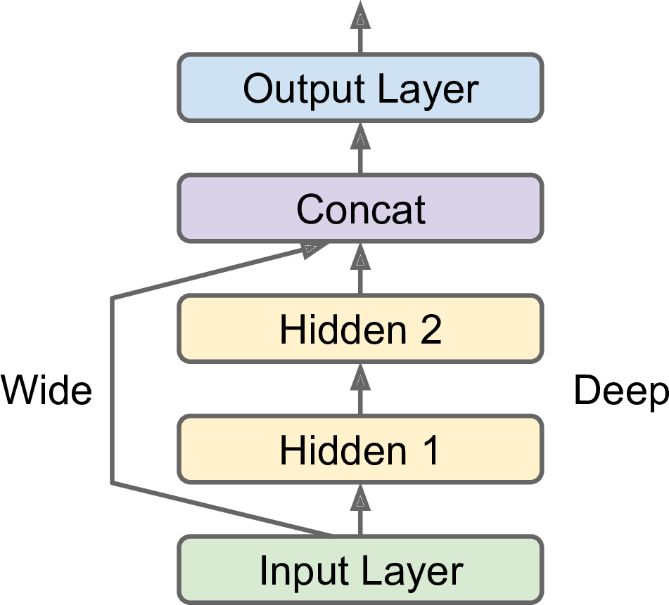

- Chapter 10 – Introduction to Artificial Neural Networks with Keras
- Chapter 11 – Training Deep Neural Networks
- Chapter 12 – Custom Models and Training with TensorFlow
- Using TensorFlow like NumPy
- Customizing Models and Training Algorithms
- Saving/Loading Models with Custom Objects
- Custom Activation Functions, Initializers, Regularizers, and Constraints
- Custom Metrics
- Streaming metrics
- Custom Layers
- Custom Models
- Losses and Metrics Based on Model Internals
- Computing Gradients with Autodiff
- Custom Training Loops
- TensorFlow Functions
- TF Functions and Concrete Functions
- Exploring Function Definitions and Graphs
- How TF Functions Trace Python Functions to Extract Their Computation Graphs
- Using Autograph To Capture Control Flow
- Handling Variables and Other Resources in TF Functions
- Using TF Functions with tf.keras (or Not)
- Custom Optimizers
- Exercises
- References
Chapter 10 – Introduction to Artificial Neural Networks with Keras
First, let’s import a few common modules, ensure MatplotLib plots figures inline and prepare a function to save the figures. We also check that Python 3.5 or later is installed (although Python 2.x may work, it is deprecated so we strongly recommend you use Python 3 instead), as well as Scikit-Learn ≥0.20 and TensorFlow ≥2.0.
# Python ≥3.5 is required
import sys
assert sys.version_info >= (3, 5)
# Scikit-Learn ≥0.20 is required
import sklearn
assert sklearn.__version__ >= "0.20"
try:
# %tensorflow_version only exists in Colab.
%tensorflow_version 2.x
except Exception:
pass
# TensorFlow ≥2.0 is required
import tensorflow as tf
assert tf.__version__ >= "2.0"
# Common imports
import numpy as np
import os
from tensorflow import keras
# to make this notebook's output stable across runs
np.random.seed(42)
# To plot pretty figures
%matplotlib inline
import matplotlib as mpl
import matplotlib.pyplot as plt
mpl.rc('axes', labelsize=14)
mpl.rc('xtick', labelsize=12)
mpl.rc('ytick', labelsize=12)
# Where to save the figures
PROJECT_ROOT_DIR = "."
CHAPTER_ID = "ann"
IMAGES_PATH = os.path.join(PROJECT_ROOT_DIR, "images", CHAPTER_ID)
os.makedirs(IMAGES_PATH, exist_ok=True)
def save_fig(fig_id, tight_layout=True, fig_extension="png", resolution=300):
path = os.path.join(IMAGES_PATH, fig_id + "." + fig_extension)
print("Saving figure", fig_id)
if tight_layout:
plt.tight_layout()
plt.savefig(path, format=fig_extension, dpi=resolution)
tf.__version__'2.4.1'keras.__version__'2.4.0'Perceptrons
The Perceptron is one of the simplest ANN architectures, invented in 1957 by Frank Rosenblatt. It is based on a slightly different artificial neuron (see Figure 10-4) called a threshold logic unit (TLU), or sometimes a linear threshold unit (LTU). The inputs and output are numbers (instead of binary on/off values), and each input connection is associated with a weight. The TLU computes a weighted sum of its inputs (\(\mathbf z = w_1 x_1 + w_2 x_2 +\cdots + w_n x_n = \mathbf x^T\mathbf w\)), then applies a step function to that sum and outputs the result: \(h_{\mathbf w}(\mathbf x) = step(\mathbf z)\), where \(\mathbf z = \mathbf x^T\mathbf w\).
Equation 10-2. Computing the outputs of a fully connected layer
\[h_{\mathbf W,\mathbf b}(\mathbf X)=\phi(\mathbf X\mathbf W+\mathbf b)\] In this equation:
As always, \(\mathbf X\) represents the matrix of input features. It has one row per instance and one column per feature.
The weight matrix \(\mathbf W\) contains all the connection weights except for the ones from the bias neuron. It has one row per input neuron and one column per artificial neuron in the layer.
The bias vector \(\mathbf b\) contains all the connection weights between the bias neuron and the artificial neurons. It has one bias term per artificial neuron.
The function \(\phi\) is called the activation function: when the artificial neurons are TLUs, it is a step function (but we will discuss other activation functions shortly).
Note: we set max_iter and tol explicitly to avoid warnings about the fact that their default value will change in future versions of Scikit-Learn.
import numpy as np
from sklearn.datasets import load_iris
from sklearn.linear_model import Perceptron
iris = load_iris()
X = iris.data[:, (2, 3)] # petal length, petal width
y = (iris.target == 0).astype(np.int)
per_clf = Perceptron(max_iter=1000, tol=1e-3, random_state=42)
per_clf.fit(X, y)
y_pred = per_clf.predict([[2, 0.5]])yarray([1, 1, 1, 1, 1, 1, 1, 1, 1, 1, 1, 1, 1, 1, 1, 1, 1, 1, 1, 1, 1, 1,
1, 1, 1, 1, 1, 1, 1, 1, 1, 1, 1, 1, 1, 1, 1, 1, 1, 1, 1, 1, 1, 1,
1, 1, 1, 1, 1, 1, 0, 0, 0, 0, 0, 0, 0, 0, 0, 0, 0, 0, 0, 0, 0, 0,
0, 0, 0, 0, 0, 0, 0, 0, 0, 0, 0, 0, 0, 0, 0, 0, 0, 0, 0, 0, 0, 0,
0, 0, 0, 0, 0, 0, 0, 0, 0, 0, 0, 0, 0, 0, 0, 0, 0, 0, 0, 0, 0, 0,
0, 0, 0, 0, 0, 0, 0, 0, 0, 0, 0, 0, 0, 0, 0, 0, 0, 0, 0, 0, 0, 0,
0, 0, 0, 0, 0, 0, 0, 0, 0, 0, 0, 0, 0, 0, 0, 0, 0, 0])y_predarray([1])y_pred2 = per_clf.predict([[2, 1]])
y_pred2array([0])a = -per_clf.coef_[0][0] / per_clf.coef_[0][1]
b = -per_clf.intercept_ / per_clf.coef_[0][1]
axes = [0, 5, 0, 2]
x0, x1 = np.meshgrid(
np.linspace(axes[0], axes[1], 500).reshape(-1, 1),
np.linspace(axes[2], axes[3], 200).reshape(-1, 1),
)
X_new = np.c_[x0.ravel(), x1.ravel()]
y_predict = per_clf.predict(X_new)
zz = y_predict.reshape(x0.shape)
plt.figure(figsize=(10, 4))
plt.plot(X[y==0, 0], X[y==0, 1], "bs", label="Not Iris-Setosa")
plt.plot(X[y==1, 0], X[y==1, 1], "yo", label="Iris-Setosa")
plt.plot([axes[0], axes[1]], [a * axes[0] + b, a * axes[1] + b], "k-", linewidth=3)
from matplotlib.colors import ListedColormap
custom_cmap = ListedColormap(['#9898ff', '#fafab0'])
plt.contourf(x0, x1, zz, cmap=custom_cmap)
plt.xlabel("Petal length", fontsize=14)
plt.ylabel("Petal width", fontsize=14)
plt.legend(loc="lower right", fontsize=14)
plt.axis(axes)
save_fig("perceptron_iris_plot")
plt.show()Saving figure perceptron_iris_plot
png
The Multilayer Perceptron (MLP) and Backpropagation
For many years researchers struggled to find a way to train MLPs, without success. But in 1986, David Rumelhart, Geoffrey Hinton, and Ronald Williams published a groundbreaking paper that introduced the backpropagation training algorithm, which is still used today. In short, it is Gradient Descent (introduced in Chapter 4) using an efficient technique for computing the gradients automatically: in just two passes through the network (one forward, one backward), the backpropagation algorithm is able to compute the gradient of the network’s error with regard to every single model parameter. In other words, it can find out how each connection weight and each bias term should be tweaked in order to reduce the error. Once it has these gradients, it just performs a regular Gradient Descent step, and the whole process is repeated until the network converges to the solution.
Let’s run through this algorithm in a bit more detail:
It handles one mini-batch at a time (for example, containing 32 instances each), and it goes through the full training set multiple times. Each pass is called an epoch.
Each mini-batch is passed to the network’s input layer, which sends it to the first hidden layer. The algorithm then computes the output of all the neurons in this layer (for every instance in the mini-batch). The result is passed on to the next layer, its output is computed and passed to the next layer, and so on until we get the output of the last layer, the output layer. This is the forward pass: it is exactly like making predictions, except all intermediate results are preserved since they are needed for the backward pass.
Next, the algorithm measures the network’s output error (i.e., it uses a loss function that compares the desired output and the actual output of the network, and returns some measure of the error).
Then it computes how much each output connection contributed to the error. This is done analytically by applying the chain rule (perhaps the most fundamental rule in calculus), which makes this step fast and precise.
The algorithm then measures how much of these error contributions came from each connection in the layer below, again using the chain rule, working backward until the algorithm reaches the input layer. As explained earlier, this reverse pass efficiently measures the error gradient across all the connection weights in the network by propagating the error gradient backward through the network (hence the name of the algorithm).
Finally, the algorithm performs a Gradient Descent step to tweak all the connection weights in the network, using the error gradients it just computed.
Activation functions
def sigmoid(z):
return 1 / (1 + np.exp(-z))
def relu(z):
return np.maximum(0, z)
def derivative(f, z, eps=0.000001):
return (f(z + eps) - f(z - eps))/(2 * eps)z = np.linspace(-5, 5, 200)
plt.figure(figsize=(11,4))
plt.subplot(121)
plt.plot(z, np.sign(z), "r-", linewidth=1, label="Step")
plt.plot(z, sigmoid(z), "g--", linewidth=2, label="Sigmoid")
plt.plot(z, np.tanh(z), "b-", linewidth=2, label="Tanh")
plt.plot(z, relu(z), "m-.", linewidth=2, label="ReLU")
plt.grid(True)
plt.legend(loc="center right", fontsize=14)
plt.title("Activation functions", fontsize=14)
plt.axis([-5, 5, -1.2, 1.2])
plt.subplot(122)
plt.plot(z, derivative(np.sign, z), "r-", linewidth=1, label="Step")
plt.plot(0, 0, "ro", markersize=5)
plt.plot(0, 0, "rx", markersize=10)
plt.plot(z, derivative(sigmoid, z), "g--", linewidth=2, label="Sigmoid")
plt.plot(z, derivative(np.tanh, z), "b-", linewidth=2, label="Tanh")
plt.plot(z, derivative(relu, z), "m-.", linewidth=2, label="ReLU")
plt.grid(True)
#plt.legend(loc="center right", fontsize=14)
plt.title("Derivatives", fontsize=14)
plt.axis([-5, 5, -0.2, 1.2])
save_fig("activation_functions_plot")
plt.show()Saving figure activation_functions_plotpng
Figure 10-8. Activation functions and their derivatives
It turns out that some of the limitations of Perceptrons can be eliminated by stacking multiple Perceptrons. The resulting ANN is called a Multilayer Perceptron (MLP). An MLP can solve the XOR problem, as you can verify by computing the output of the MLP represented on the right side of Figure 10-6: with inputs (0, 0) or (1, 1), the network outputs 0, and with inputs (0, 1) or (1, 0) it outputs 1. All connections have a weight equal to 1, except the four connections where the weight is shown.

def heaviside(z):
return (z >= 0).astype(z.dtype)
def mlp_xor(x1, x2, activation=heaviside):
return activation(-activation(x1 + x2 - 1.5) + activation(x1 + x2 - 0.5) - 0.5)x1s = np.linspace(-0.2, 1.2, 100)
x2s = np.linspace(-0.2, 1.2, 100)
x1, x2 = np.meshgrid(x1s, x2s)
z1 = mlp_xor(x1, x2, activation=heaviside)
z2 = mlp_xor(x1, x2, activation=sigmoid)
plt.figure(figsize=(10,4))
plt.subplot(121)
plt.contourf(x1, x2, z1)
plt.plot([0, 1], [0, 1], "gs", markersize=20)
plt.plot([0, 1], [1, 0], "y^", markersize=20)
plt.title("Activation function: heaviside", fontsize=14)
plt.grid(True)
plt.subplot(122)
plt.contourf(x1, x2, z2)
plt.plot([0, 1], [0, 1], "gs", markersize=20)
plt.plot([0, 1], [1, 0], "y^", markersize=20)
plt.title("Activation function: sigmoid", fontsize=14)
plt.grid(True)
png
Regression MLP
In general, when building an MLP for regression, you do not want to use any activation function for the output neurons, so they are free to output any range of values. If you want to guarantee that the output will always be positive, then you can use the ReLU activation function in the output layer. Alternatively, you can use the softplus activation function, which is a smooth variant of ReLU: \(\text{softplus}(z) = \log(1 + \exp(z))\). It is close to \(0\) when \(z\) is negative, and close to \(z\) when \(z\) is positive. Finally, if you want to guarantee that the predictions will fall within a given range of values, then you can use the logistic function \[\displaystyle f(x)=\frac {L}{1+e^{-k(x-x_{0})}}\] where - \(x_{0}\), the \(x\) value of the sigmoid’s midpoint; - \(L\), the curve’s maximum value; - \(k\), the logistic growth rate or steepness of the curve.
or the hyperbolic tangent, \[\displaystyle \tanh x=\frac {\sinh x}{\cosh x}=\frac {e^{x}-e^{-x}}{e^{x}+e^{-x}}=\frac {e^{2x}-1}{e^{2x}+1}\]
and then scale the labels to the appropriate range: \(0\) to \(1\) for the logistic function and \(–1\) to \(1\) for the hyperbolic tangent.
The loss function to use during training is typically the mean squared error, but if you have a lot of outliers in the training set, you may prefer to use the mean absolute error instead. Alternatively, you can use the Huber loss, which is a combination of both.
The Huber loss is quadratic when the error is smaller than a threshold \(\delta\) (typically 1) but linear when the error is larger than \(\delta\). The linear part makes it less sensitive to outliers than the mean squared error, and the quadratic part allows it to converge faster and be more precise than the mean absolute error.
Classification MLPs
MLPs can also be used for classification tasks. For a binary classification problem, you just need a single output neuron using the logistic activation function: the output will be a number between 0 and 1, which you can interpret as the estimated probability of the positive class. The estimated probability of the negative class is equal to one minus that number.
If each instance can belong only to a single class, out of three or more possible classes (e.g., classes 0 through 9 for digit image classification), then you need to have one output neuron per class, and you should use the softmax activation function for the whole output layer (see Figure 10-9). The softmax function (introduced in Chapter 4) will ensure that all the estimated probabilities are between 0 and 1 and that they add up to 1 (which is required if the classes are exclusive). This is called multiclass classification.
softmax function: \[\displaystyle \sigma(\mathbf{z})_{i}=\frac {e^{z_i}}{\sum_{j=1}^{K}e^{z_j}}\quad \text{ for } i=1, \cdots, K \text{ and }\mathbf{z}=(z_1,\cdots ,z_K)\in \mathbb{R}^{K}\]
In simple words, it applies the standard exponential function to each element \(z_{i}\) of the input vector \(\displaystyle \mathbf{z}\) and normalizes these values by dividing by the sum of all these exponentials; this normalization ensures that the sum of the components of the output vector $ ()$ is 1.
Regarding the loss function, since we are predicting probability distributions, the cross-entropy loss (also called the log loss, see Chapter 4) is generally a good choice.
Table 10-2. Typical classification MLP architecture
| Hyperparameter | Binary classification | Multilabel binary classification | Multiclass classification |
|---|---|---|---|
| Input and hidden layers | Same as regression | Same as regression | Same as regression |
| # output neurons | 1 | 1 per label | 1 per class |
| Output layer activation | Logistic | Logistic | Softmax |
| Loss function | Cross entropy | Cross entropy | Cross entropy |
Implementing MLPs with Keras
Building an Image Classifier Using the Sequential API
First, we need to load a dataset. In this chapter we will tackle Fashion MNIST, which is a drop-in replacement of MNIST (introduced in Chapter 3). It has the exact same format as MNIST (70,000 grayscale images of 28 × 28 pixels each, with 10 classes), but the images represent fashion items rather than handwritten digits, so each class is more diverse, and the problem turns out to be significantly more challenging than MNIST. For example, a simple linear model reaches about 92% accuracy on MNIST, but only about 83% on Fashion MNIST.
First let’s import TensorFlow and Keras.
import tensorflow as tf
from tensorflow import kerastf.__version__'2.4.1'keras.__version__'2.4.0'Let’s start by loading the fashion MNIST dataset. Keras has a number of functions to load popular datasets in keras.datasets. The dataset is already split for you between a training set and a test set, but it can be useful to split the training set further to have a validation set:
fashion_mnist = keras.datasets.fashion_mnist
(X_train_full, y_train_full), (X_test, y_test) = fashion_mnist.load_data()Downloading data from https://storage.googleapis.com/tensorflow/tf-keras-datasets/train-labels-idx1-ubyte.gz
32768/29515 [=================================] - 0s 0us/step
Downloading data from https://storage.googleapis.com/tensorflow/tf-keras-datasets/train-images-idx3-ubyte.gz
26427392/26421880 [==============================] - 1s 0us/step
Downloading data from https://storage.googleapis.com/tensorflow/tf-keras-datasets/t10k-labels-idx1-ubyte.gz
8192/5148 [===============================================] - 0s 0us/step
Downloading data from https://storage.googleapis.com/tensorflow/tf-keras-datasets/t10k-images-idx3-ubyte.gz
4423680/4422102 [==============================] - 0s 0us/stepThe training set contains 60,000 grayscale images, each 28x28 pixels:
X_train_full.shape(60000, 28, 28)Each pixel intensity is represented as a byte (0 to 255):
X_train_full.dtypedtype('uint8')Let’s split the full training set into a validation set and a (smaller) training set. We also scale the pixel intensities down to the 0-1 range and convert them to floats, by dividing by 255.
X_valid, X_train = X_train_full[:5000] / 255., X_train_full[5000:] / 255.
y_valid, y_train = y_train_full[:5000], y_train_full[5000:]
X_test = X_test / 255.You can plot an image using Matplotlib’s imshow() function, with a 'binary'
color map:
plt.imshow(X_train[0], cmap="binary")
plt.axis('off')
plt.show()png
The labels are the class IDs (represented as uint8), from 0 to 9:
y_trainarray([4, 0, 7, ..., 3, 0, 5], dtype=uint8)Here are the corresponding class names:
class_names = ["T-shirt/top", "Trouser", "Pullover", "Dress", "Coat",
"Sandal", "Shirt", "Sneaker", "Bag", "Ankle boot"]So the first image in the training set is a coat:
class_names[y_train[0]]'Coat'The validation set contains 5,000 images, and the test set contains 10,000 images:
X_valid.shape(5000, 28, 28)X_test.shape(10000, 28, 28)Let’s take a look at a sample of the images in the dataset:
n_rows = 4
n_cols = 10
plt.figure(figsize=(n_cols * 1.2, n_rows * 1.2))
for row in range(n_rows):
for col in range(n_cols):
index = n_cols * row + col
plt.subplot(n_rows, n_cols, index + 1)
plt.imshow(X_train[index], cmap="binary", interpolation="nearest")
plt.axis('off')
plt.title(class_names[y_train[index]], fontsize=12)
plt.subplots_adjust(wspace=0.2, hspace=0.5)
save_fig('fashion_mnist_plot', tight_layout=False)
plt.show()Saving figure fashion_mnist_plotpng
Figure 10-11. Samples from Fashion MNIST
CREATING THE MODEL USING THE SEQUENTIAL API
Now let’s build the neural network! Here is a classification MLP with two hidden layers:
model = keras.models.Sequential()
model.add(keras.layers.Flatten(input_shape=[28, 28]))
model.add(keras.layers.Dense(300, activation="relu"))
model.add(keras.layers.Dense(100, activation="relu"))
model.add(keras.layers.Dense(10, activation="softmax"))Let’s go through this code line by line:
The first line creates a
Sequential model. This is the simplest kind of Keras model for neural networks that are just composed of a single stack of layers connected sequentially. This is called the Sequential API.Next, we build the first layer and add it to the model. It is a
Flattenlayer whose role is to convert each input image into a 1D array: if it receives input dataX, it computesX.reshape(-1, 1). This layer does not have any parameters; it is just there to do some simple preprocessing. Since it is the first layer in the model, you should specify theinput_shape, which doesn’t include the batch size, only the shape of the instances. Alternatively, you could add akeras.layers.InputLayeras the first layer, settinginput_shape=[28,28].Next we add a
Densehidden layer with 300 neurons. It will use the ReLU activation function. EachDenselayer manages its own weight matrix, containing all the connection weights between the neurons and their inputs. It also manages a vector of bias terms (one per neuron). When it receives some input data, it computes Equation 10-2.Then we add a second
Densehidden layer with 100 neurons, also using the ReLU activation function.Finally, we add a
Denseoutput layer with 10 neurons (one per class), using the softmax activation function (because the classes are exclusive).
Specifying
activation="relu"is equivalent to specifyingactivation=keras.activations.relu.
keras.backend.clear_session()
np.random.seed(42)
tf.random.set_seed(42)Instead of adding the layers one by one as we just did, you can pass a list of layers when creating the Sequential model:
model = keras.models.Sequential([
keras.layers.Flatten(input_shape=[28, 28]),
keras.layers.Dense(300, activation="relu"),
keras.layers.Dense(100, activation="relu"),
keras.layers.Dense(10, activation="softmax")
])model.layers[<tensorflow.python.keras.layers.core.Flatten at 0x7f41a811d070>,
<tensorflow.python.keras.layers.core.Dense at 0x7f41a811deb0>,
<tensorflow.python.keras.layers.core.Dense at 0x7f41a811d130>,
<tensorflow.python.keras.layers.core.Dense at 0x7f41a80b1100>]USING CODE EXAMPLES FROM KERAS.IO
Code examples documented on keras.io will work fine with tf.keras, but you need to change the imports. For example, consider this keras.io code:
from keras.layers import Dense
output_layer = Dense(10)You must change the imports like this:
from tensorflow.keras.layers import Dense
output_layer = Dense(10)Or simply use full paths, if you prefer:
from tensorflow import keras
output_layer = keras.layers.Dense(10)This approach is more verbose, but you can easily see which packages to use, and to avoid confusion between standard classes and custom classes. In production code, I prefer the previous approach. Many people also use from
tensorflow.keras import layersfollowed bylayers.Dense(10).
The model’s summary() method displays all the model’s layers, including each layer’s name (which is automatically generated unless you set it when creating the layer), its output shape (None means the batch size can be anything), and its number of parameters. The summary ends with the total number of parameters, including trainable and non-trainable parameters. Here we only have trainable parameters (we will see examples of non-trainable parameters in Chapter 11):
model.summary()Model: "sequential"
_________________________________________________________________
Layer (type) Output Shape Param #
=================================================================
flatten (Flatten) (None, 784) 0
_________________________________________________________________
dense (Dense) (None, 300) 235500
_________________________________________________________________
dense_1 (Dense) (None, 100) 30100
_________________________________________________________________
dense_2 (Dense) (None, 10) 1010
=================================================================
Total params: 266,610
Trainable params: 266,610
Non-trainable params: 0
_________________________________________________________________Note that Dense layers often have a lot of parameters. For example, the first hidden layer has 784 × 300 connection weights, plus 300 bias terms, which adds up to 235,500 parameters! This gives the model quite a lot of flexibility to fit the training data, but it also means that the model runs the risk of overfitting, especially when you do not have a lot of training data. We will come back to this later.
You can easily get a model’s list of layers, to fetch a layer by its index, or you can fetch it by name:
keras.utils.plot_model(model, "my_fashion_mnist_model.png", show_shapes=True)('Failed to import pydot. You must `pip install pydot` and install graphviz (https://graphviz.gitlab.io/download/), ', 'for `pydotprint` to work.')hidden1 = model.layers[1]
hidden1.name'dense'model.get_layer(hidden1.name) is hidden1TrueAll the parameters of a layer can be accessed using its get_weights() and set_weights() methods. For a Dense layer, this includes both the connection weights and the bias terms:
weights, biases = hidden1.get_weights()weightsarray([[ 0.02448617, -0.00877795, -0.02189048, ..., -0.02766046,
0.03859074, -0.06889391],
[ 0.00476504, -0.03105379, -0.0586676 , ..., 0.00602964,
-0.02763776, -0.04165364],
[-0.06189284, -0.06901957, 0.07102345, ..., -0.04238207,
0.07121518, -0.07331658],
...,
[-0.03048757, 0.02155137, -0.05400612, ..., -0.00113463,
0.00228987, 0.05581069],
[ 0.07061854, -0.06960931, 0.07038955, ..., -0.00384101,
0.00034875, 0.02878492],
[-0.06022581, 0.01577859, -0.02585464, ..., -0.00527829,
0.00272203, -0.06793761]], dtype=float32)weights.shape(784, 300)biasesarray([0., 0., 0., 0., 0., 0., 0., 0., 0., 0., 0., 0., 0., 0., 0., 0., 0.,
0., 0., 0., 0., 0., 0., 0., 0., 0., 0., 0., 0., 0., 0., 0., 0., 0.,
0., 0., 0., 0., 0., 0., 0., 0., 0., 0., 0., 0., 0., 0., 0., 0., 0.,
0., 0., 0., 0., 0., 0., 0., 0., 0., 0., 0., 0., 0., 0., 0., 0., 0.,
0., 0., 0., 0., 0., 0., 0., 0., 0., 0., 0., 0., 0., 0., 0., 0., 0.,
0., 0., 0., 0., 0., 0., 0., 0., 0., 0., 0., 0., 0., 0., 0., 0., 0.,
0., 0., 0., 0., 0., 0., 0., 0., 0., 0., 0., 0., 0., 0., 0., 0., 0.,
0., 0., 0., 0., 0., 0., 0., 0., 0., 0., 0., 0., 0., 0., 0., 0., 0.,
0., 0., 0., 0., 0., 0., 0., 0., 0., 0., 0., 0., 0., 0., 0., 0., 0.,
0., 0., 0., 0., 0., 0., 0., 0., 0., 0., 0., 0., 0., 0., 0., 0., 0.,
0., 0., 0., 0., 0., 0., 0., 0., 0., 0., 0., 0., 0., 0., 0., 0., 0.,
0., 0., 0., 0., 0., 0., 0., 0., 0., 0., 0., 0., 0., 0., 0., 0., 0.,
0., 0., 0., 0., 0., 0., 0., 0., 0., 0., 0., 0., 0., 0., 0., 0., 0.,
0., 0., 0., 0., 0., 0., 0., 0., 0., 0., 0., 0., 0., 0., 0., 0., 0.,
0., 0., 0., 0., 0., 0., 0., 0., 0., 0., 0., 0., 0., 0., 0., 0., 0.,
0., 0., 0., 0., 0., 0., 0., 0., 0., 0., 0., 0., 0., 0., 0., 0., 0.,
0., 0., 0., 0., 0., 0., 0., 0., 0., 0., 0., 0., 0., 0., 0., 0., 0.,
0., 0., 0., 0., 0., 0., 0., 0., 0., 0., 0.], dtype=float32)biases.shape(300,)Notice that the Dense layer initialized the connection weights randomly (which is needed to break symmetry, as we discussed earlier), and the biases were initialized to zeros, which is fine. If you ever want to use a different initialization method, you can set kernel_initializer (kernel is another name for the matrix of connection weights) or bias_initializer when creating the layer. We will discuss initializers further in Chapter 11, but if you want the full list, see https://keras.io/initializers/.
The shape of the weight matrix depends on the number of inputs. This is why it is recommended to specify the
input_shapewhen creating the first layer in aSequentialmodel. However, if you do not specify the input shape, it’s OK: Keras will simply wait until it knows the input shape before it actually builds the model. This will happen either when you feed it actual data (e.g., during training), or when you call itsbuild()method. Until the model is really built, the layers will not have any weights, and you will not be able to do certain things (such as print the model summary or save the model). So, if you know the input shape when creating the model, it is best to specify it.
COMPILING THE MODEL
After a model is created, you must call its compile() method to specify the loss function and the optimizer to use. Optionally, you can specify a list of extra metrics to compute during training and evaluation:
model.compile(loss="sparse_categorical_crossentropy",
optimizer="sgd",
metrics=["accuracy"])This is equivalent to:
model.compile(loss=keras.losses.sparse_categorical_crossentropy,
optimizer=keras.optimizers.SGD(),
metrics=[keras.metrics.sparse_categorical_accuracy])This code requires some explanation. First, we use the "sparse_categorical_crossentropy" loss because we have sparse labels (i.e., for each instance, there is just a target class index, from 0 to 9 in this case), and the classes are exclusive. If instead we had one target probability per class for each instance (such as one-hot vectors, e.g. \([0., 0., 0., 1., 0., 0., 0., 0., 0., 0.]\) to represent class 3), then we would need to use the "categorical_crossentropy" loss instead. If we were doing binary classification (with one or more binary labels), then we would use the "sigmoid" (i.e., logistic) activation function in the output layer instead of the "softmax" activation function, and we would use the "binary_crossentropy" loss.
If you want to convert sparse labels (i.e., class indices) to one-hot vector labels, use the keras.utils.to_categorical() function. To go the other way round, use the np.argmax() function with axis=1.
Regarding the optimizer, "sgd" means that we will train the model using simple Stochastic Gradient Descent. In other words, Keras will perform the backpropagation algorithm described earlier (i.e., reverse-mode autodiff plus Gradient Descent). We will discuss more efficient optimizers in Chapter 11 (they improve the Gradient Descent part, not the autodiff).
When using the
SGDoptimizer, it is important to tune the learning rate. So, you will generally want to useoptimizer=keras.optimizers.SGD(lr=???)to set the learning rate, rather thanoptimizer="sgd", which defaults tolr=0.01.
Finally, since this is a classifier, it’s useful to measure its "accuracy" during training and evaluation.
TRAINING AND EVALUATING THE MODEL
Now the model is ready to be trained. For this we simply need to call its fit() method:
history = model.fit(X_train, y_train, epochs=30,
validation_data=(X_valid, y_valid))Epoch 1/30
1719/1719 [==============================] - 3s 2ms/step - loss: 1.0188 - accuracy: 0.6805 - val_loss: 0.5218 - val_accuracy: 0.8210
Epoch 2/30
1719/1719 [==============================] - 3s 2ms/step - loss: 0.5028 - accuracy: 0.8260 - val_loss: 0.4354 - val_accuracy: 0.8524
Epoch 3/30
1719/1719 [==============================] - 3s 2ms/step - loss: 0.4484 - accuracy: 0.8426 - val_loss: 0.5320 - val_accuracy: 0.7986
Epoch 4/30
1719/1719 [==============================] - 3s 2ms/step - loss: 0.4206 - accuracy: 0.8525 - val_loss: 0.3916 - val_accuracy: 0.8654
Epoch 5/30
1719/1719 [==============================] - 3s 2ms/step - loss: 0.4059 - accuracy: 0.8585 - val_loss: 0.3748 - val_accuracy: 0.8694
Epoch 6/30
1719/1719 [==============================] - 3s 2ms/step - loss: 0.3751 - accuracy: 0.8675 - val_loss: 0.3706 - val_accuracy: 0.8728
Epoch 7/30
1719/1719 [==============================] - 3s 2ms/step - loss: 0.3650 - accuracy: 0.8707 - val_loss: 0.3630 - val_accuracy: 0.8720
Epoch 8/30
1719/1719 [==============================] - 3s 2ms/step - loss: 0.3476 - accuracy: 0.8758 - val_loss: 0.3842 - val_accuracy: 0.8636
Epoch 9/30
1719/1719 [==============================] - 3s 2ms/step - loss: 0.3479 - accuracy: 0.8763 - val_loss: 0.3589 - val_accuracy: 0.8702
Epoch 10/30
1719/1719 [==============================] - 3s 2ms/step - loss: 0.3291 - accuracy: 0.8840 - val_loss: 0.3433 - val_accuracy: 0.8774
Epoch 11/30
1719/1719 [==============================] - 3s 2ms/step - loss: 0.3213 - accuracy: 0.8840 - val_loss: 0.3430 - val_accuracy: 0.8782
Epoch 12/30
1719/1719 [==============================] - 3s 2ms/step - loss: 0.3117 - accuracy: 0.8870 - val_loss: 0.3312 - val_accuracy: 0.8818
Epoch 13/30
1719/1719 [==============================] - 3s 2ms/step - loss: 0.3047 - accuracy: 0.8903 - val_loss: 0.3272 - val_accuracy: 0.8878
Epoch 14/30
1719/1719 [==============================] - 3s 2ms/step - loss: 0.2986 - accuracy: 0.8920 - val_loss: 0.3406 - val_accuracy: 0.8782
Epoch 15/30
1719/1719 [==============================] - 3s 2ms/step - loss: 0.2929 - accuracy: 0.8946 - val_loss: 0.3215 - val_accuracy: 0.8862
Epoch 16/30
1719/1719 [==============================] - 3s 2ms/step - loss: 0.2858 - accuracy: 0.8985 - val_loss: 0.3095 - val_accuracy: 0.8904
Epoch 17/30
1719/1719 [==============================] - 3s 2ms/step - loss: 0.2775 - accuracy: 0.9005 - val_loss: 0.3570 - val_accuracy: 0.8722
Epoch 18/30
1719/1719 [==============================] - 3s 2ms/step - loss: 0.2772 - accuracy: 0.9007 - val_loss: 0.3134 - val_accuracy: 0.8906
Epoch 19/30
1719/1719 [==============================] - 3s 2ms/step - loss: 0.2734 - accuracy: 0.9024 - val_loss: 0.3123 - val_accuracy: 0.8894
Epoch 20/30
1719/1719 [==============================] - 3s 2ms/step - loss: 0.2691 - accuracy: 0.9044 - val_loss: 0.3278 - val_accuracy: 0.8814
Epoch 21/30
1719/1719 [==============================] - 3s 2ms/step - loss: 0.2664 - accuracy: 0.9054 - val_loss: 0.3069 - val_accuracy: 0.8904
Epoch 22/30
1719/1719 [==============================] - 3s 2ms/step - loss: 0.2607 - accuracy: 0.9055 - val_loss: 0.2974 - val_accuracy: 0.8964
Epoch 23/30
1719/1719 [==============================] - 3s 2ms/step - loss: 0.2544 - accuracy: 0.9065 - val_loss: 0.2991 - val_accuracy: 0.8930
Epoch 24/30
1719/1719 [==============================] - 3s 2ms/step - loss: 0.2447 - accuracy: 0.9121 - val_loss: 0.3097 - val_accuracy: 0.8886
Epoch 25/30
1719/1719 [==============================] - 3s 2ms/step - loss: 0.2486 - accuracy: 0.9118 - val_loss: 0.2985 - val_accuracy: 0.8942
Epoch 26/30
1719/1719 [==============================] - 3s 2ms/step - loss: 0.2423 - accuracy: 0.9137 - val_loss: 0.3080 - val_accuracy: 0.8876
Epoch 27/30
1719/1719 [==============================] - 3s 2ms/step - loss: 0.2367 - accuracy: 0.9163 - val_loss: 0.3003 - val_accuracy: 0.8954
Epoch 28/30
1719/1719 [==============================] - 3s 2ms/step - loss: 0.2308 - accuracy: 0.9175 - val_loss: 0.2995 - val_accuracy: 0.8942
Epoch 29/30
1719/1719 [==============================] - 3s 2ms/step - loss: 0.2273 - accuracy: 0.9171 - val_loss: 0.3032 - val_accuracy: 0.8898
Epoch 30/30
1719/1719 [==============================] - 3s 2ms/step - loss: 0.2248 - accuracy: 0.9208 - val_loss: 0.3035 - val_accuracy: 0.8926We pass it the input features (X_train) and the target classes (y_train), as well as the number of epochs to train (or else it would default to just 1, which would definitely not be enough to converge to a good solution). We also pass a validation set (this is optional). Keras will measure the loss and the extra metrics on this set at the end of each epoch, which is very useful to see how well the model really performs. If the performance on the training set is much better than on the validation set, your model is probably overfitting the training set (or there is a bug, such as a data mismatch between the training set and the validation set).
And that’s it! The neural network is trained. At each epoch during training, Keras displays the number of instances processed so far (along with a progress bar), the mean training time per sample, and the loss and accuracy (or any other extra metrics you asked for) on both the training set and the validation set. You can see that the training loss went down, which is a good sign, and the validation accuracy reached 89.26% after 30 epochs. That’s not too far from the training accuracy, so there does not seem to be much overfitting going on.
Instead of passing a validation set using the
validation_dataargument, you could setvalidation_splitto the ratio of the training set that you want Keras to use for validation. For example,validation_split=0.1tells Keras to use the last 10% of the data (before shuffling) for validation.
If the training set was very skewed, with some classes being overrepresented and others underrepresented, it would be useful to set the class_weight argument when calling the fit() method, which would give a larger weight to underrepresented classes and a lower weight to overrepresented classes. These weights would be used by Keras when computing the loss. If you need per-instance weights, set the sample_weight argument (if both class_weight and sample_weight are provided, Keras multiplies them). Per-instance weights could be useful if some instances were labeled by experts while others were labeled using a crowdsourcing platform: you might want to give more weight to the former. You can also provide sample weights (but not class weights) for the validation set by adding them as a third item in the validation_data tuple.
The fit() method returns a History object containing the training parameters (history.params), the list of epochs it went through (history.epoch), and most importantly a dictionary (history.history) containing the loss and extra metrics it measured at the end of each epoch on the training set and on the validation set (if any). If you use this dictionary to create a pandas DataFrame and call its plot() method, you get the learning curves shown in Figure 10-12:
history.params{'verbose': 1, 'epochs': 30, 'steps': 1719}print(history.epoch)[0, 1, 2, 3, 4, 5, 6, 7, 8, 9, 10, 11, 12, 13, 14, 15, 16, 17, 18, 19, 20, 21, 22, 23, 24, 25, 26, 27, 28, 29]history.history.keys()dict_keys(['loss', 'accuracy', 'val_loss', 'val_accuracy'])import pandas as pd
pd.DataFrame(history.history).plot(figsize=(8, 5))
plt.grid(True)
plt.gca().set_ylim(0, 1)
save_fig("keras_learning_curves_plot")
plt.show()Saving figure keras_learning_curves_plot
png
Figure 10-12. Learning curves: the mean training loss and accuracy measured over each epoch, and the mean validation loss and accuracy measured at the end of each epoch
You can see that both the training accuracy and the validation accuracy steadily increase during training, while the training loss and the validation loss decrease. Good! Moreover, the validation curves are close to the training curves, which means that there is not too much overfitting. In this particular case, the model looks like it performed better on the validation set than on the training set at the beginning of training. But that’s not the case: indeed, the validation error is computed at the end of each epoch, while the training error is computed using a running mean during each epoch. So the training curve should be shifted by half an epoch to the left. If you do that, you will see that the training and validation curves overlap almost perfectly at the beginning of training.
The training set performance ends up beating the validation performance, as is generally the case when you train for long enough. You can tell that the model has not quite converged yet, as the validation loss is still going down, so you should probably continue training. It’s as simple as calling the fit() method again, since Keras just continues training where it left off (you should be able to reach close to 89% validation accuracy).
If you are not satisfied with the performance of your model, you should go back and tune the hyperparameters. The first one to check is the learning rate. If that doesn’t help, try another optimizer (and always retune the learning rate after changing any hyperparameter). If the performance is still not great, then try tuning model hyperparameters such as the number of layers, the number of neurons per layer, and the types of activation functions to use for each hidden layer. You can also try tuning other hyperparameters, such as the batch size (it can be set in the fit() method using the batch_size argument, which defaults to 32). We will get back to hyperparameter tuning at the end of this chapter. Once you are satisfied with your model’s validation accuracy, you should evaluate it on the test set to estimate the generalization error before you deploy the model to production. You can easily do this using the evaluate() method (it also supports several other arguments, such as batch_size and sample_weight; please check the documentation for more details):
model.evaluate(X_test, y_test)313/313 [==============================] - 0s 1ms/step - loss: 0.3371 - accuracy: 0.8821
[0.3370836079120636, 0.882099986076355]USING THE MODEL TO MAKE PREDICTIONS
Next, we can use the model’s predict() method to make predictions on new instances. Since we don’t have actual new instances, we will just use the first three instances of the test set:
X_new = X_test[:3]
y_proba = model.predict(X_new)
y_proba.round(2)array([[0. , 0. , 0. , 0. , 0. , 0.01, 0. , 0.03, 0. , 0.96],
[0. , 0. , 0.99, 0. , 0.01, 0. , 0. , 0. , 0. , 0. ],
[0. , 1. , 0. , 0. , 0. , 0. , 0. , 0. , 0. , 0. ]],
dtype=float32)Warning: model.predict_classes(X_new) is deprecated. It is replaced with np.argmax(model.predict(X_new), axis=-1).
#y_pred = model.predict_classes(X_new) # deprecated
y_pred = np.argmax(model.predict(X_new), axis=-1)
y_predarray([9, 2, 1])np.array(class_names)[y_pred]array(['Ankle boot', 'Pullover', 'Trouser'], dtype='<U11')y_new = y_test[:3]
y_newarray([9, 2, 1], dtype=uint8)plt.figure(figsize=(7.2, 2.4))
for index, image in enumerate(X_new):
plt.subplot(1, 3, index + 1)
plt.imshow(image, cmap="binary", interpolation="nearest")
plt.axis('off')
plt.title(class_names[y_test[index]], fontsize=12)
plt.subplots_adjust(wspace=0.2, hspace=0.5)
save_fig('fashion_mnist_images_plot', tight_layout=False)
plt.show()Saving figure fashion_mnist_images_plot
png
Figure 10-13. Correctly classified Fashion MNIST images
Building a Regression MLP Using the Sequential API
Let’s switch to the California housing problem and tackle it using a regression neural network. For simplicity, we will use Scikit-Learn’s fetch_california_housing() function to load the data. This dataset is simpler than the one we used in Chapter 2, since it contains only numerical features (there is no ocean_proximity feature), and there is no missing value. After loading the data, we split it into a training set, a validation set, and a test set, and we scale all the features:
Let’s load, split and scale the California housing dataset (the original one, not the modified one as in chapter 2):
from sklearn.datasets import fetch_california_housing
from sklearn.model_selection import train_test_split
from sklearn.preprocessing import StandardScaler
import tensorflow as tf
from tensorflow import keras
housing = fetch_california_housing()
X_train_full, X_test, y_train_full, y_test = train_test_split(housing.data, housing.target, random_state=42)
X_train, X_valid, y_train, y_valid = train_test_split(X_train_full, y_train_full, random_state=42)
scaler = StandardScaler()
X_train = scaler.fit_transform(X_train)
X_valid = scaler.transform(X_valid)
X_test = scaler.transform(X_test)np.random.seed(42)
tf.random.set_seed(42)X_train.shape(11610, 8)model = keras.models.Sequential([
keras.layers.Dense(30, activation="relu", input_shape=X_train.shape[1:]),
keras.layers.Dense(1)
])
model.compile(loss="mean_squared_error", optimizer=keras.optimizers.SGD(lr=1e-3))
history = model.fit(X_train, y_train, epochs=20, validation_data=(X_valid, y_valid))
mse_test = model.evaluate(X_test, y_test)
X_new = X_test[:3]
y_pred = model.predict(X_new)Epoch 1/20
363/363 [==============================] - 1s 3ms/step - loss: 2.2656 - val_loss: 0.8560
Epoch 2/20
363/363 [==============================] - 0s 784us/step - loss: 0.7413 - val_loss: 0.6531
Epoch 3/20
363/363 [==============================] - 0s 794us/step - loss: 0.6604 - val_loss: 0.6099
Epoch 4/20
363/363 [==============================] - 0s 771us/step - loss: 0.6245 - val_loss: 0.5658
Epoch 5/20
363/363 [==============================] - 0s 699us/step - loss: 0.5770 - val_loss: 0.5355
Epoch 6/20
363/363 [==============================] - 0s 778us/step - loss: 0.5609 - val_loss: 0.5173
Epoch 7/20
363/363 [==============================] - 0s 734us/step - loss: 0.5500 - val_loss: 0.5081
Epoch 8/20
363/363 [==============================] - 0s 716us/step - loss: 0.5200 - val_loss: 0.4799
Epoch 9/20
363/363 [==============================] - 0s 786us/step - loss: 0.5051 - val_loss: 0.4690
Epoch 10/20
363/363 [==============================] - 0s 752us/step - loss: 0.4910 - val_loss: 0.4656
Epoch 11/20
363/363 [==============================] - 0s 745us/step - loss: 0.4794 - val_loss: 0.4482
Epoch 12/20
363/363 [==============================] - 0s 740us/step - loss: 0.4656 - val_loss: 0.4479
Epoch 13/20
363/363 [==============================] - 0s 991us/step - loss: 0.4693 - val_loss: 0.4296
Epoch 14/20
363/363 [==============================] - 0s 725us/step - loss: 0.4537 - val_loss: 0.4233
Epoch 15/20
363/363 [==============================] - 0s 706us/step - loss: 0.4586 - val_loss: 0.4176
Epoch 16/20
363/363 [==============================] - 0s 718us/step - loss: 0.4612 - val_loss: 0.4123
Epoch 17/20
363/363 [==============================] - 0s 764us/step - loss: 0.4449 - val_loss: 0.4071
Epoch 18/20
363/363 [==============================] - 0s 830us/step - loss: 0.4407 - val_loss: 0.4037
Epoch 19/20
363/363 [==============================] - 0s 771us/step - loss: 0.4184 - val_loss: 0.4000
Epoch 20/20
363/363 [==============================] - 0s 761us/step - loss: 0.4128 - val_loss: 0.3969
162/162 [==============================] - 0s 453us/step - loss: 0.4212import pandas as pd
plt.plot(pd.DataFrame(history.history))
plt.grid(True)
plt.gca().set_ylim(0, 1)
plt.show()
png
y_predarray([[0.3885664],
[1.6792021],
[3.1022797]], dtype=float32)As you can see, the Sequential API is quite easy to use. However, although Sequential models are extremely common, it is sometimes useful to build neural networks with more complex topologies, or with multiple inputs or outputs. For this purpose, Keras offers the Functional API.
Building Complex Models Using the Functional API
Not all neural network models are simply sequential. Some may have complex topologies. Some may have multiple inputs and/or multiple outputs. For example, a Wide & Deep neural network (see paper) connects all or part of the inputs directly to the output layer, as shown in Figure 10-14. This architecture makes it possible for the neural network to learn both deep patterns (using the deep path) and simple rules (through the short path). In contrast, a regular MLP forces all the data to flow through the full stack of layers; thus, simple patterns in the data may end up being distorted by this sequence of transformations.
np.random.seed(42)
tf.random.set_seed(42)X_train.shape[1:](8,)input_ = keras.layers.Input(shape=X_train.shape[1:])
hidden1 = keras.layers.Dense(30, activation="relu")(input_)
hidden2 = keras.layers.Dense(30, activation="relu")(hidden1)
concat = keras.layers.concatenate([input_, hidden2])
output = keras.layers.Dense(1)(concat)
model = keras.models.Model(inputs=[input_], outputs=[output])model.summary()Model: "model"
__________________________________________________________________________________________________
Layer (type) Output Shape Param # Connected to
==================================================================================================
input_1 (InputLayer) [(None, 28, 28)] 0
__________________________________________________________________________________________________
dense_6 (Dense) (None, 28, 30) 870 input_1[0][0]
__________________________________________________________________________________________________
dense_7 (Dense) (None, 28, 30) 930 dense_6[0][0]
__________________________________________________________________________________________________
concatenate (Concatenate) (None, 28, 58) 0 input_1[0][0]
dense_7[0][0]
__________________________________________________________________________________________________
dense_8 (Dense) (None, 28, 1) 59 concatenate[0][0]
==================================================================================================
Total params: 1,859
Trainable params: 1,859
Non-trainable params: 0
__________________________________________________________________________________________________Let’s go through each line of this code:
First, we need to create an
Inputobject. This is a specification of the kind of input the model will get, including itsshapeanddtype. A model may actually have multiple inputs, as we will see shortly.Next, we create a
Denselayer with 30 neurons, using the ReLU activation function. As soon as it is created, notice that we call it like a function, passing it the input. This is why this is called the Functional API. Note that we are just telling Keras how it should connect the layers together; no actual data is being processed yet.We then create a second hidden layer, and again we use it as a function. Note that we pass it the output of the first hidden layer.
Next, we create a Concatenate layer, and once again we immediately use it like a function, to concatenate the input and the output of the second hidden layer. You may prefer the
keras.layers.concatenate()function, which creates aConcatenatelayer and immediately calls it with the given inputs.Then we create the output layer, with a single neuron and no activation function, and we call it like a function, passing it the result of the concatenation.
Lastly, we create a Keras
Model, specifying which inputs and outputs to use.
model.compile(loss="mean_squared_error", optimizer=keras.optimizers.SGD(lr=1e-3))
history = model.fit(X_train, y_train, epochs=20,
validation_data=(X_valid, y_valid))
mse_test = model.evaluate(X_test, y_test)
y_pred = model.predict(X_new)Epoch 1/20
1719/1719 [==============================] - 2s 1ms/step - loss: 9.4885 - val_loss: 4.3752
Epoch 2/20
1719/1719 [==============================] - 2s 1ms/step - loss: 4.4806 - val_loss: 4.1149
Epoch 3/20
1719/1719 [==============================] - 2s 1ms/step - loss: 4.2529 - val_loss: 4.0054
Epoch 4/20
1719/1719 [==============================] - 2s 1ms/step - loss: 4.1791 - val_loss: 3.9474
Epoch 5/20
1719/1719 [==============================] - 2s 1ms/step - loss: 4.1009 - val_loss: 3.8876
Epoch 6/20
1719/1719 [==============================] - 2s 1ms/step - loss: 4.0324 - val_loss: 3.8561
Epoch 7/20
1719/1719 [==============================] - 2s 1ms/step - loss: 4.0366 - val_loss: 3.8419
Epoch 8/20
1719/1719 [==============================] - 2s 1ms/step - loss: 3.9989 - val_loss: 3.8109
Epoch 9/20
1719/1719 [==============================] - 2s 1ms/step - loss: 3.9818 - val_loss: 3.8144
Epoch 10/20
1719/1719 [==============================] - 2s 1ms/step - loss: 3.9385 - val_loss: 3.7785
Epoch 11/20
1719/1719 [==============================] - 2s 1ms/step - loss: 3.9593 - val_loss: 3.7665
Epoch 12/20
1719/1719 [==============================] - 2s 1ms/step - loss: 3.9467 - val_loss: 3.7627
Epoch 13/20
1719/1719 [==============================] - 2s 1ms/step - loss: 3.9012 - val_loss: 3.7331
Epoch 14/20
1719/1719 [==============================] - 2s 1ms/step - loss: 3.8793 - val_loss: 3.7258
Epoch 15/20
1719/1719 [==============================] - 2s 1ms/step - loss: 3.8774 - val_loss: 3.7156
Epoch 16/20
1719/1719 [==============================] - 2s 1ms/step - loss: 3.8469 - val_loss: 3.7197
Epoch 17/20
1719/1719 [==============================] - 2s 1ms/step - loss: 3.8618 - val_loss: 3.7283
Epoch 18/20
1719/1719 [==============================] - 2s 1ms/step - loss: 3.8123 - val_loss: 3.6755
Epoch 19/20
1719/1719 [==============================] - 2s 1ms/step - loss: 3.8215 - val_loss: 3.6670
Epoch 20/20
1719/1719 [==============================] - 2s 1ms/step - loss: 3.8190 - val_loss: 3.6581
313/313 [==============================] - 0s 882us/step - loss: 3.8251But what if you want to send a subset of the features through the wide path and a different subset (possibly overlapping) through the deep path (see Figure 10-15)? In this case, one solution is to use multiple inputs. For example, suppose we want to send five features through the wide path (features 0 to 4), and six features through the deep path (features 2 to 7):What if you want to send different subsets of input features through the wide or deep paths? We will send 5 features (features 0 to 4), and 6 through the deep path (features 2 to 7). Note that 3 features will go through both (features 2, 3 and 4).

The code is self-explanatory. You should name at least the most important layers, especially when the model gets a bit complex like this. Note that we specified inputs=[input_A, input_B] when creating the model. Now we can compile the model as usual, but when we call the fit() method, instead of passing a single input matrix X_train, we must pass a pair of matrices (X_train_A, X_train_B): one per input. The same is true for X_valid, and also for X_test and X_new when you call evaluate() or predict():
np.random.seed(42)
tf.random.set_seed(42)X_train.shape[1:](28, 28)input_A = keras.layers.Input(shape=[5,], name="wide_input")
input_B = keras.layers.Input(shape=[6,], name="deep_input")
hidden1 = keras.layers.Dense(30, activation="relu")(input_B)
hidden2 = keras.layers.Dense(30, activation="relu")(hidden1)
concat = keras.layers.concatenate([input_A, hidden2])
output = keras.layers.Dense(1, name="output")(concat)
model = keras.Model(inputs=[input_A, input_B], outputs=[output])X_train.shape(55000, 28, 28)X_train[:, :5].shape(55000, 5, 28)model.compile(loss="mse", optimizer=keras.optimizers.SGD(lr=1e-3))
X_train_A, X_train_B = X_train[:, :5], X_train[:, 2:]
X_valid_A, X_valid_B = X_valid[:, :5], X_valid[:, 2:]
X_test_A, X_test_B = X_test[:, :5], X_test[:, 2:]
X_new_A, X_new_B = X_test_A[:3], X_test_B[:3]
history = model.fit((X_train_A, X_train_B), y_train, epochs=20,
validation_data=((X_valid_A, X_valid_B), y_valid))
mse_test = model.evaluate((X_test_A, X_test_B), y_test)
y_pred = model.predict((X_new_A, X_new_B))Epoch 1/20
363/363 [==============================] - 1s 1ms/step - loss: 3.1941 - val_loss: 0.8072
Epoch 2/20
363/363 [==============================] - 0s 897us/step - loss: 0.7247 - val_loss: 0.6658
Epoch 3/20
363/363 [==============================] - 0s 908us/step - loss: 0.6176 - val_loss: 0.5687
Epoch 4/20
363/363 [==============================] - 0s 915us/step - loss: 0.5799 - val_loss: 0.5296
Epoch 5/20
363/363 [==============================] - 0s 918us/step - loss: 0.5409 - val_loss: 0.4993
Epoch 6/20
363/363 [==============================] - 0s 857us/step - loss: 0.5173 - val_loss: 0.4811
Epoch 7/20
363/363 [==============================] - 0s 867us/step - loss: 0.5186 - val_loss: 0.4696
Epoch 8/20
363/363 [==============================] - 0s 848us/step - loss: 0.4977 - val_loss: 0.4496
Epoch 9/20
363/363 [==============================] - 0s 849us/step - loss: 0.4765 - val_loss: 0.4404
Epoch 10/20
363/363 [==============================] - 0s 891us/step - loss: 0.4676 - val_loss: 0.4315
Epoch 11/20
363/363 [==============================] - 0s 912us/step - loss: 0.4574 - val_loss: 0.4268
Epoch 12/20
363/363 [==============================] - 0s 859us/step - loss: 0.4479 - val_loss: 0.4166
Epoch 13/20
363/363 [==============================] - 0s 880us/step - loss: 0.4487 - val_loss: 0.4125
Epoch 14/20
363/363 [==============================] - 0s 951us/step - loss: 0.4469 - val_loss: 0.4074
Epoch 15/20
363/363 [==============================] - 0s 884us/step - loss: 0.4460 - val_loss: 0.4044
Epoch 16/20
363/363 [==============================] - 0s 945us/step - loss: 0.4495 - val_loss: 0.4007
Epoch 17/20
363/363 [==============================] - 0s 873us/step - loss: 0.4378 - val_loss: 0.4013
Epoch 18/20
363/363 [==============================] - 0s 831us/step - loss: 0.4375 - val_loss: 0.3987
Epoch 19/20
363/363 [==============================] - 0s 930us/step - loss: 0.4151 - val_loss: 0.3934
Epoch 20/20
363/363 [==============================] - 0s 903us/step - loss: 0.4078 - val_loss: 0.4204
162/162 [==============================] - 0s 591us/step - loss: 0.4219There are many use cases in which you may want to have multiple outputs:
The task may demand it. For instance, you may want to locate and classify the main object in a picture. This is both a regression task (finding the coordinates of the object’s center, as well as its width and height) and a classification task.
Similarly, you may have multiple independent tasks based on the same data. Sure, you could train one neural network per task, but in many cases you will get better results on all tasks by training a single neural network with one output per task. This is because the neural network can learn features in the data that are useful across tasks. For example, you could perform multitask classification on pictures of faces, using one output to classify the person’s facial expression (smiling, surprised, etc.) and another output to identify whether they are wearing glasses or not.
Another use case is as a regularization technique (i.e., a training constraint whose objective is to reduce overfitting and thus improve the model’s ability to generalize). For example, you may want to add some auxiliary outputs in a neural network architecture (see Figure 10-16) to ensure that the underlying part of the network learns something useful on its own, without relying on the rest of the network.

Adding an auxiliary output for regularization:
np.random.seed(42)
tf.random.set_seed(42)input_A = keras.layers.Input(shape=[5,], name="wide_input")
input_B = keras.layers.Input(shape=[6,], name="deep_input")
hidden1 = keras.layers.Dense(30, activation="relu")(input_B)
hidden2 = keras.layers.Dense(30, activation="relu")(hidden1)
concat = keras.layers.concatenate([input_A, hidden2])
output = keras.layers.Dense(1, name="main_output")(concat)
aux_output = keras.layers.Dense(1, name="aux_output")(hidden2)
model = keras.models.Model(inputs=[input_A, input_B],
outputs=[output, aux_output])Each output will need its own loss function. Therefore, when we compile the model, we should pass a list of losses (if we pass a single loss, Keras will assume that the same loss must be used for all outputs). By default, Keras will compute all these losses and simply add them up to get the final loss used for training. We care much more about the main output than about the auxiliary output (as it is just used for regularization), so we want to give the main output’s loss a much greater weight. Fortunately, it is possible to set all the loss weights when compiling the model:
model.compile(loss=["mse", "mse"], loss_weights=[0.9, 0.1], optimizer=keras.optimizers.SGD(lr=1e-3))Now when we train the model, we need to provide labels for each output. In this example, the main output and the auxiliary output should try to predict the same thing, so they should use the same labels. So instead of passing y_train, we need to pass (y_train, y_train) (and the same goes for y_valid and y_test):
history = model.fit([X_train_A, X_train_B], [y_train, y_train], epochs=20,
validation_data=([X_valid_A, X_valid_B], [y_valid, y_valid]))Epoch 1/20
363/363 [==============================] - 1s 1ms/step - loss: 3.4633 - main_output_loss: 3.3289 - aux_output_loss: 4.6732 - val_loss: 1.6233 - val_main_output_loss: 0.8468 - val_aux_output_loss: 8.6117
Epoch 2/20
363/363 [==============================] - 0s 1ms/step - loss: 0.9807 - main_output_loss: 0.7503 - aux_output_loss: 3.0537 - val_loss: 1.5163 - val_main_output_loss: 0.6836 - val_aux_output_loss: 9.0109
Epoch 3/20
363/363 [==============================] - 0s 1ms/step - loss: 0.7742 - main_output_loss: 0.6290 - aux_output_loss: 2.0810 - val_loss: 1.4639 - val_main_output_loss: 0.6229 - val_aux_output_loss: 9.0326
Epoch 4/20
363/363 [==============================] - 0s 1ms/step - loss: 0.6952 - main_output_loss: 0.5897 - aux_output_loss: 1.6449 - val_loss: 1.3388 - val_main_output_loss: 0.5481 - val_aux_output_loss: 8.4552
Epoch 5/20
363/363 [==============================] - 0s 1ms/step - loss: 0.6469 - main_output_loss: 0.5508 - aux_output_loss: 1.5118 - val_loss: 1.2177 - val_main_output_loss: 0.5194 - val_aux_output_loss: 7.5030
Epoch 6/20
363/363 [==============================] - 0s 1ms/step - loss: 0.6120 - main_output_loss: 0.5251 - aux_output_loss: 1.3943 - val_loss: 1.0935 - val_main_output_loss: 0.5106 - val_aux_output_loss: 6.3396
Epoch 7/20
363/363 [==============================] - 0s 1ms/step - loss: 0.6114 - main_output_loss: 0.5256 - aux_output_loss: 1.3833 - val_loss: 0.9918 - val_main_output_loss: 0.5115 - val_aux_output_loss: 5.3151
Epoch 8/20
363/363 [==============================] - 0s 1ms/step - loss: 0.5765 - main_output_loss: 0.5024 - aux_output_loss: 1.2439 - val_loss: 0.8733 - val_main_output_loss: 0.4733 - val_aux_output_loss: 4.4740
Epoch 9/20
363/363 [==============================] - 0s 1ms/step - loss: 0.5535 - main_output_loss: 0.4811 - aux_output_loss: 1.2057 - val_loss: 0.7832 - val_main_output_loss: 0.4555 - val_aux_output_loss: 3.7323
Epoch 10/20
363/363 [==============================] - 0s 1ms/step - loss: 0.5456 - main_output_loss: 0.4708 - aux_output_loss: 1.2189 - val_loss: 0.7170 - val_main_output_loss: 0.4604 - val_aux_output_loss: 3.0262
Epoch 11/20
363/363 [==============================] - 0s 1ms/step - loss: 0.5297 - main_output_loss: 0.4587 - aux_output_loss: 1.1684 - val_loss: 0.6510 - val_main_output_loss: 0.4293 - val_aux_output_loss: 2.6468
Epoch 12/20
363/363 [==============================] - 0s 1ms/step - loss: 0.5181 - main_output_loss: 0.4501 - aux_output_loss: 1.1305 - val_loss: 0.6051 - val_main_output_loss: 0.4310 - val_aux_output_loss: 2.1722
Epoch 13/20
363/363 [==============================] - 0s 1ms/step - loss: 0.5100 - main_output_loss: 0.4487 - aux_output_loss: 1.0620 - val_loss: 0.5644 - val_main_output_loss: 0.4161 - val_aux_output_loss: 1.8992
Epoch 14/20
363/363 [==============================] - 0s 1ms/step - loss: 0.5064 - main_output_loss: 0.4459 - aux_output_loss: 1.0503 - val_loss: 0.5354 - val_main_output_loss: 0.4119 - val_aux_output_loss: 1.6466
Epoch 15/20
363/363 [==============================] - 0s 1ms/step - loss: 0.5027 - main_output_loss: 0.4452 - aux_output_loss: 1.0207 - val_loss: 0.5124 - val_main_output_loss: 0.4047 - val_aux_output_loss: 1.4812
Epoch 16/20
363/363 [==============================] - 0s 1ms/step - loss: 0.5057 - main_output_loss: 0.4480 - aux_output_loss: 1.0249 - val_loss: 0.4934 - val_main_output_loss: 0.4034 - val_aux_output_loss: 1.3035
Epoch 17/20
363/363 [==============================] - 0s 1ms/step - loss: 0.4931 - main_output_loss: 0.4360 - aux_output_loss: 1.0075 - val_loss: 0.4801 - val_main_output_loss: 0.3984 - val_aux_output_loss: 1.2150
Epoch 18/20
363/363 [==============================] - 0s 1ms/step - loss: 0.4922 - main_output_loss: 0.4352 - aux_output_loss: 1.0053 - val_loss: 0.4694 - val_main_output_loss: 0.3962 - val_aux_output_loss: 1.1279
Epoch 19/20
363/363 [==============================] - 0s 1ms/step - loss: 0.4658 - main_output_loss: 0.4139 - aux_output_loss: 0.9323 - val_loss: 0.4580 - val_main_output_loss: 0.3936 - val_aux_output_loss: 1.0372
Epoch 20/20
363/363 [==============================] - 0s 1ms/step - loss: 0.4589 - main_output_loss: 0.4072 - aux_output_loss: 0.9243 - val_loss: 0.4655 - val_main_output_loss: 0.4048 - val_aux_output_loss: 1.0118When we evaluate the model, Keras will return the total loss, as well as all the individual losses:
total_loss, main_loss, aux_loss = model.evaluate(
[X_test_A, X_test_B], [y_test, y_test])
y_pred_main, y_pred_aux = model.predict([X_new_A, X_new_B])162/162 [==============================] - 0s 704us/step - loss: 0.4668 - main_output_loss: 0.4178 - aux_output_loss: 0.9082
WARNING:tensorflow:5 out of the last 6 calls to <function Model.make_predict_function.<locals>.predict_function at 0x7f4148cd8dc0> triggered tf.function retracing. Tracing is expensive and the excessive number of tracings could be due to (1) creating @tf.function repeatedly in a loop, (2) passing tensors with different shapes, (3) passing Python objects instead of tensors. For (1), please define your @tf.function outside of the loop. For (2), @tf.function has experimental_relax_shapes=True option that relaxes argument shapes that can avoid unnecessary retracing. For (3), please refer to https://www.tensorflow.org/guide/function#controlling_retracing and https://www.tensorflow.org/api_docs/python/tf/function for more details.Using the Subclassing API to Build Dynamic Models
Both the Sequential API and the Functional API are declarative: you start by declaring which layers you want to use and how they should be connected, and only then can you start feeding the model some data for training or inference. This has many advantages: the model can easily be saved, cloned, and shared; its structure can be displayed and analyzed; the framework can infer shapes and check types, so errors can be caught early (i.e., before any data ever goes through the model). It’s also fairly easy to debug, since the whole model is a static graph of layers. But the flip side is just that: it’s static. Some models involve loops, varying shapes, conditional branching, and other dynamic behaviors. For such cases, or simply if you prefer a more imperative programming style, the Subclassing API is for you.
Simply subclass the Model class, create the layers you need in the constructor, and use them to perform the computations you want in the call() method. For example, creating an instance of the following WideAndDeepModel class gives us an equivalent model to the one we just built with the Functional API. You can then compile it, evaluate it, and use it to make predictions, exactly like we just did:
class WideAndDeepModel(keras.models.Model):
def __init__(self, units=30, activation="relu", **kwargs):
super().__init__(**kwargs)
self.hidden1 = keras.layers.Dense(units, activation=activation)
self.hidden2 = keras.layers.Dense(units, activation=activation)
self.main_output = keras.layers.Dense(1)
self.aux_output = keras.layers.Dense(1)
def call(self, inputs):
input_A, input_B = inputs
hidden1 = self.hidden1(input_B)
hidden2 = self.hidden2(hidden1)
concat = keras.layers.concatenate([input_A, hidden2])
main_output = self.main_output(concat)
aux_output = self.aux_output(hidden2)
return main_output, aux_output
model = WideAndDeepModel(30, activation="relu")model.compile(loss="mse", loss_weights=[0.9, 0.1], optimizer=keras.optimizers.SGD(lr=1e-3))
history = model.fit((X_train_A, X_train_B), (y_train, y_train), epochs=10,
validation_data=((X_valid_A, X_valid_B), (y_valid, y_valid)))
total_loss, main_loss, aux_loss = model.evaluate((X_test_A, X_test_B), (y_test, y_test))
y_pred_main, y_pred_aux = model.predict((X_new_A, X_new_B))Epoch 1/10
363/363 [==============================] - 1s 1ms/step - loss: 3.3855 - output_1_loss: 3.3304 - output_2_loss: 3.8821 - val_loss: 2.1435 - val_output_1_loss: 1.1581 - val_output_2_loss: 11.0117
Epoch 2/10
363/363 [==============================] - 0s 1ms/step - loss: 1.0790 - output_1_loss: 0.9329 - output_2_loss: 2.3942 - val_loss: 1.7567 - val_output_1_loss: 0.8205 - val_output_2_loss: 10.1825
Epoch 3/10
363/363 [==============================] - 0s 1ms/step - loss: 0.8644 - output_1_loss: 0.7583 - output_2_loss: 1.8194 - val_loss: 1.5664 - val_output_1_loss: 0.7913 - val_output_2_loss: 8.5419
Epoch 4/10
363/363 [==============================] - 0s 1ms/step - loss: 0.7850 - output_1_loss: 0.6979 - output_2_loss: 1.5689 - val_loss: 1.3088 - val_output_1_loss: 0.6549 - val_output_2_loss: 7.1933
Epoch 5/10
363/363 [==============================] - 0s 1ms/step - loss: 0.7294 - output_1_loss: 0.6499 - output_2_loss: 1.4452 - val_loss: 1.1357 - val_output_1_loss: 0.5964 - val_output_2_loss: 5.9898
Epoch 6/10
363/363 [==============================] - 0s 1ms/step - loss: 0.6880 - output_1_loss: 0.6092 - output_2_loss: 1.3974 - val_loss: 1.0036 - val_output_1_loss: 0.5937 - val_output_2_loss: 4.6933
Epoch 7/10
363/363 [==============================] - 0s 1ms/step - loss: 0.6918 - output_1_loss: 0.6143 - output_2_loss: 1.3899 - val_loss: 0.8904 - val_output_1_loss: 0.5591 - val_output_2_loss: 3.8714
Epoch 8/10
363/363 [==============================] - 0s 1ms/step - loss: 0.6504 - output_1_loss: 0.5805 - output_2_loss: 1.2797 - val_loss: 0.8009 - val_output_1_loss: 0.5243 - val_output_2_loss: 3.2903
Epoch 9/10
363/363 [==============================] - 0s 1ms/step - loss: 0.6270 - output_1_loss: 0.5574 - output_2_loss: 1.2533 - val_loss: 0.7357 - val_output_1_loss: 0.5144 - val_output_2_loss: 2.7275
Epoch 10/10
363/363 [==============================] - 0s 1ms/step - loss: 0.6160 - output_1_loss: 0.5456 - output_2_loss: 1.2495 - val_loss: 0.6849 - val_output_1_loss: 0.5014 - val_output_2_loss: 2.3370
162/162 [==============================] - 0s 675us/step - loss: 0.5841 - output_1_loss: 0.5188 - output_2_loss: 1.1722
WARNING:tensorflow:6 out of the last 7 calls to <function Model.make_predict_function.<locals>.predict_function at 0x7f41489c4a60> triggered tf.function retracing. Tracing is expensive and the excessive number of tracings could be due to (1) creating @tf.function repeatedly in a loop, (2) passing tensors with different shapes, (3) passing Python objects instead of tensors. For (1), please define your @tf.function outside of the loop. For (2), @tf.function has experimental_relax_shapes=True option that relaxes argument shapes that can avoid unnecessary retracing. For (3), please refer to https://www.tensorflow.org/guide/function#controlling_retracing and https://www.tensorflow.org/api_docs/python/tf/function for more details.This example looks very much like the Functional API, except we do not need to create the inputs; we just use the input argument to the call() method, and we separate the creation of the layers in the constructor from their usage in the call() method. The big difference is that you can do pretty much anything you want in the call() method: for loops, if statements, low-level TensorFlow operations—your imagination is the limit (see Chapter 12)! This makes it a great API for researchers experimenting with new ideas.
This extra flexibility does come at a cost: your model’s architecture is hidden within the call() method, so Keras cannot easily inspect it; it cannot save or clone it; and when you call the summary() method, you only get a list of layers, without any information on how they are connected to each other. Moreover, Keras cannot check types and shapes ahead of time, and it is easier to make mistakes. So unless you really need that extra flexibility, you should probably stick to the Sequential API or the Functional API.
Saving and Restoring a Model
np.random.seed(42)
tf.random.set_seed(42)model = keras.models.Sequential([
keras.layers.Dense(30, activation="relu", input_shape=[8]),
keras.layers.Dense(30, activation="relu"),
keras.layers.Dense(1)
]) model.compile(loss="mse", optimizer=keras.optimizers.SGD(lr=1e-3))
history = model.fit(X_train, y_train, epochs=10, validation_data=(X_valid, y_valid))
mse_test = model.evaluate(X_test, y_test)Epoch 1/10
363/363 [==============================] - 1s 1ms/step - loss: 3.3697 - val_loss: 0.7126
Epoch 2/10
363/363 [==============================] - 0s 836us/step - loss: 0.6964 - val_loss: 0.6880
Epoch 3/10
363/363 [==============================] - 0s 931us/step - loss: 0.6167 - val_loss: 0.5803
Epoch 4/10
363/363 [==============================] - 0s 934us/step - loss: 0.5846 - val_loss: 0.5166
Epoch 5/10
363/363 [==============================] - 0s 854us/step - loss: 0.5321 - val_loss: 0.4895
Epoch 6/10
363/363 [==============================] - 0s 924us/step - loss: 0.5083 - val_loss: 0.4951
Epoch 7/10
363/363 [==============================] - 0s 808us/step - loss: 0.5044 - val_loss: 0.4861
Epoch 8/10
363/363 [==============================] - 0s 907us/step - loss: 0.4813 - val_loss: 0.4554
Epoch 9/10
363/363 [==============================] - 0s 830us/step - loss: 0.4627 - val_loss: 0.4413
Epoch 10/10
363/363 [==============================] - 0s 826us/step - loss: 0.4549 - val_loss: 0.4379
162/162 [==============================] - 0s 526us/step - loss: 0.4382Keras will use the HDF5 format to save both the model’s architecture (including every layer’s hyperparameters) and the values of all the model parameters for every layer (e.g., connection weights and biases). It also saves the optimizer (including its hyperparameters and any state it may have). In Chapter 19, we will see how to save a tf.keras model using TensorFlow’s SavedModel format instead.
You will typically have a script that trains a model and saves it, and one or more scripts (or web services) that load the model and use it to make predictions. Loading the model is just as easy:
model.save("my_keras_model.h5")model = keras.models.load_model("my_keras_model.h5")---------------------------------------------------------------------------
AttributeError Traceback (most recent call last)
<ipython-input-104-7fe8f1e1ad2a> in <module>
----> 1 model = keras.models.load_model("my_keras_model.h5")
~/miniconda3/lib/python3.8/site-packages/tensorflow/python/keras/saving/save.py in load_model(filepath, custom_objects, compile, options)
204 if (h5py is not None and
205 (isinstance(filepath, h5py.File) or h5py.is_hdf5(filepath))):
--> 206 return hdf5_format.load_model_from_hdf5(filepath, custom_objects,
207 compile)
208
~/miniconda3/lib/python3.8/site-packages/tensorflow/python/keras/saving/hdf5_format.py in load_model_from_hdf5(filepath, custom_objects, compile)
180 if model_config is None:
181 raise ValueError('No model found in config file.')
--> 182 model_config = json_utils.decode(model_config.decode('utf-8'))
183 model = model_config_lib.model_from_config(model_config,
184 custom_objects=custom_objects)
AttributeError: 'str' object has no attribute 'decode'model.save_weights("my_keras_weights.ckpt")model.load_weights("my_keras_weights.ckpt")<tensorflow.python.training.tracking.util.CheckpointLoadStatus at 0x7f4148971220>Using Callbacks during Training
The fit() method accepts a callbacks argument that lets you specify a list of objects that Keras will call at the start and end of training, at the start and end of each epoch, and even before and after processing each batch. For example, the ModelCheckpoint callback saves checkpoints of your model at regular intervals during training, by default at the end of each epoch:
keras.backend.clear_session()
np.random.seed(42)
tf.random.set_seed(42)model = keras.models.Sequential([
keras.layers.Dense(30, activation="relu", input_shape=[8]),
keras.layers.Dense(30, activation="relu"),
keras.layers.Dense(1)
]) Moreover, if you use a validation set during training, you can set save_best_only=True when creating the ModelCheckpoint. In this case, it will only save your model when its performance on the validation set is the best so far. This way, you do not need to worry about training for too long and overfitting the training set: simply restore the last model saved after training, and this will be the best model on the validation set. The following code is a simple way to implement early stopping (introduced in Chapter 4):
model.compile(loss="mse", optimizer=keras.optimizers.SGD(lr=1e-3))
checkpoint_cb = keras.callbacks.ModelCheckpoint("my_keras_model.h5", save_best_only=True)
history = model.fit(X_train, y_train, epochs=10,
validation_data=(X_valid, y_valid),
callbacks=[checkpoint_cb])
model = keras.models.load_model("my_keras_model.h5") # rollback to best model
mse_test = model.evaluate(X_test, y_test)Epoch 1/10
363/363 [==============================] - 1s 1ms/step - loss: 3.3697 - val_loss: 0.7126
Epoch 2/10
363/363 [==============================] - 0s 848us/step - loss: 0.6964 - val_loss: 0.6880
Epoch 3/10
363/363 [==============================] - 0s 894us/step - loss: 0.6167 - val_loss: 0.5803
Epoch 4/10
363/363 [==============================] - 0s 877us/step - loss: 0.5846 - val_loss: 0.5166
Epoch 5/10
363/363 [==============================] - 0s 914us/step - loss: 0.5321 - val_loss: 0.4895
Epoch 6/10
363/363 [==============================] - 0s 902us/step - loss: 0.5083 - val_loss: 0.4951
Epoch 7/10
363/363 [==============================] - 0s 908us/step - loss: 0.5044 - val_loss: 0.4861
Epoch 8/10
363/363 [==============================] - 0s 902us/step - loss: 0.4813 - val_loss: 0.4554
Epoch 9/10
363/363 [==============================] - 0s 862us/step - loss: 0.4627 - val_loss: 0.4413
Epoch 10/10
363/363 [==============================] - 0s 892us/step - loss: 0.4549 - val_loss: 0.4379
---------------------------------------------------------------------------
AttributeError Traceback (most recent call last)
<ipython-input-118-64c24d1f7812> in <module>
4 validation_data=(X_valid, y_valid),
5 callbacks=[checkpoint_cb])
----> 6 model = keras.models.load_model("my_keras_model.h5") # rollback to best model
7 mse_test = model.evaluate(X_test, y_test)
~/miniconda3/lib/python3.8/site-packages/tensorflow/python/keras/saving/save.py in load_model(filepath, custom_objects, compile, options)
204 if (h5py is not None and
205 (isinstance(filepath, h5py.File) or h5py.is_hdf5(filepath))):
--> 206 return hdf5_format.load_model_from_hdf5(filepath, custom_objects,
207 compile)
208
~/miniconda3/lib/python3.8/site-packages/tensorflow/python/keras/saving/hdf5_format.py in load_model_from_hdf5(filepath, custom_objects, compile)
180 if model_config is None:
181 raise ValueError('No model found in config file.')
--> 182 model_config = json_utils.decode(model_config.decode('utf-8'))
183 model = model_config_lib.model_from_config(model_config,
184 custom_objects=custom_objects)
AttributeError: 'str' object has no attribute 'decode'Another way to implement early stopping is to simply use the EarlyStopping callback. It will interrupt training when it measures no progress on the validation set for a number of epochs (defined by the patience argument), and it will optionally roll back to the best model. You can combine both callbacks to save checkpoints of your model (in case your computer crashes) and interrupt training early when there is no more progress (to avoid wasting time and resources):
model.compile(loss="mse", optimizer=keras.optimizers.SGD(lr=1e-3))
early_stopping_cb = keras.callbacks.EarlyStopping(patience=10,
restore_best_weights=True)
history = model.fit(X_train, y_train, epochs=100,
validation_data=(X_valid, y_valid),
callbacks=[checkpoint_cb, early_stopping_cb])
mse_test = model.evaluate(X_test, y_test)Epoch 1/100
363/363 [==============================] - 1s 1ms/step - loss: 0.4578 - val_loss: 0.4110
Epoch 2/100
363/363 [==============================] - 0s 905us/step - loss: 0.4430 - val_loss: 0.4266
Epoch 3/100
363/363 [==============================] - 0s 904us/step - loss: 0.4376 - val_loss: 0.3996
Epoch 4/100
363/363 [==============================] - 0s 833us/step - loss: 0.4361 - val_loss: 0.3939
Epoch 5/100
363/363 [==============================] - 0s 858us/step - loss: 0.4204 - val_loss: 0.3889
Epoch 6/100
363/363 [==============================] - 0s 926us/step - loss: 0.4112 - val_loss: 0.3866
Epoch 7/100
363/363 [==============================] - 0s 898us/step - loss: 0.4226 - val_loss: 0.3860
Epoch 8/100
363/363 [==============================] - 0s 865us/step - loss: 0.4135 - val_loss: 0.3793
Epoch 9/100
363/363 [==============================] - 0s 838us/step - loss: 0.4039 - val_loss: 0.3746
Epoch 10/100
363/363 [==============================] - 0s 799us/step - loss: 0.4023 - val_loss: 0.3723
Epoch 11/100
363/363 [==============================] - 0s 833us/step - loss: 0.3950 - val_loss: 0.3697
Epoch 12/100
363/363 [==============================] - 0s 863us/step - loss: 0.3912 - val_loss: 0.3669
Epoch 13/100
363/363 [==============================] - 0s 888us/step - loss: 0.3939 - val_loss: 0.3661
Epoch 14/100
363/363 [==============================] - 0s 800us/step - loss: 0.3868 - val_loss: 0.3631
Epoch 15/100
363/363 [==============================] - 0s 864us/step - loss: 0.3878 - val_loss: 0.3660
Epoch 16/100
363/363 [==============================] - 0s 854us/step - loss: 0.3935 - val_loss: 0.3625
Epoch 17/100
363/363 [==============================] - 0s 901us/step - loss: 0.3817 - val_loss: 0.3592
Epoch 18/100
363/363 [==============================] - 0s 939us/step - loss: 0.3801 - val_loss: 0.3563
Epoch 19/100
363/363 [==============================] - 0s 896us/step - loss: 0.3679 - val_loss: 0.3535
Epoch 20/100
363/363 [==============================] - 0s 908us/step - loss: 0.3624 - val_loss: 0.3709
Epoch 21/100
363/363 [==============================] - 0s 851us/step - loss: 0.3746 - val_loss: 0.3512
Epoch 22/100
363/363 [==============================] - 0s 882us/step - loss: 0.3605 - val_loss: 0.3699
Epoch 23/100
363/363 [==============================] - 0s 882us/step - loss: 0.3822 - val_loss: 0.3476
Epoch 24/100
363/363 [==============================] - 0s 877us/step - loss: 0.3626 - val_loss: 0.3561
Epoch 25/100
363/363 [==============================] - 0s 875us/step - loss: 0.3610 - val_loss: 0.3527
Epoch 26/100
363/363 [==============================] - 0s 903us/step - loss: 0.3626 - val_loss: 0.3700
Epoch 27/100
363/363 [==============================] - 0s 941us/step - loss: 0.3685 - val_loss: 0.3432
Epoch 28/100
363/363 [==============================] - 0s 828us/step - loss: 0.3684 - val_loss: 0.3592
Epoch 29/100
363/363 [==============================] - 0s 879us/step - loss: 0.3581 - val_loss: 0.3521
Epoch 30/100
363/363 [==============================] - 0s 877us/step - loss: 0.3687 - val_loss: 0.3626
Epoch 31/100
363/363 [==============================] - 0s 843us/step - loss: 0.3613 - val_loss: 0.3431
Epoch 32/100
363/363 [==============================] - 0s 874us/step - loss: 0.3555 - val_loss: 0.3765
Epoch 33/100
363/363 [==============================] - 0s 840us/step - loss: 0.3620 - val_loss: 0.3374
Epoch 34/100
363/363 [==============================] - 0s 856us/step - loss: 0.3502 - val_loss: 0.3407
Epoch 35/100
363/363 [==============================] - 0s 861us/step - loss: 0.3471 - val_loss: 0.3614
Epoch 36/100
363/363 [==============================] - 0s 843us/step - loss: 0.3451 - val_loss: 0.3348
Epoch 37/100
363/363 [==============================] - 0s 881us/step - loss: 0.3780 - val_loss: 0.3573
Epoch 38/100
363/363 [==============================] - 0s 875us/step - loss: 0.3474 - val_loss: 0.3367
Epoch 39/100
363/363 [==============================] - 0s 815us/step - loss: 0.3689 - val_loss: 0.3425
Epoch 40/100
363/363 [==============================] - 0s 857us/step - loss: 0.3485 - val_loss: 0.3369
Epoch 41/100
363/363 [==============================] - 0s 923us/step - loss: 0.3675 - val_loss: 0.3515
Epoch 42/100
363/363 [==============================] - 0s 942us/step - loss: 0.3471 - val_loss: 0.3426
Epoch 43/100
363/363 [==============================] - 0s 895us/step - loss: 0.3545 - val_loss: 0.3677
Epoch 44/100
363/363 [==============================] - 0s 785us/step - loss: 0.3407 - val_loss: 0.3564
Epoch 45/100
363/363 [==============================] - 0s 783us/step - loss: 0.3554 - val_loss: 0.3336
Epoch 46/100
363/363 [==============================] - 0s 799us/step - loss: 0.3499 - val_loss: 0.3457
Epoch 47/100
363/363 [==============================] - 0s 807us/step - loss: 0.3623 - val_loss: 0.3433
Epoch 48/100
363/363 [==============================] - 0s 801us/step - loss: 0.3401 - val_loss: 0.3659
Epoch 49/100
363/363 [==============================] - 0s 799us/step - loss: 0.3528 - val_loss: 0.3286
Epoch 50/100
363/363 [==============================] - 0s 816us/step - loss: 0.3560 - val_loss: 0.3268
Epoch 51/100
363/363 [==============================] - 0s 837us/step - loss: 0.3483 - val_loss: 0.3439
Epoch 52/100
363/363 [==============================] - 0s 819us/step - loss: 0.3405 - val_loss: 0.3263
Epoch 53/100
363/363 [==============================] - 0s 834us/step - loss: 0.3468 - val_loss: 0.3910
Epoch 54/100
363/363 [==============================] - 0s 812us/step - loss: 0.3337 - val_loss: 0.3275
Epoch 55/100
363/363 [==============================] - 0s 779us/step - loss: 0.3462 - val_loss: 0.3561
Epoch 56/100
363/363 [==============================] - 0s 859us/step - loss: 0.3342 - val_loss: 0.3237
Epoch 57/100
363/363 [==============================] - 0s 824us/step - loss: 0.3395 - val_loss: 0.3242
Epoch 58/100
363/363 [==============================] - 0s 796us/step - loss: 0.3315 - val_loss: 0.3765
Epoch 59/100
363/363 [==============================] - 0s 783us/step - loss: 0.3394 - val_loss: 0.3289
Epoch 60/100
363/363 [==============================] - 0s 811us/step - loss: 0.3378 - val_loss: 0.3502
Epoch 61/100
363/363 [==============================] - 0s 827us/step - loss: 0.3522 - val_loss: 0.3456
Epoch 62/100
363/363 [==============================] - 0s 776us/step - loss: 0.3473 - val_loss: 0.3445
Epoch 63/100
363/363 [==============================] - 0s 795us/step - loss: 0.3427 - val_loss: 0.3290
Epoch 64/100
363/363 [==============================] - 0s 792us/step - loss: 0.3212 - val_loss: 0.3217
Epoch 65/100
363/363 [==============================] - 0s 792us/step - loss: 0.3374 - val_loss: 0.3351
Epoch 66/100
363/363 [==============================] - 0s 799us/step - loss: 0.3323 - val_loss: 0.3232
Epoch 67/100
363/363 [==============================] - 0s 818us/step - loss: 0.3470 - val_loss: 0.3566
Epoch 68/100
363/363 [==============================] - 0s 815us/step - loss: 0.3316 - val_loss: 0.3257
Epoch 69/100
363/363 [==============================] - 0s 798us/step - loss: 0.3354 - val_loss: 0.3348
Epoch 70/100
363/363 [==============================] - 0s 790us/step - loss: 0.3316 - val_loss: 0.3560
Epoch 71/100
363/363 [==============================] - 0s 805us/step - loss: 0.3371 - val_loss: 0.3583
Epoch 72/100
363/363 [==============================] - 0s 831us/step - loss: 0.3201 - val_loss: 0.3287
Epoch 73/100
363/363 [==============================] - 0s 835us/step - loss: 0.3373 - val_loss: 0.3203
Epoch 74/100
363/363 [==============================] - 0s 927us/step - loss: 0.3327 - val_loss: 0.3840
Epoch 75/100
363/363 [==============================] - 0s 948us/step - loss: 0.3268 - val_loss: 0.3233
Epoch 76/100
363/363 [==============================] - 0s 830us/step - loss: 0.3322 - val_loss: 0.3476
Epoch 77/100
363/363 [==============================] - 0s 874us/step - loss: 0.3224 - val_loss: 0.3407
Epoch 78/100
363/363 [==============================] - 0s 838us/step - loss: 0.3331 - val_loss: 0.3462
Epoch 79/100
363/363 [==============================] - 0s 889us/step - loss: 0.3310 - val_loss: 0.3347
Epoch 80/100
363/363 [==============================] - 0s 855us/step - loss: 0.3323 - val_loss: 0.3354
Epoch 81/100
363/363 [==============================] - 0s 819us/step - loss: 0.3297 - val_loss: 0.3274
Epoch 82/100
363/363 [==============================] - 0s 832us/step - loss: 0.3441 - val_loss: 0.3167
Epoch 83/100
363/363 [==============================] - 0s 872us/step - loss: 0.3369 - val_loss: 0.3280
Epoch 84/100
363/363 [==============================] - 0s 855us/step - loss: 0.3182 - val_loss: 0.3634
Epoch 85/100
363/363 [==============================] - 0s 908us/step - loss: 0.3235 - val_loss: 0.3176
Epoch 86/100
363/363 [==============================] - 0s 919us/step - loss: 0.3184 - val_loss: 0.3156
Epoch 87/100
363/363 [==============================] - 0s 952us/step - loss: 0.3395 - val_loss: 0.3529
Epoch 88/100
363/363 [==============================] - 0s 898us/step - loss: 0.3264 - val_loss: 0.3258
Epoch 89/100
363/363 [==============================] - 0s 871us/step - loss: 0.3210 - val_loss: 0.3630
Epoch 90/100
363/363 [==============================] - 0s 839us/step - loss: 0.3192 - val_loss: 0.3376
Epoch 91/100
363/363 [==============================] - 0s 806us/step - loss: 0.3237 - val_loss: 0.3211
Epoch 92/100
363/363 [==============================] - 0s 891us/step - loss: 0.3281 - val_loss: 0.3456
Epoch 93/100
363/363 [==============================] - 0s 890us/step - loss: 0.3424 - val_loss: 0.3158
Epoch 94/100
363/363 [==============================] - 0s 856us/step - loss: 0.3209 - val_loss: 0.3409
Epoch 95/100
363/363 [==============================] - 0s 844us/step - loss: 0.3230 - val_loss: 0.3379
Epoch 96/100
363/363 [==============================] - 0s 897us/step - loss: 0.3341 - val_loss: 0.3213
162/162 [==============================] - 0s 445us/step - loss: 0.3310The number of epochs can be set to a large value since training will stop automatically when there is no more progress. In this case, there is no need to restore the best model saved because the EarlyStopping callback will keep track of the best weights and restore them for you at the end of training.
If you need extra control, you can easily write your own custom callbacks. As an example of how to do that, the following custom callback will display the ratio between the validation loss and the training loss during training (e.g., to detect overfitting):
class PrintValTrainRatioCallback(keras.callbacks.Callback):
def on_epoch_end(self, epoch, logs):
print("\nval/train: {:.2f}".format(logs["val_loss"] / logs["loss"]))val_train_ratio_cb = PrintValTrainRatioCallback()
history = model.fit(X_train, y_train, epochs=1,
validation_data=(X_valid, y_valid),
callbacks=[val_train_ratio_cb])363/363 [==============================] - 0s 959us/step - loss: 0.3302 - val_loss: 0.3556
val/train: 1.08As you might expect, you can implement on_train_begin(), on_train_end(), on_epoch_begin(), on_epoch_end(), on_batch_begin(), and on_batch_end(). Callbacks can also be used during evaluation and predictions, should you ever need them (e.g., for debugging). For evaluation, you should implement on_test_begin(), on_test_end(), on_test_batch_begin(), or on_test_batch_end() (called by evaluate()), and for prediction you should implement on_predict_begin(), on_predict_end(), on_predict_batch_begin(), or on_predict_batch_end() (called by predict()).
Using TensorBoard for Visualization
TensorBoard is a great interactive visualization tool that you can use to view the learning curves during training, compare learning curves between multiple runs, visualize the computation graph, analyze training statistics, view images generated by your model, visualize complex multidimensional data projected down to 3D and automatically clustered for you, and more!
To use it, you must modify your program so that it outputs the data you want to visualize to special binary log files called event files. Each binary data record is called a summary. The TensorBoard server will monitor the log directory, and it will automatically pick up the changes and update the visualizations: this allows you to visualize live data (with a short delay), such as the learning curves during training. In general, you want to point the TensorBoard server to a root log directory and configure your program so that it writes to a different subdirectory every time it runs. This way, the same TensorBoard server instance will allow you to visualize and compare data from multiple runs of your program, without getting everything mixed up.
Let’s start by defining the root log directory we will use for our TensorBoard logs, plus a small function that will generate a subdirectory path based on the current date and time so that it’s different at every run. You may want to include extra information in the log directory name, such as hyperparameter values that you are testing, to make it easier to know what you are looking at in TensorBoard:
root_logdir = os.path.join(os.curdir, "my_logs")def get_run_logdir():
import time
run_id = time.strftime("run_%Y_%m_%d-%H_%M_%S")
return os.path.join(root_logdir, run_id)
run_logdir = get_run_logdir()
run_logdir'./my_logs/run_2021_06_23-15_16_05'keras.backend.clear_session()
np.random.seed(42)
tf.random.set_seed(42)model = keras.models.Sequential([
keras.layers.Dense(30, activation="relu", input_shape=[8]),
keras.layers.Dense(30, activation="relu"),
keras.layers.Dense(1)
])
model.compile(loss="mse", optimizer=keras.optimizers.SGD(lr=1e-3))tensorboard_cb = keras.callbacks.TensorBoard(run_logdir)
history = model.fit(X_train, y_train, epochs=30,
validation_data=(X_valid, y_valid),
callbacks=[checkpoint_cb, tensorboard_cb])Epoch 1/30
363/363 [==============================] - 1s 1ms/step - loss: 3.3697 - val_loss: 0.7126
Epoch 2/30
363/363 [==============================] - 0s 934us/step - loss: 0.6964 - val_loss: 0.6880
Epoch 3/30
363/363 [==============================] - 0s 914us/step - loss: 0.6167 - val_loss: 0.5803
Epoch 4/30
363/363 [==============================] - 0s 898us/step - loss: 0.5846 - val_loss: 0.5166
Epoch 5/30
363/363 [==============================] - 0s 924us/step - loss: 0.5321 - val_loss: 0.4895
Epoch 6/30
363/363 [==============================] - 0s 917us/step - loss: 0.5083 - val_loss: 0.4951
Epoch 7/30
363/363 [==============================] - 0s 926us/step - loss: 0.5044 - val_loss: 0.4861
Epoch 8/30
363/363 [==============================] - 0s 908us/step - loss: 0.4813 - val_loss: 0.4554
Epoch 9/30
363/363 [==============================] - 0s 912us/step - loss: 0.4627 - val_loss: 0.4413
Epoch 10/30
363/363 [==============================] - 0s 930us/step - loss: 0.4549 - val_loss: 0.4379
Epoch 11/30
363/363 [==============================] - 0s 923us/step - loss: 0.4416 - val_loss: 0.4396
Epoch 12/30
363/363 [==============================] - 0s 884us/step - loss: 0.4295 - val_loss: 0.4507
Epoch 13/30
363/363 [==============================] - 0s 860us/step - loss: 0.4326 - val_loss: 0.3997
Epoch 14/30
363/363 [==============================] - 0s 887us/step - loss: 0.4207 - val_loss: 0.3956
Epoch 15/30
363/363 [==============================] - 0s 886us/step - loss: 0.4198 - val_loss: 0.3916
Epoch 16/30
363/363 [==============================] - 0s 882us/step - loss: 0.4248 - val_loss: 0.3937
Epoch 17/30
363/363 [==============================] - 0s 813us/step - loss: 0.4105 - val_loss: 0.3809
Epoch 18/30
363/363 [==============================] - 0s 833us/step - loss: 0.4070 - val_loss: 0.3793
Epoch 19/30
363/363 [==============================] - 0s 909us/step - loss: 0.3902 - val_loss: 0.3850
Epoch 20/30
363/363 [==============================] - 0s 851us/step - loss: 0.3864 - val_loss: 0.3809
Epoch 21/30
363/363 [==============================] - 0s 891us/step - loss: 0.3978 - val_loss: 0.3701
Epoch 22/30
363/363 [==============================] - 0s 890us/step - loss: 0.3816 - val_loss: 0.3781
Epoch 23/30
363/363 [==============================] - 0s 897us/step - loss: 0.4042 - val_loss: 0.3650
Epoch 24/30
363/363 [==============================] - 0s 924us/step - loss: 0.3823 - val_loss: 0.3655
Epoch 25/30
363/363 [==============================] - 0s 849us/step - loss: 0.3792 - val_loss: 0.3611
Epoch 26/30
363/363 [==============================] - 0s 888us/step - loss: 0.3800 - val_loss: 0.3626
Epoch 27/30
363/363 [==============================] - 0s 920us/step - loss: 0.3858 - val_loss: 0.3564
Epoch 28/30
363/363 [==============================] - 0s 861us/step - loss: 0.3839 - val_loss: 0.3579
Epoch 29/30
363/363 [==============================] - 0s 945us/step - loss: 0.3736 - val_loss: 0.3561
Epoch 30/30
363/363 [==============================] - 0s 887us/step - loss: 0.3843 - val_loss: 0.3548!ls -R ./my_logs/./my_logs/:
run_2021_06_23-15_16_05
./my_logs/run_2021_06_23-15_16_05:
train validation
./my_logs/run_2021_06_23-15_16_05/train:
events.out.tfevents.1624475801.DESKTOP-0TJ97T7.543.290212.v2 plugins
events.out.tfevents.1624475802.DESKTOP-0TJ97T7.profile-empty
./my_logs/run_2021_06_23-15_16_05/train/plugins:
profile
./my_logs/run_2021_06_23-15_16_05/train/plugins/profile:
2021_06_23_15_16_42
./my_logs/run_2021_06_23-15_16_05/train/plugins/profile/2021_06_23_15_16_42:
DESKTOP-0TJ97T7.input_pipeline.pb DESKTOP-0TJ97T7.tensorflow_stats.pb
DESKTOP-0TJ97T7.kernel_stats.pb DESKTOP-0TJ97T7.trace.json.gz
DESKTOP-0TJ97T7.memory_profile.json.gz DESKTOP-0TJ97T7.xplane.pb
DESKTOP-0TJ97T7.overview_page.pb
./my_logs/run_2021_06_23-15_16_05/validation:
events.out.tfevents.1624475802.DESKTOP-0TJ97T7.543.290983.v2To start the TensorBoard server, one option is to open a terminal, if needed activate the virtualenv where you installed TensorBoard, go to this notebook’s directory, then type:
$ tensorboard --logdir=./my_logs --port=6006You can then open your web browser to localhost:6006 and use TensorBoard. Once you are done, press Ctrl-C in the terminal window, this will shutdown the TensorBoard server.
Alternatively, you can load TensorBoard’s Jupyter extension and run it like this:
%load_ext tensorboard
%tensorboard --logdir=./my_logs --port=6006Reusing TensorBoard on port 6006 (pid 3392), started 0:06:00 ago. (Use '!kill 3392' to kill it.)run_logdir2 = get_run_logdir()
run_logdir2'./my_logs/run_2021_06_23-15_25_55'keras.backend.clear_session()
np.random.seed(42)
tf.random.set_seed(42)model = keras.models.Sequential([
keras.layers.Dense(30, activation="relu", input_shape=[8]),
keras.layers.Dense(30, activation="relu"),
keras.layers.Dense(1)
])
model.compile(loss="mse", optimizer=keras.optimizers.SGD(lr=0.05))tensorboard_cb = keras.callbacks.TensorBoard(run_logdir2)
history = model.fit(X_train, y_train, epochs=30,
validation_data=(X_valid, y_valid),
callbacks=[checkpoint_cb, tensorboard_cb])Epoch 1/30
363/363 [==============================] - 1s 1ms/step - loss: 0.7645 - val_loss: 302.8536
Epoch 2/30
363/363 [==============================] - 0s 884us/step - loss: 8159520618.2209 - val_loss: 1.3230
Epoch 3/30
363/363 [==============================] - 0s 974us/step - loss: 1.3439 - val_loss: 1.3176
Epoch 4/30
363/363 [==============================] - 0s 911us/step - loss: 1.3546 - val_loss: 1.3261
Epoch 5/30
363/363 [==============================] - 0s 839us/step - loss: 1.3513 - val_loss: 1.3154
Epoch 6/30
363/363 [==============================] - 0s 849us/step - loss: 1.3274 - val_loss: 1.3203
Epoch 7/30
363/363 [==============================] - 0s 916us/step - loss: 1.3639 - val_loss: 1.3149
Epoch 8/30
363/363 [==============================] - 0s 785us/step - loss: 1.3487 - val_loss: 1.3157
Epoch 9/30
363/363 [==============================] - 0s 911us/step - loss: 1.3445 - val_loss: 1.3150
Epoch 10/30
363/363 [==============================] - 0s 832us/step - loss: 1.3697 - val_loss: 1.3172
Epoch 11/30
363/363 [==============================] - 0s 792us/step - loss: 1.3622 - val_loss: 1.3174
Epoch 12/30
363/363 [==============================] - 0s 885us/step - loss: 1.3389 - val_loss: 1.3150
Epoch 13/30
363/363 [==============================] - 0s 861us/step - loss: 1.3336 - val_loss: 1.3270
Epoch 14/30
363/363 [==============================] - 0s 908us/step - loss: 1.3429 - val_loss: 1.3195
Epoch 15/30
363/363 [==============================] - 0s 929us/step - loss: 1.3275 - val_loss: 1.3157
Epoch 16/30
363/363 [==============================] - 0s 778us/step - loss: 1.3669 - val_loss: 1.3182
Epoch 17/30
363/363 [==============================] - 0s 811us/step - loss: 1.3645 - val_loss: 1.3223
Epoch 18/30
363/363 [==============================] - 0s 832us/step - loss: 1.3839 - val_loss: 1.3154
Epoch 19/30
363/363 [==============================] - 0s 898us/step - loss: 1.3078 - val_loss: 1.3168
Epoch 20/30
363/363 [==============================] - 0s 891us/step - loss: 1.3215 - val_loss: 1.3151
Epoch 21/30
363/363 [==============================] - 0s 872us/step - loss: 1.3344 - val_loss: 1.3174
Epoch 22/30
363/363 [==============================] - 0s 851us/step - loss: 1.3269 - val_loss: 1.3204
Epoch 23/30
363/363 [==============================] - 0s 842us/step - loss: 1.3590 - val_loss: 1.3164
Epoch 24/30
363/363 [==============================] - 0s 886us/step - loss: 1.3381 - val_loss: 1.3157
Epoch 25/30
363/363 [==============================] - 0s 881us/step - loss: 1.3265 - val_loss: 1.3180
Epoch 26/30
363/363 [==============================] - 0s 890us/step - loss: 1.3532 - val_loss: 1.3195
Epoch 27/30
363/363 [==============================] - 0s 867us/step - loss: 1.3552 - val_loss: 1.3157
Epoch 28/30
363/363 [==============================] - 0s 884us/step - loss: 1.3447 - val_loss: 1.3222
Epoch 29/30
363/363 [==============================] - 0s 852us/step - loss: 1.3379 - val_loss: 1.3267
Epoch 30/30
363/363 [==============================] - 0s 880us/step - loss: 1.3583 - val_loss: 1.3174Notice how TensorBoard now sees two runs, and you can compare the learning curves.
Check out the other available logging options:
help(keras.callbacks.TensorBoard.__init__)Help on function __init__ in module tensorflow.python.keras.callbacks:
__init__(self, log_dir='logs', histogram_freq=0, write_graph=True, write_images=False, update_freq='epoch', profile_batch=2, embeddings_freq=0, embeddings_metadata=None, **kwargs)
Initialize self. See help(type(self)) for accurate signature.Fine-Tuning Neural Network Hyperparameters
The flexibility of neural networks is also one of their main drawbacks: there are many hyperparameters to tweak. Not only can you use any imaginable network architecture, but even in a simple MLP you can change the number of layers, the number of neurons per layer, the type of activation function to use in each layer, the weight initialization logic, and much more. How do you know what combination of hyperparameters is the best for your task?
One option is to simply try many combinations of hyperparameters and see which one works best on the validation set (or use K-fold cross-validation). For example, we can use GridSearchCV or RandomizedSearchCV to explore the hyperparameter space, as we did in Chapter 2. To do this, we need to wrap our Keras models in objects that mimic regular Scikit-Learn regressors. The first step is to create a function that will build and compile a Keras model, given a set of hyperparameters:
keras.backend.clear_session()
np.random.seed(42)
tf.random.set_seed(42)def build_model(n_hidden=1, n_neurons=30, learning_rate=3e-3, input_shape=[8]):
model = keras.models.Sequential()
model.add(keras.layers.InputLayer(input_shape=input_shape))
for layer in range(n_hidden):
model.add(keras.layers.Dense(n_neurons, activation="relu"))
model.add(keras.layers.Dense(1))
optimizer = keras.optimizers.SGD(lr=learning_rate)
model.compile(loss="mse", optimizer=optimizer)
return modelkeras_reg = keras.wrappers.scikit_learn.KerasRegressor(build_model)keras_reg.fit(X_train, y_train, epochs=100,
validation_data=(X_valid, y_valid),
callbacks=[keras.callbacks.EarlyStopping(patience=10)])Epoch 1/100
363/363 [==============================] - 1s 1ms/step - loss: 1.5673 - val_loss: 20.7721
Epoch 2/100
363/363 [==============================] - 0s 777us/step - loss: 1.3216 - val_loss: 5.0266
Epoch 3/100
363/363 [==============================] - 0s 813us/step - loss: 0.5972 - val_loss: 0.5490
Epoch 4/100
363/363 [==============================] - 0s 763us/step - loss: 0.4985 - val_loss: 0.4529
Epoch 5/100
363/363 [==============================] - 0s 739us/step - loss: 0.4608 - val_loss: 0.4188
Epoch 6/100
363/363 [==============================] - 0s 767us/step - loss: 0.4410 - val_loss: 0.4129
Epoch 7/100
363/363 [==============================] - 0s 774us/step - loss: 0.4463 - val_loss: 0.4004
Epoch 8/100
363/363 [==============================] - 0s 778us/step - loss: 0.4283 - val_loss: 0.3944
Epoch 9/100
363/363 [==============================] - 0s 817us/step - loss: 0.4139 - val_loss: 0.3961
Epoch 10/100
363/363 [==============================] - 0s 778us/step - loss: 0.4107 - val_loss: 0.4071
Epoch 11/100
363/363 [==============================] - 0s 811us/step - loss: 0.3992 - val_loss: 0.3855
Epoch 12/100
363/363 [==============================] - 0s 802us/step - loss: 0.3982 - val_loss: 0.4136
Epoch 13/100
363/363 [==============================] - 0s 749us/step - loss: 0.3983 - val_loss: 0.3997
Epoch 14/100
363/363 [==============================] - 0s 719us/step - loss: 0.3910 - val_loss: 0.3818
Epoch 15/100
363/363 [==============================] - 0s 795us/step - loss: 0.3948 - val_loss: 0.3829
Epoch 16/100
363/363 [==============================] - 0s 865us/step - loss: 0.3981 - val_loss: 0.3739
Epoch 17/100
363/363 [==============================] - 0s 726us/step - loss: 0.3821 - val_loss: 0.4022
Epoch 18/100
363/363 [==============================] - 0s 728us/step - loss: 0.3851 - val_loss: 0.3873
Epoch 19/100
363/363 [==============================] - 0s 717us/step - loss: 0.3753 - val_loss: 0.3768
Epoch 20/100
363/363 [==============================] - 0s 733us/step - loss: 0.3634 - val_loss: 0.4191
Epoch 21/100
363/363 [==============================] - 0s 698us/step - loss: 0.3787 - val_loss: 0.3927
Epoch 22/100
363/363 [==============================] - 0s 706us/step - loss: 0.3628 - val_loss: 0.4237
Epoch 23/100
363/363 [==============================] - 0s 704us/step - loss: 0.3892 - val_loss: 0.3523
Epoch 24/100
363/363 [==============================] - 0s 725us/step - loss: 0.3676 - val_loss: 0.3842
Epoch 25/100
363/363 [==============================] - 0s 717us/step - loss: 0.3677 - val_loss: 0.4162
Epoch 26/100
363/363 [==============================] - 0s 717us/step - loss: 0.3690 - val_loss: 0.3980
Epoch 27/100
363/363 [==============================] - 0s 698us/step - loss: 0.3731 - val_loss: 0.3474
Epoch 28/100
363/363 [==============================] - 0s 667us/step - loss: 0.3725 - val_loss: 0.3920
Epoch 29/100
363/363 [==============================] - 0s 723us/step - loss: 0.3660 - val_loss: 0.3566
Epoch 30/100
363/363 [==============================] - 0s 712us/step - loss: 0.3700 - val_loss: 0.4191
Epoch 31/100
363/363 [==============================] - 0s 739us/step - loss: 0.3635 - val_loss: 0.3721
Epoch 32/100
363/363 [==============================] - 0s 711us/step - loss: 0.3628 - val_loss: 0.3948
Epoch 33/100
363/363 [==============================] - 0s 695us/step - loss: 0.3647 - val_loss: 0.3423
Epoch 34/100
363/363 [==============================] - 0s 745us/step - loss: 0.3547 - val_loss: 0.3453
Epoch 35/100
363/363 [==============================] - 0s 729us/step - loss: 0.3496 - val_loss: 0.4068
Epoch 36/100
363/363 [==============================] - 0s 702us/step - loss: 0.3476 - val_loss: 0.3417
Epoch 37/100
363/363 [==============================] - 0s 730us/step - loss: 0.3786 - val_loss: 0.3787
Epoch 38/100
363/363 [==============================] - 0s 712us/step - loss: 0.3540 - val_loss: 0.3379
Epoch 39/100
363/363 [==============================] - 0s 682us/step - loss: 0.3769 - val_loss: 0.3419
Epoch 40/100
363/363 [==============================] - 0s 733us/step - loss: 0.3522 - val_loss: 0.3705
Epoch 41/100
363/363 [==============================] - 0s 723us/step - loss: 0.3705 - val_loss: 0.3659
Epoch 42/100
363/363 [==============================] - 0s 724us/step - loss: 0.3545 - val_loss: 0.3803
Epoch 43/100
363/363 [==============================] - 0s 709us/step - loss: 0.3597 - val_loss: 0.3765
Epoch 44/100
363/363 [==============================] - 0s 734us/step - loss: 0.3443 - val_loss: 0.3814
Epoch 45/100
363/363 [==============================] - 0s 719us/step - loss: 0.3591 - val_loss: 0.3326
Epoch 46/100
363/363 [==============================] - 0s 731us/step - loss: 0.3528 - val_loss: 0.3385
Epoch 47/100
363/363 [==============================] - 0s 695us/step - loss: 0.3663 - val_loss: 0.3655
Epoch 48/100
363/363 [==============================] - 0s 713us/step - loss: 0.3479 - val_loss: 0.3579
Epoch 49/100
363/363 [==============================] - 0s 703us/step - loss: 0.3601 - val_loss: 0.3360
Epoch 50/100
363/363 [==============================] - 0s 715us/step - loss: 0.3616 - val_loss: 0.3318
Epoch 51/100
363/363 [==============================] - 0s 722us/step - loss: 0.3532 - val_loss: 0.3562
Epoch 52/100
363/363 [==============================] - 0s 714us/step - loss: 0.3427 - val_loss: 0.3520
Epoch 53/100
363/363 [==============================] - 0s 691us/step - loss: 0.3503 - val_loss: 0.4579
Epoch 54/100
363/363 [==============================] - 0s 703us/step - loss: 0.3402 - val_loss: 0.3808
Epoch 55/100
363/363 [==============================] - 0s 728us/step - loss: 0.3496 - val_loss: 0.3539
Epoch 56/100
363/363 [==============================] - 0s 715us/step - loss: 0.3401 - val_loss: 0.3723
Epoch 57/100
363/363 [==============================] - 0s 723us/step - loss: 0.3440 - val_loss: 0.3336
Epoch 58/100
363/363 [==============================] - 0s 687us/step - loss: 0.3348 - val_loss: 0.4011
Epoch 59/100
363/363 [==============================] - 0s 682us/step - loss: 0.3445 - val_loss: 0.3264
Epoch 60/100
363/363 [==============================] - 0s 694us/step - loss: 0.3414 - val_loss: 0.3271
Epoch 61/100
363/363 [==============================] - 0s 715us/step - loss: 0.3621 - val_loss: 0.3346
Epoch 62/100
363/363 [==============================] - 0s 735us/step - loss: 0.3497 - val_loss: 0.3493
Epoch 63/100
363/363 [==============================] - 0s 706us/step - loss: 0.3484 - val_loss: 0.3402
Epoch 64/100
363/363 [==============================] - 0s 725us/step - loss: 0.3299 - val_loss: 0.3275
Epoch 65/100
363/363 [==============================] - 0s 696us/step - loss: 0.3410 - val_loss: 0.3296
Epoch 66/100
363/363 [==============================] - 0s 725us/step - loss: 0.3364 - val_loss: 0.3307
Epoch 67/100
363/363 [==============================] - 0s 701us/step - loss: 0.3558 - val_loss: 0.3252
Epoch 68/100
363/363 [==============================] - 0s 720us/step - loss: 0.3372 - val_loss: 0.3242
Epoch 69/100
363/363 [==============================] - 0s 700us/step - loss: 0.3394 - val_loss: 0.3254
Epoch 70/100
363/363 [==============================] - 0s 718us/step - loss: 0.3350 - val_loss: 0.3672
Epoch 71/100
363/363 [==============================] - 0s 697us/step - loss: 0.3428 - val_loss: 0.3375
Epoch 72/100
363/363 [==============================] - 0s 722us/step - loss: 0.3261 - val_loss: 0.3271
Epoch 73/100
363/363 [==============================] - 0s 729us/step - loss: 0.3409 - val_loss: 0.3242
Epoch 74/100
363/363 [==============================] - 0s 708us/step - loss: 0.3394 - val_loss: 0.3665
Epoch 75/100
363/363 [==============================] - 0s 735us/step - loss: 0.3286 - val_loss: 0.3283
Epoch 76/100
363/363 [==============================] - 0s 678us/step - loss: 0.3391 - val_loss: 0.3240
Epoch 77/100
363/363 [==============================] - 0s 705us/step - loss: 0.3293 - val_loss: 0.3381
Epoch 78/100
363/363 [==============================] - 0s 719us/step - loss: 0.3372 - val_loss: 0.3356
Epoch 79/100
363/363 [==============================] - 0s 705us/step - loss: 0.3364 - val_loss: 0.3224
Epoch 80/100
363/363 [==============================] - 0s 720us/step - loss: 0.3374 - val_loss: 0.3595
Epoch 81/100
363/363 [==============================] - 0s 686us/step - loss: 0.3381 - val_loss: 0.3432
Epoch 82/100
363/363 [==============================] - 0s 731us/step - loss: 0.3481 - val_loss: 0.3211
Epoch 83/100
363/363 [==============================] - 0s 687us/step - loss: 0.3441 - val_loss: 0.3342
Epoch 84/100
363/363 [==============================] - 0s 730us/step - loss: 0.3240 - val_loss: 0.4136
Epoch 85/100
363/363 [==============================] - 0s 710us/step - loss: 0.3303 - val_loss: 0.3285
Epoch 86/100
363/363 [==============================] - 0s 684us/step - loss: 0.3263 - val_loss: 0.3440
Epoch 87/100
363/363 [==============================] - 0s 740us/step - loss: 0.3483 - val_loss: 0.3733
Epoch 88/100
363/363 [==============================] - 0s 733us/step - loss: 0.3305 - val_loss: 0.3188
Epoch 89/100
363/363 [==============================] - 0s 712us/step - loss: 0.3283 - val_loss: 0.3492
Epoch 90/100
363/363 [==============================] - 0s 719us/step - loss: 0.3243 - val_loss: 0.3175
Epoch 91/100
363/363 [==============================] - 0s 713us/step - loss: 0.3288 - val_loss: 0.3594
Epoch 92/100
363/363 [==============================] - 0s 700us/step - loss: 0.3343 - val_loss: 0.3169
Epoch 93/100
363/363 [==============================] - 0s 724us/step - loss: 0.3485 - val_loss: 0.3607
Epoch 94/100
363/363 [==============================] - 0s 748us/step - loss: 0.3262 - val_loss: 0.5184
Epoch 95/100
363/363 [==============================] - 0s 731us/step - loss: 0.3284 - val_loss: 0.7536
Epoch 96/100
363/363 [==============================] - 0s 693us/step - loss: 0.3494 - val_loss: 0.5075
Epoch 97/100
363/363 [==============================] - 0s 694us/step - loss: 0.3290 - val_loss: 0.8087
Epoch 98/100
363/363 [==============================] - 0s 713us/step - loss: 0.3277 - val_loss: 1.0447
Epoch 99/100
363/363 [==============================] - 0s 719us/step - loss: 0.3199 - val_loss: 1.6881
Epoch 100/100
363/363 [==============================] - 0s 720us/step - loss: 0.3706 - val_loss: 1.9265
<tensorflow.python.keras.callbacks.History at 0x7f4139575430>mse_test = keras_reg.score(X_test, y_test)162/162 [==============================] - 0s 555us/step - loss: 0.3409X_new = X_test[:5]
y_pred = keras_reg.predict(X_new)
y_predarray([0.5888452, 1.5484407, 4.1112185, 2.622048 , 2.9170763],
dtype=float32)y_test[:5]array([0.477 , 0.458 , 5.00001, 2.186 , 2.78 ])np.random.seed(42)
tf.random.set_seed(42)We don’t want to train and evaluate a single model like this, though we want to train hundreds of variants and see which one performs best on the validation set. Since there are many hyperparameters, it is preferable to use a randomized search rather than grid search (as we discussed in Chapter 2). Let’s try to explore the number of hidden layers, the number of neurons, and the learning rate:
Warning: the following cell crashes at the end of training. This seems to be caused by Keras issue #13586, which was triggered by a recent change in Scikit-Learn. Pull Request #13598 seems to fix the issue, so this problem should be resolved soon. In the meantime, I’ve added .tolist() and .rvs(1000).tolist() as workarounds.
from scipy.stats import reciprocal
from sklearn.model_selection import RandomizedSearchCV
param_distribs = {
"n_hidden": [0, 1, 2, 3],
"n_neurons": np.arange(1, 100) .tolist(),
"learning_rate": reciprocal(3e-4, 3e-2) .rvs(1000).tolist(),
}
rnd_search_cv = RandomizedSearchCV(keras_reg, param_distribs, n_iter=10, cv=3, verbose=2)
rnd_search_cv.fit(X_train, y_train, epochs=100,
validation_data=(X_valid, y_valid),
callbacks=[keras.callbacks.EarlyStopping(patience=10)])rnd_search_cv.best_params_{'n_neurons': 74, 'n_hidden': 3, 'learning_rate': 0.005803602934201024}rnd_search_cv.best_score_-0.32039451599121094rnd_search_cv.best_estimator_<tensorflow.python.keras.wrappers.scikit_learn.KerasRegressor at 0x7f41487abd60>rnd_search_cv.score(X_test, y_test)162/162 [==============================] - 0s 576us/step - loss: 0.3029
-0.3028871417045593model = rnd_search_cv.best_estimator_.model
model<tensorflow.python.keras.engine.sequential.Sequential at 0x7f413bff3100>model.evaluate(X_test, y_test)162/162 [==============================] - 0s 589us/step - loss: 0.3029
0.3028871417045593Number of Hidden Layers
For many problems, you can begin with a single hidden layer and get reasonable results. An MLP with just one hidden layer can theoretically model even the most complex functions, provided it has enough neurons. But for complex problems, deep networks have a much higher parameter efficiency than shallow ones: they can model complex functions using exponentially fewer neurons than shallow nets, allowing them to reach much better performance with the same amount of training data.
To understand why, suppose you are asked to draw a forest using some drawing software, but you are forbidden to copy and paste anything. It would take an enormous amount of time: you would have to draw each tree individually, branch by branch, leaf by leaf. If you could instead draw one leaf, copy and paste it to draw a branch, then copy and paste that branch to create a tree, and finally copy and paste this tree to make a forest, you would be finished in no time. Real-world data is often structured in such a hierarchical way, and deep neural networks automatically take advantage of this fact: lower hidden layers model low-level structures (e.g., line segments of various shapes and orientations), intermediate hidden layers combine these low-level structures to model intermediate-level structures (e.g., squares, circles), and the highest hidden layers and the output layer combine these intermediate structures to model high-level structures (e.g., faces).
Not only does this hierarchical architecture help DNNs converge faster to a good solution, but it also improves their ability to generalize to new datasets. For example, if you have already trained a model to recognize faces in pictures and you now want to train a new neural network to recognize hairstyles, you can kickstart the training by reusing the lower layers of the first network. Instead of randomly initializing the weights and biases of the first few layers of the new neural network, you can initialize them to the values of the weights and biases of the lower layers of the first network. This way the network will not have to learn from scratch all the low-level structures that occur in most pictures; it will only have to learn the higher-level structures (e.g., hairstyles). This is called transfer learning.
In summary, for many problems you can start with just one or two hidden layers and the neural network will work just fine. For instance, you can easily reach above 97% accuracy on the MNIST dataset using just one hidden layer with a few hundred neurons, and above 98% accuracy using two hidden layers with the same total number of neurons, in roughly the same amount of training time. For more complex problems, you can ramp up the number of hidden layers until you start overfitting the training set. Very complex tasks, such as large image classification or speech recognition, typically require networks with dozens of layers (or even hundreds, but not fully connected ones, as we will see in Chapter 14), and they need a huge amount of training data. You will rarely have to train such networks from scratch: it is much more common to reuse parts of a pretrained state-of-the-art network that performs a similar task. Training will then be a lot faster and require much less data (we will discuss this in Chapter 11).
Number of Neurons per Hidden Layer
The number of neurons in the input and output layers is determined by the type of input and output your task requires. For example, the MNIST task requires 28 × 28 = 784 input neurons and 10 output neurons.
As for the hidden layers, it used to be common to size them to form a pyramid, with fewer and fewer neurons at each layer—the rationale being that many low-level features can coalesce into far fewer high-level features. A typical neural network for MNIST might have 3 hidden layers, the first with 300 neurons, the second with 200, and the third with 100. However, this practice has been largely abandoned because it seems that using the same number of neurons in all hidden layers performs just as well in most cases, or even better; plus, there is only one hyperparameter to tune, instead of one per layer. That said, depending on the dataset, it can sometimes help to make the first hidden layer bigger than the others.
Just like the number of layers, you can try increasing the number of neurons gradually until the network starts overfitting. But in practice, it’s often simpler and more efficient to pick a model with more layers and neurons than you actually need, then use early stopping and other regularization techniques to prevent it from overfitting. Vincent Vanhoucke, a scientist at Google, has dubbed this the “stretch pants” approach: instead of wasting time looking for pants that perfectly match your size, just use large stretch pants that will shrink down to the right size. With this approach, you avoid bottleneck layers that could ruin your model. On the flip side, if a layer has too few neurons, it will not have enough representational power to preserve all the useful information from the inputs (e.g., a layer with two neurons can only output 2D data, so if it processes 3D data, some information will be lost). No matter how big and powerful the rest of the network is, that information will never be recovered.
Exercise solutions
- The TensorFlow Playground is a handy neural network simulator built by the TensorFlow team. In this exercise, you will train several binary classifiers in just a few clicks, and tweak the model’s architecture and its hyperparameters to gain some intuition on how neural networks work and what their hyperparameters do. Take some time to explore the following:
The patterns learned by a neural net. Try training the default neural network by clicking the Run button (top left). Notice how it quickly finds a good solution for the classification task. The neurons in the first hidden layer have learned simple patterns, while the neurons in the second hidden layer have learned to combine the simple patterns of the first hidden layer into more complex patterns. In general, the more layers there are, the more complex the patterns can be.
Activation functions. Try replacing the tanh activation function with a ReLU activation function, and train the network again. Notice that it finds a solution even faster, but this time the boundaries are linear. This is due to the shape of the ReLU function.
The risk of local minima. Modify the network architecture to have just one hidden layer with three neurons. Train it multiple times (to reset the network weights, click the Reset button next to the Play button). Notice that the training time varies a lot, and sometimes it even gets stuck in a local minimum.
What happens when neural nets are too small. Remove one neuron to keep just two. Notice that the neural network is now incapable of finding a good solution, even if you try multiple times. The model has too few parameters and systematically underfits the training set.
What happens when neural nets are large enough. Set the number of neurons to eight, and train the network several times. Notice that it is now consistently fast and never gets stuck. This highlights an important finding in neural network theory: large neural networks almost never get stuck in local minima, and even when they do these local optima are almost as good as the global optimum. However, they can still get stuck on long plateaus for a long time.
The risk of vanishing gradients in deep networks. Select the spiral dataset (the bottom-right dataset under “DATA”), and change the network architecture to have four hidden layers with eight neurons each. Notice that training takes much longer and often gets stuck on plateaus for long periods of time. Also notice that the neurons in the highest layers (on the right) tend to evolve faster than the neurons in the lowest layers (on the left). This problem, called the “vanishing gradients” problem, can be alleviated with better weight initialization and other techniques, better optimizers (such as AdaGrad or Adam), or Batch Normalization (discussed in Chapter 11).
Go further. Take an hour or so to play around with other parameters and get a feel for what they do, to build an intuitive understanding about neural networks.
Visit the TensorFlow Playground and play around with it, as described in this exercise.
- Draw an ANN using the original artificial neurons (like the ones in Figure 10-3) that computes \(A \oplus B\) (where \(\oplus\) represents the XOR operation). Hint: \(A \oplus B = (A \land \lnot B \lor (\lnot A \land B)\).
Here is a neural network based on the original artificial neurons that computes \(A \oplus B\) (where \(\oplus\) represents the exclusive OR), using the fact that \(A \oplus B = (A \land \lnot B \lor (\lnot A \land B)\). There are other solutions—for example, using the fact that \(A \oplus B = (A \lor B) \land \lnot (A \land B)\), or the fact that \(A \oplus B = (A \lor B) \land (\lnot A \lor \land B)\), and so on.

- Why is it generally preferable to use a Logistic Regression classifier rather than a classical Perceptron (i.e., a single layer of threshold logic units trained using the Perceptron training algorithm)? How can you tweak a Perceptron to make it equivalent to a Logistic Regression classifier?
A classical Perceptron will converge only if the dataset is linearly separable, and it won’t be able to estimate class probabilities. In contrast, a Logistic Regression classifier will converge to a good solution even if the dataset is not linearly separable, and it will output class probabilities. If you change the Perceptron’s activation function to the logistic activation function (or the softmax activation function if there are multiple neurons), and if you train it using Gradient Descent (or some other optimization algorithm minimizing the cost function, typically cross entropy), then it becomes equivalent to a Logistic Regression classifier.
- Why was the logistic activation function a key ingredient in training the first MLPs?
The logistic activation function was a key ingredient in training the first MLPs because its derivative is always nonzero, so Gradient Descent can always roll down the slope. When the activation function is a step function, Gradient Descent cannot move, as there is no slope at all.
- Name three popular activation functions. Can you draw them?
Popular activation functions include the step function, the logistic (sigmoid) function, the hyperbolic tangent (tanh) function, and the Rectified Linear Unit (ReLU) function (see Figure 10-8). See Chapter 11 for other examples, such as ELU and variants of the ReLU function.
- Suppose you have an MLP composed of one input layer with 10 passthrough neurons, followed by one hidden layer with 50 artificial neurons, and finally one output layer with 3 artificial neurons. All artificial neurons use the ReLU activation function.
What is the shape of the input matrix \(\mathbf X\)? > \(m \times 10\), where \(m\) represents the training batch size.
What are the shapes of the hidden layer’s weight vector \(\mathbf W_h\) and its bias vector \(\mathbf b_h\)?
\(\mathbf W_h\) is \(10\times 50\) and \(\mathbf b_h\) is \(1\times 50\)
- What are the shapes of the output layer’s weight vector \(\mathbf W_o\) and its bias vector \(\mathbf b_o\)?
\(\mathbf W_o\) is \(50\times 3\) and \(\mathbf b_o\) is \(1\times 3\) - What is the shape of the network’s output matrix \(\mathbf Y\)?
\(m\times 3\)
- Write the equation that computes the network’s output matrix \(\mathbf Y\) as a function of \(\mathbf X, \mathbf W_h, \mathbf b_h, \mathbf W_o\), and \(\mathbf b_o\).
\[\mathbf Y^* = ReLU(ReLU(\mathbf X \mathbf W_h + \mathbf b_h) \mathbf W_o + \mathbf b_o)\]. Recall that the ReLU function just sets every negative number in the matrix to zero. Also note that when you are adding a bias vector to a matrix, it is added to every single row in the matrix, which is called broadcasting.
- How many neurons do you need in the output layer if you want to classify email into spam or ham? What activation function should you use in the output layer? If instead you want to tackle MNIST, how many neurons do you need in the output layer, and which activation function should you use? What about for getting your network to predict housing prices, as in Chapter 2?
To classify email into spam or ham, you just need one neuron in the output layer of a neural network—for example, indicating the probability that the email is spam. You would typically use the logistic activation function in the output layer when estimating a probability. If instead you want to tackle MNIST, you need 10 neurons in the output layer, and you must replace the logistic function with the softmax activation function, which can handle multiple classes, outputting one probability per class. If you want your neural network to predict housing prices like in Chapter 2, then you need one output neuron, using no activation function at all in the output layer.
- What is backpropagation and how does it work? What is the difference between backpropagation and reverse-mode autodiff?
Backpropagation is a technique used to train artificial neural networks. It first computes the gradients of the cost function with regard to every model parameter (all the weights and biases), then it performs a Gradient Descent step using these gradients. This backpropagation step is typically performed thousands or millions of times, using many training batches, until the model parameters converge to values that (hopefully) minimize the cost function. To compute the gradients, backpropagation uses reverse-mode autodiff (although it wasn’t called that when backpropagation was invented, and it has been reinvented several times). Reverse-mode autodiff performs a forward pass through a computation graph, computing every node’s value for the current training batch, and then it performs a reverse pass, computing all the gradients at once (see Appendix D for more details). So what’s the difference? Well, backpropagation refers to the whole process of training an artificial neural network using multiple backpropagation steps, each of which computes gradients and uses them to perform a Gradient Descent step. In contrast, reverse-mode autodiff is just a technique to compute gradients efficiently, and it happens to be used by backpropagation.
- Can you list all the hyperparameters you can tweak in a basic MLP? If the MLP overfits the training data, how could you tweak these hyperparameters to try to solve the problem?
Here is a list of all the hyperparameters you can tweak in a basic MLP: the number of hidden layers, the number of neurons in each hidden layer, and the activation function used in each hidden layer and in the output layer. In general, the ReLU activation function (or one of its variants; see Chapter 11) is a good default for the hidden layers. {In Chapter 11 we discuss many techniques that introduce additional hyperparameters: type of weight initialization, activation function hyperparameters (e.g., the amount of leak in leaky ReLU), Gradient Clipping threshold, type of optimizer and its hyperparameters (e.g., the momentum hyperparameter when using a
MomentumOptimizer), type of regularization for each layer and regularization hyperparameters (e.g., dropout rate when using dropout), and so on.} For the output layer, in general you will want the logistic activation function for binary classification, the softmax activation function for multiclass classification, or no activation function for regression. If the MLP overfits the training data, you can try reducing the number of hidden layers and reducing the number of neurons per hidden layer.
- Train a deep MLP on the MNIST dataset (you can load it using
keras.datasets.mnist.load_data(). See if you can get over 98% precision. Try searching for the optimal learning rate by using the approach presented in this chapter (i.e., by growing the learning rate exponentially, plotting the loss, and finding the point where the loss shoots up). Try adding all the bells and whistles—save checkpoints, use early stopping, and plot learning curves using TensorBoard.*
Let’s load the dataset:
(X_train_full, y_train_full), (X_test, y_test) = keras.datasets.mnist.load_data()Downloading data from https://storage.googleapis.com/tensorflow/tf-keras-datasets/mnist.npz
11493376/11490434 [==============================] - 1s 0us/stepJust like for the Fashion MNIST dataset, the MNIST training set contains 60,000 grayscale images, each 28x28 pixels:
X_train_full.shape(60000, 28, 28)Each pixel intensity is also represented as a byte (0 to 255):
X_train_full.dtypedtype('uint8')Let’s split the full training set into a validation set and a (smaller) training set. We also scale the pixel intensities down to the 0-1 range and convert them to floats, by dividing by 255, just like we did for Fashion MNIST:
X_valid, X_train = X_train_full[:5000] / 255., X_train_full[5000:] / 255.
y_valid, y_train = y_train_full[:5000], y_train_full[5000:]
X_test = X_test / 255.Let’s plot an image using Matplotlib’s imshow() function, with a 'binary'
color map:
plt.imshow(X_train[0], cmap="binary")
plt.axis('off')
plt.show()
png
The labels are the class IDs (represented as uint8), from 0 to 9. Conveniently, the class IDs correspond to the digits represented in the images, so we don’t need a class_names array:
y_trainarray([7, 3, 4, ..., 5, 6, 8], dtype=uint8)The validation set contains 5,000 images, and the test set contains 10,000 images:
X_valid.shape(5000, 28, 28)X_test.shape(10000, 28, 28)Let’s take a look at a sample of the images in the dataset:
n_rows = 4
n_cols = 10
plt.figure(figsize=(n_cols * 1.2, n_rows * 1.2))
for row in range(n_rows):
for col in range(n_cols):
index = n_cols * row + col
plt.subplot(n_rows, n_cols, index + 1)
plt.imshow(X_train[index], cmap="binary", interpolation="nearest")
plt.axis('off')
plt.title(y_train[index], fontsize=12)
plt.subplots_adjust(wspace=0.2, hspace=0.5)
plt.show()png
Let’s build a simple dense network and find the optimal learning rate. We will need a callback to grow the learning rate at each iteration. It will also record the learning rate and the loss at each iteration:
K = keras.backend
class ExponentialLearningRate(keras.callbacks.Callback):
def __init__(self, factor):
self.factor = factor
self.rates = []
self.losses = []
def on_batch_end(self, batch, logs):
self.rates.append(K.get_value(self.model.optimizer.lr))
self.losses.append(logs["loss"])
K.set_value(self.model.optimizer.lr, self.model.optimizer.lr * self.factor)keras.backend.clear_session()
np.random.seed(42)
tf.random.set_seed(42)model = keras.models.Sequential([
keras.layers.Flatten(input_shape=[28, 28]),
keras.layers.Dense(300, activation="relu"),
keras.layers.Dense(100, activation="relu"),
keras.layers.Dense(10, activation="softmax")
])We will start with a small learning rate of 1e-3, and grow it by 0.5% at each iteration:
model.compile(loss="sparse_categorical_crossentropy",
optimizer=keras.optimizers.SGD(lr=1e-3),
metrics=["accuracy"])
expon_lr = ExponentialLearningRate(factor=1.005)Now let’s train the model for just 1 epoch:
history = model.fit(X_train, y_train, epochs=1,
validation_data=(X_valid, y_valid),
callbacks=[expon_lr])1719/1719 [==============================] - 4s 2ms/step - loss: nan - accuracy: 0.4883 - val_loss: nan - val_accuracy: 0.0958We can now plot the loss as a functionof the learning rate:
plt.plot(expon_lr.rates, expon_lr.losses)
plt.gca().set_xscale('log')
plt.hlines(min(expon_lr.losses), min(expon_lr.rates), max(expon_lr.rates))
plt.axis([min(expon_lr.rates), max(expon_lr.rates), 0, expon_lr.losses[0]])
plt.grid()
plt.xlabel("Learning rate")
plt.ylabel("Loss")Text(0, 0.5, 'Loss')
png
The loss starts shooting back up violently when the learning rate goes over 6e-1, so let’s try using half of that, at 3e-1:
keras.backend.clear_session()
np.random.seed(42)
tf.random.set_seed(42)model = keras.models.Sequential([
keras.layers.Flatten(input_shape=[28, 28]),
keras.layers.Dense(300, activation="relu"),
keras.layers.Dense(100, activation="relu"),
keras.layers.Dense(10, activation="softmax")
])model.compile(loss="sparse_categorical_crossentropy",
optimizer=keras.optimizers.SGD(lr=3e-1),
metrics=["accuracy"])run_index = 1 # increment this at every run
run_logdir = os.path.join(os.curdir, "my_mnist_logs", "run_{:03d}".format(run_index))
run_logdir'./my_mnist_logs/run_001'early_stopping_cb = keras.callbacks.EarlyStopping(patience=20)
checkpoint_cb = keras.callbacks.ModelCheckpoint("my_mnist_model.h5", save_best_only=True)
tensorboard_cb = keras.callbacks.TensorBoard(run_logdir)
history = model.fit(X_train, y_train, epochs=100,
validation_data=(X_valid, y_valid),
callbacks=[checkpoint_cb, early_stopping_cb, tensorboard_cb])Epoch 1/100
1719/1719 [==============================] - 4s 2ms/step - loss: 0.4195 - accuracy: 0.8677 - val_loss: 0.0995 - val_accuracy: 0.9724
Epoch 2/100
1719/1719 [==============================] - 3s 2ms/step - loss: 0.0941 - accuracy: 0.9698 - val_loss: 0.0913 - val_accuracy: 0.9746
Epoch 3/100
1719/1719 [==============================] - 3s 2ms/step - loss: 0.0650 - accuracy: 0.9792 - val_loss: 0.0785 - val_accuracy: 0.9772
Epoch 4/100
1719/1719 [==============================] - 3s 2ms/step - loss: 0.0438 - accuracy: 0.9855 - val_loss: 0.0793 - val_accuracy: 0.9784
Epoch 5/100
1719/1719 [==============================] - 3s 2ms/step - loss: 0.0348 - accuracy: 0.9888 - val_loss: 0.0724 - val_accuracy: 0.9812
Epoch 6/100
1719/1719 [==============================] - 3s 2ms/step - loss: 0.0289 - accuracy: 0.9905 - val_loss: 0.0814 - val_accuracy: 0.9792
Epoch 7/100
1719/1719 [==============================] - 3s 2ms/step - loss: 0.0230 - accuracy: 0.9926 - val_loss: 0.0794 - val_accuracy: 0.9808
Epoch 8/100
1719/1719 [==============================] - 3s 2ms/step - loss: 0.0180 - accuracy: 0.9943 - val_loss: 0.0718 - val_accuracy: 0.9826
Epoch 9/100
1719/1719 [==============================] - 3s 2ms/step - loss: 0.0158 - accuracy: 0.9948 - val_loss: 0.0796 - val_accuracy: 0.9812
Epoch 10/100
1719/1719 [==============================] - 3s 2ms/step - loss: 0.0139 - accuracy: 0.9953 - val_loss: 0.0930 - val_accuracy: 0.9796
Epoch 11/100
1719/1719 [==============================] - 3s 2ms/step - loss: 0.0109 - accuracy: 0.9967 - val_loss: 0.0832 - val_accuracy: 0.9824
Epoch 12/100
1719/1719 [==============================] - 3s 2ms/step - loss: 0.0092 - accuracy: 0.9968 - val_loss: 0.0954 - val_accuracy: 0.9808
Epoch 13/100
1719/1719 [==============================] - 3s 2ms/step - loss: 0.0051 - accuracy: 0.9983 - val_loss: 0.0795 - val_accuracy: 0.9826
Epoch 14/100
1719/1719 [==============================] - 3s 2ms/step - loss: 0.0020 - accuracy: 0.9994 - val_loss: 0.0936 - val_accuracy: 0.9816
Epoch 15/100
1719/1719 [==============================] - 3s 2ms/step - loss: 0.0022 - accuracy: 0.9995 - val_loss: 0.0914 - val_accuracy: 0.9848
Epoch 16/100
1719/1719 [==============================] - 3s 2ms/step - loss: 5.6378e-04 - accuracy: 0.9999 - val_loss: 0.0836 - val_accuracy: 0.9848
Epoch 17/100
1719/1719 [==============================] - 3s 2ms/step - loss: 1.3330e-04 - accuracy: 1.0000 - val_loss: 0.0845 - val_accuracy: 0.9856
Epoch 18/100
1719/1719 [==============================] - 3s 2ms/step - loss: 8.5450e-05 - accuracy: 1.0000 - val_loss: 0.0853 - val_accuracy: 0.9854
Epoch 19/100
1719/1719 [==============================] - 3s 2ms/step - loss: 8.4051e-05 - accuracy: 1.0000 - val_loss: 0.0862 - val_accuracy: 0.9852
Epoch 20/100
1719/1719 [==============================] - 3s 2ms/step - loss: 6.7127e-05 - accuracy: 1.0000 - val_loss: 0.0868 - val_accuracy: 0.9856
Epoch 21/100
1719/1719 [==============================] - 3s 2ms/step - loss: 6.1427e-05 - accuracy: 1.0000 - val_loss: 0.0870 - val_accuracy: 0.9858
Epoch 22/100
1719/1719 [==============================] - 3s 2ms/step - loss: 5.7542e-05 - accuracy: 1.0000 - val_loss: 0.0875 - val_accuracy: 0.9860
Epoch 23/100
1719/1719 [==============================] - 3s 2ms/step - loss: 5.4774e-05 - accuracy: 1.0000 - val_loss: 0.0881 - val_accuracy: 0.9862
Epoch 24/100
1719/1719 [==============================] - 3s 2ms/step - loss: 4.6887e-05 - accuracy: 1.0000 - val_loss: 0.0884 - val_accuracy: 0.9862
Epoch 25/100
1719/1719 [==============================] - 3s 2ms/step - loss: 4.4208e-05 - accuracy: 1.0000 - val_loss: 0.0889 - val_accuracy: 0.9862
Epoch 26/100
1719/1719 [==============================] - 3s 2ms/step - loss: 4.0569e-05 - accuracy: 1.0000 - val_loss: 0.0892 - val_accuracy: 0.9862
Epoch 27/100
1719/1719 [==============================] - 3s 2ms/step - loss: 3.7617e-05 - accuracy: 1.0000 - val_loss: 0.0895 - val_accuracy: 0.9862
Epoch 28/100
1719/1719 [==============================] - 3s 2ms/step - loss: 3.9655e-05 - accuracy: 1.0000 - val_loss: 0.0900 - val_accuracy: 0.9862model = keras.models.load_model("my_mnist_model.h5") # rollback to best model
model.evaluate(X_test, y_test)---------------------------------------------------------------------------
AttributeError Traceback (most recent call last)
<ipython-input-177-7f6514cf4d9a> in <module>
----> 1 model = keras.models.load_model("my_mnist_model.h5") # rollback to best model
2 model.evaluate(X_test, y_test)
~/miniconda3/lib/python3.8/site-packages/tensorflow/python/keras/saving/save.py in load_model(filepath, custom_objects, compile, options)
204 if (h5py is not None and
205 (isinstance(filepath, h5py.File) or h5py.is_hdf5(filepath))):
--> 206 return hdf5_format.load_model_from_hdf5(filepath, custom_objects,
207 compile)
208
~/miniconda3/lib/python3.8/site-packages/tensorflow/python/keras/saving/hdf5_format.py in load_model_from_hdf5(filepath, custom_objects, compile)
180 if model_config is None:
181 raise ValueError('No model found in config file.')
--> 182 model_config = json_utils.decode(model_config.decode('utf-8'))
183 model = model_config_lib.model_from_config(model_config,
184 custom_objects=custom_objects)
AttributeError: 'str' object has no attribute 'decode'We got over 98% accuracy. Finally, let’s look at the learning curves using TensorBoard:
%tensorboard --logdir=./my_mnist_logs --port=6006Chapter 11 – Training Deep Neural Networks
First, let’s import a few common modules, ensure MatplotLib plots figures inline and prepare a function to save the figures. We also check that Python 3.5 or later is installed (although Python 2.x may work, it is deprecated so we strongly recommend you use Python 3 instead), as well as Scikit-Learn ≥0.20 and TensorFlow ≥2.0.
# Python ≥3.5 is required
import sys
assert sys.version_info >= (3, 5)
# Scikit-Learn ≥0.20 is required
import sklearn
assert sklearn.__version__ >= "0.20"
try:
# %tensorflow_version only exists in Colab.
%tensorflow_version 2.x
except Exception:
pass
# TensorFlow ≥2.0 is required
import tensorflow as tf
from tensorflow import keras
assert tf.__version__ >= "2.0"
%load_ext tensorboard
# Common imports
import numpy as np
import os
# to make this notebook's output stable across runs
np.random.seed(42)
# To plot pretty figures
%matplotlib inline
import matplotlib as mpl
import matplotlib.pyplot as plt
mpl.rc('axes', labelsize=14)
mpl.rc('xtick', labelsize=12)
mpl.rc('ytick', labelsize=12)
# Where to save the figures
PROJECT_ROOT_DIR = "."
CHAPTER_ID = "deep"
IMAGES_PATH = os.path.join(PROJECT_ROOT_DIR, "images", CHAPTER_ID)
os.makedirs(IMAGES_PATH, exist_ok=True)
def save_fig(fig_id, tight_layout=True, fig_extension="png", resolution=300):
path = os.path.join(IMAGES_PATH, fig_id + "." + fig_extension)
print("Saving figure", fig_id)
if tight_layout:
plt.tight_layout()
plt.savefig(path, format=fig_extension, dpi=resolution)Vanishing/Exploding Gradients Problem
Looking at the logistic activation function (see Figure 11-1), you can see that when inputs become large (negative or positive), the function saturates at 0 or 1, with a derivative extremely close to 0. Thus, when backpropagation kicks in it has virtually no gradient to propagate back through the network; and what little gradient exists keeps getting diluted as backpropagation progresses down through the top layers, so there is really nothing left for the lower layers.
def logit(z):
return 1 / (1 + np.exp(-z))z = np.linspace(-5, 5, 200)
plt.plot([-5, 5], [0, 0], 'k-')
plt.plot([-5, 5], [1, 1], 'k--')
plt.plot([0, 0], [-0.2, 1.2], 'k-')
plt.plot([-5, 5], [-3/4, 7/4], 'g--')
plt.plot(z, logit(z), "b-", linewidth=2)
props = dict(facecolor='black', shrink=0.1)
plt.annotate('Saturating', xytext=(3.5, 0.7), xy=(5, 1), arrowprops=props, fontsize=14, ha="center")
plt.annotate('Saturating', xytext=(-3.5, 0.3), xy=(-5, 0), arrowprops=props, fontsize=14, ha="center")
plt.annotate('Linear', xytext=(2, 0.2), xy=(0, 0.5), arrowprops=props, fontsize=14, ha="center")
plt.grid(True)
plt.title("Sigmoid activation function", fontsize=14)
plt.axis([-5, 5, -0.2, 1.2])
save_fig("sigmoid_saturation_plot")
plt.show()Saving figure sigmoid_saturation_plotpng
Figure 11-1. Logistic activation function saturation
Glorot and He Initialization
In their paper, Glorot and Bengio propose a way to significantly alleviate the unstable gradients problem. They point out that we need the signal to flow properly in both directions: in the forward direction when making predictions, and in the reverse direction when backpropagating gradients. We don’t want the signal to die out, nor do we want it to explode and saturate. For the signal to flow properly, the authors argue that we need the variance of the outputs of each layer to be equal to the variance of its inputs, and we need the gradients to have equal variance before and after flowing through a layer in the reverse direction. It is actually not possible to guarantee both unless the layer has an equal number of inputs and neurons (these numbers are called the fan-in and fan-out of the layer), but Glorot and Bengio proposed a good compromise that has proven to work very well in practice: the connection weights of each layer must be initialized randomly as described in Equation 11-1, where \(\text{fan}_{\text{avg}} = (\text{fan}_{\text{in}} + \text{fan}_{\text{out}})/2\). This initialization strategy is called Xavier initialization or Glorot initialization, after the paper’s first author.
Method of Glorot initialization
- Step 1: Initialize weights from Gaussian or uniform distribution
- Step 2: Scale the weights proportional to the number of inputs of the layer (For the first hidden layer, that is the number of features in the dataset; for the second hidden layer, that is the number of units in the 1st hidden layer, etc.)
In particular, scale as follows: \[\mathbf W^{(l)}:=\mathbf W^{(l)}\sqrt{\frac{1}{m^{(l-1)}}}\] where \(m\) is the number of features of input units to the next layer and \(l\) is the layer index.
\[\begin{align} \mathbb V(z_j^{(l)})&=\mathbb V\left(\sum_{k=1}^{m^{l-1}}W_{jk}^{(l)}a_k^{(l-1)}\right)\\ &=\sum_{k=1}^{m^{l-1}}\mathbb V\left[W_{jk}^{(l)}a_k^{(l-1)}\right]\\ &=\sum_{k=1}^{m^{l-1}}\mathbb V\left[W_{jk}^{(l)}\right]\mathbb V \left[a_k^{(l-1)}\right]\\ &=m^{(l-1)}\mathbb V\left[W^{(l)}\right]\mathbb V \left[a^{(l-1)}\right]\\ \end{align}\]
Equation 11-1. Glorot initialization (when using the logistic activation function)
\[\text{Normal distribution with mean 0 and variance } \sigma^2=\frac{1}{\text{fan}_{\text{avg}}}\] \[\text{Or a uniform distribution between -r and +r, with } r=\sqrt{\frac{3}{\text{fan}_{\text{avg}}}}\]
If you replace \(\text{fan}_{\text{avg}}\) with \(\text{fan}_{\text{in}}\) in Equation 11-1, you get an initialization strategy that Yann LeCun proposed in the 1990s. He called it LeCun initialization. Genevieve Orr and Klaus-Robert Müller even recommended it in their 1998 book Neural Networks: Tricks of the Trade (Springer). LeCun initialization is equivalent to Glorot initialization when \(\text{fan}_{\text{in}}=\text{fan}_{\text{out}}\). It took over a decade for researchers to realize how important this trick is. Using Glorot initialization can speed up training considerably, and it is one of the tricks that led to the success of Deep Learning.
Table 11-1. Initialization parameters for each type of activation function
| Initialization | Activation functions | \(\sigma^2\) (Normal) |
|---|---|---|
| Glorot | None, tanh, logistic, softmax | \(1/\text{fan}_{\text{avg}}\) |
| He | ReLU and variants | \(2/\text{fan}_{\text{in}}\) |
| LeCun | SELU | \(1/\text{fan}_{\text{in}}\) |
[name for name in dir(keras.initializers) if not name.startswith("_")]['Constant',
'GlorotNormal',
'GlorotUniform',
'HeNormal',
'HeUniform',
'Identity',
'Initializer',
'LecunNormal',
'LecunUniform',
'Ones',
'Orthogonal',
'RandomNormal',
'RandomUniform',
'TruncatedNormal',
'VarianceScaling',
'Zeros',
'constant',
'deserialize',
'get',
'glorot_normal',
'glorot_uniform',
'he_normal',
'he_uniform',
'identity',
'lecun_normal',
'lecun_uniform',
'ones',
'orthogonal',
'random_normal',
'random_uniform',
'serialize',
'truncated_normal',
'variance_scaling',
'zeros']By default, Keras uses Glorot initialization with a uniform distribution. When creating a layer, you can change this to He initialization by setting kernel_initializer="he_uniform" or kernel_initializer="he_normal" like this:
keras.layers.Dense(10, activation="relu", kernel_initializer="he_normal")<tensorflow.python.keras.layers.core.Dense at 0x7f1c7449f280>If you want He initialization with a uniform distribution but based on \(\text{fan}_{\text{avg}}\) rather than \(\text{fan}_{\text{in}}\), you can use the VarianceScaling initializer like this:
init = keras.initializers.VarianceScaling(scale=2., mode='fan_avg',
distribution='uniform')
keras.layers.Dense(10, activation="relu", kernel_initializer=init)<tensorflow.python.keras.layers.core.Dense at 0x7f1bd88c17c0>Nonsaturating Activation Functions
Leaky ReLU, randomized leaky ReLU (RReLU), and parametric leaky ReLU (PReLU)
One of the insights in the 2010 paper by Glorot and Bengio was that the problems with unstable gradients were in part due to a poor choice of activation function. Until then most people had assumed that if Mother Nature had chosen to use roughly sigmoid activation functions in biological neurons, they must be an excellent choice. But it turns out that other activation functions behave much better in deep neural networks—in particular, the ReLU activation function, mostly because it does not saturate for positive values (and because it is fast to compute).
Unfortunately, the ReLU activation function is not perfect. It suffers from a problem known as the dying ReLUs: during training, some neurons effectively “die,” meaning they stop outputting anything other than 0. In some cases, you may find that half of your network’s neurons are dead, especially if you used a large learning rate. A neuron dies when its weights get tweaked in such a way that the weighted sum of its inputs are negative for all instances in the training set. When this happens, it just keeps outputting zeros, and Gradient Descent does not affect it anymore because the gradient of the ReLU function is zero when its input is negative.
To solve this problem, you may want to use a variant of the ReLU function, such as the leaky ReLU. This function is defined as \(LeakyReLU_{\alpha}(z) = \max(\alpha z, z)\) (see Figure 11-2). The hyperparameter \(\alpha\) defines how much the function “leaks”: it is the slope of the function for z < 0 and is typically set to 0.01. This small slope ensures that leaky ReLUs never die; they can go into a long coma, but they have a chance to eventually wake up. A 2015 paper compared several variants of the ReLU activation function, and one of its conclusions was that the leaky variants always outperformed the strict ReLU activation function. In fact, setting \(\alpha=0.2\) (a huge leak) seemed to result in better performance than \(\alpha=0.01\) (a small leak). The paper also evaluated the randomized leaky ReLU (RReLU), where \(\alpha\) is picked randomly in a given range during training and is fixed to an average value during testing. RReLU also performed fairly well and seemed to act as a regularizer (reducing the risk of overfitting the training set). Finally, the paper evaluated the parametric leaky ReLU (PReLU), where \(\alpha\) is authorized to be learned during training (instead of being a hyperparameter, it becomes a parameter that can be modified by backpropagation like any other parameter). PReLU was reported to strongly outperform ReLU on large image datasets, but on smaller datasets it runs the risk of overfitting the training set.
def leaky_relu(z, alpha=0.01):
return np.maximum(alpha*z, z)plt.plot(z, leaky_relu(z, 0.05), "b-", linewidth=2)
plt.plot([-5, 5], [0, 0], 'k-')
plt.plot([0, 0], [-0.5, 4.2], 'k-')
plt.grid(True)
props = dict(facecolor='black', shrink=0.1)
plt.annotate('Leak', xytext=(-3.5, 0.5), xy=(-5, -0.2), arrowprops=props, fontsize=14, ha="center")
plt.title("Leaky ReLU activation function", fontsize=14)
plt.axis([-5, 5, -0.5, 4.2])
save_fig("leaky_relu_plot")
plt.show()Saving figure leaky_relu_plotpng
Figure 11-2. Leaky ReLU: like ReLU, but with a small slope for negative values
[m for m in dir(keras.activations) if not m.startswith("_")]['deserialize',
'elu',
'exponential',
'gelu',
'get',
'hard_sigmoid',
'linear',
'relu',
'selu',
'serialize',
'sigmoid',
'softmax',
'softplus',
'softsign',
'swish',
'tanh'][m for m in dir(keras.layers) if "relu" in m.lower()]['LeakyReLU', 'PReLU', 'ReLU', 'ThresholdedReLU']Let’s train a neural network on Fashion MNIST using the Leaky ReLU:
To use the leaky ReLU activation function, create a LeakyReLU layer and add it to your model just after the layer you want to apply it to:
(X_train_full, y_train_full), (X_test, y_test) = keras.datasets.fashion_mnist.load_data()
X_train_full = X_train_full / 255.0
X_test = X_test / 255.0
X_valid, X_train = X_train_full[:5000], X_train_full[5000:]
y_valid, y_train = y_train_full[:5000], y_train_full[5000:]tf.random.set_seed(42)
np.random.seed(42)
model = keras.models.Sequential([
keras.layers.Flatten(input_shape=[28, 28]),
keras.layers.Dense(300, kernel_initializer="he_normal"),
keras.layers.LeakyReLU(alpha=0.2),
keras.layers.Dense(100, kernel_initializer="he_normal"),
keras.layers.LeakyReLU(alpha=0.2),
keras.layers.Dense(10, activation="softmax")
])model.compile(loss="sparse_categorical_crossentropy",
optimizer=keras.optimizers.SGD(lr=1e-3),
metrics=["accuracy"])history = model.fit(X_train, y_train, epochs=10,
validation_data=(X_valid, y_valid))Epoch 1/10
1719/1719 [==============================] - 4s 2ms/step - loss: 1.6627 - accuracy: 0.4992 - val_loss: 0.9047 - val_accuracy: 0.7158
Epoch 2/10
1719/1719 [==============================] - 3s 2ms/step - loss: 0.8542 - accuracy: 0.7231 - val_loss: 0.7203 - val_accuracy: 0.7636
Epoch 3/10
1719/1719 [==============================] - 3s 2ms/step - loss: 0.7114 - accuracy: 0.7625 - val_loss: 0.6475 - val_accuracy: 0.7886
Epoch 4/10
1719/1719 [==============================] - 3s 2ms/step - loss: 0.6361 - accuracy: 0.7900 - val_loss: 0.5924 - val_accuracy: 0.8072
Epoch 5/10
1719/1719 [==============================] - 3s 2ms/step - loss: 0.6011 - accuracy: 0.8008 - val_loss: 0.5597 - val_accuracy: 0.8196
Epoch 6/10
1719/1719 [==============================] - 3s 2ms/step - loss: 0.5634 - accuracy: 0.8143 - val_loss: 0.5361 - val_accuracy: 0.8238
Epoch 7/10
1719/1719 [==============================] - 3s 2ms/step - loss: 0.5386 - accuracy: 0.8212 - val_loss: 0.5166 - val_accuracy: 0.8308
Epoch 8/10
1719/1719 [==============================] - 3s 2ms/step - loss: 0.5159 - accuracy: 0.8287 - val_loss: 0.5094 - val_accuracy: 0.8286
Epoch 9/10
1719/1719 [==============================] - 3s 2ms/step - loss: 0.5103 - accuracy: 0.8274 - val_loss: 0.4901 - val_accuracy: 0.8398
Epoch 10/10
1719/1719 [==============================] - 3s 2ms/step - loss: 0.4920 - accuracy: 0.8337 - val_loss: 0.4819 - val_accuracy: 0.8394Now let’s try PReLU:
For PReLU, replace LeakyRelu(alpha=0.2) with PReLU(). There is currently no official implementation of RReLU in Keras, but you can fairly easily implement your own (to learn how to do that, see the exercises at the end of Chapter 12).
tf.random.set_seed(42)
np.random.seed(42)
model = keras.models.Sequential([
keras.layers.Flatten(input_shape=[28, 28]),
keras.layers.Dense(300, kernel_initializer="he_normal"),
keras.layers.PReLU(),
keras.layers.Dense(100, kernel_initializer="he_normal"),
keras.layers.PReLU(),
keras.layers.Dense(10, activation="softmax")
])model.compile(loss="sparse_categorical_crossentropy",
optimizer=keras.optimizers.SGD(lr=1e-3),
metrics=["accuracy"])history = model.fit(X_train, y_train, epochs=10,
validation_data=(X_valid, y_valid))Epoch 1/10
1719/1719 [==============================] - 3s 2ms/step - loss: 1.6969 - accuracy: 0.4974 - val_loss: 0.9255 - val_accuracy: 0.7186
Epoch 2/10
1719/1719 [==============================] - 3s 2ms/step - loss: 0.8706 - accuracy: 0.7247 - val_loss: 0.7305 - val_accuracy: 0.7630
Epoch 3/10
1719/1719 [==============================] - 3s 2ms/step - loss: 0.7211 - accuracy: 0.7621 - val_loss: 0.6564 - val_accuracy: 0.7882
Epoch 4/10
1719/1719 [==============================] - 3s 2ms/step - loss: 0.6447 - accuracy: 0.7879 - val_loss: 0.6003 - val_accuracy: 0.8048
Epoch 5/10
1719/1719 [==============================] - 3s 2ms/step - loss: 0.6077 - accuracy: 0.8004 - val_loss: 0.5656 - val_accuracy: 0.8182
Epoch 6/10
1719/1719 [==============================] - 3s 2ms/step - loss: 0.5692 - accuracy: 0.8118 - val_loss: 0.5406 - val_accuracy: 0.8236
Epoch 7/10
1719/1719 [==============================] - 3s 2ms/step - loss: 0.5428 - accuracy: 0.8194 - val_loss: 0.5196 - val_accuracy: 0.8314
Epoch 8/10
1719/1719 [==============================] - 3s 2ms/step - loss: 0.5193 - accuracy: 0.8283 - val_loss: 0.5113 - val_accuracy: 0.8318
Epoch 9/10
1719/1719 [==============================] - 3s 2ms/step - loss: 0.5128 - accuracy: 0.8273 - val_loss: 0.4916 - val_accuracy: 0.8382
Epoch 10/10
1719/1719 [==============================] - 3s 2ms/step - loss: 0.4940 - accuracy: 0.8314 - val_loss: 0.4826 - val_accuracy: 0.8394exponential linear unit (ELU)
Last but not least, a 2015 paper by Djork-Arné Clevert et al. proposed a new activation function called the exponential linear unit (ELU) that outperformed all the ReLU variants in the authors’ experiments: training time was reduced, and the neural network performed better on the test set. Figure 11-3 graphs the function, and Equation 11-2 shows its definition.
Equation 11-2. ELU activation function
\[\text{ELU}_{\alpha}(z)=\begin{cases} \alpha(\exp(z)-1) & \text{if } z<0\\ z & \text{if } z\ge 0\\ \end{cases}\]
def elu(z, alpha=1):
return np.where(z < 0, alpha * (np.exp(z) - 1), z)plt.plot(z, elu(z), "b-", linewidth=2)
plt.plot([-5, 5], [0, 0], 'k-')
plt.plot([-5, 5], [-1, -1], 'k--')
plt.plot([0, 0], [-2.2, 3.2], 'k-')
plt.grid(True)
plt.title(r"ELU activation function ($\alpha=1$)", fontsize=14)
plt.axis([-5, 5, -2.2, 3.2])
save_fig("elu_plot")
plt.show()Saving figure elu_plotpng
Figure 11-3. ELU activation function
Implementing ELU in TensorFlow is trivial, just specify the activation function when building each layer:
keras.layers.Dense(10, activation="elu")<tensorflow.python.keras.layers.core.Dense at 0x7f1bd9089880>Scaled ELU (SELU)
This activation function was proposed in this great paper by Günter Klambauer, Thomas Unterthiner and Andreas Mayr, published in June 2017. During training, a neural network composed exclusively of a stack of dense layers using the SELU activation function and LeCun initialization will self-normalize: the output of each layer will tend to preserve the same mean and variance during training, which solves the vanishing/exploding gradients problem. As a result, this activation function outperforms the other activation functions very significantly for such neural nets, so you should really try it out. Unfortunately, the self-normalizing property of the SELU activation function is easily broken: you cannot use ℓ1 or ℓ2 regularization, regular dropout, max-norm, skip connections or other non-sequential topologies (so recurrent neural networks won’t self-normalize). However, in practice it works quite well with sequential CNNs. If you break self-normalization, SELU will not necessarily outperform other activation functions.
a few conditions for self-normalization to happen (see the paper for the mathematical justification):
The input features must be standardized (mean 0 and standard deviation 1).
Every hidden layer’s weights must be initialized with LeCun normal initialization. In Keras, this means setting
kernel_initializer="lecun_normal".The network’s architecture must be sequential. Unfortunately, if you try to use SELU in nonsequential architectures, such as recurrent networks (see Chapter 15) or networks with skip connections (i.e., connections that skip layers, such as in Wide & Deep nets), self-normalization will not be guaranteed, so SELU will not necessarily outperform other activation functions.
The paper only guarantees self-normalization if all layers are dense, but some researchers have noted that the SELU activation function can improve performance in convolutional neural nets as well (see Chapter 14).
\[\alpha = \sqrt{2 / \pi} / \left(erfc(1/\sqrt{2}) \exp(1/2) - 1\right)\] \[\text{scale}=\bigg[1 - erfc(1 / \sqrt{2}) \sqrt{e}\bigg] \sqrt{2 \pi}\bigg[2 erfc(\sqrt{2})e^2 + \pi \cdot erfc(1/\sqrt{2})^2e - 2(2+\pi)erfc(1/\sqrt{2})\sqrt{e}+\pi+2\bigg]^{-1/2}\]
from scipy.special import erfc
# alpha and scale to self normalize with mean 0 and standard deviation 1
# (see equation 14 in the paper):
alpha_0_1 = -np.sqrt(2 / np.pi) / (erfc(1/np.sqrt(2)) * np.exp(1/2) - 1)
scale_0_1 = (1 - erfc(1 / np.sqrt(2)) * np.sqrt(np.e)) * np.sqrt(2 * np.pi)*(2 * erfc(np.sqrt(2))*np.e**2 +
np.pi*erfc(1/np.sqrt(2))**2*np.e -
2*(2+np.pi)*erfc(1/np.sqrt(2))*np.sqrt(np.e)+np.pi+2)**(-1/2)def selu(z, scale=scale_0_1, alpha=alpha_0_1):
return scale * elu(z, alpha)plt.plot(z, selu(z), "b-", linewidth=2)
plt.plot([-5, 5], [0, 0], 'k-')
plt.plot([-5, 5], [-1.758, -1.758], 'k--')
plt.plot([0, 0], [-2.2, 3.2], 'k-')
plt.grid(True)
plt.title("SELU activation function", fontsize=14)
plt.axis([-5, 5, -2.2, 3.2])
save_fig("selu_plot")
plt.show()Saving figure selu_plotpng
By default, the SELU hyperparameters (scale and alpha) are tuned in such a way that the mean output of each neuron remains close to 0, and the standard deviation remains close to 1 (assuming the inputs are standardized with mean 0 and standard deviation 1 too). Using this activation function, even a 1,000 layer deep neural network preserves roughly mean 0 and standard deviation 1 across all layers, avoiding the exploding/vanishing gradients problem:
np.random.seed(42)
Z = np.random.normal(size=(500, 100)) # standardized inputs
for layer in range(1000):
W = np.random.normal(size=(100, 100), scale=np.sqrt(1 / 100)) # LeCun initialization
Z = selu(np.dot(Z, W))
means = np.mean(Z, axis=0).mean()
stds = np.std(Z, axis=0).mean()
if layer % 100 == 0:
print("Layer {}: mean {:.2f}, std deviation {:.2f}".format(layer, means, stds))Layer 0: mean -0.00, std deviation 1.00
Layer 100: mean 0.02, std deviation 0.96
Layer 200: mean 0.01, std deviation 0.90
Layer 300: mean -0.02, std deviation 0.92
Layer 400: mean 0.05, std deviation 0.89
Layer 500: mean 0.01, std deviation 0.93
Layer 600: mean 0.02, std deviation 0.92
Layer 700: mean -0.02, std deviation 0.90
Layer 800: mean 0.05, std deviation 0.83
Layer 900: mean 0.02, std deviation 1.00Using SELU is easy:
For SELU activation, set activation="selu" and kernel_initializer="lecun_normal" when creating a layer:
keras.layers.Dense(10, activation="selu",
kernel_initializer="lecun_normal")<tensorflow.python.keras.layers.core.Dense at 0x7f1bd14877f0>Let’s create a neural net for Fashion MNIST with 100 hidden layers, using the SELU activation function:
np.random.seed(42)
tf.random.set_seed(42)model = keras.models.Sequential()
model.add(keras.layers.Flatten(input_shape=[28, 28]))
model.add(keras.layers.Dense(300, activation="selu",
kernel_initializer="lecun_normal"))
for layer in range(99):
model.add(keras.layers.Dense(100, activation="selu",
kernel_initializer="lecun_normal"))
model.add(keras.layers.Dense(10, activation="softmax"))model.compile(loss="sparse_categorical_crossentropy",
optimizer=keras.optimizers.SGD(lr=1e-3),
metrics=["accuracy"])Now let’s train it. Do not forget to scale the inputs to mean 0 and standard deviation 1:
pixel_means = X_train.mean(axis=0, keepdims=True)
pixel_stds = X_train.std(axis=0, keepdims=True)
X_train_scaled = (X_train - pixel_means) / pixel_stds
X_valid_scaled = (X_valid - pixel_means) / pixel_stds
X_test_scaled = (X_test - pixel_means) / pixel_stdshistory = model.fit(X_train_scaled, y_train, epochs=5,
validation_data=(X_valid_scaled, y_valid))Epoch 1/5
1719/1719 [==============================] - 18s 9ms/step - loss: 1.3846 - accuracy: 0.4696 - val_loss: 0.8607 - val_accuracy: 0.6844
Epoch 2/5
1719/1719 [==============================] - 16s 9ms/step - loss: 0.8137 - accuracy: 0.6976 - val_loss: 0.6269 - val_accuracy: 0.7816
Epoch 3/5
1719/1719 [==============================] - 15s 9ms/step - loss: 0.6570 - accuracy: 0.7609 - val_loss: 0.5947 - val_accuracy: 0.7866
Epoch 4/5
1719/1719 [==============================] - 16s 9ms/step - loss: 0.5791 - accuracy: 0.7917 - val_loss: 0.5250 - val_accuracy: 0.8190
Epoch 5/5
1719/1719 [==============================] - 15s 9ms/step - loss: 0.5197 - accuracy: 0.8174 - val_loss: 0.4826 - val_accuracy: 0.8396Now look at what happens if we try to use the ReLU activation function instead:
np.random.seed(42)
tf.random.set_seed(42)model = keras.models.Sequential()
model.add(keras.layers.Flatten(input_shape=[28, 28]))
model.add(keras.layers.Dense(300, activation="relu", kernel_initializer="he_normal"))
for layer in range(99):
model.add(keras.layers.Dense(100, activation="relu", kernel_initializer="he_normal"))
model.add(keras.layers.Dense(10, activation="softmax"))model.compile(loss="sparse_categorical_crossentropy",
optimizer=keras.optimizers.SGD(lr=1e-3),
metrics=["accuracy"])history = model.fit(X_train_scaled, y_train, epochs=5,
validation_data=(X_valid_scaled, y_valid))Epoch 1/5
1719/1719 [==============================] - 16s 8ms/step - loss: 2.0610 - accuracy: 0.1872 - val_loss: 1.6005 - val_accuracy: 0.3170
Epoch 2/5
1719/1719 [==============================] - 14s 8ms/step - loss: 1.2244 - accuracy: 0.4732 - val_loss: 1.2055 - val_accuracy: 0.5082
Epoch 3/5
1719/1719 [==============================] - 14s 8ms/step - loss: 1.0743 - accuracy: 0.5505 - val_loss: 0.8802 - val_accuracy: 0.6350
Epoch 4/5
1719/1719 [==============================] - 14s 8ms/step - loss: 0.8585 - accuracy: 0.6582 - val_loss: 0.7745 - val_accuracy: 0.7008
Epoch 5/5
1719/1719 [==============================] - 14s 8ms/step - loss: 0.7509 - accuracy: 0.6960 - val_loss: 0.8195 - val_accuracy: 0.6486Not great at all, we suffered from the vanishing/exploding gradients problem.
Batch Normalization
Although using He initialization along with ELU (or any variant of ReLU) can significantly reduce the danger of the vanishing/exploding gradients problems at the beginning of training, it doesn’t guarantee that they won’t come back during training.
In a 2015 paper, Sergey Ioffe and Christian Szegedy proposed a technique called Batch Normalization (BN) that addresses these problems. The technique consists of adding an operation in the model just before or after the activation function of each hidden layer. This operation simply zero-centers and normalizes each input, then scales and shifts the result using two new parameter vectors per layer: one for scaling, the other for shifting. In other words, the operation lets the model learn the optimal scale and mean of each of the layer’s inputs. In many cases, if you add a BN layer as the very first layer of your neural network, you do not need to standardize your training set (e.g., using a StandardScaler); the BN layer will do it for you (well, approximately, since it only looks at one batch at a time, and it can also rescale and shift each input feature).
In order to zero-center and normalize the inputs, the algorithm needs to estimate each input’s mean and standard deviation. It does so by evaluating the mean and standard deviation of the input over the current mini-batch (hence the name “Batch Normalization”). The whole operation is summarized step by step in Equation 11-3.
Equation 11-3. Batch Normalization algorithm
- \[\boldsymbol\mu_{B}=\frac{1}{m_{B}}\sum_{1}^{m_{B}}\mathbf x^{(i)}\]
- \[\boldsymbol\sigma^2_{B}=\frac{1}{m_{B}}\sum_{1}^{m_{B}}\left(\mathbf x^{(i)}-\boldsymbol\mu_{B}\right)^2\]
- \[\hat{\mathbf x}^{(i)}=\frac{\mathbf x^{(i)}-\boldsymbol\mu_{B}}{\sqrt{\boldsymbol\sigma^2_{B}+\epsilon}}\]
- \[\mathbf z^{(i)}=\boldsymbol\gamma\otimes \hat{\mathbf x}^{(i)}+\boldsymbol\beta\]
In this algorithm:
\(\boldsymbol\mu_{B}\) is the vector of input means, evaluated over the whole mini-batch \(B\) (it contains one mean per input).
\(\boldsymbol\sigma_{B}\) is the vector of input standard deviations, also evaluated over the whole mini-batch (it contains one standard deviation per input).
\(m_{B}\) is the number of instances in the mini-batch.
\(\mathbf x^{(i)}\) is the vector of zero-centered and normalized inputs for instance \(i\).
\(\boldsymbol\gamma\) is the output scale parameter vector for the layer (it contains one scale parameter per input).
\(\otimes\) represents element-wise multiplication (each input is multiplied by its corresponding output scale parameter).
\(\boldsymbol\beta\) is the output shift (offset) parameter vector for the layer (it contains one offset parameter per input). Each input is offset by its corresponding shift parameter.
\(\epsilon\) is a tiny number that avoids division by zero (typically \(10^{-5}\)). This is called a smoothing term.
\(\mathbf z^{(i)}\) is the output of the BN operation. It is a rescaled and shifted version of the inputs.
So during training, BN standardizes its inputs, then rescales and offsets them. Good! What about at test time? Well, it’s not that simple. Indeed, we may need to make predictions for individual instances rather than for batches of instances: in this case, we will have no way to compute each input’s mean and standard deviation. Moreover, even if we do have a batch of instances, it may be too small, or the instances may not be independent and identically distributed, so computing statistics over the batch instances would be unreliable. One solution could be to wait until the end of training, then run the whole training set through the neural network and compute the mean and standard deviation of each input of the BN layer. These “final” input means and standard deviations could then be used instead of the batch input means and standard deviations when making predictions. However, most implementations of Batch Normalization estimate these final statistics during training by using a moving average of the layer’s input means and standard deviations. This is what Keras does automatically when you use the BatchNormalization layer. To sum up, four parameter vectors are learned in each batch-normalized layer: \(\boldsymbol\gamma\) (the output scale vector) and \(\boldsymbol\beta\) (the output offset vector) are learned through regular backpropagation, and \(\boldsymbol\mu\) (the final input mean vector) and \(\boldsymbol\sigma\) (the final input standard deviation vector) are estimated using an exponential moving average. Note that \(\boldsymbol\mu\) and \(\boldsymbol\sigma\) are estimated during training, but they are used only after training (to replace the batch input means and standard deviations in Equation 11-3).
Batch Normalization does, however, add some complexity to the model (although it can remove the need for normalizing the input data, as we discussed earlier). Moreover, there is a runtime penalty: the neural network makes slower predictions due to the extra computations required at each layer. Fortunately, it’s often possible to fuse the BN layer with the previous layer, after training, thereby avoiding the runtime penalty. This is done by updating the previous layer’s weights and biases so that it directly produces outputs of the appropriate scale and offset. For example, if the previous layer computes \(\mathbf X\mathbf W + \mathbf b\), then the BN layer will compute \(\boldsymbol\gamma\otimes(\mathbf X\mathbf W + \mathbf b - \boldsymbol\mu)/\boldsymbol\sigma + \boldsymbol\beta\) (ignoring the smoothing term \(\epsilon\) in the denominator). If we define \(\mathbf W' = \boldsymbol\gamma\otimes\mathbf W/\boldsymbol\sigma\) and \(\mathbf b' = \boldsymbol\gamma\otimes(\mathbf b - \boldsymbol\mu)/\boldsymbol\sigma + \boldsymbol\beta\), the equation simplifies to \(\mathbf X\mathbf W' + \mathbf b'\). So if we replace the previous layer’s weights and biases (\(\mathbf W\) and \(\mathbf b\)) with the updated weights and biases (\(\mathbf W'\) and \(\mathbf b'\)), we can get rid of the BN layer (TFLite’s optimizer does this automatically; see Chapter 19).
Implement batch normalization with keras
As with most things with Keras, implementing Batch Normalization is simple and intuitive. Just add a BatchNormalization layer before or after each hidden layer’s activation function, and optionally add a BN layer as well as the first layer in your model. For example, this model applies BN after every hidden layer and as the first layer in the model (after flattening the input images):
model = keras.models.Sequential([
keras.layers.Flatten(input_shape=[28, 28]),
keras.layers.BatchNormalization(),
keras.layers.Dense(300, activation="relu"),
keras.layers.BatchNormalization(),
keras.layers.Dense(100, activation="relu"),
keras.layers.BatchNormalization(),
keras.layers.Dense(10, activation="softmax")
])model.summary()Model: "sequential_5"
_________________________________________________________________
Layer (type) Output Shape Param #
=================================================================
flatten_5 (Flatten) (None, 784) 0
_________________________________________________________________
batch_normalization (BatchNo (None, 784) 3136
_________________________________________________________________
dense_215 (Dense) (None, 300) 235500
_________________________________________________________________
batch_normalization_1 (Batch (None, 300) 1200
_________________________________________________________________
dense_216 (Dense) (None, 100) 30100
_________________________________________________________________
batch_normalization_2 (Batch (None, 100) 400
_________________________________________________________________
dense_217 (Dense) (None, 10) 1010
=================================================================
Total params: 271,346
Trainable params: 268,978
Non-trainable params: 2,368
_________________________________________________________________As you can see, each BN layer adds four parameters per input: \(\boldsymbol\gamma\), \(\boldsymbol\beta\), \(\boldsymbol\mu\), and \(\boldsymbol\sigma\) (for example, the first BN layer adds 3,136 parameters, which is 4 × 784). The last two parameters, \(\boldsymbol\mu\) and \(\boldsymbol\sigma\), are the moving averages; they are not affected by backpropagation, so Keras calls them “non-trainable” (if you count the total number of BN parameters, 3,136 + 1,200 + 400, and divide by 2, you get 2,368, which is the total number of non-trainable parameters in this model).
Let’s look at the parameters of the first BN layer. Two are trainable (by backpropagation), and two are not:
bn1 = model.layers[1]
[(var.name, var.trainable) for var in bn1.variables][('batch_normalization/gamma:0', True),
('batch_normalization/beta:0', True),
('batch_normalization/moving_mean:0', False),
('batch_normalization/moving_variance:0', False)]Now when you create a BN layer in Keras, it also creates two operations that will be called by Keras at each iteration during training. These operations will update the moving averages. Since we are using the TensorFlow backend, these operations are TensorFlow operations (we will discuss TF operations in Chapter 12):
#bn1.updates #deprecated
#model.layers[1].updates/home/dan/miniconda3/lib/python3.8/site-packages/tensorflow/python/keras/engine/base_layer.py:1402: UserWarning: `layer.updates` will be removed in a future version. This property should not be used in TensorFlow 2.0, as `updates` are applied automatically.
warnings.warn('`layer.updates` will be removed in a future version. '
[]model.compile(loss="sparse_categorical_crossentropy",
optimizer=keras.optimizers.SGD(lr=1e-3),
metrics=["accuracy"])history = model.fit(X_train, y_train, epochs=10,
validation_data=(X_valid, y_valid))Epoch 1/10
1719/1719 [==============================] - 5s 2ms/step - loss: 1.2287 - accuracy: 0.5993 - val_loss: 0.5526 - val_accuracy: 0.8230
Epoch 2/10
1719/1719 [==============================] - 4s 2ms/step - loss: 0.5996 - accuracy: 0.7960 - val_loss: 0.4725 - val_accuracy: 0.8470
Epoch 3/10
1719/1719 [==============================] - 4s 2ms/step - loss: 0.5312 - accuracy: 0.8172 - val_loss: 0.4375 - val_accuracy: 0.8556
Epoch 4/10
1719/1719 [==============================] - 4s 2ms/step - loss: 0.4885 - accuracy: 0.8295 - val_loss: 0.4151 - val_accuracy: 0.8602
Epoch 5/10
1719/1719 [==============================] - 4s 2ms/step - loss: 0.4717 - accuracy: 0.8345 - val_loss: 0.3997 - val_accuracy: 0.8632
Epoch 6/10
1719/1719 [==============================] - 4s 2ms/step - loss: 0.4420 - accuracy: 0.8462 - val_loss: 0.3867 - val_accuracy: 0.8696
Epoch 7/10
1719/1719 [==============================] - 4s 2ms/step - loss: 0.4286 - accuracy: 0.8497 - val_loss: 0.3763 - val_accuracy: 0.8706
Epoch 8/10
1719/1719 [==============================] - 4s 2ms/step - loss: 0.4087 - accuracy: 0.8553 - val_loss: 0.3711 - val_accuracy: 0.8742
Epoch 9/10
1719/1719 [==============================] - 4s 2ms/step - loss: 0.4080 - accuracy: 0.8566 - val_loss: 0.3630 - val_accuracy: 0.8750
Epoch 10/10
1719/1719 [==============================] - 4s 2ms/step - loss: 0.3903 - accuracy: 0.8616 - val_loss: 0.3572 - val_accuracy: 0.8758Sometimes applying BN before the activation function works better (there’s a debate on this topic). Moreover, the layer before a BatchNormalization layer does not need to have bias terms, since the BatchNormalization layer some as well, it would be a waste of parameters, so you can set use_bias=False when creating those layers:
model = keras.models.Sequential([
keras.layers.Flatten(input_shape=[28, 28]),
keras.layers.BatchNormalization(),
keras.layers.Dense(300, use_bias=False),
keras.layers.BatchNormalization(),
keras.layers.Activation("relu"),
keras.layers.Dense(100, use_bias=False),
keras.layers.BatchNormalization(),
keras.layers.Activation("relu"),
keras.layers.Dense(10, activation="softmax")
])model.compile(loss="sparse_categorical_crossentropy",
optimizer=keras.optimizers.SGD(lr=1e-3),
metrics=["accuracy"])history = model.fit(X_train, y_train, epochs=10,
validation_data=(X_valid, y_valid))Epoch 1/10
1719/1719 [==============================] - 5s 2ms/step - loss: 1.3677 - accuracy: 0.5604 - val_loss: 0.6767 - val_accuracy: 0.7812
Epoch 2/10
1719/1719 [==============================] - 4s 2ms/step - loss: 0.7136 - accuracy: 0.7702 - val_loss: 0.5566 - val_accuracy: 0.8180
Epoch 3/10
1719/1719 [==============================] - 4s 2ms/step - loss: 0.6123 - accuracy: 0.7991 - val_loss: 0.5007 - val_accuracy: 0.8360
Epoch 4/10
1719/1719 [==============================] - 4s 2ms/step - loss: 0.5547 - accuracy: 0.8149 - val_loss: 0.4666 - val_accuracy: 0.8448
Epoch 5/10
1719/1719 [==============================] - 4s 2ms/step - loss: 0.5255 - accuracy: 0.8229 - val_loss: 0.4434 - val_accuracy: 0.8536
Epoch 6/10
1719/1719 [==============================] - 4s 2ms/step - loss: 0.4947 - accuracy: 0.8327 - val_loss: 0.4263 - val_accuracy: 0.8548
Epoch 7/10
1719/1719 [==============================] - 4s 2ms/step - loss: 0.4736 - accuracy: 0.8387 - val_loss: 0.4131 - val_accuracy: 0.8570
Epoch 8/10
1719/1719 [==============================] - 4s 2ms/step - loss: 0.4550 - accuracy: 0.8443 - val_loss: 0.4035 - val_accuracy: 0.8612
Epoch 9/10
1719/1719 [==============================] - 4s 2ms/step - loss: 0.4495 - accuracy: 0.8438 - val_loss: 0.3943 - val_accuracy: 0.8638
Epoch 10/10
1719/1719 [==============================] - 4s 2ms/step - loss: 0.4333 - accuracy: 0.8494 - val_loss: 0.3875 - val_accuracy: 0.8656The BatchNormalization class has quite a few hyperparameters you can tweak. The defaults will usually be fine, but you may occasionally need to tweak the momentum. This hyperparameter is used by the BatchNormalization layer when it updates the exponential moving averages; given a new value \(\mathbf v\)(i.e., a new vector of input means or standard deviations computed over the current batch), the layer updates the running average \(\hat{\mathbf v}\) using the following equation:
\[\hat{\mathbf v}\leftarrow\hat{\mathbf v}\times\text{momentum}+\mathbf v\times(1-\text{momentum})\] A good momentum value is typically close to 1; for example, 0.9, 0.99, or 0.999 (you want more 9s for larger datasets and smaller mini-batches).
Another important hyperparameter is axis: it determines which axis should be normalized. It defaults to \(–1\), meaning that by default it will normalize the last axis (using the means and standard deviations computed across the other axes). When the input batch is 2D (i.e., the batch shape is [batch size, features]), this means that each input feature will be normalized based on the mean and standard deviation computed across all the instances in the batch. For example, the first BN layer in the previous code example will independently normalize (and rescale and shift) each of the 784 input features. If we move the first BN layer before the Flatten layer, then the input batches will be 3D, with shape [batch size, height, width]; therefore, the BN layer will compute 28 means and 28 standard deviations (1 per column of pixels, computed across all instances in the batch and across all rows in the column), and it will normalize all pixels in a given column using the same mean and standard deviation. There will also be just 28 scale parameters and 28 shift parameters. If instead you still want to treat each of the 784 pixels independently, then you should set axis=[1, 2].
Notice that the BN layer does not perform the same computation during training and after training: it uses batch statistics during training and the “final” statistics after training (i.e., the final values of the moving averages). Let’s take a peek at the source code of this class to see how this is handled:
class BatchNormalization(keras.layers.Layer):
[...]
def call(self, inputs, training=None):
[...]The call() method is the one that performs the computations; as you can see, it has an extra training argument, which is set to None by default, but the fit() method sets to it to 1 during training. If you ever need to write a custom layer, and it must behave differently during training and testing, add a training argument to the call() method and use this argument in the method to decide what to compute (we will discuss custom layers in Chapter 12).
BatchNormalization has become one of the most-used layers in deep neural networks, to the point that it is often omitted in the diagrams, as it is assumed that BN is added after every layer. But a recent paper by Hongyi Zhang et al. may change this assumption: by using a novel fixed-update (fixup) weight initialization technique, the authors managed to train a very deep neural network (10,000 layers!) without BN, achieving state-of-the-art performance on complex image classification tasks. As this is bleeding-edge research, however, you may want to wait for additional research to confirm this finding before you drop Batch Normalization.
Gradient Clipping
Another popular technique to mitigate the exploding gradients problem is to clip the gradients during backpropagation so that they never exceed some threshold. This is called Gradient Clipping. This technique is most often used in recurrent neural networks, as Batch Normalization is tricky to use in RNNs, as we will see in Chapter 15. For other types of networks, BN is usually sufficient.
In Keras, implementing Gradient Clipping is just a matter of setting the clipvalue or clipnorm argument when creating an optimizer, like this:
optimizer = keras.optimizers.SGD(clipvalue=1.0)optimizer = keras.optimizers.SGD(clipnorm=1.0)This optimizer will clip every component of the gradient vector to a value between –1.0 and 1.0. This means that all the partial derivatives of the loss (with regard to each and every trainable parameter) will be clipped between –1.0 and 1.0. The threshold is a hyperparameter you can tune. Note that it may change the orientation of the gradient vector. For instance, if the original gradient vector is [0.9, 100.0], it points mostly in the direction of the second axis; but once you clip it by value, you get [0.9, 1.0], which points roughly in the diagonal between the two axes. In practice, this approach works well. If you want to ensure that Gradient Clipping does not change the direction of the gradient vector, you should clip by norm by setting clipnorm instead of clipvalue. This will clip the whole gradient if its ℓ2 norm is greater than the threshold you picked. For example, if you set clipnorm=1.0, then the vector [0.9, 100.0] will be clipped to [0.00899964, 0.9999595], preserving its orientation but almost eliminating the first component. If you observe that the gradients explode during training (you can track the size of the gradients using TensorBoard), you may want to try both clipping by value and clipping by norm, with different thresholds, and see which option performs best on the validation set.
Reusing Pretrained Layers
Transfer Learning with Keras
Let’s split the fashion MNIST training set in two:
* X_train_A: all images of all items except for sandals and shirts (classes 5 and 6).
* X_train_B: a much smaller training set of just the first 200 images of sandals or shirts.
The validation set and the test set are also split this way, but without restricting the number of images.
We will train a model on set A (classification task with 8 classes), and try to reuse it to tackle set B (binary classification). We hope to transfer a little bit of knowledge from task A to task B, since classes in set A (sneakers, ankle boots, coats, t-shirts, etc.) are somewhat similar to classes in set B (sandals and shirts). However, since we are using Dense layers, only patterns that occur at the same location can be reused (in contrast, convolutional layers will transfer much better, since learned patterns can be detected anywhere on the image, as we will see in the CNN chapter).
def split_dataset(X, y):
y_5_or_6 = (y == 5) | (y == 6) # sandals or shirts
y_A = y[~y_5_or_6]
y_A[y_A > 6] -= 2 # class indices 7, 8, 9 should be moved to 5, 6, 7
y_B = (y[y_5_or_6] == 6).astype(np.float32) # binary classification task: is it a shirt (class 6)?
return ((X[~y_5_or_6], y_A),
(X[y_5_or_6], y_B))
(X_train_A, y_train_A), (X_train_B, y_train_B) = split_dataset(X_train, y_train)
(X_valid_A, y_valid_A), (X_valid_B, y_valid_B) = split_dataset(X_valid, y_valid)
(X_test_A, y_test_A), (X_test_B, y_test_B) = split_dataset(X_test, y_test)
X_train_B = X_train_B[:200]
y_train_B = y_train_B[:200]X_train_A.shape(43986, 28, 28)X_train_B.shape(200, 28, 28)y_train_A[:30]array([4, 0, 5, 7, 7, 7, 4, 4, 3, 4, 0, 1, 6, 3, 4, 3, 2, 6, 5, 3, 4, 5,
1, 3, 4, 2, 0, 6, 7, 1], dtype=uint8)y_train_B[:30]array([1., 1., 0., 0., 0., 0., 1., 1., 1., 0., 0., 1., 1., 0., 0., 0., 0.,
0., 0., 1., 1., 0., 0., 1., 1., 0., 1., 1., 1., 1.], dtype=float32)tf.random.set_seed(42)
np.random.seed(42)model_A = keras.models.Sequential()
model_A.add(keras.layers.Flatten(input_shape=[28, 28]))
for n_hidden in (300, 100, 50, 50, 50):
model_A.add(keras.layers.Dense(n_hidden, activation="selu"))
model_A.add(keras.layers.Dense(8, activation="softmax"))model_A.compile(loss="sparse_categorical_crossentropy",
optimizer=keras.optimizers.SGD(lr=1e-3),
metrics=["accuracy"])history = model_A.fit(X_train_A, y_train_A, epochs=20,
validation_data=(X_valid_A, y_valid_A))Epoch 1/20
1375/1375 [==============================] - 3s 2ms/step - loss: 0.9249 - accuracy: 0.6994 - val_loss: 0.3896 - val_accuracy: 0.8662
Epoch 2/20
1375/1375 [==============================] - 2s 2ms/step - loss: 0.3651 - accuracy: 0.8745 - val_loss: 0.3288 - val_accuracy: 0.8827
Epoch 3/20
1375/1375 [==============================] - 3s 2ms/step - loss: 0.3182 - accuracy: 0.8897 - val_loss: 0.3013 - val_accuracy: 0.8991
Epoch 4/20
1375/1375 [==============================] - 3s 2ms/step - loss: 0.3048 - accuracy: 0.8954 - val_loss: 0.2896 - val_accuracy: 0.9021
Epoch 5/20
1375/1375 [==============================] - 3s 2ms/step - loss: 0.2804 - accuracy: 0.9029 - val_loss: 0.2773 - val_accuracy: 0.9061
Epoch 6/20
1375/1375 [==============================] - 3s 2ms/step - loss: 0.2701 - accuracy: 0.9075 - val_loss: 0.2735 - val_accuracy: 0.9066
Epoch 7/20
1375/1375 [==============================] - 3s 2ms/step - loss: 0.2627 - accuracy: 0.9093 - val_loss: 0.2721 - val_accuracy: 0.9081
Epoch 8/20
1375/1375 [==============================] - 3s 2ms/step - loss: 0.2609 - accuracy: 0.9122 - val_loss: 0.2589 - val_accuracy: 0.9141
Epoch 9/20
1375/1375 [==============================] - 3s 2ms/step - loss: 0.2558 - accuracy: 0.9110 - val_loss: 0.2562 - val_accuracy: 0.9136
Epoch 10/20
1375/1375 [==============================] - 3s 2ms/step - loss: 0.2512 - accuracy: 0.9138 - val_loss: 0.2544 - val_accuracy: 0.9160
Epoch 11/20
1375/1375 [==============================] - 3s 2ms/step - loss: 0.2431 - accuracy: 0.9170 - val_loss: 0.2495 - val_accuracy: 0.9153
Epoch 12/20
1375/1375 [==============================] - 3s 2ms/step - loss: 0.2422 - accuracy: 0.9168 - val_loss: 0.2515 - val_accuracy: 0.9126
Epoch 13/20
1375/1375 [==============================] - 3s 2ms/step - loss: 0.2360 - accuracy: 0.9181 - val_loss: 0.2446 - val_accuracy: 0.9160
Epoch 14/20
1375/1375 [==============================] - 3s 2ms/step - loss: 0.2266 - accuracy: 0.9232 - val_loss: 0.2415 - val_accuracy: 0.9178
Epoch 15/20
1375/1375 [==============================] - 3s 2ms/step - loss: 0.2225 - accuracy: 0.9239 - val_loss: 0.2449 - val_accuracy: 0.9195
Epoch 16/20
1375/1375 [==============================] - 3s 2ms/step - loss: 0.2261 - accuracy: 0.9216 - val_loss: 0.2383 - val_accuracy: 0.9195
Epoch 17/20
1375/1375 [==============================] - 3s 2ms/step - loss: 0.2191 - accuracy: 0.9253 - val_loss: 0.2413 - val_accuracy: 0.9178
Epoch 18/20
1375/1375 [==============================] - 3s 2ms/step - loss: 0.2171 - accuracy: 0.9255 - val_loss: 0.2430 - val_accuracy: 0.9160
Epoch 19/20
1375/1375 [==============================] - 3s 2ms/step - loss: 0.2180 - accuracy: 0.9246 - val_loss: 0.2330 - val_accuracy: 0.9208
Epoch 20/20
1375/1375 [==============================] - 3s 2ms/step - loss: 0.2112 - accuracy: 0.9273 - val_loss: 0.2332 - val_accuracy: 0.9205model_A.save("my_model_A.h5")model_B = keras.models.Sequential()
model_B.add(keras.layers.Flatten(input_shape=[28, 28]))
for n_hidden in (300, 100, 50, 50, 50):
model_B.add(keras.layers.Dense(n_hidden, activation="selu"))
model_B.add(keras.layers.Dense(1, activation="sigmoid"))model_B.compile(loss="binary_crossentropy",
optimizer=keras.optimizers.SGD(lr=1e-3),
metrics=["accuracy"])history = model_B.fit(X_train_B, y_train_B, epochs=20,
validation_data=(X_valid_B, y_valid_B))Epoch 1/20
7/7 [==============================] - 0s 27ms/step - loss: 1.0360 - accuracy: 0.4975 - val_loss: 0.6314 - val_accuracy: 0.6004
Epoch 2/20
7/7 [==============================] - 0s 12ms/step - loss: 0.5883 - accuracy: 0.6971 - val_loss: 0.4784 - val_accuracy: 0.8529
Epoch 3/20
7/7 [==============================] - 0s 12ms/step - loss: 0.4380 - accuracy: 0.8854 - val_loss: 0.4102 - val_accuracy: 0.8945
Epoch 4/20
7/7 [==============================] - 0s 11ms/step - loss: 0.4021 - accuracy: 0.8712 - val_loss: 0.3647 - val_accuracy: 0.9178
Epoch 5/20
7/7 [==============================] - 0s 11ms/step - loss: 0.3361 - accuracy: 0.9348 - val_loss: 0.3300 - val_accuracy: 0.9320
Epoch 6/20
7/7 [==============================] - 0s 11ms/step - loss: 0.3113 - accuracy: 0.9233 - val_loss: 0.3019 - val_accuracy: 0.9402
Epoch 7/20
7/7 [==============================] - 0s 11ms/step - loss: 0.2817 - accuracy: 0.9299 - val_loss: 0.2804 - val_accuracy: 0.9422
Epoch 8/20
7/7 [==============================] - 0s 11ms/step - loss: 0.2632 - accuracy: 0.9379 - val_loss: 0.2606 - val_accuracy: 0.9473
Epoch 9/20
7/7 [==============================] - 0s 11ms/step - loss: 0.2373 - accuracy: 0.9481 - val_loss: 0.2428 - val_accuracy: 0.9523
Epoch 10/20
7/7 [==============================] - 0s 11ms/step - loss: 0.2229 - accuracy: 0.9657 - val_loss: 0.2281 - val_accuracy: 0.9544
Epoch 11/20
7/7 [==============================] - 0s 12ms/step - loss: 0.2155 - accuracy: 0.9590 - val_loss: 0.2150 - val_accuracy: 0.9584
Epoch 12/20
7/7 [==============================] - 0s 12ms/step - loss: 0.1834 - accuracy: 0.9738 - val_loss: 0.2036 - val_accuracy: 0.9584
Epoch 13/20
7/7 [==============================] - 0s 10ms/step - loss: 0.1671 - accuracy: 0.9828 - val_loss: 0.1931 - val_accuracy: 0.9615
Epoch 14/20
7/7 [==============================] - 0s 10ms/step - loss: 0.1527 - accuracy: 0.9915 - val_loss: 0.1838 - val_accuracy: 0.9635
Epoch 15/20
7/7 [==============================] - 0s 10ms/step - loss: 0.1595 - accuracy: 0.9904 - val_loss: 0.1746 - val_accuracy: 0.9686
Epoch 16/20
7/7 [==============================] - 0s 10ms/step - loss: 0.1473 - accuracy: 0.9937 - val_loss: 0.1674 - val_accuracy: 0.9686
Epoch 17/20
7/7 [==============================] - 0s 10ms/step - loss: 0.1412 - accuracy: 0.9944 - val_loss: 0.1604 - val_accuracy: 0.9706
Epoch 18/20
7/7 [==============================] - 0s 11ms/step - loss: 0.1242 - accuracy: 0.9931 - val_loss: 0.1539 - val_accuracy: 0.9706
Epoch 19/20
7/7 [==============================] - 0s 11ms/step - loss: 0.1224 - accuracy: 0.9931 - val_loss: 0.1482 - val_accuracy: 0.9716
Epoch 20/20
7/7 [==============================] - 0s 11ms/step - loss: 0.1096 - accuracy: 0.9912 - val_loss: 0.1431 - val_accuracy: 0.9716model_B.summary()Model: "sequential_8"
_________________________________________________________________
Layer (type) Output Shape Param #
=================================================================
flatten_8 (Flatten) (None, 784) 0
_________________________________________________________________
dense_227 (Dense) (None, 300) 235500
_________________________________________________________________
dense_228 (Dense) (None, 100) 30100
_________________________________________________________________
dense_229 (Dense) (None, 50) 5050
_________________________________________________________________
dense_230 (Dense) (None, 50) 2550
_________________________________________________________________
dense_231 (Dense) (None, 50) 2550
_________________________________________________________________
dense_232 (Dense) (None, 1) 51
=================================================================
Total params: 275,801
Trainable params: 275,801
Non-trainable params: 0
_________________________________________________________________Let’s look at an example. Suppose the Fashion MNIST dataset only contained eight classes—for example, all the classes except for sandal and shirt. Someone built and trained a Keras model on that set and got reasonably good performance (>90% accuracy). Let’s call this model A. You now want to tackle a different task: you have images of sandals and shirts, and you want to train a binary classifier (positive=shirt, negative=sandal). Your dataset is quite small; you only have 200 labeled images. When you train a new model for this task (let’s call it model B) with the same architecture as model A, it performs reasonably well (97.2% accuracy). But since it’s a much easier task (there are just two classes), you were hoping for more. While drinking your morning coffee, you realize that your task is quite similar to task A, so perhaps transfer learning can help? Let’s find out!
First, you need to load model A and create a new model based on that model’s layers. Let’s reuse all the layers except for the output layer:
model_A = keras.models.load_model("my_model_A.h5")
model_B_on_A = keras.models.Sequential(model_A.layers[:-1])
model_B_on_A.add(keras.layers.Dense(1, activation="sigmoid"))Note that model_A and model_B_on_A now share some layers. When you train model_B_on_A, it will also affect model_A. If you want to avoid that, you need to clone model_A before you reuse its layers. To do this, you clone model A’s architecture with clone_model(), then copy its weights (since clone_model() does not clone the weights):
model_A_clone = keras.models.clone_model(model_A)
model_A_clone.set_weights(model_A.get_weights())Now you could train model_B_on_A for task B, but since the new output layer was initialized randomly it will make large errors (at least during the first few epochs), so there will be large error gradients that may wreck the reused weights. To avoid this, one approach is to freeze the reused layers during the first few epochs, giving the new layer some time to learn reasonable weights. To do this, set every layer’s trainable attribute to False and compile the model:
for layer in model_B_on_A.layers[:-1]:
layer.trainable = False
model_B_on_A.compile(loss="binary_crossentropy",
optimizer=keras.optimizers.SGD(lr=1e-3),
metrics=["accuracy"])Now you can train the model for a few epochs, then unfreeze the reused layers (which requires compiling the model again) and continue training to fine-tune the reused layers for task B. After unfreezing the reused layers, it is usually a good idea to reduce the learning rate, once again to avoid damaging the reused weights:
history = model_B_on_A.fit(X_train_B, y_train_B, epochs=4,
validation_data=(X_valid_B, y_valid_B))
for layer in model_B_on_A.layers[:-1]:
layer.trainable = True
model_B_on_A.compile(loss="binary_crossentropy",
optimizer=keras.optimizers.SGD(lr=1e-3),
metrics=["accuracy"])
history = model_B_on_A.fit(X_train_B, y_train_B, epochs=16,
validation_data=(X_valid_B, y_valid_B))Epoch 1/4
7/7 [==============================] - 1s 26ms/step - loss: 0.6125 - accuracy: 0.6233 - val_loss: 0.5824 - val_accuracy: 0.6359
Epoch 2/4
7/7 [==============================] - 0s 12ms/step - loss: 0.5525 - accuracy: 0.6638 - val_loss: 0.5451 - val_accuracy: 0.6836
Epoch 3/4
7/7 [==============================] - 0s 11ms/step - loss: 0.4875 - accuracy: 0.7482 - val_loss: 0.5131 - val_accuracy: 0.7099
Epoch 4/4
7/7 [==============================] - 0s 11ms/step - loss: 0.4878 - accuracy: 0.7355 - val_loss: 0.4845 - val_accuracy: 0.7343
Epoch 1/16
7/7 [==============================] - 0s 27ms/step - loss: 0.4363 - accuracy: 0.7774 - val_loss: 0.3457 - val_accuracy: 0.8651
Epoch 2/16
7/7 [==============================] - 0s 12ms/step - loss: 0.2966 - accuracy: 0.9143 - val_loss: 0.2602 - val_accuracy: 0.9270
Epoch 3/16
7/7 [==============================] - 0s 12ms/step - loss: 0.2032 - accuracy: 0.9777 - val_loss: 0.2111 - val_accuracy: 0.9554
Epoch 4/16
7/7 [==============================] - 0s 11ms/step - loss: 0.1754 - accuracy: 0.9719 - val_loss: 0.1792 - val_accuracy: 0.9696
Epoch 5/16
7/7 [==============================] - 0s 11ms/step - loss: 0.1349 - accuracy: 0.9809 - val_loss: 0.1563 - val_accuracy: 0.9757
Epoch 6/16
7/7 [==============================] - 0s 11ms/step - loss: 0.1173 - accuracy: 0.9973 - val_loss: 0.1394 - val_accuracy: 0.9797
Epoch 7/16
7/7 [==============================] - 0s 11ms/step - loss: 0.1138 - accuracy: 0.9931 - val_loss: 0.1268 - val_accuracy: 0.9838
Epoch 8/16
7/7 [==============================] - 0s 11ms/step - loss: 0.1001 - accuracy: 0.9931 - val_loss: 0.1165 - val_accuracy: 0.9858
Epoch 9/16
7/7 [==============================] - 0s 11ms/step - loss: 0.0835 - accuracy: 1.0000 - val_loss: 0.1067 - val_accuracy: 0.9888
Epoch 10/16
7/7 [==============================] - 0s 11ms/step - loss: 0.0776 - accuracy: 1.0000 - val_loss: 0.1001 - val_accuracy: 0.9899
Epoch 11/16
7/7 [==============================] - 0s 11ms/step - loss: 0.0690 - accuracy: 1.0000 - val_loss: 0.0941 - val_accuracy: 0.9899
Epoch 12/16
7/7 [==============================] - 0s 11ms/step - loss: 0.0720 - accuracy: 1.0000 - val_loss: 0.0889 - val_accuracy: 0.9899
Epoch 13/16
7/7 [==============================] - 0s 11ms/step - loss: 0.0566 - accuracy: 1.0000 - val_loss: 0.0840 - val_accuracy: 0.9899
Epoch 14/16
7/7 [==============================] - 0s 11ms/step - loss: 0.0495 - accuracy: 1.0000 - val_loss: 0.0803 - val_accuracy: 0.9899
Epoch 15/16
7/7 [==============================] - 0s 11ms/step - loss: 0.0545 - accuracy: 1.0000 - val_loss: 0.0770 - val_accuracy: 0.9899
Epoch 16/16
7/7 [==============================] - 0s 11ms/step - loss: 0.0473 - accuracy: 1.0000 - val_loss: 0.0740 - val_accuracy: 0.9899So, what’s the final verdict?
model_B.evaluate(X_test_B, y_test_B)63/63 [==============================] - 0s 1ms/step - loss: 0.1408 - accuracy: 0.9705
[0.1408407837152481, 0.9704999923706055]model_B_on_A.evaluate(X_test_B, y_test_B)63/63 [==============================] - 0s 1ms/step - loss: 0.0683 - accuracy: 0.9935
[0.06827671080827713, 0.9934999942779541]Great! We got quite a bit of transfer: the error rate dropped by a factor of 4.5!
(100 - 97.05) / (100 - 99.35)4.538461538461503Faster Optimizers
Training a very large deep neural network can be painfully slow. So far we have seen four ways to speed up training (and reach a better solution): applying a good initialization strategy for the connection weights, using a good activation function, using Batch Normalization, and reusing parts of a pretrained network (possibly built on an auxiliary task or using unsupervised learning). Another huge speed boost comes from using a faster optimizer than the regular Gradient Descent optimizer. In this section we will present the most popular algorithms: momentum optimization, Nesterov Accelerated Gradient, AdaGrad, RMSProp, and finally Adam and Nadam optimization.
Momentum optimization
Imagine a bowling ball rolling down a gentle slope on a smooth surface: it will start out slowly, but it will quickly pick up momentum until it eventually reaches terminal velocity (if there is some friction or air resistance). This is the very simple idea behind momentum optimization, proposed by Boris Polyak in 1964. In contrast, regular Gradient Descent will simply take small, regular steps down the slope, so the algorithm will take much more time to reach the bottom.
Recall that Gradient Descent updates the weights \(\boldsymbol\theta\) by directly subtracting the gradient of the cost function \(J(\boldsymbol\theta)\) with regard to the weights \((\nabla_{\boldsymbol\theta} J(\boldsymbol\theta))\) multiplied by the learning rate \(\eta\). The equation is: \(\boldsymbol\theta \leftarrow \boldsymbol\theta - \eta\nabla_{\boldsymbol\theta} J(\boldsymbol\theta)\). It does not care about what the earlier gradients were. If the local gradient is tiny, it goes very slowly.
Momentum optimization cares a great deal about what previous gradients were: at each iteration, it subtracts the local gradient (multiplied by the learning rate \(\eta\)) from the momentum vector \(\mathbf m\), and it updates the weights by adding this momentum vector (see Equation 11-4). In other words, the gradient is used for acceleration, not for speed. To simulate some sort of friction mechanism and prevent the momentum from growing too large, the algorithm introduces a new hyperparameter \(\beta\), called the momentum, which must be set between 0 (high friction) and 1 (no friction). A typical momentum value is 0.9.
Equation 11-4. Momentum algorithm
\[\begin{align} &1.\quad \mathbf m\leftarrow\beta \mathbf m-\eta\nabla_{\boldsymbol\theta} J(\boldsymbol\theta)\\ &2.\quad \boldsymbol\theta\leftarrow\boldsymbol\theta+\mathbf m \end{align}\]
You can easily verify that if the gradient remains constant, the terminal velocity (i.e., the maximum size of the weight updates) is equal to that gradient multiplied by the learning rate \(\eta\) multiplied by \(1/(1-\beta)\) (ignoring the sign). For example, if \(\beta = 0.9\), then the terminal velocity is equal to 10 times the gradient times the learning rate, so momentum optimization ends up going 10 times faster than Gradient Descent! This allows momentum optimization to escape from plateaus much faster than Gradient Descent. We saw in Chapter 4 that when the inputs have very different scales, the cost function will look like an elongated bowl (see Figure 4-7). Gradient Descent goes down the steep slope quite fast, but then it takes a very long time to go down the valley. In contrast, momentum optimization will roll down the valley faster and faster until it reaches the bottom (the optimum). In deep neural networks that don’t use Batch Normalization, the upper layers will often end up having inputs with very different scales, so using momentum optimization helps a lot. It can also help roll past local optima.
Implementing momentum optimization in Keras is a no-brainer: just use the SGD optimizer and set its momentum hyperparameter, then lie back and profit!
optimizer = keras.optimizers.SGD(lr=0.001, momentum=0.9)Nesterov Accelerated Gradient
One small variant to momentum optimization, proposed by Yurii Nesterov in 1983, is almost always faster than vanilla momentum optimization. The Nesterov Accelerated Gradient (NAG) method, also known as Nesterov momentum optimization, measures the gradient of the cost function not at the local position \(\boldsymbol\theta\) but slightly ahead in the direction of the momentum, at \(\boldsymbol\theta + \beta\mathbf m\) (see Equation 11-5).
Equation 11-5. Nesterov Accelerated Gradient algorithm
\[\begin{align} &1.\quad \mathbf m\leftarrow\beta \mathbf m-\eta\nabla_{\boldsymbol\theta} J(\boldsymbol\theta+\beta \mathbf m)\\ &2.\quad \boldsymbol\theta\leftarrow\boldsymbol\theta+\mathbf m \end{align}\]
This small tweak works because in general the momentum vector will be pointing in the right direction (i.e., toward the optimum), so it will be slightly more accurate to use the gradient measured a bit farther in that direction rather than the gradient at the original position, as you can see in Figure 11-6 (where \(\nabla_1\) represents the gradient of the cost function measured at the starting point \(\boldsymbol\theta\), and \(\nabla_2\) represents the gradient at the point located at \(\boldsymbol\theta+\beta \mathbf m\)).
As you can see, the Nesterov update ends up slightly closer to the optimum. After a while, these small improvements add up and NAG ends up being significantly faster than regular momentum optimization. Moreover, note that when the momentum pushes the weights across a valley, \(\nabla_1\) continues to push farther across the valley, while \(\nabla_2\) pushes back toward the bottom of the valley. This helps reduce oscillations and thus NAG converges faster.
NAG is generally faster than regular momentum optimization. To use it, simply set nesterov=True when creating the SGD optimizer:
optimizer = keras.optimizers.SGD(lr=0.001, momentum=0.9, nesterov=True)AdaGrad
Consider the elongated bowl problem again: Gradient Descent starts by quickly going down the steepest slope, which does not point straight toward the global optimum, then it very slowly goes down to the bottom of the valley. It would be nice if the algorithm could correct its direction earlier to point a bit more toward the global optimum. The AdaGrad algorithm achieves this correction by scaling down the gradient vector along the steepest dimensions (see Equation 11-6).
Equation 11-6. AdaGrad algorithm
\[\begin{align} &1.\quad \mathbf s\leftarrow\mathbf s+\nabla_{\boldsymbol\theta} J(\boldsymbol\theta)\otimes\nabla_{\boldsymbol\theta} J(\boldsymbol\theta)\\ &2.\quad \boldsymbol\theta\leftarrow\boldsymbol\theta-\eta\nabla_{\boldsymbol\theta} J(\boldsymbol\theta)⊘\sqrt{\mathbf s+\epsilon} \end{align}\]
The first step accumulates the square of the gradients into the vector s (recall that the \(\otimes\) symbol represents the element-wise multiplication). This vectorized form is equivalent to computing \(s_i \leftarrow s_i + (\partial J(\boldsymbol\theta) / \partial \theta_i)^2\) for each element \(s_i\) of the vector \(\mathbf s\); in other words, each \(s_i\) accumulates the squares of the partial derivative of the cost function with regard to parameter \(\theta_i\). If the cost function is steep along the \(i^{th}\) dimension, then \(s_i\) will get larger and larger at each iteration.
The second step is almost identical to Gradient Descent, but with one big difference: the gradient vector is scaled down by a factor of \(\sqrt{\mathbf s+\epsilon}\) (the ⊘ symbol represents the element-wise division, and \(\epsilon\) is a smoothing term to avoid division by zero, typically set to \(10^{-10}\)). This vectorized form is equivalent to simultaneously computing \[\theta_i\leftarrow \theta_i-\eta \frac{\partial J(\boldsymbol\theta)/\partial \theta_i}{\sqrt{s_i+\epsilon}}\] for all parameters \(\theta_i\).
In short, this algorithm decays the learning rate, but it does so faster for steep dimensions than for dimensions with gentler slopes. This is called an adaptive learning rate. It helps point the resulting updates more directly toward the global optimum (see Figure 11-7). One additional benefit is that it requires much less tuning of the learning rate hyperparameter \(\eta\).
AdaGrad frequently performs well for simple quadratic problems, but it often stops too early when training neural networks. The learning rate gets scaled down so much that the algorithm ends up stopping entirely before reaching the global optimum. So even though Keras has an Adagrad optimizer, you should not use it to train deep neural networks (it may be efficient for simpler tasks such as Linear Regression, though). Still, understanding AdaGrad is helpful to grasp the other adaptive learning rate optimizers.
optimizer = keras.optimizers.Adagrad(lr=0.001)RMSProp
As we’ve seen, AdaGrad runs the risk of slowing down a bit too fast and never converging to the global optimum. The RMSProp algorithm fixes this by accumulating only the gradients from the most recent iterations (as opposed to all the gradients since the beginning of training). It does so by using exponential decay in the first step (see Equation 11-7).
Equation 11-7. RMSProp algorithm
\[\begin{align} &1.\quad \mathbf s\leftarrow\beta\mathbf s+(1-\beta)\nabla_{\boldsymbol\theta} J(\boldsymbol\theta)\otimes\nabla_{\boldsymbol\theta} J(\boldsymbol\theta)\\ &2.\quad \boldsymbol\theta\leftarrow\boldsymbol\theta-\eta\nabla_{\boldsymbol\theta} J(\boldsymbol\theta)⊘\sqrt{\mathbf s+\epsilon} \end{align}\]
The decay rate \(\beta\) is typically set to 0.9. Yes, it is once again a new hyperparameter, but this default value often works well, so you may not need to tune it at all.
As you might expect, Keras has an RMSprop optimizer:
optimizer = keras.optimizers.RMSprop(lr=0.001, rho=0.9)Note that the rho argument corresponds to \(\beta\) in Equation 11-7. Except on very simple problems, this optimizer almost always performs much better than AdaGrad. In fact, it was the preferred optimization algorithm of many researchers until Adam optimization came around.
Adam Optimization
Adam, which stands for adaptive moment estimation, combines the ideas of momentum optimization and RMSProp: just like momentum optimization, it keeps track of an exponentially decaying average of past gradients; and just like RMSProp, it keeps track of an exponentially decaying average of past squared gradients (see Equation 11-8).
Equation 11-8. Adam algorithm
\[\begin{align} &1.\quad \mathbf m\leftarrow\beta_1\mathbf m+(1-\beta_1)\nabla_{\boldsymbol\theta} J(\boldsymbol\theta)\\ &2.\quad \mathbf s\leftarrow\beta_2\mathbf s+(1-\beta_2)\nabla_{\boldsymbol\theta} J(\boldsymbol\theta)\otimes\nabla_{\boldsymbol\theta} J(\boldsymbol\theta)\\ &3.\quad \widehat{\mathbf m}\leftarrow \frac{\mathbf m}{1-\beta_1^t}\\ &4. \quad \widehat{\mathbf s}\leftarrow \frac{\mathbf s}{1-\beta_2^t}\\ &5.\quad \boldsymbol\theta\leftarrow\boldsymbol\theta+\eta\widehat{\mathbf m}⊘\sqrt{\hat{\mathbf s}+\epsilon}\\ \end{align}\]
In this equation, t represents the iteration number (starting at 1).
If you just look at steps 1, 2, and 5, you will notice Adam’s close similarity to both momentum optimization and RMSProp. The only difference is that step 1 computes an exponentially decaying average rather than an exponentially decaying sum, but these are actually equivalent except for a constant factor (the decaying average is just 1 – β1 times the decaying sum). Steps 3 and 4 are somewhat of a technical detail: since \(\mathbf m\) and \(\mathbf s\) are initialized at 0, they will be biased toward 0 at the beginning of training, so these two steps will help boost \(\mathbf m\) and \(\mathbf s\) at the beginning of training.
The momentum decay hyperparameter \(\beta_1\) is typically initialized to 0.9, while the scaling decay hyperparameter \(\beta_2\) is often initialized to 0.999. As earlier, the smoothing term \(\epsilon\) is usually initialized to a tiny number such as \(10^{-7}\). These are the default values for the Adam class (to be precise, epsilon defaults to None, which tells Keras to use keras.backend.epsilon(), which defaults to \(10^{-7}\); you can change it using keras.backend.set_epsilon()). Here is how to create an Adam optimizer using Keras:
optimizer = keras.optimizers.Adam(lr=0.001, beta_1=0.9, beta_2=0.999)Since Adam is an adaptive learning rate algorithm (like AdaGrad and RMSProp), it requires less tuning of the learning rate hyperparameter \(\eta\). You can often use the default value \(\eta = 0.001\), making Adam even easier to use than Gradient Descent.
Adamax Optimization
Notice that in step 2 of Equation 11-8. \[2.\quad \mathbf s\leftarrow\beta_2\mathbf s+(1-\beta_2)\nabla_{\boldsymbol\theta} J(\boldsymbol\theta)\otimes\nabla_{\boldsymbol\theta} J(\boldsymbol\theta)\] Adam accumulates the squares of the gradients in \(\mathbf s\) (with a greater weight for more recent gradients). In step 5, if we ignore \(\epsilon\) and steps 3 and 4 (which are technical details anyway), Adam scales down the parameter updates by the square root of \(\mathbf s\). In short, Adam scales down the parameter updates by the \(\ell_2\) norm of the time-decayed gradients (recall that the \(\ell_2\) norm is the square root of the sum of squares). AdaMax, introduced in the same paper as Adam, replaces the \(\ell_2\) norm with the \(\ell_{\infty}\) norm (a fancy way of saying the max). Specifically, it replaces step 2 in Equation 11-8 with \[\mathbf s \leftarrow \max (\beta_2\mathbf s,\nabla_{\boldsymbol\theta} J(\boldsymbol\theta))\], it drops step 4, and in step 5 it scales down the gradient updates by a factor of \(\mathbf s\), which is just the max of the time-decayed gradients. In practice, this can make AdaMax more stable than Adam, but it really depends on the dataset, and in general Adam performs better. So, this is just one more optimizer you can try if you experience problems with Adam on some task.
optimizer = keras.optimizers.Adamax(lr=0.001, beta_1=0.9, beta_2=0.999)Nadam Optimization
optimizer = keras.optimizers.Nadam(lr=0.001, beta_1=0.9, beta_2=0.999)Learning Rate Scheduling
Finding a good learning rate is very important. If you set it much too high, training may diverge (as we discussed in “Gradient Descent”). If you set it too low, training will eventually converge to the optimum, but it will take a very long time. If you set it slightly too high, it will make progress very quickly at first, but it will end up dancing around the optimum, never really settling down. If you have a limited computing budget, you may have to interrupt training before it has converged properly, yielding a suboptimal solution (see Figure 11-8).
Power Scheduling
Set the learning rate to a function of the iteration number t: \(\eta(t) = \eta_0 / (1 + t/s)^c\). The initial learning rate \(\eta_0\), the power c (typically set to 1), and the steps s are hyperparameters. The learning rate drops at each step. After s steps, it is down to \(\eta_0 / 2\). After s more steps, it is down to \(\eta_0 / 3\), then it goes down to \(\eta_0 / 4\), then \(\eta_0/ 5\), and so on. As you can see, this schedule first drops quickly, then more and more slowly. Of course, power scheduling requires tuning \(\eta_0\) and s (and possibly c).
lr = lr0 / (1 + steps / s)**c
* Keras uses c=1 and s = 1 / decay
Implementing power scheduling in Keras is the easiest option: just set the decay hyperparameter when creating an optimizer:
optimizer = keras.optimizers.SGD(lr=0.01, decay=1e-4)The decay is the inverse of s (the number of steps it takes to divide the learning rate by one more unit), and Keras assumes that c is equal to 1.
model = keras.models.Sequential([
keras.layers.Flatten(input_shape=[28, 28]),
keras.layers.Dense(300, activation="selu", kernel_initializer="lecun_normal"),
keras.layers.Dense(100, activation="selu", kernel_initializer="lecun_normal"),
keras.layers.Dense(10, activation="softmax")
])
model.compile(loss="sparse_categorical_crossentropy", optimizer=optimizer, metrics=["accuracy"])n_epochs = 25
history = model.fit(X_train_scaled, y_train, epochs=n_epochs,
validation_data=(X_valid_scaled, y_valid))Epoch 1/25
1719/1719 [==============================] - 3s 2ms/step - loss: 0.6022 - accuracy: 0.7901 - val_loss: 0.4050 - val_accuracy: 0.8584
Epoch 2/25
1719/1719 [==============================] - 3s 2ms/step - loss: 0.3936 - accuracy: 0.8610 - val_loss: 0.3920 - val_accuracy: 0.8634
Epoch 3/25
1719/1719 [==============================] - 3s 2ms/step - loss: 0.3499 - accuracy: 0.8771 - val_loss: 0.3648 - val_accuracy: 0.8724
Epoch 4/25
1719/1719 [==============================] - 3s 2ms/step - loss: 0.3309 - accuracy: 0.8829 - val_loss: 0.3541 - val_accuracy: 0.8796
Epoch 5/25
1719/1719 [==============================] - 3s 2ms/step - loss: 0.3096 - accuracy: 0.8905 - val_loss: 0.3481 - val_accuracy: 0.8754
Epoch 6/25
1719/1719 [==============================] - 3s 2ms/step - loss: 0.3021 - accuracy: 0.8923 - val_loss: 0.3384 - val_accuracy: 0.8796
Epoch 7/25
1719/1719 [==============================] - 3s 2ms/step - loss: 0.2882 - accuracy: 0.8960 - val_loss: 0.3302 - val_accuracy: 0.8842
Epoch 8/25
1719/1719 [==============================] - 3s 2ms/step - loss: 0.2791 - accuracy: 0.9012 - val_loss: 0.3305 - val_accuracy: 0.8860
Epoch 9/25
1719/1719 [==============================] - 3s 2ms/step - loss: 0.2689 - accuracy: 0.9041 - val_loss: 0.3245 - val_accuracy: 0.8838
Epoch 10/25
1719/1719 [==============================] - 3s 2ms/step - loss: 0.2639 - accuracy: 0.9064 - val_loss: 0.3286 - val_accuracy: 0.8834
Epoch 11/25
1719/1719 [==============================] - 3s 2ms/step - loss: 0.2539 - accuracy: 0.9105 - val_loss: 0.3233 - val_accuracy: 0.8858
Epoch 12/25
1719/1719 [==============================] - 3s 2ms/step - loss: 0.2531 - accuracy: 0.9105 - val_loss: 0.3233 - val_accuracy: 0.8858
Epoch 13/25
1719/1719 [==============================] - 3s 2ms/step - loss: 0.2466 - accuracy: 0.9138 - val_loss: 0.3235 - val_accuracy: 0.8866
Epoch 14/25
1719/1719 [==============================] - 3s 2ms/step - loss: 0.2356 - accuracy: 0.9168 - val_loss: 0.3240 - val_accuracy: 0.8868
Epoch 15/25
1719/1719 [==============================] - 3s 2ms/step - loss: 0.2354 - accuracy: 0.9178 - val_loss: 0.3196 - val_accuracy: 0.8862
Epoch 16/25
1719/1719 [==============================] - 3s 2ms/step - loss: 0.2316 - accuracy: 0.9170 - val_loss: 0.3194 - val_accuracy: 0.8870
Epoch 17/25
1719/1719 [==============================] - 3s 2ms/step - loss: 0.2257 - accuracy: 0.9210 - val_loss: 0.3189 - val_accuracy: 0.8896
Epoch 18/25
1719/1719 [==============================] - 3s 2ms/step - loss: 0.2196 - accuracy: 0.9245 - val_loss: 0.3185 - val_accuracy: 0.8890
Epoch 19/25
1719/1719 [==============================] - 3s 2ms/step - loss: 0.2230 - accuracy: 0.9217 - val_loss: 0.3161 - val_accuracy: 0.8882
Epoch 20/25
1719/1719 [==============================] - 3s 2ms/step - loss: 0.2165 - accuracy: 0.9245 - val_loss: 0.3162 - val_accuracy: 0.8892
Epoch 21/25
1719/1719 [==============================] - 3s 2ms/step - loss: 0.2129 - accuracy: 0.9256 - val_loss: 0.3164 - val_accuracy: 0.8892
Epoch 22/25
1719/1719 [==============================] - 3s 2ms/step - loss: 0.2116 - accuracy: 0.9272 - val_loss: 0.3200 - val_accuracy: 0.8894
Epoch 23/25
1719/1719 [==============================] - 3s 2ms/step - loss: 0.2089 - accuracy: 0.9274 - val_loss: 0.3172 - val_accuracy: 0.8908
Epoch 24/25
1719/1719 [==============================] - 3s 2ms/step - loss: 0.2026 - accuracy: 0.9291 - val_loss: 0.3134 - val_accuracy: 0.8918
Epoch 25/25
1719/1719 [==============================] - 3s 2ms/step - loss: 0.2006 - accuracy: 0.9308 - val_loss: 0.3143 - val_accuracy: 0.8902math.ceil(len(X_train) / batch_size)1719np.arange(n_epochs)array([ 0, 1, 2, 3, 4, 5, 6, 7, 8, 9, 10, 11, 12, 13, 14, 15, 16,
17, 18, 19, 20, 21, 22, 23, 24])import math
learning_rate = 0.01
decay = 1e-4
batch_size = 32
n_steps_per_epoch = math.ceil(len(X_train) / batch_size)
epochs = np.arange(n_epochs)
lrs = learning_rate / (1 + decay * epochs * n_steps_per_epoch)
plt.plot(epochs, lrs, "o-")
plt.axis([0, n_epochs - 1, 0, 0.01])
plt.xlabel("Epoch")
plt.ylabel("Learning Rate")
plt.title("Power Scheduling", fontsize=14)
plt.grid(True)
plt.show()
png
Exponential Scheduling
Set the learning rate to \(\eta(t) = \eta_0 0.1^{t/s}\). The learning rate will gradually drop by a factor of 10 every s steps. While power scheduling reduces the learning rate more and more slowly, exponential scheduling keeps slashing it by a factor of 10 every s steps.
lr = lr0 * 0.1**(epoch / s)
Exponential scheduling and piecewise scheduling are quite simple too. You first need to define a function that takes the current epoch and returns the learning rate. For example, let’s implement exponential scheduling:
def exponential_decay_fn(epoch):
return 0.01 * 0.1**(epoch / 20)If you do not want to hardcode \(\eta_0\) and s, you can create a function that returns a configured function:
def exponential_decay(lr0, s):
def exponential_decay_fn(epoch):
return lr0 * 0.1**(epoch / s)
return exponential_decay_fn
exponential_decay_fn = exponential_decay(lr0=0.01, s=20)model = keras.models.Sequential([
keras.layers.Flatten(input_shape=[28, 28]),
keras.layers.Dense(300, activation="selu", kernel_initializer="lecun_normal"),
keras.layers.Dense(100, activation="selu", kernel_initializer="lecun_normal"),
keras.layers.Dense(10, activation="softmax")
])
model.compile(loss="sparse_categorical_crossentropy", optimizer="nadam", metrics=["accuracy"])
n_epochs = 25Next, create a LearningRateScheduler callback, giving it the schedule function, and pass this callback to the fit() method:
The LearningRateScheduler will update the optimizer’s learning_rate attribute at the beginning of each epoch. Updating the learning rate once per epoch is usually enough, but if you want it to be updated more often, for example at every step, you can always write your own callback (see the “Exponential Scheduling” section of the notebook for an example). Updating the learning rate at every step makes sense if there are many steps per epoch. Alternatively, you can use the keras.optimizers.schedules approach, described shortly.
lr_scheduler = keras.callbacks.LearningRateScheduler(exponential_decay_fn)
history = model.fit(X_train_scaled, y_train, epochs=n_epochs,
validation_data=(X_valid_scaled, y_valid),
callbacks=[lr_scheduler])Epoch 1/25
1719/1719 [==============================] - 5s 3ms/step - loss: 1.0879 - accuracy: 0.7298 - val_loss: 0.9526 - val_accuracy: 0.7268
Epoch 2/25
1719/1719 [==============================] - 5s 3ms/step - loss: 0.6913 - accuracy: 0.7945 - val_loss: 0.7431 - val_accuracy: 0.7992
Epoch 3/25
1719/1719 [==============================] - 5s 3ms/step - loss: 0.6426 - accuracy: 0.8043 - val_loss: 0.7455 - val_accuracy: 0.7604
Epoch 4/25
1719/1719 [==============================] - 5s 3ms/step - loss: 0.6235 - accuracy: 0.8011 - val_loss: 0.6709 - val_accuracy: 0.8256
Epoch 5/25
1719/1719 [==============================] - 5s 3ms/step - loss: 0.5458 - accuracy: 0.8381 - val_loss: 0.6696 - val_accuracy: 0.8430
Epoch 6/25
1719/1719 [==============================] - 5s 3ms/step - loss: 0.5268 - accuracy: 0.8445 - val_loss: 0.5084 - val_accuracy: 0.8400
Epoch 7/25
1719/1719 [==============================] - 5s 3ms/step - loss: 0.4525 - accuracy: 0.8607 - val_loss: 0.5369 - val_accuracy: 0.8554
Epoch 8/25
1719/1719 [==============================] - 5s 3ms/step - loss: 0.4304 - accuracy: 0.8687 - val_loss: 0.5390 - val_accuracy: 0.8600
Epoch 9/25
1719/1719 [==============================] - 5s 3ms/step - loss: 0.3846 - accuracy: 0.8808 - val_loss: 0.7146 - val_accuracy: 0.8564
Epoch 10/25
1719/1719 [==============================] - 5s 3ms/step - loss: 0.3772 - accuracy: 0.8866 - val_loss: 0.5966 - val_accuracy: 0.8646
Epoch 11/25
1719/1719 [==============================] - 5s 3ms/step - loss: 0.3680 - accuracy: 0.8893 - val_loss: 0.5255 - val_accuracy: 0.8650
Epoch 12/25
1719/1719 [==============================] - 5s 3ms/step - loss: 0.3267 - accuracy: 0.8996 - val_loss: 0.5397 - val_accuracy: 0.8704
Epoch 13/25
1719/1719 [==============================] - 5s 3ms/step - loss: 0.3022 - accuracy: 0.9041 - val_loss: 0.5106 - val_accuracy: 0.8718
Epoch 14/25
1719/1719 [==============================] - 5s 3ms/step - loss: 0.2806 - accuracy: 0.9075 - val_loss: 0.4986 - val_accuracy: 0.8686
Epoch 15/25
1719/1719 [==============================] - 5s 3ms/step - loss: 0.2472 - accuracy: 0.9101 - val_loss: 0.4649 - val_accuracy: 0.8798
Epoch 16/25
1719/1719 [==============================] - 5s 3ms/step - loss: 0.2383 - accuracy: 0.9142 - val_loss: 0.4404 - val_accuracy: 0.8882
Epoch 17/25
1719/1719 [==============================] - 5s 3ms/step - loss: 0.2214 - accuracy: 0.9225 - val_loss: 0.4449 - val_accuracy: 0.8754
Epoch 18/25
1719/1719 [==============================] - 5s 3ms/step - loss: 0.2049 - accuracy: 0.9274 - val_loss: 0.4777 - val_accuracy: 0.8764
Epoch 19/25
1719/1719 [==============================] - 5s 3ms/step - loss: 0.1865 - accuracy: 0.9335 - val_loss: 0.4630 - val_accuracy: 0.8748
Epoch 20/25
1719/1719 [==============================] - 5s 3ms/step - loss: 0.1775 - accuracy: 0.9357 - val_loss: 0.4730 - val_accuracy: 0.8758
Epoch 21/25
1719/1719 [==============================] - 5s 3ms/step - loss: 0.1712 - accuracy: 0.9416 - val_loss: 0.5198 - val_accuracy: 0.8858
Epoch 22/25
1719/1719 [==============================] - 5s 3ms/step - loss: 0.1500 - accuracy: 0.9463 - val_loss: 0.5008 - val_accuracy: 0.8876
Epoch 23/25
1719/1719 [==============================] - 5s 3ms/step - loss: 0.1480 - accuracy: 0.9481 - val_loss: 0.5049 - val_accuracy: 0.8912
Epoch 24/25
1719/1719 [==============================] - 5s 3ms/step - loss: 0.1389 - accuracy: 0.9508 - val_loss: 0.5466 - val_accuracy: 0.8902
Epoch 25/25
1719/1719 [==============================] - 5s 3ms/step - loss: 0.1345 - accuracy: 0.9542 - val_loss: 0.5484 - val_accuracy: 0.8886plt.plot(history.epoch, history.history["lr"], "o-")
plt.axis([0, n_epochs - 1, 0, 0.011])
plt.xlabel("Epoch")
plt.ylabel("Learning Rate")
plt.title("Exponential Scheduling", fontsize=14)
plt.grid(True)
plt.show()png
The schedule function can optionally take the current learning rate as a second argument. For example, the following schedule function multiplies the previous learning rate by \(0.1^{1/20}\), which results in the same exponential decay (except the decay now starts at the beginning of epoch 0 instead of 1):
0.1**(1 / 20)0.8912509381337456def exponential_decay_fn(epoch, lr):
return lr * 0.1**(1 / 20)If you want to update the learning rate at each iteration rather than at each epoch, you must write your own callback class:
K = keras.backend
class ExponentialDecay(keras.callbacks.Callback):
def __init__(self, s=40000):
super().__init__()
self.s = s
def on_batch_begin(self, batch, logs=None):
# Note: the `batch` argument is reset at each epoch
lr = K.get_value(self.model.optimizer.lr)
K.set_value(self.model.optimizer.lr, lr * 0.1**(1 / s))
def on_epoch_end(self, epoch, logs=None):
logs = logs or {}
logs['lr'] = K.get_value(self.model.optimizer.lr)
model = keras.models.Sequential([
keras.layers.Flatten(input_shape=[28, 28]),
keras.layers.Dense(300, activation="selu", kernel_initializer="lecun_normal"),
keras.layers.Dense(100, activation="selu", kernel_initializer="lecun_normal"),
keras.layers.Dense(10, activation="softmax")
])
lr0 = 0.01
optimizer = keras.optimizers.Nadam(lr=lr0)
model.compile(loss="sparse_categorical_crossentropy", optimizer=optimizer, metrics=["accuracy"])
n_epochs = 25
s = 20 * len(X_train) // 32 # number of steps in 20 epochs (batch size = 32)
exp_decay = ExponentialDecay(s)
history = model.fit(X_train_scaled, y_train, epochs=n_epochs,
validation_data=(X_valid_scaled, y_valid),
callbacks=[exp_decay])Epoch 1/25
1719/1719 [==============================] - 6s 3ms/step - loss: 1.0668 - accuracy: 0.7373 - val_loss: 0.6871 - val_accuracy: 0.7700
Epoch 2/25
1719/1719 [==============================] - 5s 3ms/step - loss: 0.6719 - accuracy: 0.7966 - val_loss: 0.7000 - val_accuracy: 0.7846
Epoch 3/25
1719/1719 [==============================] - 5s 3ms/step - loss: 0.6308 - accuracy: 0.8071 - val_loss: 0.6010 - val_accuracy: 0.8410
Epoch 4/25
1719/1719 [==============================] - 5s 3ms/step - loss: 0.5514 - accuracy: 0.8348 - val_loss: 0.6182 - val_accuracy: 0.8342
Epoch 5/25
1719/1719 [==============================] - 5s 3ms/step - loss: 0.4931 - accuracy: 0.8513 - val_loss: 0.5153 - val_accuracy: 0.8454
Epoch 6/25
1719/1719 [==============================] - 5s 3ms/step - loss: 0.4473 - accuracy: 0.8654 - val_loss: 0.5038 - val_accuracy: 0.8614
Epoch 7/25
1719/1719 [==============================] - ETA: 0s - loss: 0.4113 - accuracy: 0.87 - 5s 3ms/step - loss: 0.4113 - accuracy: 0.8738 - val_loss: 0.4891 - val_accuracy: 0.8624
Epoch 8/25
1719/1719 [==============================] - 5s 3ms/step - loss: 0.3883 - accuracy: 0.8802 - val_loss: 0.4703 - val_accuracy: 0.8656
Epoch 9/25
1719/1719 [==============================] - 5s 3ms/step - loss: 0.3685 - accuracy: 0.8850 - val_loss: 0.5229 - val_accuracy: 0.8608
Epoch 10/25
1719/1719 [==============================] - 5s 3ms/step - loss: 0.3420 - accuracy: 0.8932 - val_loss: 0.4613 - val_accuracy: 0.8704
Epoch 11/25
1719/1719 [==============================] - 5s 3ms/step - loss: 0.3209 - accuracy: 0.8966 - val_loss: 0.4774 - val_accuracy: 0.8744
Epoch 12/25
1719/1719 [==============================] - 5s 3ms/step - loss: 0.3008 - accuracy: 0.9037 - val_loss: 0.5027 - val_accuracy: 0.8676
Epoch 13/25
1719/1719 [==============================] - 5s 3ms/step - loss: 0.2743 - accuracy: 0.9108 - val_loss: 0.4886 - val_accuracy: 0.8758
Epoch 14/25
1719/1719 [==============================] - 5s 3ms/step - loss: 0.2586 - accuracy: 0.9137 - val_loss: 0.5057 - val_accuracy: 0.8738
Epoch 15/25
1719/1719 [==============================] - 5s 3ms/step - loss: 0.2425 - accuracy: 0.9223 - val_loss: 0.5345 - val_accuracy: 0.8756
Epoch 16/25
1719/1719 [==============================] - 5s 3ms/step - loss: 0.2354 - accuracy: 0.9265 - val_loss: 0.4541 - val_accuracy: 0.8810
Epoch 17/25
1719/1719 [==============================] - 5s 3ms/step - loss: 0.2149 - accuracy: 0.9314 - val_loss: 0.4804 - val_accuracy: 0.8800
Epoch 18/25
1719/1719 [==============================] - 5s 3ms/step - loss: 0.2005 - accuracy: 0.9357 - val_loss: 0.4742 - val_accuracy: 0.8838
Epoch 19/25
1719/1719 [==============================] - 5s 3ms/step - loss: 0.1922 - accuracy: 0.9391 - val_loss: 0.5022 - val_accuracy: 0.8788
Epoch 20/25
1719/1719 [==============================] - 5s 3ms/step - loss: 0.1810 - accuracy: 0.9429 - val_loss: 0.4929 - val_accuracy: 0.8838
Epoch 21/25
1719/1719 [==============================] - 6s 3ms/step - loss: 0.1727 - accuracy: 0.9460 - val_loss: 0.5275 - val_accuracy: 0.8828
Epoch 22/25
1719/1719 [==============================] - 5s 3ms/step - loss: 0.1666 - accuracy: 0.9478 - val_loss: 0.5159 - val_accuracy: 0.8810
Epoch 23/25
1719/1719 [==============================] - 5s 3ms/step - loss: 0.1547 - accuracy: 0.9515 - val_loss: 0.5788 - val_accuracy: 0.8840
Epoch 24/25
1719/1719 [==============================] - 5s 3ms/step - loss: 0.1463 - accuracy: 0.9554 - val_loss: 0.5746 - val_accuracy: 0.8806
Epoch 25/25
1719/1719 [==============================] - 6s 3ms/step - loss: 0.1495 - accuracy: 0.9539 - val_loss: 0.5778 - val_accuracy: 0.8838len(X_train) // 321718n_epochs25n_steps = n_epochs * len(X_train) // 32
steps = np.arange(n_steps)
lrs = lr0 * 0.1**(steps / s)plt.plot(steps, lrs, "-", linewidth=2)
plt.axis([0, n_steps - 1, 0, lr0 * 1.1])
plt.xlabel("Batch")
plt.ylabel("Learning Rate")
plt.title("Exponential Scheduling (per batch)", fontsize=14)
plt.grid(True)
plt.show()png
Piecewise Constant Scheduling
Use a constant learning rate for a number of epochs (e.g., \(\eta_0 = 0.1\) for 5 epochs), then a smaller learning rate for another number of epochs (e.g., \(\eta_1 = 0.001\) for 50 epochs), and so on. Although this solution can work very well, it requires fiddling around to figure out the right sequence of learning rates and how long to use each of them.
For piecewise constant scheduling, you can use a schedule function like the following one (as earlier, you can define a more general function if you want), then create a LearningRateScheduler callback with this function and pass it to the fit() method, just like we did for exponential scheduling:
def piecewise_constant_fn(epoch):
if epoch < 5:
return 0.01
elif epoch < 15:
return 0.005
else:
return 0.001def piecewise_constant(boundaries, values):
boundaries = np.array([0] + boundaries)
values = np.array(values)
def piecewise_constant_fn(epoch):
return values[np.argmax(boundaries > epoch) - 1]
return piecewise_constant_fn
piecewise_constant_fn = piecewise_constant([5, 15], [0.01, 0.005, 0.001])lr_scheduler = keras.callbacks.LearningRateScheduler(piecewise_constant_fn)
model = keras.models.Sequential([
keras.layers.Flatten(input_shape=[28, 28]),
keras.layers.Dense(300, activation="selu", kernel_initializer="lecun_normal"),
keras.layers.Dense(100, activation="selu", kernel_initializer="lecun_normal"),
keras.layers.Dense(10, activation="softmax")
])
model.compile(loss="sparse_categorical_crossentropy", optimizer="nadam", metrics=["accuracy"])
n_epochs = 25
history = model.fit(X_train_scaled, y_train, epochs=n_epochs,
validation_data=(X_valid_scaled, y_valid),
callbacks=[lr_scheduler])Epoch 1/25
1719/1719 [==============================] - 5s 3ms/step - loss: 1.0908 - accuracy: 0.7352 - val_loss: 0.7933 - val_accuracy: 0.7848
Epoch 2/25
1719/1719 [==============================] - 5s 3ms/step - loss: 0.8080 - accuracy: 0.7746 - val_loss: 0.8567 - val_accuracy: 0.7784
Epoch 3/25
1719/1719 [==============================] - 5s 3ms/step - loss: 0.7797 - accuracy: 0.7836 - val_loss: 0.9476 - val_accuracy: 0.7830
Epoch 4/25
1719/1719 [==============================] - 5s 3ms/step - loss: 0.7923 - accuracy: 0.7897 - val_loss: 1.0204 - val_accuracy: 0.6714
Epoch 5/25
1719/1719 [==============================] - 5s 3ms/step - loss: 0.8683 - accuracy: 0.7524 - val_loss: 1.2739 - val_accuracy: 0.7490
Epoch 6/25
1719/1719 [==============================] - 5s 3ms/step - loss: 0.5246 - accuracy: 0.8433 - val_loss: 0.6404 - val_accuracy: 0.8218
Epoch 7/25
1719/1719 [==============================] - 5s 3ms/step - loss: 0.4896 - accuracy: 0.8522 - val_loss: 0.6290 - val_accuracy: 0.8464
Epoch 8/25
1719/1719 [==============================] - 5s 3ms/step - loss: 0.4340 - accuracy: 0.8709 - val_loss: 0.5907 - val_accuracy: 0.8478
Epoch 9/25
1719/1719 [==============================] - 5s 3ms/step - loss: 0.4354 - accuracy: 0.8696 - val_loss: 0.6007 - val_accuracy: 0.8544
Epoch 10/25
1719/1719 [==============================] - 5s 3ms/step - loss: 0.4603 - accuracy: 0.8684 - val_loss: 0.5867 - val_accuracy: 0.8702
Epoch 11/25
1719/1719 [==============================] - 5s 3ms/step - loss: 0.4068 - accuracy: 0.8791 - val_loss: 0.5734 - val_accuracy: 0.8680
Epoch 12/25
1719/1719 [==============================] - 5s 3ms/step - loss: 0.4286 - accuracy: 0.8760 - val_loss: 0.6263 - val_accuracy: 0.8664
Epoch 13/25
1719/1719 [==============================] - 5s 3ms/step - loss: 0.3897 - accuracy: 0.8844 - val_loss: 0.5931 - val_accuracy: 0.8324
Epoch 14/25
1719/1719 [==============================] - 5s 3ms/step - loss: 0.4554 - accuracy: 0.8795 - val_loss: 0.6816 - val_accuracy: 0.8560
Epoch 15/25
1719/1719 [==============================] - 5s 3ms/step - loss: 0.3989 - accuracy: 0.8866 - val_loss: 0.6008 - val_accuracy: 0.8580
Epoch 16/25
1719/1719 [==============================] - 5s 3ms/step - loss: 0.2855 - accuracy: 0.9078 - val_loss: 0.4820 - val_accuracy: 0.8832
Epoch 17/25
1719/1719 [==============================] - 5s 3ms/step - loss: 0.2551 - accuracy: 0.9163 - val_loss: 0.5079 - val_accuracy: 0.8908
Epoch 18/25
1719/1719 [==============================] - 5s 3ms/step - loss: 0.2453 - accuracy: 0.9210 - val_loss: 0.5335 - val_accuracy: 0.8830
Epoch 19/25
1719/1719 [==============================] - 5s 3ms/step - loss: 0.2328 - accuracy: 0.9239 - val_loss: 0.5408 - val_accuracy: 0.8820
Epoch 20/25
1719/1719 [==============================] - 5s 3ms/step - loss: 0.2316 - accuracy: 0.9266 - val_loss: 0.5645 - val_accuracy: 0.8808
Epoch 21/25
1719/1719 [==============================] - 5s 3ms/step - loss: 0.2188 - accuracy: 0.9295 - val_loss: 0.5509 - val_accuracy: 0.8800
Epoch 22/25
1719/1719 [==============================] - 5s 3ms/step - loss: 0.2142 - accuracy: 0.9306 - val_loss: 0.5789 - val_accuracy: 0.8850
Epoch 23/25
1719/1719 [==============================] - 5s 3ms/step - loss: 0.2099 - accuracy: 0.9332 - val_loss: 0.5750 - val_accuracy: 0.8848
Epoch 24/25
1719/1719 [==============================] - 5s 3ms/step - loss: 0.1999 - accuracy: 0.9375 - val_loss: 0.5525 - val_accuracy: 0.8844
Epoch 25/25
1719/1719 [==============================] - 5s 3ms/step - loss: 0.1944 - accuracy: 0.9395 - val_loss: 0.5929 - val_accuracy: 0.8832plt.plot(history.epoch, [piecewise_constant_fn(epoch) for epoch in history.epoch], "o-")
plt.axis([0, n_epochs - 1, 0, 0.011])
plt.xlabel("Epoch")
plt.ylabel("Learning Rate")
plt.title("Piecewise Constant Scheduling", fontsize=14)
plt.grid(True)
plt.show()
png
Performance Scheduling
Measure the validation error every N steps (just like for early stopping), and reduce the learning rate by a factor of \(\lambda\) when the error stops dropping.
For performance scheduling, use the ReduceLROnPlateau callback. For example, if you pass the following callback to the fit() method, it will multiply the learning rate by 0.5 whenever the best validation loss does not improve for five consecutive epochs (other options are available; please check the documentation for more details):
tf.random.set_seed(42)
np.random.seed(42)lr_scheduler = keras.callbacks.ReduceLROnPlateau(factor=0.5, patience=5)
model = keras.models.Sequential([
keras.layers.Flatten(input_shape=[28, 28]),
keras.layers.Dense(300, activation="selu", kernel_initializer="lecun_normal"),
keras.layers.Dense(100, activation="selu", kernel_initializer="lecun_normal"),
keras.layers.Dense(10, activation="softmax")
])
optimizer = keras.optimizers.SGD(lr=0.02, momentum=0.9)
model.compile(loss="sparse_categorical_crossentropy", optimizer=optimizer, metrics=["accuracy"])
n_epochs = 25
history = model.fit(X_train_scaled, y_train, epochs=n_epochs,
validation_data=(X_valid_scaled, y_valid),
callbacks=[lr_scheduler])Epoch 1/25
1719/1719 [==============================] - 4s 2ms/step - loss: 0.7106 - accuracy: 0.7771 - val_loss: 0.5125 - val_accuracy: 0.8486
Epoch 2/25
1719/1719 [==============================] - 3s 2ms/step - loss: 0.4918 - accuracy: 0.8382 - val_loss: 0.6228 - val_accuracy: 0.8306
Epoch 3/25
1719/1719 [==============================] - 3s 2ms/step - loss: 0.5085 - accuracy: 0.8422 - val_loss: 0.4834 - val_accuracy: 0.8558
Epoch 4/25
1719/1719 [==============================] - 3s 2ms/step - loss: 0.5015 - accuracy: 0.8487 - val_loss: 0.5006 - val_accuracy: 0.8514
Epoch 5/25
1719/1719 [==============================] - 3s 2ms/step - loss: 0.5169 - accuracy: 0.8465 - val_loss: 0.6444 - val_accuracy: 0.8280
Epoch 6/25
1719/1719 [==============================] - 3s 2ms/step - loss: 0.4875 - accuracy: 0.8577 - val_loss: 0.5703 - val_accuracy: 0.8554
Epoch 7/25
1719/1719 [==============================] - 3s 2ms/step - loss: 0.5200 - accuracy: 0.8564 - val_loss: 0.6182 - val_accuracy: 0.8408
Epoch 8/25
1719/1719 [==============================] - 3s 2ms/step - loss: 0.5094 - accuracy: 0.8570 - val_loss: 0.6273 - val_accuracy: 0.8302
Epoch 9/25
1719/1719 [==============================] - 3s 2ms/step - loss: 0.3206 - accuracy: 0.8900 - val_loss: 0.3824 - val_accuracy: 0.8822
Epoch 10/25
1719/1719 [==============================] - 3s 2ms/step - loss: 0.2464 - accuracy: 0.9134 - val_loss: 0.3941 - val_accuracy: 0.8870
Epoch 11/25
1719/1719 [==============================] - 3s 2ms/step - loss: 0.2153 - accuracy: 0.9206 - val_loss: 0.4201 - val_accuracy: 0.8808
Epoch 12/25
1719/1719 [==============================] - 3s 2ms/step - loss: 0.2053 - accuracy: 0.9252 - val_loss: 0.4491 - val_accuracy: 0.8792
Epoch 13/25
1719/1719 [==============================] - 3s 2ms/step - loss: 0.1906 - accuracy: 0.9283 - val_loss: 0.4708 - val_accuracy: 0.8858
Epoch 14/25
1719/1719 [==============================] - 3s 2ms/step - loss: 0.1784 - accuracy: 0.9321 - val_loss: 0.4560 - val_accuracy: 0.8758
Epoch 15/25
1719/1719 [==============================] - 3s 2ms/step - loss: 0.1416 - accuracy: 0.9447 - val_loss: 0.4131 - val_accuracy: 0.8884
Epoch 16/25
1719/1719 [==============================] - 3s 2ms/step - loss: 0.1189 - accuracy: 0.9533 - val_loss: 0.4473 - val_accuracy: 0.8898
Epoch 17/25
1719/1719 [==============================] - 3s 2ms/step - loss: 0.1060 - accuracy: 0.9583 - val_loss: 0.4570 - val_accuracy: 0.8928
Epoch 18/25
1719/1719 [==============================] - 3s 2ms/step - loss: 0.1012 - accuracy: 0.9602 - val_loss: 0.4706 - val_accuracy: 0.8914
Epoch 19/25
1719/1719 [==============================] - 3s 2ms/step - loss: 0.0951 - accuracy: 0.9640 - val_loss: 0.4905 - val_accuracy: 0.8916
Epoch 20/25
1719/1719 [==============================] - 3s 2ms/step - loss: 0.0802 - accuracy: 0.9706 - val_loss: 0.4804 - val_accuracy: 0.8924
Epoch 21/25
1719/1719 [==============================] - 3s 2ms/step - loss: 0.0706 - accuracy: 0.9737 - val_loss: 0.4920 - val_accuracy: 0.8926
Epoch 22/25
1719/1719 [==============================] - 3s 2ms/step - loss: 0.0687 - accuracy: 0.9745 - val_loss: 0.5083 - val_accuracy: 0.8926
Epoch 23/25
1719/1719 [==============================] - 3s 2ms/step - loss: 0.0645 - accuracy: 0.9773 - val_loss: 0.5073 - val_accuracy: 0.8922
Epoch 24/25
1719/1719 [==============================] - 3s 2ms/step - loss: 0.0598 - accuracy: 0.9787 - val_loss: 0.5262 - val_accuracy: 0.8928
Epoch 25/25
1719/1719 [==============================] - 3s 2ms/step - loss: 0.0548 - accuracy: 0.9811 - val_loss: 0.5355 - val_accuracy: 0.8920plt.plot(history.epoch, history.history["lr"], "bo-")
plt.xlabel("Epoch")
plt.ylabel("Learning Rate", color='b')
plt.tick_params('y', colors='b')
plt.gca().set_xlim(0, n_epochs - 1)
plt.grid(True)
ax2 = plt.gca().twinx()
ax2.plot(history.epoch, history.history["val_loss"], "r^-")
ax2.set_ylabel('Validation Loss', color='r')
ax2.tick_params('y', colors='r')
plt.title("Reduce LR on Plateau", fontsize=14)
plt.show()png
tf.keras schedulers
Lastly, tf.keras offers an alternative way to implement learning rate scheduling: define the learning rate using one of the schedules available in keras.optimizers.schedules, then pass this learning rate to any optimizer. This approach updates the learning rate at each step rather than at each epoch. For example, here is how to implement the same exponential schedule as the exponential_decay_fn() function we defined earlier:
model = keras.models.Sequential([
keras.layers.Flatten(input_shape=[28, 28]),
keras.layers.Dense(300, activation="selu", kernel_initializer="lecun_normal"),
keras.layers.Dense(100, activation="selu", kernel_initializer="lecun_normal"),
keras.layers.Dense(10, activation="softmax")
])
s = 20 * len(X_train) // 32 # number of steps in 20 epochs (batch size = 32)
learning_rate = keras.optimizers.schedules.ExponentialDecay(0.01, s, 0.1)
optimizer = keras.optimizers.SGD(learning_rate)
model.compile(loss="sparse_categorical_crossentropy", optimizer=optimizer, metrics=["accuracy"])
n_epochs = 25
history = model.fit(X_train_scaled, y_train, epochs=n_epochs,
validation_data=(X_valid_scaled, y_valid))Epoch 1/25
1719/1719 [==============================] - 3s 2ms/step - loss: 0.6039 - accuracy: 0.7888 - val_loss: 0.4046 - val_accuracy: 0.8644
Epoch 2/25
1719/1719 [==============================] - 3s 2ms/step - loss: 0.3856 - accuracy: 0.8633 - val_loss: 0.3712 - val_accuracy: 0.8728
Epoch 3/25
1719/1719 [==============================] - 3s 2ms/step - loss: 0.3482 - accuracy: 0.8780 - val_loss: 0.3720 - val_accuracy: 0.8740
Epoch 4/25
1719/1719 [==============================] - 3s 2ms/step - loss: 0.3256 - accuracy: 0.8833 - val_loss: 0.3486 - val_accuracy: 0.8814
Epoch 5/25
1719/1719 [==============================] - 3s 2ms/step - loss: 0.3141 - accuracy: 0.8882 - val_loss: 0.3417 - val_accuracy: 0.8782
Epoch 6/25
1719/1719 [==============================] - 3s 2ms/step - loss: 0.2873 - accuracy: 0.8981 - val_loss: 0.3415 - val_accuracy: 0.8822
Epoch 7/25
1719/1719 [==============================] - 3s 2ms/step - loss: 0.2805 - accuracy: 0.9005 - val_loss: 0.3345 - val_accuracy: 0.8868
Epoch 8/25
1719/1719 [==============================] - 3s 2ms/step - loss: 0.2661 - accuracy: 0.9058 - val_loss: 0.3373 - val_accuracy: 0.8830
Epoch 9/25
1719/1719 [==============================] - 3s 2ms/step - loss: 0.2676 - accuracy: 0.9043 - val_loss: 0.3281 - val_accuracy: 0.8838
Epoch 10/25
1719/1719 [==============================] - 3s 2ms/step - loss: 0.2535 - accuracy: 0.9101 - val_loss: 0.3268 - val_accuracy: 0.8870
Epoch 11/25
1719/1719 [==============================] - 3s 2ms/step - loss: 0.2482 - accuracy: 0.9127 - val_loss: 0.3252 - val_accuracy: 0.8878
Epoch 12/25
1719/1719 [==============================] - 3s 2ms/step - loss: 0.2432 - accuracy: 0.9145 - val_loss: 0.3309 - val_accuracy: 0.8826
Epoch 13/25
1719/1719 [==============================] - 3s 2ms/step - loss: 0.2359 - accuracy: 0.9177 - val_loss: 0.3228 - val_accuracy: 0.8886
Epoch 14/25
1719/1719 [==============================] - 3s 2ms/step - loss: 0.2337 - accuracy: 0.9169 - val_loss: 0.3235 - val_accuracy: 0.8894
Epoch 15/25
1719/1719 [==============================] - 3s 2ms/step - loss: 0.2326 - accuracy: 0.9182 - val_loss: 0.3218 - val_accuracy: 0.8886
Epoch 16/25
1719/1719 [==============================] - 3s 2ms/step - loss: 0.2280 - accuracy: 0.9204 - val_loss: 0.3194 - val_accuracy: 0.8908
Epoch 17/25
1719/1719 [==============================] - 3s 2ms/step - loss: 0.2222 - accuracy: 0.9234 - val_loss: 0.3212 - val_accuracy: 0.8888
Epoch 18/25
1719/1719 [==============================] - 3s 2ms/step - loss: 0.2231 - accuracy: 0.9219 - val_loss: 0.3186 - val_accuracy: 0.8916
Epoch 19/25
1719/1719 [==============================] - 3s 2ms/step - loss: 0.2230 - accuracy: 0.9229 - val_loss: 0.3207 - val_accuracy: 0.8900
Epoch 20/25
1719/1719 [==============================] - 3s 2ms/step - loss: 0.2239 - accuracy: 0.9242 - val_loss: 0.3178 - val_accuracy: 0.8902
Epoch 21/25
1719/1719 [==============================] - 3s 2ms/step - loss: 0.2217 - accuracy: 0.9237 - val_loss: 0.3191 - val_accuracy: 0.8896
Epoch 22/25
1719/1719 [==============================] - 3s 2ms/step - loss: 0.2212 - accuracy: 0.9231 - val_loss: 0.3177 - val_accuracy: 0.8908
Epoch 23/25
1719/1719 [==============================] - 3s 2ms/step - loss: 0.2178 - accuracy: 0.9239 - val_loss: 0.3184 - val_accuracy: 0.8894
Epoch 24/25
1719/1719 [==============================] - 3s 2ms/step - loss: 0.2127 - accuracy: 0.9265 - val_loss: 0.3177 - val_accuracy: 0.8906
Epoch 25/25
1719/1719 [==============================] - 3s 2ms/step - loss: 0.2188 - accuracy: 0.9244 - val_loss: 0.3177 - val_accuracy: 0.8912For piecewise constant scheduling, try this:
learning_rate = keras.optimizers.schedules.PiecewiseConstantDecay(
boundaries=[5. * n_steps_per_epoch, 15. * n_steps_per_epoch],
values=[0.01, 0.005, 0.001])1Cycle scheduling
Contrary to the other approaches, 1cycle (introduced in a 2018 paper by Leslie Smith) starts by increasing the initial learning rate \(\eta_0\), growing linearly up to \(\eta_1\) halfway through training. Then it decreases the learning rate linearly down to \(\eta_0\) again during the second half of training, finishing the last few epochs by dropping the rate down by several orders of magnitude (still linearly). The maximum learning rate \(\eta_1\) is chosen using the same approach we used to find the optimal learning rate, and the initial learning rate \(\eta_0\) is chosen to be roughly 10 times lower. When using a momentum, we start with a high momentum first (e.g., 0.95), then drop it down to a lower momentum during the first half of training (e.g., down to 0.85, linearly), and then bring it back up to the maximum value (e.g., 0.95) during the second half of training, finishing the last few epochs with that maximum value. Smith did many experiments showing that this approach was often able to speed up training considerably and reach better performance. For example, on the popular CIFAR10 image dataset, this approach reached 91.9% validation accuracy in just 100 epochs, instead of 90.3% accuracy in 800 epochs through a standard approach (with the same neural network architecture).
As for the 1cycle approach, the implementation poses no particular difficulty: just create a custom callback that modifies the learning rate at each iteration (you can update the optimizer’s learning rate by changing self.model.optimizer.lr).
To sum up, exponential decay, performance scheduling, and 1cycle can considerably speed up convergence, so give them a try!
K = keras.backend
class ExponentialLearningRate(keras.callbacks.Callback):
def __init__(self, factor):
self.factor = factor
self.rates = []
self.losses = []
def on_batch_end(self, batch, logs):
self.rates.append(K.get_value(self.model.optimizer.lr))
self.losses.append(logs["loss"])
K.set_value(self.model.optimizer.lr, self.model.optimizer.lr * self.factor)
def find_learning_rate(model, X, y, epochs=1, batch_size=32, min_rate=10**-5, max_rate=10):
init_weights = model.get_weights()
iterations = math.ceil(len(X) / batch_size) * epochs
factor = np.exp(np.log(max_rate / min_rate) / iterations)
init_lr = K.get_value(model.optimizer.lr)
K.set_value(model.optimizer.lr, min_rate)
exp_lr = ExponentialLearningRate(factor)
history = model.fit(X, y, epochs=epochs, batch_size=batch_size,
callbacks=[exp_lr])
K.set_value(model.optimizer.lr, init_lr)
model.set_weights(init_weights)
return exp_lr.rates, exp_lr.losses
def plot_lr_vs_loss(rates, losses):
plt.plot(rates, losses)
plt.gca().set_xscale('log')
plt.hlines(min(losses), min(rates), max(rates))
plt.axis([min(rates), max(rates), min(losses), (losses[0] + min(losses)) / 2])
plt.xlabel("Learning rate")
plt.ylabel("Loss")Warning: In the on_batch_end() method, logs["loss"] used to contain the batch loss, but in TensorFlow 2.2.0 it was replaced with the mean loss (since the start of the epoch). This explains why the graph below is much smoother than in the book (if you are using TF 2.2 or above). It also means that there is a lag between the moment the batch loss starts exploding and the moment the explosion becomes clear in the graph. So you should choose a slightly smaller learning rate than you would have chosen with the “noisy” graph. Alternatively, you can tweak the ExponentialLearningRate callback above so it computes the batch loss (based on the current mean loss and the previous mean loss):
class ExponentialLearningRate(keras.callbacks.Callback):
def __init__(self, factor):
self.factor = factor
self.rates = []
self.losses = []
def on_epoch_begin(self, epoch, logs=None):
self.prev_loss = 0
def on_batch_end(self, batch, logs=None):
batch_loss = logs["loss"] * (batch + 1) - self.prev_loss * batch
self.prev_loss = logs["loss"]
self.rates.append(K.get_value(self.model.optimizer.lr))
self.losses.append(batch_loss)
K.set_value(self.model.optimizer.lr, self.model.optimizer.lr * self.factor)tf.random.set_seed(42)
np.random.seed(42)
model = keras.models.Sequential([
keras.layers.Flatten(input_shape=[28, 28]),
keras.layers.Dense(300, activation="selu", kernel_initializer="lecun_normal"),
keras.layers.Dense(100, activation="selu", kernel_initializer="lecun_normal"),
keras.layers.Dense(10, activation="softmax")
])
model.compile(loss="sparse_categorical_crossentropy",
optimizer=keras.optimizers.SGD(lr=1e-3),
metrics=["accuracy"])batch_size = 128
rates, losses = find_learning_rate(model, X_train_scaled, y_train, epochs=1, batch_size=batch_size)
plot_lr_vs_loss(rates, losses)430/430 [==============================] - 1s 3ms/step - loss: nan - accuracy: 0.3117png
class OneCycleScheduler(keras.callbacks.Callback):
def __init__(self, iterations, max_rate, start_rate=None,
last_iterations=None, last_rate=None):
self.iterations = iterations
self.max_rate = max_rate
self.start_rate = start_rate or max_rate / 10
self.last_iterations = last_iterations or iterations // 10 + 1
self.half_iteration = (iterations - self.last_iterations) // 2
self.last_rate = last_rate or self.start_rate / 1000
self.iteration = 0
def _interpolate(self, iter1, iter2, rate1, rate2):
return ((rate2 - rate1) * (self.iteration - iter1)
/ (iter2 - iter1) + rate1)
def on_batch_begin(self, batch, logs):
if self.iteration < self.half_iteration:
rate = self._interpolate(0, self.half_iteration, self.start_rate, self.max_rate)
elif self.iteration < 2 * self.half_iteration:
rate = self._interpolate(self.half_iteration, 2 * self.half_iteration,
self.max_rate, self.start_rate)
else:
rate = self._interpolate(2 * self.half_iteration, self.iterations,
self.start_rate, self.last_rate)
self.iteration += 1
K.set_value(self.model.optimizer.lr, rate)n_epochs = 25
onecycle = OneCycleScheduler(math.ceil(len(X_train) / batch_size) * n_epochs, max_rate=0.05)
history = model.fit(X_train_scaled, y_train, epochs=n_epochs, batch_size=batch_size,
validation_data=(X_valid_scaled, y_valid),
callbacks=[onecycle])Epoch 1/25
430/430 [==============================] - 1s 3ms/step - loss: 0.6572 - accuracy: 0.7740 - val_loss: 0.4872 - val_accuracy: 0.8336
Epoch 2/25
430/430 [==============================] - 1s 3ms/step - loss: 0.4581 - accuracy: 0.8396 - val_loss: 0.4275 - val_accuracy: 0.8524
Epoch 3/25
430/430 [==============================] - 1s 3ms/step - loss: 0.4122 - accuracy: 0.8545 - val_loss: 0.4115 - val_accuracy: 0.8582
Epoch 4/25
430/430 [==============================] - 1s 3ms/step - loss: 0.3837 - accuracy: 0.8642 - val_loss: 0.3869 - val_accuracy: 0.8688
Epoch 5/25
430/430 [==============================] - 1s 3ms/step - loss: 0.3639 - accuracy: 0.8717 - val_loss: 0.3765 - val_accuracy: 0.8684
Epoch 6/25
430/430 [==============================] - 1s 3ms/step - loss: 0.3457 - accuracy: 0.8775 - val_loss: 0.3743 - val_accuracy: 0.8698
Epoch 7/25
430/430 [==============================] - 1s 3ms/step - loss: 0.3330 - accuracy: 0.8809 - val_loss: 0.3633 - val_accuracy: 0.8706
Epoch 8/25
430/430 [==============================] - 1s 3ms/step - loss: 0.3184 - accuracy: 0.8860 - val_loss: 0.3947 - val_accuracy: 0.8618
Epoch 9/25
430/430 [==============================] - 1s 3ms/step - loss: 0.3065 - accuracy: 0.8888 - val_loss: 0.3493 - val_accuracy: 0.8762
Epoch 10/25
430/430 [==============================] - 1s 3ms/step - loss: 0.2945 - accuracy: 0.8922 - val_loss: 0.3402 - val_accuracy: 0.8790
Epoch 11/25
430/430 [==============================] - 1s 3ms/step - loss: 0.2840 - accuracy: 0.8960 - val_loss: 0.3456 - val_accuracy: 0.8810
Epoch 12/25
430/430 [==============================] - 1s 3ms/step - loss: 0.2710 - accuracy: 0.9020 - val_loss: 0.3657 - val_accuracy: 0.8696
Epoch 13/25
430/430 [==============================] - 1s 3ms/step - loss: 0.2538 - accuracy: 0.9080 - val_loss: 0.3357 - val_accuracy: 0.8832
Epoch 14/25
430/430 [==============================] - 1s 3ms/step - loss: 0.2406 - accuracy: 0.9133 - val_loss: 0.3461 - val_accuracy: 0.8794
Epoch 15/25
430/430 [==============================] - 1s 3ms/step - loss: 0.2280 - accuracy: 0.9182 - val_loss: 0.3260 - val_accuracy: 0.8844
Epoch 16/25
430/430 [==============================] - 1s 3ms/step - loss: 0.2160 - accuracy: 0.9231 - val_loss: 0.3298 - val_accuracy: 0.8836
Epoch 17/25
430/430 [==============================] - 1s 3ms/step - loss: 0.2063 - accuracy: 0.9264 - val_loss: 0.3349 - val_accuracy: 0.8872
Epoch 18/25
430/430 [==============================] - 1s 3ms/step - loss: 0.1979 - accuracy: 0.9302 - val_loss: 0.3247 - val_accuracy: 0.8902
Epoch 19/25
430/430 [==============================] - 1s 3ms/step - loss: 0.1892 - accuracy: 0.9343 - val_loss: 0.3237 - val_accuracy: 0.8902
Epoch 20/25
430/430 [==============================] - 1s 3ms/step - loss: 0.1821 - accuracy: 0.9371 - val_loss: 0.3228 - val_accuracy: 0.8926
Epoch 21/25
430/430 [==============================] - 1s 3ms/step - loss: 0.1752 - accuracy: 0.9402 - val_loss: 0.3223 - val_accuracy: 0.8916
Epoch 22/25
430/430 [==============================] - 1s 3ms/step - loss: 0.1700 - accuracy: 0.9419 - val_loss: 0.3184 - val_accuracy: 0.8946
Epoch 23/25
430/430 [==============================] - 1s 3ms/step - loss: 0.1654 - accuracy: 0.9439 - val_loss: 0.3190 - val_accuracy: 0.8940
Epoch 24/25
430/430 [==============================] - 1s 3ms/step - loss: 0.1626 - accuracy: 0.9457 - val_loss: 0.3181 - val_accuracy: 0.8940
Epoch 25/25
430/430 [==============================] - 1s 3ms/step - loss: 0.1609 - accuracy: 0.9464 - val_loss: 0.3174 - val_accuracy: 0.8944Avoiding Overfitting Through Regularization
We already implemented one of the best regularization techniques in Chapter 10: early stopping. Moreover, even though Batch Normalization was designed to solve the unstable gradients problems, it also acts like a pretty good regularizer. In this section we will examine other popular regularization techniques for neural networks: \(\ell_1\) and \(\ell_2\) regularization, dropout, and max-norm regularization.
\(\ell_1\) and \(\ell_2\) regularization
Just like you did in Chapter 4 for simple linear models, you can use \(\ell_2\) regularization to constrain a neural network’s connection weights, and/or \(\ell_1\) regularization if you want a sparse model (with many weights equal to 0). Here is how to apply \(\ell_2\) regularization to a Keras layer’s connection weights, using a regularization factor of 0.01:
layer = keras.layers.Dense(100, activation="elu",
kernel_initializer="he_normal",
kernel_regularizer=keras.regularizers.l2(0.01))
# or l1(0.1) for ℓ1 regularization with a factor or 0.1
# or l1_l2(0.1, 0.01) for both ℓ1 and ℓ2 regularization, with factors 0.1 and 0.01 respectivelymodel = keras.models.Sequential([
keras.layers.Flatten(input_shape=[28, 28]),
keras.layers.Dense(300, activation="elu",
kernel_initializer="he_normal",
kernel_regularizer=keras.regularizers.l2(0.01)),
keras.layers.Dense(100, activation="elu",
kernel_initializer="he_normal",
kernel_regularizer=keras.regularizers.l2(0.01)),
keras.layers.Dense(10, activation="softmax",
kernel_regularizer=keras.regularizers.l2(0.01))
])
model.compile(loss="sparse_categorical_crossentropy", optimizer="nadam", metrics=["accuracy"])
n_epochs = 2
history = model.fit(X_train_scaled, y_train, epochs=n_epochs,
validation_data=(X_valid_scaled, y_valid))Epoch 1/2
1719/1719 [==============================] - 6s 3ms/step - loss: 3.2189 - accuracy: 0.7967 - val_loss: 0.7169 - val_accuracy: 0.8340
Epoch 2/2
1719/1719 [==============================] - 5s 3ms/step - loss: 0.7280 - accuracy: 0.8247 - val_loss: 0.6850 - val_accuracy: 0.8376The l2() function returns a regularizer that will be called at each step during training to compute the regularization loss. This is then added to the final loss. As you might expect, you can just use keras.regularizers.l1() if you want \(\ell_1\) regularization; if you want both \(\ell_1\) and \(\ell_2\) regularization, use keras.regularizers.l1_l2() (specifying both regularization factors).
Since you will typically want to apply the same regularizer to all layers in your network, as well as using the same activation function and the same initialization strategy in all hidden layers, you may find yourself repeating the same arguments. This makes the code ugly and error-prone. To avoid this, you can try refactoring your code to use loops. Another option is to use Python’s functools.partial() function, which lets you create a thin wrapper for any callable, with some default argument values:
from functools import partial
RegularizedDense = partial(keras.layers.Dense,
activation="elu",
kernel_initializer="he_normal",
kernel_regularizer=keras.regularizers.l2(0.01))
model = keras.models.Sequential([
keras.layers.Flatten(input_shape=[28, 28]),
RegularizedDense(300),
RegularizedDense(100),
RegularizedDense(10, activation="softmax")
])
model.compile(loss="sparse_categorical_crossentropy", optimizer="nadam", metrics=["accuracy"])
n_epochs = 2
history = model.fit(X_train_scaled, y_train, epochs=n_epochs,
validation_data=(X_valid_scaled, y_valid))Epoch 1/2
1719/1719 [==============================] - 6s 3ms/step - loss: 3.2911 - accuracy: 0.7924 - val_loss: 0.7218 - val_accuracy: 0.8310
Epoch 2/2
1719/1719 [==============================] - 5s 3ms/step - loss: 0.7282 - accuracy: 0.8245 - val_loss: 0.6826 - val_accuracy: 0.8382Dropout
Dropout is one of the most popular regularization techniques for deep neural networks. It was proposed in a paper by Geoffrey Hinton in 2012 and further detailed in a 2014 paper by Nitish Srivastava et al., and it has proven to be highly successful: even the state-of-the-art neural networks get a 1–2% accuracy boost simply by adding dropout. This may not sound like a lot, but when a model already has 95% accuracy, getting a 2% accuracy boost means dropping the error rate by almost 40% (going from 5% error to roughly 3%).
It is a fairly simple algorithm: at every training step, every neuron (including the input neurons, but always excluding the output neurons) has a probability \(p\) of being temporarily “dropped out,” meaning it will be entirely ignored during this training step, but it may be active during the next step (see Figure 11-9). The hyperparameter \(p\) is called the dropout rate, and it is typically set between 10% and 50%: closer to 20–30% in recurrent neural nets (see Chapter 15), and closer to 40–50% in convolutional neural networks (see Chapter 14). After training, neurons don’t get dropped anymore. And that’s all (except for a technical detail we will discuss momentarily).

It’s surprising at first that this destructive technique works at all. Would a company perform better if its employees were told to toss a coin every morning to decide whether or not to go to work? Well, who knows; perhaps it would! The company would be forced to adapt its organization; it could not rely on any single person to work the coffee machine or perform any other critical tasks, so this expertise would have to be spread across several people. Employees would have to learn to cooperate with many of their coworkers, not just a handful of them. The company would become much more resilient. If one person quit, it wouldn’t make much of a difference. It’s unclear whether this idea would actually work for companies, but it certainly does for neural networks. Neurons trained with dropout cannot co-adapt with their neighboring neurons; they have to be as useful as possible on their own. They also cannot rely excessively on just a few input neurons; they must pay attention to each of their input neurons. They end up being less sensitive to slight changes in the inputs. In the end, you get a more robust network that generalizes better.
Another way to understand the power of dropout is to realize that a unique neural network is generated at each training step. Since each neuron can be either present or absent, there are a total of \(2^N\) possible networks (where N is the total number of droppable neurons). This is such a huge number that it is virtually impossible for the same neural network to be sampled twice. Once you have run 10,000 training steps, you have essentially trained 10,000 different neural networks (each with just one training instance). These neural networks are obviously not independent because they share many of their weights, but they are nevertheless all different. The resulting neural network can be seen as an averaging ensemble of all these smaller neural networks.
In practice, you can usually apply dropout only to the neurons in the top one to three layers (excluding the output layer).
There is one small but important technical detail. Suppose \(p = 50%\), in which case during testing a neuron would be connected to twice as many input neurons as it would be (on average) during training. To compensate for this fact, we need to multiply each neuron’s input connection weights by 0.5 after training. If we don’t, each neuron will get a total input signal roughly twice as large as what the network was trained on and will be unlikely to perform well. More generally, we need to multiply each input connection weight by the keep probability \((1 – p)\) after training. Alternatively, we can divide each neuron’s output by the keep probability during training (these alternatives are not perfectly equivalent, but they work equally well).
To implement dropout using Keras, you can use the keras.layers.Dropout layer. During training, it randomly drops some inputs (setting them to 0) and divides the remaining inputs by the keep probability. After training, it does nothing at all; it just passes the inputs to the next layer. The following code applies dropout regularization before every Dense layer, using a dropout rate of 0.2:
model = keras.models.Sequential([
keras.layers.Flatten(input_shape=[28, 28]),
keras.layers.Dropout(rate=0.2),
keras.layers.Dense(300, activation="elu", kernel_initializer="he_normal"),
keras.layers.Dropout(rate=0.2),
keras.layers.Dense(100, activation="elu", kernel_initializer="he_normal"),
keras.layers.Dropout(rate=0.2),
keras.layers.Dense(10, activation="softmax")
])
model.compile(loss="sparse_categorical_crossentropy", optimizer="nadam", metrics=["accuracy"])
n_epochs = 2
history = model.fit(X_train_scaled, y_train, epochs=n_epochs,
validation_data=(X_valid_scaled, y_valid))Epoch 1/2
1719/1719 [==============================] - 6s 3ms/step - loss: 0.7611 - accuracy: 0.7576 - val_loss: 0.3730 - val_accuracy: 0.8644
Epoch 2/2
1719/1719 [==============================] - 5s 3ms/step - loss: 0.4306 - accuracy: 0.8401 - val_loss: 0.3395 - val_accuracy: 0.8718Since dropout is only active during training, comparing the training loss and the validation loss can be misleading. In particular, a model may be overfitting the training set and yet have similar training and validation losses. So make sure to evaluate the training loss without dropout (e.g., after training).
Alpha Dropout
If you want to regularize a self-normalizing network based on the SELU activation function (as discussed earlier), you should use alpha dropout: this is a variant of dropout that preserves the mean and standard deviation of its inputs (it was introduced in the same paper as SELU, as regular dropout would break self-normalization).
tf.random.set_seed(42)
np.random.seed(42)model = keras.models.Sequential([
keras.layers.Flatten(input_shape=[28, 28]),
keras.layers.AlphaDropout(rate=0.2),
keras.layers.Dense(300, activation="selu", kernel_initializer="lecun_normal"),
keras.layers.AlphaDropout(rate=0.2),
keras.layers.Dense(100, activation="selu", kernel_initializer="lecun_normal"),
keras.layers.AlphaDropout(rate=0.2),
keras.layers.Dense(10, activation="softmax")
])
optimizer = keras.optimizers.SGD(lr=0.01, momentum=0.9, nesterov=True)
model.compile(loss="sparse_categorical_crossentropy", optimizer=optimizer, metrics=["accuracy"])
n_epochs = 20
history = model.fit(X_train_scaled, y_train, epochs=n_epochs,
validation_data=(X_valid_scaled, y_valid))Epoch 1/20
1719/1719 [==============================] - 4s 2ms/step - loss: 0.8023 - accuracy: 0.7146 - val_loss: 0.5778 - val_accuracy: 0.8446
Epoch 2/20
1719/1719 [==============================] - 4s 2ms/step - loss: 0.5662 - accuracy: 0.7903 - val_loss: 0.5160 - val_accuracy: 0.8518
Epoch 3/20
1719/1719 [==============================] - 4s 2ms/step - loss: 0.5260 - accuracy: 0.8058 - val_loss: 0.4899 - val_accuracy: 0.8610
Epoch 4/20
1719/1719 [==============================] - 4s 2ms/step - loss: 0.5129 - accuracy: 0.8093 - val_loss: 0.4766 - val_accuracy: 0.8592
Epoch 5/20
1719/1719 [==============================] - 3s 2ms/step - loss: 0.5073 - accuracy: 0.8119 - val_loss: 0.4237 - val_accuracy: 0.8710
Epoch 6/20
1719/1719 [==============================] - 4s 2ms/step - loss: 0.4784 - accuracy: 0.8208 - val_loss: 0.4614 - val_accuracy: 0.8636
Epoch 7/20
1719/1719 [==============================] - 3s 2ms/step - loss: 0.4720 - accuracy: 0.8266 - val_loss: 0.4725 - val_accuracy: 0.8608
Epoch 8/20
1719/1719 [==============================] - 3s 2ms/step - loss: 0.4575 - accuracy: 0.8288 - val_loss: 0.4159 - val_accuracy: 0.8700
Epoch 9/20
1719/1719 [==============================] - 4s 2ms/step - loss: 0.4625 - accuracy: 0.8284 - val_loss: 0.4281 - val_accuracy: 0.8740
Epoch 10/20
1719/1719 [==============================] - 4s 2ms/step - loss: 0.4552 - accuracy: 0.8336 - val_loss: 0.4340 - val_accuracy: 0.8620
Epoch 11/20
1719/1719 [==============================] - 4s 2ms/step - loss: 0.4467 - accuracy: 0.8325 - val_loss: 0.4173 - val_accuracy: 0.8708
Epoch 12/20
1719/1719 [==============================] - 4s 2ms/step - loss: 0.4408 - accuracy: 0.8359 - val_loss: 0.5168 - val_accuracy: 0.8562
Epoch 13/20
1719/1719 [==============================] - 4s 2ms/step - loss: 0.4337 - accuracy: 0.8396 - val_loss: 0.4274 - val_accuracy: 0.8734
Epoch 14/20
1719/1719 [==============================] - 4s 2ms/step - loss: 0.4307 - accuracy: 0.8399 - val_loss: 0.4551 - val_accuracy: 0.8618
Epoch 15/20
1719/1719 [==============================] - 4s 2ms/step - loss: 0.4323 - accuracy: 0.8383 - val_loss: 0.4425 - val_accuracy: 0.8672
Epoch 16/20
1719/1719 [==============================] - 4s 2ms/step - loss: 0.4264 - accuracy: 0.8399 - val_loss: 0.4136 - val_accuracy: 0.8790
Epoch 17/20
1719/1719 [==============================] - 4s 2ms/step - loss: 0.4195 - accuracy: 0.8435 - val_loss: 0.5245 - val_accuracy: 0.8586
Epoch 18/20
1719/1719 [==============================] - 4s 2ms/step - loss: 0.4350 - accuracy: 0.8404 - val_loss: 0.4732 - val_accuracy: 0.8702
Epoch 19/20
1719/1719 [==============================] - 4s 2ms/step - loss: 0.4284 - accuracy: 0.8403 - val_loss: 0.4674 - val_accuracy: 0.8764
Epoch 20/20
1719/1719 [==============================] - 4s 2ms/step - loss: 0.4182 - accuracy: 0.8428 - val_loss: 0.4349 - val_accuracy: 0.8746model.evaluate(X_test_scaled, y_test)313/313 [==============================] - 0s 1ms/step - loss: 0.4711 - accuracy: 0.8586
[0.47112908959388733, 0.8586000204086304]model.evaluate(X_train_scaled, y_train)1719/1719 [==============================] - 2s 1ms/step - loss: 0.3488 - accuracy: 0.8823
[0.34875163435935974, 0.8822908997535706]history = model.fit(X_train_scaled, y_train)1719/1719 [==============================] - 4s 2ms/step - loss: 0.4229 - accuracy: 0.8433MC Dropout
In 2016, a paper by Yarin Gal and Zoubin Ghahramani added a few more good reasons to use dropout:
First, the paper established a profound connection between dropout networks (i.e., neural networks containing a
Dropoutlayer before every weight layer) and approximate Bayesian inference, giving dropout a solid mathematical justification.Second, the authors introduced a powerful technique called MC Dropout, which can boost the performance of any trained dropout model without having to retrain it or even modify it at all, provides a much better measure of the model’s uncertainty, and is also amazingly simple to implement.
If this all sounds like a “one weird trick” advertisement, then take a look at the following code. It is the full implementation of MC Dropout, boosting the dropout model we trained earlier without retraining it:
tf.random.set_seed(42)
np.random.seed(42)y_probas = np.stack([model(X_test_scaled, training=True)
for sample in range(100)])
y_proba = y_probas.mean(axis=0)
y_std = y_probas.std(axis=0)We just make 100 predictions over the test set, setting training=True to ensure that the Dropout layer is active, and stack the predictions. Since dropout is active, all the predictions will be different. Recall that predict() returns a matrix with one row per instance and one column per class. Because there are 10,000 instances in the test set and 10 classes, this is a matrix of shape [10000, 10]. We stack 100 such matrices, so y_probas is an array of shape [100, 10000, 10]. Once we average over the first dimension (axis=0), we get y_proba, an array of shape [10000, 10], like we would get with a single prediction. That’s all! Averaging over multiple predictions with dropout on gives us a Monte Carlo estimate that is generally more reliable than the result of a single prediction with dropout off. For example, let’s look at the model’s prediction for the first instance in the Fashion MNIST test set, with dropout off:
np.round(model.predict(X_test_scaled[:1]), 2)array([[0. , 0. , 0. , 0. , 0. , 0. , 0. , 0.02, 0. , 0.98]],
dtype=float32)The model seems almost certain that this image belongs to class 9 (ankle boot). Should you trust it? Is there really so little room for doubt? Compare this with the predictions made when dropout is activated:
np.round(y_probas[:, :1], 2)array([[[0. , 0. , 0. , 0. , 0. , 0.04, 0. , 0.83, 0. , 0.14]],
[[0. , 0. , 0. , 0. , 0. , 0.01, 0. , 0.96, 0. , 0.03]],
[[0. , 0. , 0. , 0. , 0. , 0.02, 0. , 0. , 0. , 0.98]],
[[0. , 0. , 0. , 0. , 0. , 0.01, 0. , 0.1 , 0. , 0.9 ]],
[[0. , 0. , 0. , 0. , 0. , 0. , 0. , 0.39, 0. , 0.6 ]],
[[0. , 0. , 0. , 0. , 0. , 0. , 0. , 0.62, 0. , 0.38]],
[[0. , 0. , 0. , 0. , 0. , 0.08, 0. , 0.39, 0. , 0.52]],
[[0. , 0. , 0. , 0. , 0. , 0.1 , 0. , 0.39, 0. , 0.51]],
[[0. , 0. , 0. , 0. , 0. , 0.62, 0. , 0.12, 0. , 0.26]],
[[0. , 0. , 0. , 0. , 0. , 0. , 0. , 0.01, 0. , 0.98]],
[[0. , 0. , 0. , 0. , 0. , 0.01, 0. , 0.22, 0. , 0.77]],
[[0. , 0. , 0. , 0. , 0. , 0.39, 0. , 0.22, 0. , 0.39]],
[[0. , 0. , 0. , 0. , 0. , 0.03, 0. , 0.31, 0. , 0.65]],
[[0. , 0. , 0. , 0. , 0. , 0.14, 0. , 0.26, 0. , 0.61]],
[[0. , 0. , 0. , 0. , 0. , 0.05, 0. , 0.26, 0. , 0.69]],
[[0. , 0. , 0. , 0. , 0. , 0.16, 0. , 0.11, 0. , 0.73]],
[[0. , 0. , 0. , 0. , 0. , 0.01, 0. , 0. , 0. , 0.99]],
[[0. , 0. , 0. , 0. , 0. , 0.02, 0. , 0.71, 0. , 0.27]],
[[0. , 0. , 0. , 0. , 0. , 0.02, 0. , 0.41, 0. , 0.57]],
[[0. , 0. , 0. , 0. , 0. , 0.03, 0. , 0.02, 0. , 0.95]],
[[0. , 0. , 0. , 0. , 0. , 0.81, 0.03, 0.02, 0. , 0.14]],
[[0. , 0. , 0. , 0. , 0. , 0.09, 0. , 0.1 , 0. , 0.81]],
[[0. , 0. , 0. , 0. , 0. , 0. , 0. , 0. , 0. , 1. ]],
[[0. , 0. , 0. , 0. , 0. , 0. , 0. , 0.09, 0. , 0.91]],
[[0. , 0. , 0. , 0. , 0. , 0.08, 0. , 0.07, 0. , 0.85]],
[[0. , 0. , 0. , 0. , 0. , 0.06, 0. , 0.65, 0. , 0.29]],
[[0. , 0. , 0. , 0. , 0. , 0.02, 0. , 0.15, 0. , 0.83]],
[[0. , 0. , 0. , 0. , 0. , 0.16, 0. , 0.37, 0. , 0.47]],
[[0. , 0. , 0. , 0. , 0. , 0.03, 0. , 0.07, 0. , 0.9 ]],
[[0. , 0. , 0. , 0. , 0. , 0.3 , 0. , 0.47, 0. , 0.23]],
[[0. , 0. , 0. , 0. , 0. , 0. , 0. , 0.02, 0. , 0.98]],
[[0. , 0. , 0. , 0. , 0. , 0. , 0. , 0. , 0. , 1. ]],
[[0. , 0. , 0. , 0. , 0. , 0.45, 0. , 0.04, 0. , 0.51]],
[[0. , 0. , 0. , 0. , 0. , 0.08, 0. , 0.83, 0. , 0.1 ]],
[[0. , 0. , 0. , 0. , 0. , 0.05, 0. , 0.15, 0. , 0.8 ]],
[[0. , 0. , 0. , 0. , 0. , 0.04, 0. , 0.64, 0. , 0.32]],
[[0. , 0. , 0. , 0. , 0. , 0. , 0. , 0.03, 0. , 0.97]],
[[0. , 0. , 0. , 0. , 0. , 0.01, 0. , 0.1 , 0. , 0.89]],
[[0. , 0. , 0. , 0. , 0. , 0.01, 0. , 0.37, 0. , 0.62]],
[[0. , 0. , 0. , 0. , 0. , 0.61, 0. , 0.06, 0. , 0.32]],
[[0. , 0. , 0. , 0. , 0. , 0.01, 0. , 0.26, 0. , 0.74]],
[[0. , 0. , 0. , 0. , 0. , 0. , 0. , 0.02, 0. , 0.98]],
[[0. , 0. , 0. , 0. , 0. , 0.22, 0. , 0.33, 0. , 0.45]],
[[0. , 0. , 0. , 0. , 0. , 0. , 0. , 0.04, 0. , 0.96]],
[[0. , 0. , 0. , 0. , 0. , 0.01, 0. , 0.04, 0. , 0.95]],
[[0. , 0. , 0. , 0. , 0. , 0. , 0. , 0.02, 0. , 0.98]],
[[0. , 0. , 0. , 0. , 0. , 0.1 , 0. , 0.13, 0. , 0.77]],
[[0. , 0. , 0. , 0. , 0. , 0. , 0. , 0.04, 0. , 0.96]],
[[0. , 0. , 0. , 0. , 0. , 0. , 0. , 0.49, 0. , 0.5 ]],
[[0. , 0. , 0. , 0. , 0. , 0.01, 0. , 0.27, 0. , 0.72]],
[[0. , 0. , 0. , 0. , 0. , 0.28, 0. , 0.34, 0. , 0.39]],
[[0. , 0. , 0. , 0. , 0. , 0.02, 0. , 0.89, 0. , 0.1 ]],
[[0. , 0. , 0. , 0. , 0. , 0. , 0. , 0.01, 0. , 0.99]],
[[0. , 0. , 0. , 0. , 0. , 0.15, 0. , 0.05, 0. , 0.8 ]],
[[0. , 0. , 0. , 0. , 0. , 0.14, 0. , 0.07, 0. , 0.8 ]],
[[0. , 0. , 0. , 0. , 0. , 0. , 0. , 0.05, 0. , 0.94]],
[[0. , 0. , 0. , 0. , 0. , 0. , 0. , 0.31, 0. , 0.69]],
[[0. , 0. , 0. , 0. , 0. , 0.02, 0. , 0.16, 0. , 0.82]],
[[0. , 0. , 0. , 0. , 0. , 0.06, 0. , 0.24, 0. , 0.69]],
[[0. , 0. , 0. , 0. , 0. , 0.06, 0. , 0.2 , 0. , 0.74]],
[[0. , 0. , 0. , 0. , 0. , 0.11, 0. , 0.04, 0. , 0.84]],
[[0. , 0. , 0. , 0. , 0. , 0.01, 0. , 0.32, 0. , 0.67]],
[[0. , 0. , 0. , 0. , 0. , 0.03, 0. , 0.03, 0. , 0.94]],
[[0. , 0. , 0. , 0. , 0. , 0.04, 0. , 0.34, 0. , 0.61]],
[[0. , 0. , 0. , 0. , 0. , 0.25, 0. , 0.58, 0. , 0.17]],
[[0. , 0. , 0. , 0. , 0. , 0.54, 0. , 0.35, 0. , 0.1 ]],
[[0. , 0. , 0. , 0. , 0. , 0.16, 0. , 0.45, 0. , 0.39]],
[[0. , 0. , 0. , 0. , 0. , 0. , 0. , 0.08, 0. , 0.92]],
[[0. , 0. , 0. , 0. , 0. , 0.05, 0. , 0.28, 0. , 0.67]],
[[0. , 0. , 0. , 0. , 0. , 0.12, 0. , 0.61, 0. , 0.26]],
[[0. , 0. , 0. , 0. , 0. , 0. , 0. , 0.01, 0. , 0.99]],
[[0. , 0. , 0. , 0. , 0. , 0.04, 0. , 0.2 , 0. , 0.76]],
[[0. , 0. , 0. , 0. , 0. , 0.04, 0. , 0.18, 0. , 0.78]],
[[0. , 0. , 0. , 0. , 0. , 0.03, 0. , 0.34, 0. , 0.63]],
[[0. , 0. , 0. , 0. , 0. , 0.07, 0. , 0.28, 0. , 0.64]],
[[0. , 0. , 0. , 0. , 0. , 0.17, 0. , 0.02, 0. , 0.81]],
[[0. , 0. , 0. , 0. , 0. , 0.02, 0. , 0.11, 0. , 0.87]],
[[0. , 0. , 0. , 0. , 0. , 0.02, 0. , 0.63, 0. , 0.35]],
[[0. , 0. , 0. , 0. , 0. , 0.01, 0. , 0.43, 0. , 0.55]],
[[0. , 0. , 0. , 0. , 0. , 0.02, 0. , 0.16, 0. , 0.82]],
[[0. , 0. , 0. , 0. , 0. , 0. , 0. , 0.11, 0. , 0.89]],
[[0. , 0. , 0. , 0. , 0. , 0.02, 0. , 0.06, 0. , 0.92]],
[[0. , 0. , 0. , 0. , 0. , 0. , 0. , 0. , 0. , 1. ]],
[[0. , 0. , 0. , 0. , 0. , 0. , 0. , 0.02, 0. , 0.98]],
[[0. , 0. , 0. , 0. , 0. , 0.03, 0. , 0.12, 0. , 0.85]],
[[0. , 0. , 0. , 0. , 0. , 0.03, 0. , 0.46, 0. , 0.5 ]],
[[0. , 0. , 0. , 0. , 0. , 0.77, 0. , 0.19, 0. , 0.04]],
[[0. , 0. , 0. , 0. , 0. , 0.33, 0. , 0.05, 0. , 0.61]],
[[0. , 0. , 0. , 0. , 0. , 0. , 0. , 0.05, 0. , 0.94]],
[[0. , 0. , 0. , 0. , 0. , 0. , 0. , 0.02, 0. , 0.98]],
[[0. , 0. , 0. , 0. , 0. , 0.04, 0. , 0.26, 0. , 0.7 ]],
[[0. , 0. , 0. , 0. , 0. , 0.02, 0. , 0.1 , 0. , 0.88]],
[[0. , 0. , 0. , 0. , 0. , 0.11, 0. , 0.47, 0. , 0.43]],
[[0. , 0. , 0. , 0. , 0. , 0.19, 0. , 0.23, 0. , 0.58]],
[[0. , 0. , 0. , 0. , 0. , 0.01, 0. , 0.09, 0. , 0.89]],
[[0. , 0. , 0. , 0. , 0. , 0. , 0. , 0.01, 0. , 0.99]],
[[0. , 0. , 0. , 0. , 0. , 0.01, 0. , 0.25, 0. , 0.74]],
[[0. , 0. , 0. , 0. , 0. , 0.01, 0. , 0.11, 0. , 0.88]],
[[0. , 0. , 0. , 0. , 0. , 0.31, 0. , 0.29, 0. , 0.4 ]],
[[0. , 0. , 0. , 0. , 0. , 0.15, 0. , 0.09, 0. , 0.76]]],
dtype=float32)This tells a very different story: apparently, when we activate dropout, the model is not sure anymore. It still seems to prefer class 9, but sometimes it hesitates with classes 5 (sandal) and 7 (sneaker), which makes sense given they’re all footwear. Once we average over the first dimension, we get the following MC Dropout predictions:
np.round(y_proba[:1], 2)array([[0. , 0. , 0. , 0. , 0. , 0.09, 0. , 0.23, 0. , 0.68]],
dtype=float32)The model still thinks this image belongs to class 9, but only with a 62% confidence, which seems much more reasonable than 99%. Plus it’s useful to know exactly which other classes it thinks are likely. And you can also take a look at the standard deviation of the probability estimates:
y_std = y_probas.std(axis=0)
np.round(y_std[:1], 2)array([[0. , 0. , 0. , 0. , 0. , 0.16, 0. , 0.22, 0. , 0.27]],
dtype=float32)Apparently there’s quite a lot of variance in the probability estimates: if you were building a risk-sensitive system (e.g., a medical or financial system), you should probably treat such an uncertain prediction with extreme caution. You definitely would not treat it like a 99% confident prediction.
y_pred = np.argmax(y_proba, axis=1)accuracy = np.sum(y_pred == y_test) / len(y_test)
accuracy0.8665If your model contains other layers that behave in a special way during training (such as BatchNormalization layers), then you should not force training mode like we just did. Instead, you should replace the Dropout layers with the following MCDropout class:
class MCDropout(keras.layers.Dropout):
def call(self, inputs):
return super().call(inputs, training=True)
class MCAlphaDropout(keras.layers.AlphaDropout):
def call(self, inputs):
return super().call(inputs, training=True)Here, we just subclass the Dropout layer and override the call() method to force its training argument to True (see Chapter 12). Similarly, you could define an MCAlphaDropout class by subclassing AlphaDropout instead. If you are creating a model from scratch, it’s just a matter of using MCDropout rather than Dropout. But if you have a model that was already trained using Dropout, you need to create a new model that’s identical to the existing model except that it replaces the Dropout layers with MCDropout, then copy the existing model’s weights to your new model.
In short, MC Dropout is a fantastic technique that boosts dropout models and provides better uncertainty estimates. And of course, since it is just regular dropout during training, it also acts like a regularizer.
tf.random.set_seed(42)
np.random.seed(42)mc_model = keras.models.Sequential([
MCAlphaDropout(layer.rate) if isinstance(layer, keras.layers.AlphaDropout) else layer
for layer in model.layers
])mc_model.summary()Model: "sequential_15"
_________________________________________________________________
Layer (type) Output Shape Param #
=================================================================
flatten_13 (Flatten) (None, 784) 0
_________________________________________________________________
dense_41 (Dense) (None, 300) 235500
_________________________________________________________________
dense_42 (Dense) (None, 100) 30100
_________________________________________________________________
dense_43 (Dense) (None, 10) 1010
=================================================================
Total params: 266,610
Trainable params: 266,610
Non-trainable params: 0
_________________________________________________________________optimizer = keras.optimizers.SGD(lr=0.01, momentum=0.9, nesterov=True)
mc_model.compile(loss="sparse_categorical_crossentropy", optimizer=optimizer, metrics=["accuracy"])mc_model.set_weights(model.get_weights())Now we can use the model with MC Dropout:
np.round(np.mean([mc_model.predict(X_test_scaled[:1]) for sample in range(100)], axis=0), 2)array([[0. , 0. , 0. , 0. , 0. , 0. , 0. , 0.02, 0. , 0.98]],
dtype=float32)Max norm
Another regularization technique that is popular for neural networks is called max-norm regularization: for each neuron, it constrains the weights \(\mathbf w\) of the incoming connections such that \(\lVert\mathbf w \rVert_2 \le r\), where r is the max-norm hyperparameter and \(\lVert\cdot \rVert_2\) is the \(\ell_2\) norm.
Max-norm regularization does not add a regularization loss term to the overall loss function. Instead, it is typically implemented by computing \(\lVert\mathbf w \rVert_2\) after each training step and rescaling \(\mathbf w\) if needed (\(\mathbf w \leftarrow\mathbf w r/\lVert\mathbf w \rVert_2\)).
Reducing r increases the amount of regularization and helps reduce overfitting. Max-norm regularization can also help alleviate the unstable gradients problems (if you are not using Batch Normalization).
To implement max-norm regularization in Keras, set the kernel_constraint argument of each hidden layer to a max_norm() constraint with the appropriate max value, like this:
layer = keras.layers.Dense(100, activation="selu", kernel_initializer="lecun_normal",
kernel_constraint=keras.constraints.max_norm(1.))MaxNormDense = partial(keras.layers.Dense,
activation="selu", kernel_initializer="lecun_normal",
kernel_constraint=keras.constraints.max_norm(1.))
model = keras.models.Sequential([
keras.layers.Flatten(input_shape=[28, 28]),
MaxNormDense(300),
MaxNormDense(100),
keras.layers.Dense(10, activation="softmax")
])
model.compile(loss="sparse_categorical_crossentropy", optimizer="nadam", metrics=["accuracy"])
n_epochs = 2
history = model.fit(X_train_scaled, y_train, epochs=n_epochs,
validation_data=(X_valid_scaled, y_valid))Epoch 1/2
1719/1719 [==============================] - 6s 3ms/step - loss: 0.5756 - accuracy: 0.8027 - val_loss: 0.3776 - val_accuracy: 0.8654
Epoch 2/2
1719/1719 [==============================] - 5s 3ms/step - loss: 0.3545 - accuracy: 0.8699 - val_loss: 0.3746 - val_accuracy: 0.8714After each training iteration, the model’s fit() method will call the object returned by max_norm(), passing it the layer’s weights and getting rescaled weights in return, which then replace the layer’s weights. As you’ll see in Chapter 12, you can define your own custom constraint function if necessary and use it as the kernel_constraint. You can also constrain the bias terms by setting the bias_constraint argument.
The max_norm() function has an axis argument that defaults to 0. A Dense layer usually has weights of shape [number of inputs, number of neurons], so using axis=0 means that the max-norm constraint will apply independently to each neuron’s weight vector. If you want to use max-norm with convolutional layers (see Chapter 14), make sure to set the max_norm() constraint’s axis argument appropriately (usually axis=[0, 1, 2]).
Summary and Practical Guidelines
Table 11-3. Default DNN configuration
| Hyperparameter | Default value |
|---|---|
| Kernel initializer | He initialization |
| Activation function | ELU |
| Normalization | None if shallow; Batch Norm if deep |
| Regularization | Early stopping (\(+\ell_2\) reg. if needed) |
| Optimizer | Momentum optimization (or RMSProp or Nadam) |
| Learning rate schedule | 1cycle |
If the network is a simple stack of dense layers, then it can self-normalize, and you should use the configuration in Table 11-4 instead.
Table 11-4. DNN configuration for a self-normalizing net
| Hyperparameter | Default value |
|---|---|
| Kernel initializer | LeCun initialization |
| Activation function | SELU |
| Normalization | None (self-normalization) |
| Regularization | Alpha dropout if needed |
| Optimizer | Momentum optimization (or RMSProp or Nadam) |
| Learning rate schedule | 1cycle |
Don’t forget to normalize the input features! You should also try to reuse parts of a pretrained neural network if you can find one that solves a similar problem, or use unsupervised pretraining if you have a lot of unlabeled data, or use pretraining on an auxiliary task if you have a lot of labeled data for a similar task.
While the previous guidelines should cover most cases, here are some exceptions:
If you need a sparse model, you can use \(\ell_1\) regularization (and optionally zero out the tiny weights after training). If you need an even sparser model, you can use the TensorFlow Model Optimization Toolkit. This will break self-normalization, so you should use the default configuration in this case.
If you need a low-latency model (one that performs lightning-fast predictions), you may need to use fewer layers, fold the Batch Normalization layers into the previous layers, and possibly use a faster activation function such as leaky ReLU or just ReLU. Having a sparse model will also help. Finally, you may want to reduce the float precision from 32 bits to 16 or even 8 bits (see “Deploying a Model to a Mobile or Embedded Device”). Again, check out TF-MOT.
If you are building a risk-sensitive application, or inference latency is not very important in your application, you can use MC Dropout to boost performance and get more reliable probability estimates, along with uncertainty estimates.
Exercises
- Is it OK to initialize all the weights to the same value as long as that value is selected randomly using He initialization?
No, all weights should be sampled independently; they should not all have the same initial value. One important goal of sampling weights randomly is to break symmetry: if all the weights have the same initial value, even if that value is not zero, then symmetry is not broken (i.e., all neurons in a given layer are equivalent), and backpropagation will be unable to break it. Concretely, this means that all the neurons in any given layer will always have the same weights. It’s like having just one neuron per layer, and much slower. It is virtually impossible for such a configuration to converge to a good solution.
- Is it OK to initialize the bias terms to 0?
It is perfectly fine to initialize the bias terms to zero. Some people like to initialize them just like weights, and that’s okay too; it does not make much difference.
- Name three advantages of the SELU activation function over ReLU.
A few advantages of the SELU function over the ReLU function are:
- It can take on negative values, so the average output of the neurons in any given layer is typically closer to zero than when using the ReLU activation function (which never outputs negative values). This helps alleviate the vanishing gradients problem. - It always has a nonzero derivative, which avoids the dying units issue that can affect ReLU units. - When the conditions are right (i.e., if the model is sequential, and the weights are initialized using LeCun initialization, and the inputs are standardized, and there’s no incompatible layer or regularization, such as dropout or \(\ell_1\) regularization), then the SELU activation function ensures the model is self-normalized, which solves the exploding/vanishing gradients problems.
- In which cases would you want to use each of the following activation functions: SELU, leaky ReLU (and its variants), ReLU, tanh, logistic, and softmax?
The SELU activation function is a good default. If you need the neural network to be as fast as possible, you can use one of the leaky ReLU variants instead (e.g., a simple leaky ReLU using the default hyperparameter value). The simplicity of the ReLU activation function makes it many people’s preferred option, despite the fact that it is generally outperformed by SELU and leaky ReLU. However, the ReLU activation function’s ability to output precisely zero can be useful in some cases (e.g., see Chapter 17). Moreover, it can sometimes benefit from optimized implementation as well as from hardware acceleration. The hyperbolic tangent (tanh) can be useful in the output layer if you need to output a number between –1 and 1, but nowadays it is not used much in hidden layers (except in recurrent nets). The logistic activation function is also useful in the output layer when you need to estimate a probability (e.g., for binary classification), but is rarely used in hidden layers (there are exceptions—for example, for the coding layer of variational autoencoders; see Chapter 17). Finally, the softmax activation function is useful in the output layer to output probabilities for mutually exclusive classes, but it is rarely (if ever) used in hidden layers.
- What may happen if you set the momentum hyperparameter too close to 1 (e.g., 0.99999) when using an SGD optimizer?
If you set the
momentumhyperparameter too close to 1 (e.g., 0.99999) when using anSGDoptimizer, then the algorithm will likely pick up a lot of speed, hopefully moving roughly toward the global minimum, but its momentum will carry it right past the minimum. Then it will slow down and come back, accelerate again, overshoot again, and so on. It may oscillate this way many times before converging, so overall it will take much longer to converge than with a smallermomentumvalue.
- Name three ways you can produce a sparse model.
One way to produce a sparse model (i.e., with most weights equal to zero) is to train the model normally, then zero out tiny weights. For more sparsity, you can apply \(\ell_1\) regularization during training, which pushes the optimizer toward sparsity. A third option is to use the TensorFlow Model Optimization Toolkit.
- Does dropout slow down training? Does it slow down inference (i.e., making predictions on new instances)? What about MC Dropout?
Yes, dropout does slow down training, in general roughly by a factor of two. However, it has no impact on inference speed since it is only turned on during training. MC Dropout is exactly like dropout during training, but it is still active during inference, so each inference is slowed down slightly. More importantly, when using MC Dropout you generally want to run inference 10 times or more to get better predictions. This means that making predictions is slowed down by a factor of 10 or more.
- Practice training a deep neural network on the CIFAR10 image dataset:
Build a DNN with 20 hidden layers of 100 neurons each (that’s too many, but it’s the point of this exercise). Use He initialization and the ELU activation function.
Using Nadam optimization and early stopping, train the network on the CIFAR10 dataset. You can load it with keras.datasets.cifar10.load_data(). The dataset is composed of 60,000 32 × 32–pixel color images (50,000 for training, 10,000 for testing) with 10 classes, so you’ll need a softmax output layer with 10 neurons. Remember to search for the right learning rate each time you change the model’s architecture or hyperparameters.
Now try adding Batch Normalization and compare the learning curves: Is it converging faster than before? Does it produce a better model? How does it affect training speed?
Try replacing Batch Normalization with SELU, and make the necessary adjustements to ensure the network self-normalizes (i.e., standardize the input features, use LeCun normal initialization, make sure the DNN contains only a sequence of dense layers, etc.).
Try regularizing the model with alpha dropout. Then, without retraining your model, see if you can achieve better accuracy using MC Dropout.
Retrain your model using 1cycle scheduling and see if it improves training speed and model accuracy.
a.
Exercise: Build a DNN with 20 hidden layers of 100 neurons each (that’s too many, but it’s the point of this exercise). Use He initialization and the ELU activation function.
keras.backend.clear_session()
tf.random.set_seed(42)
np.random.seed(42)
model = keras.models.Sequential()
model.add(keras.layers.Flatten(input_shape=[32, 32, 3]))
for _ in range(20):
model.add(keras.layers.Dense(100,
activation="elu",
kernel_initializer="he_normal"))b.
Exercise: Using Nadam optimization and early stopping, train the network on the CIFAR10 dataset. You can load it with keras.datasets.cifar10.load_data(). The dataset is composed of 60,000 32 × 32–pixel color images (50,000 for training, 10,000 for testing) with 10 classes, so you’ll need a softmax output layer with 10 neurons. Remember to search for the right learning rate each time you change the model’s architecture or hyperparameters.
Let’s add the output layer to the model:
model.add(keras.layers.Dense(10, activation="softmax"))Let’s use a Nadam optimizer with a learning rate of 5e-5. I tried learning rates 1e-5, 3e-5, 1e-4, 3e-4, 1e-3, 3e-3 and 1e-2, and I compared their learning curves for 10 epochs each (using the TensorBoard callback, below). The learning rates 3e-5 and 1e-4 were pretty good, so I tried 5e-5, which turned out to be slightly better.
optimizer = keras.optimizers.Nadam(lr=5e-5)
model.compile(loss="sparse_categorical_crossentropy",
optimizer=optimizer,
metrics=["accuracy"])Let’s load the CIFAR10 dataset. We also want to use early stopping, so we need a validation set. Let’s use the first 5,000 images of the original training set as the validation set:
(X_train_full, y_train_full), (X_test, y_test) = keras.datasets.cifar10.load_data()
X_train = X_train_full[5000:]
y_train = y_train_full[5000:]
X_valid = X_train_full[:5000]
y_valid = y_train_full[:5000]Now we can create the callbacks we need and train the model:
early_stopping_cb = keras.callbacks.EarlyStopping(patience=20)
model_checkpoint_cb = keras.callbacks.ModelCheckpoint("my_cifar10_model.h5", save_best_only=True)
run_index = 1 # increment every time you train the model
run_logdir = os.path.join(os.curdir, "my_cifar10_logs", "run_{:03d}".format(run_index))
tensorboard_cb = keras.callbacks.TensorBoard(run_logdir)
callbacks = [early_stopping_cb, model_checkpoint_cb, tensorboard_cb]%tensorboard --logdir=./my_cifar10_logs --port=6006ERROR: Failed to launch TensorBoard (exited with 255).
Contents of stderr:
E0213 19:12:55.493896 4621630912 program.py:311] TensorBoard could not bind to port 6006, it was already in use
ERROR: TensorBoard could not bind to port 6006, it was already in usemodel.fit(X_train, y_train, epochs=100,
validation_data=(X_valid, y_valid),
callbacks=callbacks)Epoch 1/100
1407/1407 [==============================] - 9s 5ms/step - loss: 9.4191 - accuracy: 0.1388 - val_loss: 2.2328 - val_accuracy: 0.2040
Epoch 2/100
1407/1407 [==============================] - 7s 5ms/step - loss: 2.1097 - accuracy: 0.2317 - val_loss: 2.0485 - val_accuracy: 0.2402
Epoch 3/100
1407/1407 [==============================] - 7s 5ms/step - loss: 1.9667 - accuracy: 0.2844 - val_loss: 1.9681 - val_accuracy: 0.2964
Epoch 4/100
1407/1407 [==============================] - 7s 5ms/step - loss: 1.8740 - accuracy: 0.3149 - val_loss: 1.9178 - val_accuracy: 0.3254
Epoch 5/100
1407/1407 [==============================] - 7s 5ms/step - loss: 1.8064 - accuracy: 0.3423 - val_loss: 1.8256 - val_accuracy: 0.3384
Epoch 6/100
1407/1407 [==============================] - 7s 5ms/step - loss: 1.7525 - accuracy: 0.3595 - val_loss: 1.7430 - val_accuracy: 0.3692
Epoch 7/100
1407/1407 [==============================] - 7s 5ms/step - loss: 1.7116 - accuracy: 0.3819 - val_loss: 1.7199 - val_accuracy: 0.3824
Epoch 8/100
1407/1407 [==============================] - 8s 5ms/step - loss: 1.6782 - accuracy: 0.3935 - val_loss: 1.6746 - val_accuracy: 0.3972
Epoch 9/100
1407/1407 [==============================] - 8s 5ms/step - loss: 1.6517 - accuracy: 0.4025 - val_loss: 1.6622 - val_accuracy: 0.4004
Epoch 10/100
1407/1407 [==============================] - 7s 5ms/step - loss: 1.6140 - accuracy: 0.4194 - val_loss: 1.7065 - val_accuracy: 0.3840
Epoch 11/100
1407/1407 [==============================] - 7s 5ms/step - loss: 1.5884 - accuracy: 0.4301 - val_loss: 1.6736 - val_accuracy: 0.3914
Epoch 12/100
1407/1407 [==============================] - 7s 5ms/step - loss: 1.5640 - accuracy: 0.4378 - val_loss: 1.6220 - val_accuracy: 0.4224
Epoch 13/100
1407/1407 [==============================] - 7s 5ms/step - loss: 1.5437 - accuracy: 0.4448 - val_loss: 1.6332 - val_accuracy: 0.4144
Epoch 14/100
1407/1407 [==============================] - 7s 5ms/step - loss: 1.5214 - accuracy: 0.4555 - val_loss: 1.5785 - val_accuracy: 0.4326
Epoch 15/100
1407/1407 [==============================] - 7s 5ms/step - loss: 1.5117 - accuracy: 0.4564 - val_loss: 1.6267 - val_accuracy: 0.4164
Epoch 16/100
1407/1407 [==============================] - 7s 5ms/step - loss: 1.4972 - accuracy: 0.4622 - val_loss: 1.5846 - val_accuracy: 0.4316
Epoch 17/100
1407/1407 [==============================] - 7s 5ms/step - loss: 1.4888 - accuracy: 0.4661 - val_loss: 1.5549 - val_accuracy: 0.4420
Epoch 18/100
<<24 more lines>>
1407/1407 [==============================] - 8s 5ms/step - loss: 1.3362 - accuracy: 0.5212 - val_loss: 1.6025 - val_accuracy: 0.4500
Epoch 31/100
1407/1407 [==============================] - 7s 5ms/step - loss: 1.3360 - accuracy: 0.5207 - val_loss: 1.5175 - val_accuracy: 0.4602
Epoch 32/100
1407/1407 [==============================] - 8s 5ms/step - loss: 1.3031 - accuracy: 0.5302 - val_loss: 1.5397 - val_accuracy: 0.4572
Epoch 33/100
1407/1407 [==============================] - 8s 5ms/step - loss: 1.3082 - accuracy: 0.5308 - val_loss: 1.4997 - val_accuracy: 0.4776
Epoch 34/100
1407/1407 [==============================] - 8s 5ms/step - loss: 1.2882 - accuracy: 0.5338 - val_loss: 1.5482 - val_accuracy: 0.4620
Epoch 35/100
1407/1407 [==============================] - 8s 5ms/step - loss: 1.2889 - accuracy: 0.5355 - val_loss: 1.5474 - val_accuracy: 0.4604
Epoch 36/100
1407/1407 [==============================] - 7s 5ms/step - loss: 1.2761 - accuracy: 0.5410 - val_loss: 1.5434 - val_accuracy: 0.4658
Epoch 37/100
1407/1407 [==============================] - 7s 5ms/step - loss: 1.2658 - accuracy: 0.5481 - val_loss: 1.5502 - val_accuracy: 0.4706
Epoch 38/100
1407/1407 [==============================] - 7s 5ms/step - loss: 1.2554 - accuracy: 0.5489 - val_loss: 1.5527 - val_accuracy: 0.4624
Epoch 39/100
1407/1407 [==============================] - 7s 5ms/step - loss: 1.2504 - accuracy: 0.5471 - val_loss: 1.5482 - val_accuracy: 0.4602
Epoch 40/100
1407/1407 [==============================] - 7s 5ms/step - loss: 1.2516 - accuracy: 0.5545 - val_loss: 1.5881 - val_accuracy: 0.4574
Epoch 41/100
1407/1407 [==============================] - 7s 5ms/step - loss: 1.2401 - accuracy: 0.5566 - val_loss: 1.5403 - val_accuracy: 0.4670
Epoch 42/100
1407/1407 [==============================] - 8s 5ms/step - loss: 1.2305 - accuracy: 0.5570 - val_loss: 1.5343 - val_accuracy: 0.4790
Epoch 43/100
1407/1407 [==============================] - 7s 5ms/step - loss: 1.2228 - accuracy: 0.5615 - val_loss: 1.5344 - val_accuracy: 0.4708
Epoch 44/100
1407/1407 [==============================] - 7s 5ms/step - loss: 1.2161 - accuracy: 0.5619 - val_loss: 1.5782 - val_accuracy: 0.4526
Epoch 45/100
1407/1407 [==============================] - 7s 5ms/step - loss: 1.2124 - accuracy: 0.5641 - val_loss: 1.5182 - val_accuracy: 0.4794
Epoch 46/100
1407/1407 [==============================] - 7s 5ms/step - loss: 1.1870 - accuracy: 0.5766 - val_loss: 1.5435 - val_accuracy: 0.4650
Epoch 47/100
1407/1407 [==============================] - 7s 5ms/step - loss: 1.1925 - accuracy: 0.5701 - val_loss: 1.5532 - val_accuracy: 0.4686
<tensorflow.python.keras.callbacks.History at 0x7fb1d8ef8790>model = keras.models.load_model("my_cifar10_model.h5")
model.evaluate(X_valid, y_valid)157/157 [==============================] - 0s 1ms/step - loss: 1.4960 - accuracy: 0.4762
[1.4960416555404663, 0.47620001435279846]The model with the lowest validation loss gets about 47.6% accuracy on the validation set. It took 27 epochs to reach the lowest validation loss, with roughly 8 seconds per epoch on my laptop (without a GPU). Let’s see if we can improve performance using Batch Normalization.
c.
Exercise: Now try adding Batch Normalization and compare the learning curves: Is it converging faster than before? Does it produce a better model? How does it affect training speed?
The code below is very similar to the code above, with a few changes:
- I added a BN layer after every Dense layer (before the activation function), except for the output layer. I also added a BN layer before the first hidden layer.
- I changed the learning rate to 5e-4. I experimented with 1e-5, 3e-5, 5e-5, 1e-4, 3e-4, 5e-4, 1e-3 and 3e-3, and I chose the one with the best validation performance after 20 epochs.
- I renamed the run directories to run_bn_* and the model file name to my_cifar10_bn_model.h5.
keras.backend.clear_session()
tf.random.set_seed(42)
np.random.seed(42)
model = keras.models.Sequential()
model.add(keras.layers.Flatten(input_shape=[32, 32, 3]))
model.add(keras.layers.BatchNormalization())
for _ in range(20):
model.add(keras.layers.Dense(100, kernel_initializer="he_normal"))
model.add(keras.layers.BatchNormalization())
model.add(keras.layers.Activation("elu"))
model.add(keras.layers.Dense(10, activation="softmax"))
optimizer = keras.optimizers.Nadam(lr=5e-4)
model.compile(loss="sparse_categorical_crossentropy",
optimizer=optimizer,
metrics=["accuracy"])
early_stopping_cb = keras.callbacks.EarlyStopping(patience=20)
model_checkpoint_cb = keras.callbacks.ModelCheckpoint("my_cifar10_bn_model.h5", save_best_only=True)
run_index = 1 # increment every time you train the model
run_logdir = os.path.join(os.curdir, "my_cifar10_logs", "run_bn_{:03d}".format(run_index))
tensorboard_cb = keras.callbacks.TensorBoard(run_logdir)
callbacks = [early_stopping_cb, model_checkpoint_cb, tensorboard_cb]
model.fit(X_train, y_train, epochs=100,
validation_data=(X_valid, y_valid),
callbacks=callbacks)
model = keras.models.load_model("my_cifar10_bn_model.h5")
model.evaluate(X_valid, y_valid)Epoch 1/100
1407/1407 [==============================] - 19s 9ms/step - loss: 1.9765 - accuracy: 0.2968 - val_loss: 1.6602 - val_accuracy: 0.4042
Epoch 2/100
1407/1407 [==============================] - 11s 8ms/step - loss: 1.6787 - accuracy: 0.4056 - val_loss: 1.5887 - val_accuracy: 0.4304
Epoch 3/100
1407/1407 [==============================] - 11s 8ms/step - loss: 1.6097 - accuracy: 0.4274 - val_loss: 1.5781 - val_accuracy: 0.4326
Epoch 4/100
1407/1407 [==============================] - 11s 8ms/step - loss: 1.5574 - accuracy: 0.4486 - val_loss: 1.5064 - val_accuracy: 0.4676
Epoch 5/100
1407/1407 [==============================] - 11s 8ms/step - loss: 1.5075 - accuracy: 0.4642 - val_loss: 1.4412 - val_accuracy: 0.4844
Epoch 6/100
1407/1407 [==============================] - 11s 8ms/step - loss: 1.4664 - accuracy: 0.4787 - val_loss: 1.4179 - val_accuracy: 0.4984
Epoch 7/100
1407/1407 [==============================] - 11s 8ms/step - loss: 1.4334 - accuracy: 0.4932 - val_loss: 1.4277 - val_accuracy: 0.4906
Epoch 8/100
1407/1407 [==============================] - 12s 8ms/step - loss: 1.4054 - accuracy: 0.5038 - val_loss: 1.3843 - val_accuracy: 0.5130
Epoch 9/100
1407/1407 [==============================] - 12s 8ms/step - loss: 1.3816 - accuracy: 0.5106 - val_loss: 1.3691 - val_accuracy: 0.5108
Epoch 10/100
1407/1407 [==============================] - 12s 8ms/step - loss: 1.3547 - accuracy: 0.5206 - val_loss: 1.3552 - val_accuracy: 0.5226
Epoch 11/100
1407/1407 [==============================] - 12s 9ms/step - loss: 1.3244 - accuracy: 0.5371 - val_loss: 1.3678 - val_accuracy: 0.5142
Epoch 12/100
1407/1407 [==============================] - 12s 8ms/step - loss: 1.3078 - accuracy: 0.5393 - val_loss: 1.3844 - val_accuracy: 0.5080
Epoch 13/100
1407/1407 [==============================] - 12s 9ms/step - loss: 1.2889 - accuracy: 0.5431 - val_loss: 1.3566 - val_accuracy: 0.5164
Epoch 14/100
1407/1407 [==============================] - 12s 9ms/step - loss: 1.2607 - accuracy: 0.5559 - val_loss: 1.3626 - val_accuracy: 0.5248
Epoch 15/100
1407/1407 [==============================] - 12s 8ms/step - loss: 1.2580 - accuracy: 0.5587 - val_loss: 1.3616 - val_accuracy: 0.5276
Epoch 16/100
1407/1407 [==============================] - 12s 8ms/step - loss: 1.2441 - accuracy: 0.5586 - val_loss: 1.3350 - val_accuracy: 0.5286
Epoch 17/100
1407/1407 [==============================] - 12s 8ms/step - loss: 1.2241 - accuracy: 0.5676 - val_loss: 1.3370 - val_accuracy: 0.5408
Epoch 18/100
<<29 more lines>>
Epoch 33/100
1407/1407 [==============================] - 12s 8ms/step - loss: 1.0336 - accuracy: 0.6369 - val_loss: 1.3682 - val_accuracy: 0.5450
Epoch 34/100
1407/1407 [==============================] - 11s 8ms/step - loss: 1.0228 - accuracy: 0.6388 - val_loss: 1.3348 - val_accuracy: 0.5458
Epoch 35/100
1407/1407 [==============================] - 12s 8ms/step - loss: 1.0205 - accuracy: 0.6407 - val_loss: 1.3490 - val_accuracy: 0.5440
Epoch 36/100
1407/1407 [==============================] - 12s 9ms/step - loss: 1.0008 - accuracy: 0.6489 - val_loss: 1.3568 - val_accuracy: 0.5408
Epoch 37/100
1407/1407 [==============================] - 12s 9ms/step - loss: 0.9785 - accuracy: 0.6543 - val_loss: 1.3628 - val_accuracy: 0.5396
Epoch 38/100
1407/1407 [==============================] - 12s 9ms/step - loss: 0.9832 - accuracy: 0.6592 - val_loss: 1.3617 - val_accuracy: 0.5482
Epoch 39/100
1407/1407 [==============================] - 12s 8ms/step - loss: 0.9707 - accuracy: 0.6581 - val_loss: 1.3767 - val_accuracy: 0.5446
Epoch 40/100
1407/1407 [==============================] - 12s 9ms/step - loss: 0.9590 - accuracy: 0.6651 - val_loss: 1.4200 - val_accuracy: 0.5314
Epoch 41/100
1407/1407 [==============================] - 12s 9ms/step - loss: 0.9548 - accuracy: 0.6668 - val_loss: 1.3692 - val_accuracy: 0.5450
Epoch 42/100
1407/1407 [==============================] - 12s 9ms/step - loss: 0.9480 - accuracy: 0.6667 - val_loss: 1.3841 - val_accuracy: 0.5310
Epoch 43/100
1407/1407 [==============================] - 12s 9ms/step - loss: 0.9411 - accuracy: 0.6716 - val_loss: 1.4036 - val_accuracy: 0.5382
Epoch 44/100
1407/1407 [==============================] - 12s 9ms/step - loss: 0.9383 - accuracy: 0.6708 - val_loss: 1.4114 - val_accuracy: 0.5236
Epoch 45/100
1407/1407 [==============================] - 12s 9ms/step - loss: 0.9258 - accuracy: 0.6769 - val_loss: 1.4224 - val_accuracy: 0.5324
Epoch 46/100
1407/1407 [==============================] - 12s 9ms/step - loss: 0.9072 - accuracy: 0.6836 - val_loss: 1.3875 - val_accuracy: 0.5442
Epoch 47/100
1407/1407 [==============================] - 12s 9ms/step - loss: 0.8996 - accuracy: 0.6850 - val_loss: 1.4449 - val_accuracy: 0.5280
Epoch 48/100
1407/1407 [==============================] - 13s 9ms/step - loss: 0.9050 - accuracy: 0.6835 - val_loss: 1.4167 - val_accuracy: 0.5338
Epoch 49/100
1407/1407 [==============================] - 12s 9ms/step - loss: 0.8934 - accuracy: 0.6880 - val_loss: 1.4260 - val_accuracy: 0.5294
157/157 [==============================] - 1s 2ms/step - loss: 1.3344 - accuracy: 0.5398
[1.3343921899795532, 0.5397999882698059]- Is the model converging faster than before? Much faster! The previous model took 27 epochs to reach the lowest validation loss, while the new model achieved that same loss in just 5 epochs and continued to make progress until the 16th epoch. The BN layers stabilized training and allowed us to use a much larger learning rate, so convergence was faster.
- Does BN produce a better model? Yes! The final model is also much better, with 54.0% accuracy instead of 47.6%. It’s still not a very good model, but at least it’s much better than before (a Convolutional Neural Network would do much better, but that’s a different topic, see chapter 14).
- How does BN affect training speed? Although the model converged much faster, each epoch took about 12s instead of 8s, because of the extra computations required by the BN layers. But overall the training time (wall time) was shortened significantly!
d.
Exercise: Try replacing Batch Normalization with SELU, and make the necessary adjustements to ensure the network self-normalizes (i.e., standardize the input features, use LeCun normal initialization, make sure the DNN contains only a sequence of dense layers, etc.).
keras.backend.clear_session()
tf.random.set_seed(42)
np.random.seed(42)
model = keras.models.Sequential()
model.add(keras.layers.Flatten(input_shape=[32, 32, 3]))
for _ in range(20):
model.add(keras.layers.Dense(100,
kernel_initializer="lecun_normal",
activation="selu"))
model.add(keras.layers.Dense(10, activation="softmax"))
optimizer = keras.optimizers.Nadam(lr=7e-4)
model.compile(loss="sparse_categorical_crossentropy",
optimizer=optimizer,
metrics=["accuracy"])
early_stopping_cb = keras.callbacks.EarlyStopping(patience=20)
model_checkpoint_cb = keras.callbacks.ModelCheckpoint("my_cifar10_selu_model.h5", save_best_only=True)
run_index = 1 # increment every time you train the model
run_logdir = os.path.join(os.curdir, "my_cifar10_logs", "run_selu_{:03d}".format(run_index))
tensorboard_cb = keras.callbacks.TensorBoard(run_logdir)
callbacks = [early_stopping_cb, model_checkpoint_cb, tensorboard_cb]
X_means = X_train.mean(axis=0)
X_stds = X_train.std(axis=0)
X_train_scaled = (X_train - X_means) / X_stds
X_valid_scaled = (X_valid - X_means) / X_stds
X_test_scaled = (X_test - X_means) / X_stds
model.fit(X_train_scaled, y_train, epochs=100,
validation_data=(X_valid_scaled, y_valid),
callbacks=callbacks)
model = keras.models.load_model("my_cifar10_selu_model.h5")
model.evaluate(X_valid_scaled, y_valid)Epoch 1/100
1407/1407 [==============================] - 10s 5ms/step - loss: 2.0622 - accuracy: 0.2631 - val_loss: 1.7878 - val_accuracy: 0.3552
Epoch 2/100
1407/1407 [==============================] - 7s 5ms/step - loss: 1.7328 - accuracy: 0.3830 - val_loss: 1.7028 - val_accuracy: 0.3828
Epoch 3/100
1407/1407 [==============================] - 7s 5ms/step - loss: 1.6342 - accuracy: 0.4279 - val_loss: 1.6692 - val_accuracy: 0.4022
Epoch 4/100
1407/1407 [==============================] - 7s 5ms/step - loss: 1.5524 - accuracy: 0.4538 - val_loss: 1.6350 - val_accuracy: 0.4300
Epoch 5/100
1407/1407 [==============================] - 7s 5ms/step - loss: 1.4979 - accuracy: 0.4756 - val_loss: 1.5773 - val_accuracy: 0.4356
Epoch 6/100
1407/1407 [==============================] - 7s 5ms/step - loss: 1.4428 - accuracy: 0.4902 - val_loss: 1.5529 - val_accuracy: 0.4630
Epoch 7/100
1407/1407 [==============================] - 7s 5ms/step - loss: 1.3966 - accuracy: 0.5126 - val_loss: 1.5290 - val_accuracy: 0.4682
Epoch 8/100
1407/1407 [==============================] - 7s 5ms/step - loss: 1.3549 - accuracy: 0.5232 - val_loss: 1.4633 - val_accuracy: 0.4792
Epoch 9/100
1407/1407 [==============================] - 7s 5ms/step - loss: 1.3162 - accuracy: 0.5444 - val_loss: 1.4787 - val_accuracy: 0.4776
Epoch 10/100
1407/1407 [==============================] - 7s 5ms/step - loss: 1.2825 - accuracy: 0.5534 - val_loss: 1.4794 - val_accuracy: 0.4934
Epoch 11/100
1407/1407 [==============================] - 7s 5ms/step - loss: 1.2529 - accuracy: 0.5682 - val_loss: 1.5529 - val_accuracy: 0.4982
Epoch 12/100
1407/1407 [==============================] - 7s 5ms/step - loss: 1.2256 - accuracy: 0.5784 - val_loss: 1.4942 - val_accuracy: 0.4902
Epoch 13/100
1407/1407 [==============================] - 7s 5ms/step - loss: 1.2049 - accuracy: 0.5823 - val_loss: 1.4868 - val_accuracy: 0.5024
Epoch 14/100
1407/1407 [==============================] - 7s 5ms/step - loss: 1.1627 - accuracy: 0.6012 - val_loss: 1.4839 - val_accuracy: 0.5082
Epoch 15/100
1407/1407 [==============================] - 7s 5ms/step - loss: 1.1543 - accuracy: 0.6034 - val_loss: 1.5097 - val_accuracy: 0.4968
Epoch 16/100
1407/1407 [==============================] - 7s 5ms/step - loss: 1.1200 - accuracy: 0.6135 - val_loss: 1.5001 - val_accuracy: 0.5120
Epoch 17/100
1407/1407 [==============================] - 7s 5ms/step - loss: 1.1028 - accuracy: 0.6199 - val_loss: 1.4856 - val_accuracy: 0.5056
Epoch 18/100
1407/1407 [==============================] - 7s 5ms/step - loss: 1.0863 - accuracy: 0.6265 - val_loss: 1.5116 - val_accuracy: 0.4966
Epoch 19/100
1407/1407 [==============================] - 7s 5ms/step - loss: 1.0715 - accuracy: 0.6345 - val_loss: 1.5787 - val_accuracy: 0.5070
Epoch 20/100
1407/1407 [==============================] - 7s 5ms/step - loss: 1.0342 - accuracy: 0.6453 - val_loss: 1.4987 - val_accuracy: 0.5144
Epoch 21/100
1407/1407 [==============================] - 7s 5ms/step - loss: 1.0169 - accuracy: 0.6531 - val_loss: 1.6292 - val_accuracy: 0.4462
Epoch 22/100
1407/1407 [==============================] - 7s 5ms/step - loss: 1.1346 - accuracy: 0.6074 - val_loss: 1.5280 - val_accuracy: 0.5136
Epoch 23/100
1407/1407 [==============================] - 7s 5ms/step - loss: 0.9820 - accuracy: 0.6678 - val_loss: 1.5392 - val_accuracy: 0.5040
Epoch 24/100
1407/1407 [==============================] - 7s 5ms/step - loss: 0.9701 - accuracy: 0.6679 - val_loss: 1.5505 - val_accuracy: 0.5170
Epoch 25/100
1407/1407 [==============================] - 7s 5ms/step - loss: 1.3604 - accuracy: 0.6753 - val_loss: 1.5468 - val_accuracy: 0.4992
Epoch 26/100
1407/1407 [==============================] - 7s 5ms/step - loss: 1.0177 - accuracy: 0.6510 - val_loss: 1.5474 - val_accuracy: 0.5020
Epoch 27/100
1407/1407 [==============================] - 7s 5ms/step - loss: 0.9425 - accuracy: 0.6798 - val_loss: 1.5545 - val_accuracy: 0.5076
Epoch 28/100
1407/1407 [==============================] - 7s 5ms/step - loss: 0.9005 - accuracy: 0.6902 - val_loss: 1.5659 - val_accuracy: 0.5138
157/157 [==============================] - 0s 1ms/step - loss: 1.4633 - accuracy: 0.4792
[1.4633383750915527, 0.47920000553131104]model = keras.models.load_model("my_cifar10_selu_model.h5")
model.evaluate(X_valid_scaled, y_valid)157/157 [==============================] - 0s 1ms/step - loss: 1.4633 - accuracy: 0.4792
[1.4633383750915527, 0.47920000553131104]We get 47.9% accuracy, which is not much better than the original model (47.6%), and not as good as the model using batch normalization (54.0%). However, convergence was almost as fast as with the BN model, plus each epoch took only 7 seconds. So it’s by far the fastest model to train so far.
e.
Exercise: Try regularizing the model with alpha dropout. Then, without retraining your model, see if you can achieve better accuracy using MC Dropout.
keras.backend.clear_session()
tf.random.set_seed(42)
np.random.seed(42)
model = keras.models.Sequential()
model.add(keras.layers.Flatten(input_shape=[32, 32, 3]))
for _ in range(20):
model.add(keras.layers.Dense(100,
kernel_initializer="lecun_normal",
activation="selu"))
model.add(keras.layers.AlphaDropout(rate=0.1))
model.add(keras.layers.Dense(10, activation="softmax"))
optimizer = keras.optimizers.Nadam(lr=5e-4)
model.compile(loss="sparse_categorical_crossentropy",
optimizer=optimizer,
metrics=["accuracy"])
early_stopping_cb = keras.callbacks.EarlyStopping(patience=20)
model_checkpoint_cb = keras.callbacks.ModelCheckpoint("my_cifar10_alpha_dropout_model.h5", save_best_only=True)
run_index = 1 # increment every time you train the model
run_logdir = os.path.join(os.curdir, "my_cifar10_logs", "run_alpha_dropout_{:03d}".format(run_index))
tensorboard_cb = keras.callbacks.TensorBoard(run_logdir)
callbacks = [early_stopping_cb, model_checkpoint_cb, tensorboard_cb]
X_means = X_train.mean(axis=0)
X_stds = X_train.std(axis=0)
X_train_scaled = (X_train - X_means) / X_stds
X_valid_scaled = (X_valid - X_means) / X_stds
X_test_scaled = (X_test - X_means) / X_stds
model.fit(X_train_scaled, y_train, epochs=100,
validation_data=(X_valid_scaled, y_valid),
callbacks=callbacks)
model = keras.models.load_model("my_cifar10_alpha_dropout_model.h5")
model.evaluate(X_valid_scaled, y_valid)Epoch 1/100
1407/1407 [==============================] - 9s 5ms/step - loss: 2.0583 - accuracy: 0.2742 - val_loss: 1.7429 - val_accuracy: 0.3858
Epoch 2/100
1407/1407 [==============================] - 6s 5ms/step - loss: 1.6852 - accuracy: 0.4008 - val_loss: 1.7055 - val_accuracy: 0.3792
Epoch 3/100
1407/1407 [==============================] - 7s 5ms/step - loss: 1.5963 - accuracy: 0.4413 - val_loss: 1.7401 - val_accuracy: 0.4072
Epoch 4/100
1407/1407 [==============================] - 7s 5ms/step - loss: 1.5231 - accuracy: 0.4634 - val_loss: 1.5728 - val_accuracy: 0.4584
Epoch 5/100
1407/1407 [==============================] - 7s 5ms/step - loss: 1.4619 - accuracy: 0.4887 - val_loss: 1.5448 - val_accuracy: 0.4702
Epoch 6/100
1407/1407 [==============================] - 6s 5ms/step - loss: 1.4074 - accuracy: 0.5061 - val_loss: 1.5678 - val_accuracy: 0.4664
Epoch 7/100
1407/1407 [==============================] - 6s 5ms/step - loss: 1.3718 - accuracy: 0.5222 - val_loss: 1.5764 - val_accuracy: 0.4824
Epoch 8/100
1407/1407 [==============================] - 7s 5ms/step - loss: 1.3220 - accuracy: 0.5387 - val_loss: 1.4805 - val_accuracy: 0.4890
Epoch 9/100
1407/1407 [==============================] - 6s 5ms/step - loss: 1.2908 - accuracy: 0.5487 - val_loss: 1.5521 - val_accuracy: 0.4638
Epoch 10/100
1407/1407 [==============================] - 7s 5ms/step - loss: 1.2537 - accuracy: 0.5607 - val_loss: 1.5281 - val_accuracy: 0.4924
Epoch 11/100
1407/1407 [==============================] - 6s 5ms/step - loss: 1.2215 - accuracy: 0.5782 - val_loss: 1.5147 - val_accuracy: 0.5046
Epoch 12/100
1407/1407 [==============================] - 7s 5ms/step - loss: 1.1910 - accuracy: 0.5831 - val_loss: 1.5248 - val_accuracy: 0.5002
Epoch 13/100
1407/1407 [==============================] - 6s 5ms/step - loss: 1.1659 - accuracy: 0.5982 - val_loss: 1.5620 - val_accuracy: 0.5066
Epoch 14/100
1407/1407 [==============================] - 6s 5ms/step - loss: 1.1282 - accuracy: 0.6120 - val_loss: 1.5440 - val_accuracy: 0.5180
Epoch 15/100
1407/1407 [==============================] - 6s 5ms/step - loss: 1.1127 - accuracy: 0.6133 - val_loss: 1.5782 - val_accuracy: 0.5146
Epoch 16/100
1407/1407 [==============================] - 7s 5ms/step - loss: 1.0917 - accuracy: 0.6266 - val_loss: 1.6182 - val_accuracy: 0.5182
Epoch 17/100
1407/1407 [==============================] - 6s 5ms/step - loss: 1.0620 - accuracy: 0.6331 - val_loss: 1.6285 - val_accuracy: 0.5126
Epoch 18/100
1407/1407 [==============================] - 7s 5ms/step - loss: 1.0433 - accuracy: 0.6413 - val_loss: 1.6299 - val_accuracy: 0.5158
Epoch 19/100
1407/1407 [==============================] - 7s 5ms/step - loss: 1.0087 - accuracy: 0.6549 - val_loss: 1.7172 - val_accuracy: 0.5062
Epoch 20/100
1407/1407 [==============================] - 6s 5ms/step - loss: 0.9950 - accuracy: 0.6571 - val_loss: 1.6524 - val_accuracy: 0.5098
Epoch 21/100
1407/1407 [==============================] - 7s 5ms/step - loss: 0.9848 - accuracy: 0.6652 - val_loss: 1.7686 - val_accuracy: 0.5038
Epoch 22/100
1407/1407 [==============================] - 7s 5ms/step - loss: 0.9597 - accuracy: 0.6744 - val_loss: 1.6177 - val_accuracy: 0.5084
Epoch 23/100
1407/1407 [==============================] - 7s 5ms/step - loss: 0.9399 - accuracy: 0.6790 - val_loss: 1.7095 - val_accuracy: 0.5082
Epoch 24/100
1407/1407 [==============================] - 7s 5ms/step - loss: 0.9148 - accuracy: 0.6884 - val_loss: 1.7160 - val_accuracy: 0.5150
Epoch 25/100
1407/1407 [==============================] - 6s 5ms/step - loss: 0.9023 - accuracy: 0.6949 - val_loss: 1.7017 - val_accuracy: 0.5152
Epoch 26/100
1407/1407 [==============================] - 7s 5ms/step - loss: 0.8732 - accuracy: 0.7031 - val_loss: 1.7274 - val_accuracy: 0.5088
Epoch 27/100
1407/1407 [==============================] - 6s 5ms/step - loss: 0.8542 - accuracy: 0.7091 - val_loss: 1.7648 - val_accuracy: 0.5166
Epoch 28/100
1407/1407 [==============================] - 7s 5ms/step - loss: 0.8499 - accuracy: 0.7118 - val_loss: 1.7973 - val_accuracy: 0.5000
157/157 [==============================] - 0s 1ms/step - loss: 1.4805 - accuracy: 0.4890
[1.4804893732070923, 0.48899999260902405]The model reaches 48.9% accuracy on the validation set. That’s very slightly better than without dropout (47.6%). With an extensive hyperparameter search, it might be possible to do better (I tried dropout rates of 5%, 10%, 20% and 40%, and learning rates 1e-4, 3e-4, 5e-4, and 1e-3), but probably not much better in this case.
Let’s use MC Dropout now. We will need the MCAlphaDropout class we used earlier, so let’s just copy it here for convenience:
class MCAlphaDropout(keras.layers.AlphaDropout):
def call(self, inputs):
return super().call(inputs, training=True)Now let’s create a new model, identical to the one we just trained (with the same weights), but with MCAlphaDropout dropout layers instead of AlphaDropout layers:
mc_model = keras.models.Sequential([
MCAlphaDropout(layer.rate) if isinstance(layer, keras.layers.AlphaDropout) else layer
for layer in model.layers
])Then let’s add a couple utility functions. The first will run the model many times (10 by default) and it will return the mean predicted class probabilities. The second will use these mean probabilities to predict the most likely class for each instance:
def mc_dropout_predict_probas(mc_model, X, n_samples=10):
Y_probas = [mc_model.predict(X) for sample in range(n_samples)]
return np.mean(Y_probas, axis=0)
def mc_dropout_predict_classes(mc_model, X, n_samples=10):
Y_probas = mc_dropout_predict_probas(mc_model, X, n_samples)
return np.argmax(Y_probas, axis=1)Now let’s make predictions for all the instances in the validation set, and compute the accuracy:
keras.backend.clear_session()
tf.random.set_seed(42)
np.random.seed(42)
y_pred = mc_dropout_predict_classes(mc_model, X_valid_scaled)
accuracy = np.mean(y_pred == y_valid[:, 0])
accuracy0.4892We get no accuracy improvement in this case (we’re still at 48.9% accuracy).
So the best model we got in this exercise is the Batch Normalization model.
f.
Exercise: Retrain your model using 1cycle scheduling and see if it improves training speed and model accuracy.
keras.backend.clear_session()
tf.random.set_seed(42)
np.random.seed(42)
model = keras.models.Sequential()
model.add(keras.layers.Flatten(input_shape=[32, 32, 3]))
for _ in range(20):
model.add(keras.layers.Dense(100,
kernel_initializer="lecun_normal",
activation="selu"))
model.add(keras.layers.AlphaDropout(rate=0.1))
model.add(keras.layers.Dense(10, activation="softmax"))
optimizer = keras.optimizers.SGD(lr=1e-3)
model.compile(loss="sparse_categorical_crossentropy",
optimizer=optimizer,
metrics=["accuracy"])batch_size = 128
rates, losses = find_learning_rate(model, X_train_scaled, y_train, epochs=1, batch_size=batch_size)
plot_lr_vs_loss(rates, losses)
plt.axis([min(rates), max(rates), min(losses), (losses[0] + min(losses)) / 1.4])352/352 [==============================] - 2s 6ms/step - loss: nan - accuracy: 0.1255
(9.999999747378752e-06,
9.999868392944336,
2.6167492866516113,
3.9354368618556435)png
keras.backend.clear_session()
tf.random.set_seed(42)
np.random.seed(42)
model = keras.models.Sequential()
model.add(keras.layers.Flatten(input_shape=[32, 32, 3]))
for _ in range(20):
model.add(keras.layers.Dense(100,
kernel_initializer="lecun_normal",
activation="selu"))
model.add(keras.layers.AlphaDropout(rate=0.1))
model.add(keras.layers.Dense(10, activation="softmax"))
optimizer = keras.optimizers.SGD(lr=1e-2)
model.compile(loss="sparse_categorical_crossentropy",
optimizer=optimizer,
metrics=["accuracy"])n_epochs = 15
onecycle = OneCycleScheduler(math.ceil(len(X_train_scaled) / batch_size) * n_epochs, max_rate=0.05)
history = model.fit(X_train_scaled, y_train, epochs=n_epochs, batch_size=batch_size,
validation_data=(X_valid_scaled, y_valid),
callbacks=[onecycle])Epoch 1/15
352/352 [==============================] - 3s 6ms/step - loss: 2.2298 - accuracy: 0.2349 - val_loss: 1.7841 - val_accuracy: 0.3834
Epoch 2/15
352/352 [==============================] - 2s 6ms/step - loss: 1.7928 - accuracy: 0.3689 - val_loss: 1.6806 - val_accuracy: 0.4086
Epoch 3/15
352/352 [==============================] - 2s 6ms/step - loss: 1.6475 - accuracy: 0.4190 - val_loss: 1.6378 - val_accuracy: 0.4350
Epoch 4/15
352/352 [==============================] - 2s 6ms/step - loss: 1.5428 - accuracy: 0.4543 - val_loss: 1.6266 - val_accuracy: 0.4390
Epoch 5/15
352/352 [==============================] - 2s 6ms/step - loss: 1.4865 - accuracy: 0.4769 - val_loss: 1.6158 - val_accuracy: 0.4384
Epoch 6/15
352/352 [==============================] - 2s 6ms/step - loss: 1.4339 - accuracy: 0.4866 - val_loss: 1.5850 - val_accuracy: 0.4412
Epoch 7/15
352/352 [==============================] - 2s 6ms/step - loss: 1.4042 - accuracy: 0.5056 - val_loss: 1.6146 - val_accuracy: 0.4384
Epoch 8/15
352/352 [==============================] - 2s 6ms/step - loss: 1.3437 - accuracy: 0.5229 - val_loss: 1.5299 - val_accuracy: 0.4846
Epoch 9/15
352/352 [==============================] - 2s 5ms/step - loss: 1.2721 - accuracy: 0.5459 - val_loss: 1.5145 - val_accuracy: 0.4874
Epoch 10/15
352/352 [==============================] - 2s 6ms/step - loss: 1.1942 - accuracy: 0.5698 - val_loss: 1.4958 - val_accuracy: 0.5040
Epoch 11/15
352/352 [==============================] - 2s 6ms/step - loss: 1.1211 - accuracy: 0.6033 - val_loss: 1.5406 - val_accuracy: 0.4984
Epoch 12/15
352/352 [==============================] - 2s 6ms/step - loss: 1.0673 - accuracy: 0.6161 - val_loss: 1.5284 - val_accuracy: 0.5144
Epoch 13/15
352/352 [==============================] - 2s 6ms/step - loss: 0.9927 - accuracy: 0.6435 - val_loss: 1.5449 - val_accuracy: 0.5140
Epoch 14/15
352/352 [==============================] - 2s 6ms/step - loss: 0.9205 - accuracy: 0.6703 - val_loss: 1.5652 - val_accuracy: 0.5224
Epoch 15/15
352/352 [==============================] - 2s 6ms/step - loss: 0.8936 - accuracy: 0.6801 - val_loss: 1.5912 - val_accuracy: 0.5198One cycle allowed us to train the model in just 15 epochs, each taking only 2 seconds (thanks to the larger batch size). This is several times faster than the fastest model we trained so far. Moreover, we improved the model’s performance (from 47.6% to 52.0%). The batch normalized model reaches a slightly better performance (54%), but it’s much slower to train.
Chapter 12 – Custom Models and Training with TensorFlow
First, let’s import a few common modules, ensure MatplotLib plots figures inline and prepare a function to save the figures. We also check that Python 3.5 or later is installed (although Python 2.x may work, it is deprecated so we strongly recommend you use Python 3 instead), as well as Scikit-Learn ≥0.20 and TensorFlow ≥2.0.
# Python ≥3.5 is required
import sys
assert sys.version_info >= (3, 5)
# Scikit-Learn ≥0.20 is required
import sklearn
assert sklearn.__version__ >= "0.20"
try:
# %tensorflow_version only exists in Colab.
%tensorflow_version 2.x
except Exception:
pass
# TensorFlow ≥2.4 is required in this notebook
# Earlier 2.x versions will mostly work the same, but with a few bugs
import tensorflow as tf
from tensorflow import keras
assert tf.__version__ >= "2.4"
# Common imports
import numpy as np
import os
# to make this notebook's output stable across runs
np.random.seed(42)
tf.random.set_seed(42)
# To plot pretty figures
%matplotlib inline
import matplotlib as mpl
import matplotlib.pyplot as plt
mpl.rc('axes', labelsize=14)
mpl.rc('xtick', labelsize=12)
mpl.rc('ytick', labelsize=12)
# Where to save the figures
PROJECT_ROOT_DIR = "."
CHAPTER_ID = "deep"
IMAGES_PATH = os.path.join(PROJECT_ROOT_DIR, "images", CHAPTER_ID)
os.makedirs(IMAGES_PATH, exist_ok=True)
def save_fig(fig_id, tight_layout=True, fig_extension="png", resolution=300):
path = os.path.join(IMAGES_PATH, fig_id + "." + fig_extension)
print("Saving figure", fig_id)
if tight_layout:
plt.tight_layout()
plt.savefig(path, format=fig_extension, dpi=resolution)Using TensorFlow like NumPy
Tensors
tf.constant([[1., 2., 3.], [4., 5., 6.]]) # matrix<tf.Tensor: shape=(2, 3), dtype=float32, numpy=
array([[1., 2., 3.],
[4., 5., 6.]], dtype=float32)>tf.constant(42) # scalar<tf.Tensor: shape=(), dtype=int32, numpy=42>t = tf.constant([[1., 2., 3.], [4., 5., 6.]])
t<tf.Tensor: shape=(2, 3), dtype=float32, numpy=
array([[1., 2., 3.],
[4., 5., 6.]], dtype=float32)>t.shapeTensorShape([2, 3])t.dtypetf.float32Indexing
t[:, 1:]<tf.Tensor: shape=(2, 2), dtype=float32, numpy=
array([[2., 3.],
[5., 6.]], dtype=float32)>t[..., 1, tf.newaxis]<tf.Tensor: shape=(2, 1), dtype=float32, numpy=
array([[2.],
[5.]], dtype=float32)>Ops
t + 10<tf.Tensor: shape=(2, 3), dtype=float32, numpy=
array([[11., 12., 13.],
[14., 15., 16.]], dtype=float32)>tf.square(t)<tf.Tensor: shape=(2, 3), dtype=float32, numpy=
array([[ 1., 4., 9.],
[16., 25., 36.]], dtype=float32)>t @ tf.transpose(t)<tf.Tensor: shape=(2, 2), dtype=float32, numpy=
array([[14., 32.],
[32., 77.]], dtype=float32)>Using keras.backend
from tensorflow import keras
K = keras.backend
K.square(K.transpose(t)) + 10<tf.Tensor: shape=(3, 2), dtype=float32, numpy=
array([[11., 26.],
[14., 35.],
[19., 46.]], dtype=float32)>From/To NumPy
a = np.array([2., 4., 5.])
tf.constant(a)<tf.Tensor: shape=(3,), dtype=float64, numpy=array([2., 4., 5.])>t.numpy()array([[1., 2., 3.],
[4., 5., 6.]], dtype=float32)np.array(t)array([[1., 2., 3.],
[4., 5., 6.]], dtype=float32)tf.square(a)<tf.Tensor: shape=(3,), dtype=float64, numpy=array([ 4., 16., 25.])>np.square(a)array([ 4., 16., 25.])Conflicting Types
try:
tf.constant(2.0) + tf.constant(40)
except tf.errors.InvalidArgumentError as ex:
print(ex)cannot compute AddV2 as input #1(zero-based) was expected to be a float tensor but is a int32 tensor [Op:AddV2]try:
tf.constant(2.0) + tf.constant(40., dtype=tf.float64)
except tf.errors.InvalidArgumentError as ex:
print(ex)cannot compute AddV2 as input #1(zero-based) was expected to be a float tensor but is a double tensor [Op:AddV2]t2 = tf.constant(40., dtype=tf.float64)
tf.constant(2.0) + tf.cast(t2, tf.float32)<tf.Tensor: shape=(), dtype=float32, numpy=42.0>Strings
tf.constant(b"hello world")<tf.Tensor: shape=(), dtype=string, numpy=b'hello world'>tf.constant("café")<tf.Tensor: shape=(), dtype=string, numpy=b'caf\xc3\xa9'>u = tf.constant([ord(c) for c in "café"])
u<tf.Tensor: shape=(4,), dtype=int32, numpy=array([ 99, 97, 102, 233], dtype=int32)>b = tf.strings.unicode_encode(u, "UTF-8")
tf.strings.length(b, unit="UTF8_CHAR")<tf.Tensor: shape=(), dtype=int32, numpy=4>tf.strings.unicode_decode(b, "UTF-8")<tf.Tensor: shape=(4,), dtype=int32, numpy=array([ 99, 97, 102, 233], dtype=int32)>String arrays
p = tf.constant(["Café", "Coffee", "caffè", "咖啡"])tf.strings.length(p, unit="UTF8_CHAR")<tf.Tensor: shape=(4,), dtype=int32, numpy=array([4, 6, 5, 2], dtype=int32)>r = tf.strings.unicode_decode(p, "UTF8")
r<tf.RaggedTensor [[67, 97, 102, 233], [67, 111, 102, 102, 101, 101], [99, 97, 102, 102, 232], [21654, 21857]]>print(r)<tf.RaggedTensor [[67, 97, 102, 233], [67, 111, 102, 102, 101, 101], [99, 97, 102, 102, 232], [21654, 21857]]>Ragged tensors
print(r[1])tf.Tensor([ 67 111 102 102 101 101], shape=(6,), dtype=int32)print(r[1:3])<tf.RaggedTensor [[67, 111, 102, 102, 101, 101], [99, 97, 102, 102, 232]]>r2 = tf.ragged.constant([[65, 66], [], [67]])
print(tf.concat([r, r2], axis=0))<tf.RaggedTensor [[67, 97, 102, 233], [67, 111, 102, 102, 101, 101], [99, 97, 102, 102, 232], [21654, 21857], [65, 66], [], [67]]>r3 = tf.ragged.constant([[68, 69, 70], [71], [], [72, 73]])
print(tf.concat([r, r3], axis=1))<tf.RaggedTensor [[67, 97, 102, 233, 68, 69, 70], [67, 111, 102, 102, 101, 101, 71], [99, 97, 102, 102, 232], [21654, 21857, 72, 73]]>tf.strings.unicode_encode(r3, "UTF-8")<tf.Tensor: shape=(4,), dtype=string, numpy=array([b'DEF', b'G', b'', b'HI'], dtype=object)>r.to_tensor()<tf.Tensor: shape=(4, 6), dtype=int32, numpy=
array([[ 67, 97, 102, 233, 0, 0],
[ 67, 111, 102, 102, 101, 101],
[ 99, 97, 102, 102, 232, 0],
[21654, 21857, 0, 0, 0, 0]], dtype=int32)>Sparse tensors
s = tf.SparseTensor(indices=[[0, 1], [1, 0], [2, 3]],
values=[1., 2., 3.],
dense_shape=[3, 4])print(s)SparseTensor(indices=tf.Tensor(
[[0 1]
[1 0]
[2 3]], shape=(3, 2), dtype=int64), values=tf.Tensor([1. 2. 3.], shape=(3,), dtype=float32), dense_shape=tf.Tensor([3 4], shape=(2,), dtype=int64))tf.sparse.to_dense(s)<tf.Tensor: shape=(3, 4), dtype=float32, numpy=
array([[0., 1., 0., 0.],
[2., 0., 0., 0.],
[0., 0., 0., 3.]], dtype=float32)>s2 = s * 2.0try:
s3 = s + 1.
except TypeError as ex:
print(ex)unsupported operand type(s) for +: 'SparseTensor' and 'float's4 = tf.constant([[10., 20.], [30., 40.], [50., 60.], [70., 80.]])
tf.sparse.sparse_dense_matmul(s, s4)<tf.Tensor: shape=(3, 2), dtype=float32, numpy=
array([[ 30., 40.],
[ 20., 40.],
[210., 240.]], dtype=float32)>s5 = tf.SparseTensor(indices=[[0, 2], [0, 1]],
values=[1., 2.],
dense_shape=[3, 4])
print(s5)SparseTensor(indices=tf.Tensor(
[[0 2]
[0 1]], shape=(2, 2), dtype=int64), values=tf.Tensor([1. 2.], shape=(2,), dtype=float32), dense_shape=tf.Tensor([3 4], shape=(2,), dtype=int64))try:
tf.sparse.to_dense(s5)
except tf.errors.InvalidArgumentError as ex:
print(ex)indices[1] = [0,1] is out of order. Many sparse ops require sorted indices.
Use `tf.sparse.reorder` to create a correctly ordered copy.
[Op:SparseToDense]s6 = tf.sparse.reorder(s5)
tf.sparse.to_dense(s6)<tf.Tensor: shape=(3, 4), dtype=float32, numpy=
array([[0., 2., 1., 0.],
[0., 0., 0., 0.],
[0., 0., 0., 0.]], dtype=float32)>Sets
set1 = tf.constant([[2, 3, 5, 7], [7, 9, 0, 0]])
set2 = tf.constant([[4, 5, 6], [9, 10, 0]])
tf.sparse.to_dense(tf.sets.union(set1, set2))<tf.Tensor: shape=(2, 6), dtype=int32, numpy=
array([[ 2, 3, 4, 5, 6, 7],
[ 0, 7, 9, 10, 0, 0]], dtype=int32)>set1 = tf.constant([[2, 3, 5, 7], [7, 9, 0, 0]])
set2 = tf.constant([[4, 5, 6], [9, 10, 0]])
tf.sets.union(set1, set2)<tensorflow.python.framework.sparse_tensor.SparseTensor at 0x7f9e6c5788e0>tf.sparse.to_dense(tf.sets.difference(set1, set2))<tf.Tensor: shape=(2, 3), dtype=int32, numpy=
array([[2, 3, 7],
[7, 0, 0]], dtype=int32)>tf.sparse.to_dense(tf.sets.intersection(set1, set2))<tf.Tensor: shape=(2, 2), dtype=int32, numpy=
array([[5, 0],
[0, 9]], dtype=int32)>Variables
v = tf.Variable([[1., 2., 3.], [4., 5., 6.]])v.assign(2 * v)<tf.Variable 'UnreadVariable' shape=(2, 3) dtype=float32, numpy=
array([[ 2., 4., 6.],
[ 8., 10., 12.]], dtype=float32)>v[0, 1].assign(42)<tf.Variable 'UnreadVariable' shape=(2, 3) dtype=float32, numpy=
array([[ 2., 42., 6.],
[ 8., 10., 12.]], dtype=float32)>v[:, 2].assign([0., 1.])<tf.Variable 'UnreadVariable' shape=(2, 3) dtype=float32, numpy=
array([[ 2., 42., 0.],
[ 8., 10., 1.]], dtype=float32)>try:
v[1] = [7., 8., 9.]
except TypeError as ex:
print(ex)'ResourceVariable' object does not support item assignmentv.scatter_nd_update(indices=[[0, 0], [1, 2]],
updates=[100., 200.])<tf.Variable 'UnreadVariable' shape=(2, 3) dtype=float32, numpy=
array([[100., 42., 0.],
[ 8., 10., 200.]], dtype=float32)>sparse_delta = tf.IndexedSlices(values=[[1., 2., 3.], [4., 5., 6.]],
indices=[1, 0])
v.scatter_update(sparse_delta)<tf.Variable 'UnreadVariable' shape=(2, 3) dtype=float32, numpy=
array([[4., 5., 6.],
[1., 2., 3.]], dtype=float32)>Tensor Arrays
array = tf.TensorArray(dtype=tf.float32, size=3)
array = array.write(0, tf.constant([1., 2.]))
array = array.write(1, tf.constant([3., 10.]))
array = array.write(2, tf.constant([5., 7.]))array.read(1)<tf.Tensor: shape=(2,), dtype=float32, numpy=array([ 3., 10.], dtype=float32)>array.read(2)<tf.Tensor: shape=(2,), dtype=float32, numpy=array([5., 7.], dtype=float32)>array.stack()<tf.Tensor: shape=(3, 2), dtype=float32, numpy=
array([[0., 0.],
[0., 0.],
[0., 0.]], dtype=float32)>mean, variance = tf.nn.moments(array.stack(), axes=0)
mean<tf.Tensor: shape=(2,), dtype=float32, numpy=array([0., 0.], dtype=float32)>variance<tf.Tensor: shape=(2,), dtype=float32, numpy=array([0., 0.], dtype=float32)>Customizing Models and Training Algorithms
Let’s start by loading and preparing the California housing dataset. We first load it, then split it into a training set, a validation set and a test set, and finally we scale it:
from sklearn.datasets import fetch_california_housing
from sklearn.model_selection import train_test_split
from sklearn.preprocessing import StandardScaler
housing = fetch_california_housing()
X_train_full, X_test, y_train_full, y_test = train_test_split(
housing.data, housing.target.reshape(-1, 1), random_state=42)
X_train, X_valid, y_train, y_valid = train_test_split(
X_train_full, y_train_full, random_state=42)
scaler = StandardScaler()
X_train_scaled = scaler.fit_transform(X_train)
X_valid_scaled = scaler.transform(X_valid)
X_test_scaled = scaler.transform(X_test)Suppose you want to train a regression model, but your training set is a bit noisy. Of course, you start by trying to clean up your dataset by removing or fixing the outliers, but that turns out to be insufficient; the dataset is still noisy. Which loss function should you use? The mean squared error might penalize large errors too much and cause your model to be imprecise. The mean absolute error would not penalize outliers as much, but training might take a while to converge, and the trained model might not be very precise. This is probably a good time to use the Huber loss (introduced in Chapter 10) instead of the good old MSE. The Huber loss is not currently part of the official Keras API, but it is available in tf.keras (just use an instance of the keras.losses.Huber class). But let’s pretend it’s not there: implementing it is easy as pie! Just create a function that takes the labels and predictions as arguments, and use TensorFlow operations to compute every instance’s loss:
tf.abs([1,-2]) < 1<tf.Tensor: shape=(2,), dtype=bool, numpy=array([False, False])>def huber_fn(y_true, y_pred):
error = y_true - y_pred
is_small_error = tf.abs(error) < 1
squared_loss = tf.square(error) / 2
linear_loss = tf.abs(error) - 0.5
return tf.where(is_small_error, squared_loss, linear_loss)plt.figure(figsize=(8, 3.5))
z = np.linspace(-4, 4, 200)
plt.plot(z, huber_fn(0, z), "b-", linewidth=2, label="huber($z$)")
plt.plot(z, z**2 / 2, "b:", linewidth=1, label=r"$\frac{1}{2}z^2$")
plt.plot([-1, -1], [0, huber_fn(0., -1.)], "r--")
plt.plot([1, 1], [0, huber_fn(0., 1.)], "r--")
plt.gca().axhline(y=0, color='k')
plt.gca().axvline(x=0, color='k')
plt.axis([-4, 4, 0, 4])
plt.grid(True)
plt.xlabel("$z$")
plt.legend(fontsize=14)
plt.title("Huber loss", fontsize=14)
plt.show()png
input_shape = X_train.shape[1:]
model = keras.models.Sequential([
keras.layers.Dense(30, activation="selu", kernel_initializer="lecun_normal",
input_shape=input_shape),
keras.layers.Dense(1),
])model.compile(loss=huber_fn, optimizer="nadam", metrics=["mae"])model.fit(X_train_scaled, y_train, epochs=2,
validation_data=(X_valid_scaled, y_valid))Epoch 1/2
363/363 [==============================] - 1s 2ms/step - loss: 1.0443 - mae: 1.4660 - val_loss: 0.2862 - val_mae: 0.5866
Epoch 2/2
363/363 [==============================] - 0s 945us/step - loss: 0.2379 - mae: 0.5407 - val_loss: 0.2382 - val_mae: 0.5281
<tensorflow.python.keras.callbacks.History at 0x7f9d61d75700>And that’s it! For each batch during training, Keras will call the huber_fn() function to compute the loss and use it to perform a Gradient Descent step. Moreover, it will keep track of the total loss since the beginning of the epoch, and it will display the mean loss.
But what happens to this custom loss when you save the model?
Saving/Loading Models with Custom Objects
Saving a model containing a custom loss function works fine, as Keras saves the name of the function. Whenever you load it, you’ll need to provide a dictionary that maps the function name to the actual function. More generally, when you load a model containing custom objects, you need to map the names to the objects:
model.save("my_model_with_a_custom_loss.h5")model = keras.models.load_model("my_model_with_a_custom_loss.h5",
custom_objects={"huber_fn": huber_fn})model.fit(X_train_scaled, y_train, epochs=2,
validation_data=(X_valid_scaled, y_valid))Epoch 1/2
363/363 [==============================] - 1s 1ms/step - loss: 0.2054 - mae: 0.4982 - val_loss: 0.2209 - val_mae: 0.5050
Epoch 2/2
363/363 [==============================] - 0s 969us/step - loss: 0.1999 - mae: 0.4900 - val_loss: 0.2127 - val_mae: 0.4986
<tensorflow.python.keras.callbacks.History at 0x7f9d612fa4c0>With the current implementation, any error between –1 and 1 is considered “small.” But what if you want a different threshold? One solution is to create a function that creates a configured loss function:
def create_huber(threshold=1.0):
def huber_fn(y_true, y_pred):
error = y_true - y_pred
is_small_error = tf.abs(error) < threshold
squared_loss = tf.square(error) / 2
linear_loss = threshold * tf.abs(error) - threshold**2 / 2
return tf.where(is_small_error, squared_loss, linear_loss)
return huber_fnmodel.compile(loss=create_huber(2.0), optimizer="nadam", metrics=["mae"])model.fit(X_train_scaled, y_train, epochs=2,
validation_data=(X_valid_scaled, y_valid))Epoch 1/2
363/363 [==============================] - 1s 1ms/step - loss: 0.2318 - mae: 0.4979 - val_loss: 0.2540 - val_mae: 0.4907
Epoch 2/2
363/363 [==============================] - 0s 962us/step - loss: 0.2309 - mae: 0.4960 - val_loss: 0.2372 - val_mae: 0.4879
<tensorflow.python.keras.callbacks.History at 0x7f9d601114f0>model.save("my_model_with_a_custom_loss_threshold_2.h5")Unfortunately, when you save the model, the threshold will not be saved. This means that you will have to specify the threshold value when loading the model (note that the name to use is "huber_fn", which is the name of the function you gave Keras, not the name of the function that created it):
model = keras.models.load_model("my_model_with_a_custom_loss_threshold_2.h5",
custom_objects={"huber_fn": create_huber(2.0)})model.fit(X_train_scaled, y_train, epochs=2,
validation_data=(X_valid_scaled, y_valid))Epoch 1/2
363/363 [==============================] - 1s 1ms/step - loss: 0.2147 - mae: 0.4800 - val_loss: 0.2133 - val_mae: 0.4654
Epoch 2/2
363/363 [==============================] - 0s 874us/step - loss: 0.2119 - mae: 0.4762 - val_loss: 0.1992 - val_mae: 0.4643
<tensorflow.python.keras.callbacks.History at 0x7f9d4c71d430>You can solve this by creating a subclass of the keras.losses.Loss class, and then implementing its get_config() method:
class HuberLoss(keras.losses.Loss):
def __init__(self, threshold=1.0, **kwargs):
self.threshold = threshold
super().__init__(**kwargs)
def call(self, y_true, y_pred):
error = y_true - y_pred
is_small_error = tf.abs(error) < self.threshold
squared_loss = tf.square(error) / 2
linear_loss = self.threshold * tf.abs(error) - self.threshold**2 / 2
return tf.where(is_small_error, squared_loss, linear_loss)
def get_config(self):
base_config = super().get_config()
return {**base_config, "threshold": self.threshold}The constructor accepts **kwargs and passes them to the parent constructor, which handles standard hyperparameters: the name of the loss and the reduction algorithm to use to aggregate the individual instance losses. By default, it is "sum_over_batch_size", which means that the loss will be the sum of the instance losses, weighted by the sample weights, if any, and divided by the batch size (not by the sum of weights, so this is not the weighted mean). Other possible values are "sum" and "none".
The call() method takes the labels and predictions, computes all the instance losses, and returns them.
The get_config() method returns a dictionary mapping each hyperparameter name to its value. It first calls the parent class’s get_config() method, then adds the new hyperparameters to this dictionary (note that the convenient {**x} syntax was added in Python 3.5).
model = keras.models.Sequential([
keras.layers.Dense(30, activation="selu", kernel_initializer="lecun_normal",
input_shape=input_shape),
keras.layers.Dense(1),
])model.compile(loss=HuberLoss(2.), optimizer="nadam", metrics=["mae"])model.fit(X_train_scaled, y_train, epochs=2,
validation_data=(X_valid_scaled, y_valid))Epoch 1/2
363/363 [==============================] - 1s 1ms/step - loss: 1.4614 - mae: 1.3983 - val_loss: 0.5515 - val_mae: 0.6565
Epoch 2/2
363/363 [==============================] - 0s 905us/step - loss: 0.2925 - mae: 0.5425 - val_loss: 0.4497 - val_mae: 0.6041
<tensorflow.python.keras.callbacks.History at 0x7f9d4c62a6d0>model.save("my_model_with_a_custom_loss_class.h5")When you save the model, the threshold will be saved along with it; and when you load the model, you just need to map the class name to the class itself:
model = keras.models.load_model("my_model_with_a_custom_loss_class.h5",
custom_objects={"HuberLoss": HuberLoss})model.fit(X_train_scaled, y_train, epochs=2,
validation_data=(X_valid_scaled, y_valid))Epoch 1/2
363/363 [==============================] - 1s 1ms/step - loss: 0.2386 - mae: 0.5043 - val_loss: 0.3414 - val_mae: 0.5376
Epoch 2/2
363/363 [==============================] - 0s 957us/step - loss: 0.2288 - mae: 0.4946 - val_loss: 0.2677 - val_mae: 0.5047
<tensorflow.python.keras.callbacks.History at 0x7f9d4c0cd370>When you save a model, Keras calls the loss instance’s get_config() method and saves the config as JSON in the HDF5 file. When you load the model, it calls the from_config() class method on the HuberLoss class: this method is implemented by the base class (Loss) and creates an instance of the class, passing **config to the constructor.
model.loss.threshold2.0Custom Activation Functions, Initializers, Regularizers, and Constraints
Most Keras functionalities, such as losses, regularizers, constraints, initializers, metrics, activation functions, layers, and even full models, can be customized in very much the same way. Most of the time, you will just need to write a simple function with the appropriate inputs and outputs. Here are examples of a custom activation function (equivalent to keras.activations.softplus() or tf.nn.softplus()), a custom Glorot initializer (equivalent to keras.initializers.glorot_normal()), a custom \(\ell_1\) regularizer (equivalent to keras.regularizers.l1(0.01)), and a custom constraint that ensures weights are all positive (equivalent to keras.constraints.nonneg() or tf.nn.relu()):
keras.backend.clear_session()
np.random.seed(42)
tf.random.set_seed(42)def my_softplus(z): # return value is just tf.nn.softplus(z)
return tf.math.log(tf.exp(z) + 1.0)
def my_glorot_initializer(shape, dtype=tf.float32):
stddev = tf.sqrt(2. / (shape[0] + shape[1]))
return tf.random.normal(shape, stddev=stddev, dtype=dtype)
def my_l1_regularizer(weights):
return tf.reduce_sum(tf.abs(0.01 * weights))
def my_positive_weights(weights): # return value is just tf.nn.relu(weights)
return tf.where(weights < 0., tf.zeros_like(weights), weights)As you can see, the arguments depend on the type of custom function. These custom functions can then be used normally; for example:
layer = keras.layers.Dense(1, activation=my_softplus,
kernel_initializer=my_glorot_initializer,
kernel_regularizer=my_l1_regularizer,
kernel_constraint=my_positive_weights)model = keras.models.Sequential([
keras.layers.Dense(30, activation="selu", kernel_initializer="lecun_normal",
input_shape=input_shape),
keras.layers.Dense(1, activation=my_softplus,
kernel_regularizer=my_l1_regularizer,
kernel_constraint=my_positive_weights,
kernel_initializer=my_glorot_initializer),
])The activation function will be applied to the output of this Dense layer, and its result will be passed on to the next layer. The layer’s weights will be initialized using the value returned by the initializer. At each training step the weights will be passed to the regularization function to compute the regularization loss, which will be added to the main loss to get the final loss used for training. Finally, the constraint function will be called after each training step, and the layer’s weights will be replaced by the constrained weights.
model.compile(loss="mse", optimizer="nadam", metrics=["mae"])model.fit(X_train_scaled, y_train, epochs=2,
validation_data=(X_valid_scaled, y_valid))Epoch 1/2
363/363 [==============================] - 1s 1ms/step - loss: 2.3829 - mae: 1.1635 - val_loss: 1.4154 - val_mae: 0.5607
Epoch 2/2
363/363 [==============================] - 0s 891us/step - loss: 0.6299 - mae: 0.5410 - val_loss: 1.4399 - val_mae: 0.5137
<tensorflow.python.keras.callbacks.History at 0x7f9d6154d2e0>model.save("my_model_with_many_custom_parts.h5")model = keras.models.load_model(
"my_model_with_many_custom_parts.h5",
custom_objects={
"my_l1_regularizer": my_l1_regularizer,
"my_positive_weights": my_positive_weights,
"my_glorot_initializer": my_glorot_initializer,
"my_softplus": my_softplus,
})If a function has hyperparameters that need to be saved along with the model, then you will want to subclass the appropriate class, such as keras.regularizers.Regularizer, keras.constraints.Constraint, keras.initializers.Initializer, or keras.layers.Layer (for any layer, including activation functions). Much like we did for the custom loss, here is a simple class for \(\ell_1\) regularization that saves its factor hyperparameter (this time we do not need to call the parent constructor or the get_config() method, as they are not defined by the parent class):
class MyL1Regularizer(keras.regularizers.Regularizer):
def __init__(self, factor):
self.factor = factor
def __call__(self, weights):
return tf.reduce_sum(tf.abs(self.factor * weights))
def get_config(self):
return {"factor": self.factor}Note that you must implement the call() method for losses, layers (including activation functions), and models, or the __call__() method for regularizers, initializers, and constraints.
keras.backend.clear_session()
np.random.seed(42)
tf.random.set_seed(42)model = keras.models.Sequential([
keras.layers.Dense(30, activation="selu", kernel_initializer="lecun_normal",
input_shape=input_shape),
keras.layers.Dense(1, activation=my_softplus,
kernel_regularizer=MyL1Regularizer(0.01),
kernel_constraint=my_positive_weights,
kernel_initializer=my_glorot_initializer),
])model.compile(loss="mse", optimizer="nadam", metrics=["mae"])model.fit(X_train_scaled, y_train, epochs=2,
validation_data=(X_valid_scaled, y_valid))Epoch 1/2
363/363 [==============================] - 1s 1ms/step - loss: 2.3829 - mae: 1.1635 - val_loss: 1.4154 - val_mae: 0.5607
Epoch 2/2
363/363 [==============================] - 0s 951us/step - loss: 0.6299 - mae: 0.5410 - val_loss: 1.4399 - val_mae: 0.5137
<tensorflow.python.keras.callbacks.History at 0x7f9d6151d6a0>model.save("my_model_with_many_custom_parts.h5")model = keras.models.load_model(
"my_model_with_many_custom_parts.h5",
custom_objects={
"MyL1Regularizer": MyL1Regularizer,
"my_positive_weights": my_positive_weights,
"my_glorot_initializer": my_glorot_initializer,
"my_softplus": my_softplus,
})Custom Metrics
Losses and metrics are conceptually not the same thing: losses (e.g., cross entropy) are used by Gradient Descent to train a model, so they must be differentiable (at least where they are evaluated), and their gradients should not be 0 everywhere. Plus, it’s OK if they are not easily interpretable by humans. In contrast, metrics (e.g., accuracy) are used to evaluate a model: they must be more easily interpretable, and they can be non-differentiable or have 0 gradients everywhere.
That said, in most cases, defining a custom metric function is exactly the same as defining a custom loss function. In fact, we could even use the Huber loss function we created earlier as a metric; it would work just fine (and persistence would also work the same way, in this case only saving the name of the function, "huber_fn"):
keras.backend.clear_session()
np.random.seed(42)
tf.random.set_seed(42)input_shape = X_train.shape[1:]
model = keras.models.Sequential([
keras.layers.Dense(30, activation="selu", kernel_initializer="lecun_normal",
input_shape=input_shape),
keras.layers.Dense(1),
])model.compile(loss="mse", optimizer="nadam", metrics=[create_huber(2.0)])model.fit(X_train_scaled, y_train, epochs=2)Epoch 1/2
363/363 [==============================] - 1s 752us/step - loss: 3.5903 - huber_fn: 1.5558
Epoch 2/2
363/363 [==============================] - 0s 741us/step - loss: 0.8054 - huber_fn: 0.3095
<tensorflow.python.keras.callbacks.History at 0x7f9d4faf0580>Note: if you use the same function as the loss and a metric, you may be surprised to see different results. This is generally just due to floating point precision errors: even though the mathematical equations are equivalent, the operations are not run in the same order, which can lead to small differences. Moreover, when using sample weights, there’s more than just precision errors: * the loss since the start of the epoch is the mean of all batch losses seen so far. Each batch loss is the sum of the weighted instance losses divided by the batch size (not the sum of weights, so the batch loss is not the weighted mean of the losses). * the metric since the start of the epoch is equal to the sum of weighted instance losses divided by sum of all weights seen so far. In other words, it is the weighted mean of all the instance losses. Not the same thing.
If you do the math, you will find that loss = metric * mean of sample weights (plus some floating point precision error).
model.compile(loss=create_huber(2.0), optimizer="nadam", metrics=[create_huber(2.0)])sample_weight = np.random.rand(len(y_train))
history = model.fit(X_train_scaled, y_train, epochs=2, sample_weight=sample_weight)Epoch 1/2
363/363 [==============================] - 1s 782us/step - loss: 0.1245 - huber_fn: 0.2515
Epoch 2/2
363/363 [==============================] - 0s 719us/step - loss: 0.1216 - huber_fn: 0.2473history.history["loss"][0], history.history["huber_fn"][0] * sample_weight.mean()(0.11749907582998276, 0.11906626312604573)Streaming metrics
For each batch during training, Keras will compute this metric and keep track of its mean since the beginning of the epoch. Most of the time, this is exactly what you want. But not always! Consider a binary classifier’s precision, for example. As we saw in Chapter 3, precision is the number of true positives divided by the number of positive predictions (including both true positives and false positives). Suppose the model made five positive predictions in the first batch, four of which were correct: that’s 80% precision. Then suppose the model made three positive predictions in the second batch, but they were all incorrect: that’s 0% precision for the second batch. If you just compute the mean of these two precisions, you get 40%. But wait a second—that’s not the model’s precision over these two batches! Indeed, there were a total of four true positives (4 + 0) out of eight positive predictions (5 + 3), so the overall precision is 50%, not 40%. What we need is an object that can keep track of the number of true positives and the number of false positives and that can compute their ratio when requested. This is precisely what the keras.metrics.Precision class does:
# 4/5 = 0.8
precision = keras.metrics.Precision()
precision([0, 1, 1, 1, 0, 1, 0, 1], [1, 1, 0, 1, 0, 1, 0, 1])<tf.Tensor: shape=(), dtype=float32, numpy=0.8>precision([0, 1, 0, 0, 1, 0, 1, 1], [1, 0, 1, 1, 0, 0, 0, 0])<tf.Tensor: shape=(), dtype=float32, numpy=0.5>In this example, we created a Precision object, then we used it like a function, passing it the labels and predictions for the first batch, then for the second batch (note that we could also have passed sample weights). We used the same number of true and false positives as in the example we just discussed. After the first batch, it returns a precision of 80%; then after the second batch, it returns 50% (which is the overall precision so far, not the second batch’s precision). This is called a streaming metric (or stateful metric), as it is gradually updated, batch after batch.
At any point, we can call the result() method to get the current value of the metric. We can also look at its variables (tracking the number of true and false positives) by using the variables attribute, and we can reset these variables using the reset_states() method:
precision.result()<tf.Tensor: shape=(), dtype=float32, numpy=0.36363637>precision.variables[<tf.Variable 'true_positives:0' shape=(1,) dtype=float32, numpy=array([4.], dtype=float32)>,
<tf.Variable 'false_positives:0' shape=(1,) dtype=float32, numpy=array([7.], dtype=float32)>]precision.reset_states() # both variables get reset to 0.0Creating a streaming metric:
If you need to create such a streaming metric, create a subclass of the keras.metrics.Metric class. Here is a simple example that keeps track of the total Huber loss and the number of instances seen so far. When asked for the result, it returns the ratio, which is simply the mean Huber loss:
class HuberMetric(keras.metrics.Metric):
def __init__(self, threshold=1.0, **kwargs):
super().__init__(**kwargs) # handles base args (e.g., dtype)
self.threshold = threshold
self.huber_fn = create_huber(threshold)
self.total = self.add_weight("total", initializer="zeros")
self.count = self.add_weight("count", initializer="zeros")
def update_state(self, y_true, y_pred, sample_weight=None):
metric = self.huber_fn(y_true, y_pred)
self.total.assign_add(tf.reduce_sum(metric))
self.count.assign_add(tf.cast(tf.size(y_true), tf.float32))
def result(self):
return self.total / self.count
def get_config(self):
base_config = super().get_config()
return {**base_config, "threshold": self.threshold}The constructor uses the
add_weight()method to create the variables needed to keep track of the metric’s state over multiple batches—in this case, the sum of all Huber losses (total) and the number of instances seen so far (count). You could just create variables manually if you preferred. Keras tracks anytf.Variablethat is set as an attribute (and more generally, any “trackable” object, such as layers or models).The
update_state()method is called when you use an instance of this class as a function (as we did with the Precision object). It updates the variables, given the labels and predictions for one batch (and sample weights, but in this case we ignore them).The
result()method computes and returns the final result, in this case the mean Huber metric over all instances. When you use the metric as a function, theupdate_state()method gets called first, then theresult()method is called, and its output is returned.We also implement the
get_config()method to ensure the threshold gets saved along with the model.The default implementation of the
reset_states()method resets all variables to 0.0 (but you can override it if needed).
m = HuberMetric(2.)
# total = 2 * |10 - 2| - 2²/2 = 14
# count = 1
# result = 14 / 1 = 14
m(tf.constant([[2.]]), tf.constant([[10.]])) <tf.Tensor: shape=(), dtype=float32, numpy=14.0># total = total + (|1 - 0|² / 2) + (2 * |9.25 - 5| - 2² / 2) = 14 + 7 = 21
# count = count + 2 = 3
# result = total / count = 21 / 3 = 7
m(tf.constant([[0.], [5.]]), tf.constant([[1.], [9.25]]))
m.result()<tf.Tensor: shape=(), dtype=float32, numpy=7.0>m.variables[<tf.Variable 'total:0' shape=() dtype=float32, numpy=21.0>,
<tf.Variable 'count:0' shape=() dtype=float32, numpy=3.0>]m.reset_states()
m.variables[<tf.Variable 'total:0' shape=() dtype=float32, numpy=0.0>,
<tf.Variable 'count:0' shape=() dtype=float32, numpy=0.0>]Let’s check that the HuberMetric class works well:
keras.backend.clear_session()
np.random.seed(42)
tf.random.set_seed(42)model = keras.models.Sequential([
keras.layers.Dense(30, activation="selu", kernel_initializer="lecun_normal",
input_shape=input_shape),
keras.layers.Dense(1),
])model.compile(loss=create_huber(2.0), optimizer="nadam", metrics=[HuberMetric(2.0)])model.fit(X_train_scaled.astype(np.float32), y_train.astype(np.float32), epochs=2)Epoch 1/2
363/363 [==============================] - 1s 715us/step - loss: 1.5182 - huber_metric: 1.5182
Epoch 2/2
363/363 [==============================] - 0s 684us/step - loss: 0.2909 - huber_metric: 0.2909
<tensorflow.python.keras.callbacks.History at 0x7f9d4e2163a0>model.save("my_model_with_a_custom_metric.h5")model = keras.models.load_model("my_model_with_a_custom_metric.h5",
custom_objects={"huber_fn": create_huber(2.0),
"HuberMetric": HuberMetric})model.fit(X_train_scaled.astype(np.float32), y_train.astype(np.float32), epochs=2)Epoch 1/2
363/363 [==============================] - 0s 750us/step - loss: 0.2350 - huber_metric: 0.2350
Epoch 2/2
363/363 [==============================] - 0s 629us/step - loss: 0.2278 - huber_metric: 0.2278
<tensorflow.python.keras.callbacks.History at 0x7f9d4dd970a0>Warning: In TF 2.2, tf.keras adds an extra first metric in model.metrics at position 0 (see TF issue #38150). This forces us to use model.metrics[-1] rather than model.metrics[0] to access the HuberMetric.
model.metrics[-1].threshold2.0Looks like it works fine! More simply, we could have created the class like this:
class HuberMetric(keras.metrics.Mean):
def __init__(self, threshold=1.0, name='HuberMetric', dtype=None):
self.threshold = threshold
self.huber_fn = create_huber(threshold)
super().__init__(name=name, dtype=dtype)
def update_state(self, y_true, y_pred, sample_weight=None):
metric = self.huber_fn(y_true, y_pred)
super(HuberMetric, self).update_state(metric, sample_weight)
def get_config(self):
base_config = super().get_config()
return {**base_config, "threshold": self.threshold} This class handles shapes better, and it also supports sample weights.
keras.backend.clear_session()
np.random.seed(42)
tf.random.set_seed(42)model = keras.models.Sequential([
keras.layers.Dense(30, activation="selu", kernel_initializer="lecun_normal",
input_shape=input_shape),
keras.layers.Dense(1),
])model.compile(loss=keras.losses.Huber(2.0), optimizer="nadam", weighted_metrics=[HuberMetric(2.0)])sample_weight = np.random.rand(len(y_train))
history = model.fit(X_train_scaled.astype(np.float32), y_train.astype(np.float32),
epochs=2, sample_weight=sample_weight)Epoch 1/2
363/363 [==============================] - 1s 808us/step - loss: 0.7800 - HuberMetric: 1.5672
Epoch 2/2
363/363 [==============================] - 0s 742us/step - loss: 0.1462 - HuberMetric: 0.2939history.history["loss"][0], history.history["HuberMetric"][0] * sample_weight.mean()(0.44554394483566284, 0.44554404180100277)model.save("my_model_with_a_custom_metric_v2.h5")model = keras.models.load_model("my_model_with_a_custom_metric_v2.h5",
custom_objects={"HuberMetric": HuberMetric})model.fit(X_train_scaled.astype(np.float32), y_train.astype(np.float32), epochs=2)Epoch 1/2
363/363 [==============================] - 1s 763us/step - loss: 0.2377 - HuberMetric: 0.2377
Epoch 2/2
363/363 [==============================] - 0s 707us/step - loss: 0.2279 - HuberMetric: 0.2279
<tensorflow.python.keras.callbacks.History at 0x7f9d32ab94f0>model.metrics[-1].threshold2.0Custom Layers
You may occasionally want to build an architecture that contains an exotic layer for which TensorFlow does not provide a default implementation. In this case, you will need to create a custom layer. Or you may simply want to build a very repetitive architecture, containing identical blocks of layers repeated many times, and it would be convenient to treat each block of layers as a single layer. For example, if the model is a sequence of layers A, B, C, A, B, C, A, B, C, then you might want to define a custom layer D containing layers A, B, C, so your model would then simply be D, D, D. Let’s see how to build custom layers.
First, some layers have no weights, such as keras.layers.Flatten or keras.layers.ReLU. If you want to create a custom layer without any weights, the simplest option is to write a function and wrap it in a keras.layers.Lambda layer. For example, the following layer will apply the exponential function to its inputs:
exponential_layer = keras.layers.Lambda(lambda x: tf.exp(x))exponential_layer([-1., 0., 1.])<tf.Tensor: shape=(3,), dtype=float32, numpy=array([0.36787945, 1. , 2.7182817 ], dtype=float32)>This custom layer can then be used like any other layer, using the Sequential API, the Functional API, or the Subclassing API. You can also use it as an activation function (or you could use activation=tf.exp, activation=keras.activations.exponential, or simply activation="exponential"). The exponential layer is sometimes used in the output layer of a regression model when the values to predict have very different scales (e.g., 0.001, 10., 1,000.).
keras.backend.clear_session()
np.random.seed(42)
tf.random.set_seed(42)model = keras.models.Sequential([
keras.layers.Dense(30, activation="relu", input_shape=input_shape),
keras.layers.Dense(1),
exponential_layer
])
model.compile(loss="mse", optimizer="sgd")
model.fit(X_train_scaled, y_train, epochs=5,
validation_data=(X_valid_scaled, y_valid))
model.evaluate(X_test_scaled, y_test)Epoch 1/5
363/363 [==============================] - 1s 995us/step - loss: 2.1275 - val_loss: 0.4457
Epoch 2/5
363/363 [==============================] - 0s 766us/step - loss: 0.4750 - val_loss: 0.3798
Epoch 3/5
363/363 [==============================] - 0s 835us/step - loss: 0.4230 - val_loss: 0.3548
Epoch 4/5
363/363 [==============================] - 0s 791us/step - loss: 0.3905 - val_loss: 0.3464
Epoch 5/5
363/363 [==============================] - 0s 847us/step - loss: 0.3784 - val_loss: 0.3449
162/162 [==============================] - 0s 522us/step - loss: 0.3586
0.3586340546607971As you’ve probably guessed by now, to build a custom stateful layer (i.e., a layer with weights), you need to create a subclass of the keras.layers.Layer class. For example, the following class implements a simplified version of the Dense layer:
class MyDense(keras.layers.Layer):
def __init__(self, units, activation=None, **kwargs):
super().__init__(**kwargs)
self.units = units
self.activation = keras.activations.get(activation)
def build(self, batch_input_shape):
self.kernel = self.add_weight(
name="kernel", shape=[batch_input_shape[-1], self.units],
initializer="glorot_normal")
self.bias = self.add_weight(
name="bias", shape=[self.units], initializer="zeros")
super().build(batch_input_shape) # must be at the end
def call(self, X):
return self.activation(X @ self.kernel + self.bias)
def compute_output_shape(self, batch_input_shape):
return tf.TensorShape(batch_input_shape.as_list()[:-1] + [self.units])
def get_config(self):
base_config = super().get_config()
return {**base_config, "units": self.units,
"activation": keras.activations.serialize(self.activation)}The constructor takes all the hyperparameters as arguments (in this example,
unitsandactivation), and importantly it also takes a**kwargsargument. It calls the parent constructor, passing it the kwargs: this takes care of standard arguments such asinput_shape,trainable, andname. Then it saves the hyperparameters as attributes, converting the activation argument to the appropriate activation function using thekeras.activations.get()function (it accepts functions, standard strings like"relu"or"selu", or simplyNone).The
build()method’s role is to create the layer’s variables by calling theadd_weight()method for each weight. Thebuild()method is called the first time the layer is used. At that point, Keras will know the shape of this layer’s inputs, and it will pass it to thebuild()method, which is often necessary to create some of the weights. For example, we need to know the number of neurons in the previous layer in order to create the connection weights matrix (i.e., the"kernel"): this corresponds to the size of the last dimension of the inputs. At the end of thebuild()method (and only at the end), you must call the parent’sbuild()method: this tells Keras that the layer is built (it just setsself.built=True).The
call()method performs the desired operations. In this case, we compute the matrix multiplication of the inputsXand the layer’s kernel, we add the bias vector, and we apply the activation function to the result, and this gives us the output of the layer.The
compute_output_shape()method simply returns the shape of this layer’s outputs. In this case, it is the same shape as the inputs, except the last dimension is replaced with the number of neurons in the layer. Note that intf.keras, shapes are instances of thetf.TensorShapeclass, which you can convert to Python lists usingas_list().The
get_config()method is just like in the previous custom classes. Note that we save the activation function’s full configuration by callingkeras.activations.serialize().
keras.backend.clear_session()
np.random.seed(42)
tf.random.set_seed(42)model = keras.models.Sequential([
MyDense(30, activation="relu", input_shape=input_shape),
MyDense(1)
])model.compile(loss="mse", optimizer="nadam")
model.fit(X_train_scaled, y_train, epochs=2,
validation_data=(X_valid_scaled, y_valid))
model.evaluate(X_test_scaled, y_test)Epoch 1/2
363/363 [==============================] - 1s 1ms/step - loss: 4.1268 - val_loss: 0.9472
Epoch 2/2
363/363 [==============================] - 0s 794us/step - loss: 0.7086 - val_loss: 0.6219
162/162 [==============================] - 0s 426us/step - loss: 0.5474
0.5473726987838745model.save("my_model_with_a_custom_layer.h5")model = keras.models.load_model("my_model_with_a_custom_layer.h5",
custom_objects={"MyDense": MyDense})To create a layer with multiple inputs (e.g., Concatenate), the argument to the call() method should be a tuple containing all the inputs, and similarly the argument to the compute_output_shape() method should be a tuple containing each input’s batch shape. To create a layer with multiple outputs, the call() method should return the list of outputs, and compute_output_shape() should return the list of batch output shapes (one per output). For example, the following toy layer takes two inputs and returns three outputs:
class MyMultiLayer(keras.layers.Layer):
def call(self, X):
X1, X2 = X
return X1 + X2, X1 * X2
def compute_output_shape(self, batch_input_shape):
batch_input_shape1, batch_input_shape2 = batch_input_shape
return [batch_input_shape1, batch_input_shape2]keras.backend.clear_session()
np.random.seed(42)
tf.random.set_seed(42)inputs1 = keras.layers.Input(shape=[2])
inputs2 = keras.layers.Input(shape=[2])
outputs1, outputs2 = MyMultiLayer()((inputs1, inputs2))This layer may now be used like any other layer, but of course only using the Functional and Subclassing APIs, not the Sequential API (which only accepts layers with one input and one output).
If your layer needs to have a different behavior during training and during testing (e.g., if it uses Dropout or BatchNormalization layers), then you must add a training argument to the call() method and use this argument to decide what to do. For example, let’s create a layer that adds Gaussian noise during training (for regularization) but does nothing during testing (Keras has a layer that does the same thing, keras.layers.GaussianNoise):
class AddGaussianNoise(keras.layers.Layer):
def __init__(self, stddev, **kwargs):
super().__init__(**kwargs)
self.stddev = stddev
def call(self, X, training=None):
if training:
noise = tf.random.normal(tf.shape(X), stddev=self.stddev)
return X + noise
else:
return X
def compute_output_shape(self, batch_input_shape):
return batch_input_shapemodel.compile(loss="mse", optimizer="nadam")
model.fit(X_train_scaled, y_train, epochs=2,
validation_data=(X_valid_scaled, y_valid))
model.evaluate(X_test_scaled, y_test)Epoch 1/2
363/363 [==============================] - 1s 1ms/step - loss: 0.5496 - val_loss: 0.5329
Epoch 2/2
363/363 [==============================] - 0s 835us/step - loss: 0.4430 - val_loss: 0.4786
162/162 [==============================] - 0s 596us/step - loss: 0.3990
0.39900389313697815Custom Models
The inputs go through a first dense layer, then through a residual block composed of two dense layers and an addition operation (as we will see in Chapter 14, a residual block adds its inputs to its outputs), then through this same residual block three more times, then through a second residual block, and the final result goes through a dense output layer. Note that this model does not make much sense; it’s just an example to illustrate the fact that you can easily build any kind of model you want, even one that contains loops and skip connections. To implement this model, it is best to first create a ResidualBlock layer, since we are going to create a couple of identical blocks (and we might want to reuse it in another model):
X_new_scaled = X_test_scaledclass ResidualBlock(keras.layers.Layer):
def __init__(self, n_layers, n_neurons, **kwargs):
super().__init__(**kwargs)
self.hidden = [keras.layers.Dense(n_neurons, activation="elu",
kernel_initializer="he_normal")
for _ in range(n_layers)]
def call(self, inputs):
Z = inputs
for layer in self.hidden:
Z = layer(Z)
return inputs + ZThis layer is a bit special since it contains other layers. This is handled transparently by Keras: it automatically detects that the hidden attribute contains trackable objects (layers in this case), so their variables are automatically added to this layer’s list of variables. The rest of this class is self-explanatory. Next, let’s use the Subclassing API to define the model itself:
class ResidualRegressor(keras.models.Model):
def __init__(self, output_dim, **kwargs):
super().__init__(**kwargs)
self.hidden1 = keras.layers.Dense(30, activation="elu",
kernel_initializer="he_normal")
self.block1 = ResidualBlock(2, 30)
self.block2 = ResidualBlock(2, 30)
self.out = keras.layers.Dense(output_dim)
def call(self, inputs):
Z = self.hidden1(inputs)
for _ in range(1 + 3):
Z = self.block1(Z)
Z = self.block2(Z)
return self.out(Z)We create the layers in the constructor and use them in the call() method. This model can then be used like any other model (compile it, fit it, evaluate it, and use it to make predictions). If you also want to be able to save the model using the save() method and load it using the keras.models.load_model() function, you must implement the get_config() method (as we did earlier) in both the ResidualBlock class and the ResidualRegressor class. Alternatively, you can save and load the weights using the save_weights() and load_weights() methods.
The Model class is a subclass of the Layer class, so models can be defined and used exactly like layers. But a model has some extra functionalities, including of course its compile(), fit(), evaluate(), and predict() methods (and a few variants), plus the get_layers() method (which can return any of the model’s layers by name or by index) and the save() method (and support for keras.models.load_model() and keras.models.clone_model()).
keras.backend.clear_session()
np.random.seed(42)
tf.random.set_seed(42)model = ResidualRegressor(1)
model.compile(loss="mse", optimizer="nadam")
history = model.fit(X_train_scaled, y_train, epochs=5)
score = model.evaluate(X_test_scaled, y_test)
y_pred = model.predict(X_new_scaled)Epoch 1/5
363/363 [==============================] - 1s 1ms/step - loss: 22.7478
Epoch 2/5
363/363 [==============================] - 0s 1ms/step - loss: 1.2735
Epoch 3/5
363/363 [==============================] - 0s 1ms/step - loss: 0.9792
Epoch 4/5
363/363 [==============================] - 0s 1ms/step - loss: 0.5908
Epoch 5/5
363/363 [==============================] - 0s 1ms/step - loss: 0.5545
162/162 [==============================] - 0s 610us/step - loss: 0.6500model.save("my_custom_model.ckpt")WARNING:absl:Found untraced functions such as dense_1_layer_call_and_return_conditional_losses, dense_1_layer_call_fn, dense_2_layer_call_and_return_conditional_losses, dense_2_layer_call_fn, dense_3_layer_call_and_return_conditional_losses while saving (showing 5 of 20). These functions will not be directly callable after loading.
WARNING:absl:Found untraced functions such as dense_1_layer_call_and_return_conditional_losses, dense_1_layer_call_fn, dense_2_layer_call_and_return_conditional_losses, dense_2_layer_call_fn, dense_3_layer_call_and_return_conditional_losses while saving (showing 5 of 20). These functions will not be directly callable after loading.
INFO:tensorflow:Assets written to: my_custom_model.ckpt/assets
INFO:tensorflow:Assets written to: my_custom_model.ckpt/assetsmodel = keras.models.load_model("my_custom_model.ckpt")history = model.fit(X_train_scaled, y_train, epochs=5)Epoch 1/5
363/363 [==============================] - 1s 1ms/step - loss: 0.9422
Epoch 2/5
363/363 [==============================] - 0s 1ms/step - loss: 0.6347
Epoch 3/5
363/363 [==============================] - 0s 1ms/step - loss: 0.4660
Epoch 4/5
363/363 [==============================] - 0s 1ms/step - loss: 0.4477
Epoch 5/5
363/363 [==============================] - 0s 1ms/step - loss: 0.4620We could have defined the model using the sequential API instead:
keras.backend.clear_session()
np.random.seed(42)
tf.random.set_seed(42)block1 = ResidualBlock(2, 30)
model = keras.models.Sequential([
keras.layers.Dense(30, activation="elu", kernel_initializer="he_normal"),
block1, block1, block1, block1,
ResidualBlock(2, 30),
keras.layers.Dense(1)
])model.compile(loss="mse", optimizer="nadam")
history = model.fit(X_train_scaled, y_train, epochs=5)
score = model.evaluate(X_test_scaled, y_test)
y_pred = model.predict(X_new_scaled)Epoch 1/5
363/363 [==============================] - 1s 1ms/step - loss: 1.5508
Epoch 2/5
363/363 [==============================] - 0s 950us/step - loss: 0.5562
Epoch 3/5
363/363 [==============================] - 0s 911us/step - loss: 0.6406
Epoch 4/5
363/363 [==============================] - 0s 874us/step - loss: 0.3759
Epoch 5/5
363/363 [==============================] - 0s 856us/step - loss: 0.3875
162/162 [==============================] - 0s 570us/step - loss: 0.4852Losses and Metrics Based on Model Internals
The custom losses and metrics we defined earlier were all based on the labels and the predictions (and optionally sample weights). There will be times when you want to define losses based on other parts of your model, such as the weights or activations of its hidden layers. This may be useful for regularization purposes or to monitor some internal aspect of your model.
To define a custom loss based on model internals, compute it based on any part of the model you want, then pass the result to the add_loss() method.For example, let’s build a custom regression MLP model composed of a stack of five hidden layers plus an output layer. This custom model will also have an auxiliary output on top of the upper hidden layer. The loss associated to this auxiliary output will be called the reconstruction loss (see Chapter 17): it is the mean squared difference between the reconstruction and the inputs. By adding this reconstruction loss to the main loss, we will encourage the model to preserve as much information as possible through the hidden layers—even information that is not directly useful for the regression task itself. In practice, this loss sometimes improves generalization (it is a regularization loss). Here is the code for this custom model with a custom reconstruction loss:
Note: due to an issue introduced in TF 2.2 (#46858), it is currently not possible to use add_loss() along with the build() method. So the following code differs from the book: I create the reconstruct layer in the constructor instead of the build() method. Unfortunately, this means that the number of units in this layer must be hard-coded (alternatively, it could be passed as an argument to the constructor).
class ReconstructingRegressor(keras.models.Model):
def __init__(self, output_dim, **kwargs):
super().__init__(**kwargs)
self.hidden = [keras.layers.Dense(30, activation="selu",
kernel_initializer="lecun_normal")
for _ in range(5)]
self.out = keras.layers.Dense(output_dim)
self.reconstruct = keras.layers.Dense(8) # workaround for TF issue #46858
self.reconstruction_mean = keras.metrics.Mean(name="reconstruction_error")
#Commented out due to TF issue #46858, see the note above
#def build(self, batch_input_shape):
# n_inputs = batch_input_shape[-1]
# self.reconstruct = keras.layers.Dense(n_inputs)
# super().build(batch_input_shape)
def call(self, inputs, training=None):
Z = inputs
for layer in self.hidden:
Z = layer(Z)
reconstruction = self.reconstruct(Z)
recon_loss = tf.reduce_mean(tf.square(reconstruction - inputs))
self.add_loss(0.05 * recon_loss)
if training:
result = self.reconstruction_mean(recon_loss)
self.add_metric(result)
return self.out(Z)The constructor creates the DNN with five dense hidden layers and one dense output layer.
#The
build()method creates an extra dense layer which will be used to reconstruct the inputs of the model. It must be created here because its number of units must be equal to the number of inputs, and this number is unknown before thebuild()method is called.The
call()method processes the inputs through all five hidden layers, then passes the result through the reconstruction layer, which produces the reconstruction.Then the
call()method computes the reconstruction loss (the mean squared difference between the reconstruction and the inputs), and adds it to the model’s list of losses using theadd_loss()method. Notice that we scale down the reconstruction loss by multiplying it by 0.05 (this is a hyperparameter you can tune). This ensures that the reconstruction loss does not dominate the main loss.Finally, the
call()method passes the output of the hidden layers to the output layer and returns its output.
keras.backend.clear_session()
np.random.seed(42)
tf.random.set_seed(42)model = ReconstructingRegressor(1)
model.compile(loss="mse", optimizer="nadam")
history = model.fit(X_train_scaled, y_train, epochs=2)
y_pred = model.predict(X_test_scaled)Epoch 1/2
363/363 [==============================] - 1s 1ms/step - loss: 1.6313 - reconstruction_error: 1.0474
Epoch 2/2
363/363 [==============================] - 0s 1ms/step - loss: 0.4536 - reconstruction_error: 0.4022Similarly, you can add a custom metric based on model internals by computing it in any way you want, as long as the result is the output of a metric object. For example, you can create a keras.metrics.Mean object in the constructor, then call it in the call() method, passing it the recon_loss, and finally add it to the model by calling the model’s add_metric() method. This way, when you train the model, Keras will display both the mean loss over each epoch (the loss is the sum of the main loss plus 0.05 times the reconstruction loss) and the mean reconstruction error over each epoch. Both will go down during training:
Computing Gradients with Autodiff
To understand how to use autodiff (see Chapter 10 and Appendix D) to compute gradients automatically, let’s consider a simple toy function:
def f(w1, w2):
return 3 * w1 ** 2 + 2 * w1 * w2If you know calculus, you can analytically find that the partial derivative of this function with regard to w1 is 6 * w1 + 2 * w2. You can also find that its partial derivative with regard to w2 is 2 * w1. For example, at the point (w1, w2) = (5, 3), these partial derivatives are equal to 36 and 10, respectively, so the gradient vector at this point is (36, 10). But if this were a neural network, the function would be much more complex, typically with tens of thousands of parameters, and finding the partial derivatives analytically by hand would be an almost impossible task. One solution could be to compute an approximation of each partial derivative by measuring how much the function’s output changes when you tweak the corresponding parameter:
w1, w2 = 5, 3
eps = 1e-6
(f(w1 + eps, w2) - f(w1, w2)) / eps36.000003007075065(f(w1, w2 + eps) - f(w1, w2)) / eps10.000000003174137Looks about right! This works rather well and is easy to implement, but it is just an approximation, and importantly you need to call f() at least once per parameter (not twice, since we could compute f(w1, w2) just once). Needing to call f() at least once per parameter makes this approach intractable for large neural networks. So instead, we should use autodiff. TensorFlow makes this pretty simple:
w1, w2 = tf.Variable(5.), tf.Variable(3.)
with tf.GradientTape() as tape:
z = f(w1, w2)
gradients = tape.gradient(z, [w1, w2])We first define two variables w1 and w2, then we create a tf.GradientTape context that will automatically record every operation that involves a variable, and finally we ask this tape to compute the gradients of the result z with regard to both variables [w1, w2]. Let’s take a look at the gradients that TensorFlow computed:
gradients[<tf.Tensor: shape=(), dtype=float32, numpy=36.0>,
<tf.Tensor: shape=(), dtype=float32, numpy=10.0>]The tape is automatically erased immediately after you call its gradient() method, so you will get an exception if you try to call gradient() twice:
with tf.GradientTape() as tape:
z = f(w1, w2)
dz_dw1 = tape.gradient(z, w1)
try:
dz_dw2 = tape.gradient(z, w2)
except RuntimeError as ex:
print(ex)A non-persistent GradientTape can only be used tocompute one set of gradients (or jacobians)dz_dw1<tf.Tensor: shape=(), dtype=float32, numpy=36.0>If you need to call gradient() more than once, you must make the tape persistent=True and delete it each time you are done with it to free resources:
with tf.GradientTape(persistent=True) as tape:
z = f(w1, w2)
dz_dw1 = tape.gradient(z, w1)
dz_dw2 = tape.gradient(z, w2) # works now!
del tapedz_dw1, dz_dw2(<tf.Tensor: shape=(), dtype=float32, numpy=36.0>,
<tf.Tensor: shape=(), dtype=float32, numpy=10.0>)By default, the tape will only track operations involving variables, so if you try to compute the gradient of z with regard to anything other than a variable, the result will be None:
c1, c2 = tf.constant(5.), tf.constant(3.)
with tf.GradientTape() as tape:
z = f(c1, c2)
gradients = tape.gradient(z, [c1, c2])gradients[None, None]However, you can force the tape to watch any tensors you like, to record every operation that involves them. You can then compute gradients with regard to these tensors, as if they were variables:
with tf.GradientTape() as tape:
tape.watch(c1)
tape.watch(c2)
z = f(c1, c2)
gradients = tape.gradient(z, [c1, c2])gradients[<tf.Tensor: shape=(), dtype=float32, numpy=36.0>,
<tf.Tensor: shape=(), dtype=float32, numpy=10.0>]This can be useful in some cases, like if you want to implement a regularization loss that penalizes activations that vary a lot when the inputs vary little: the loss will be based on the gradient of the activations with regard to the inputs. Since the inputs are not variables, you would need to tell the tape to watch them.
Most of the time a gradient tape is used to compute the gradients of a single value (usually the loss) with regard to a set of values (usually the model parameters). This is where reverse-mode autodiff shines, as it just needs to do one forward pass and one reverse pass to get all the gradients at once. If you try to compute the gradients of a vector, for example a vector containing multiple losses, then TensorFlow will compute the gradients of the vector’s sum. So if you ever need to get the individual gradients (e.g., the gradients of each loss with regard to the model parameters), you must call the tape’s jacobian() method: it will perform reverse-mode autodiff once for each loss in the vector (all in parallel by default). It is even possible to compute second-order partial derivatives (the Hessians, i.e., the partial derivatives of the partial derivatives), but this is rarely needed in practice (see the “Computing Gradients with Autodiff” section of the notebook for an example).
with tf.GradientTape() as tape:
z1 = f(w1, w2 + 2.)
z2 = f(w1, w2 + 5.)
z3 = f(w1, w2 + 7.)
tape.gradient([z1, z2, z3], [w1, w2])[<tf.Tensor: shape=(), dtype=float32, numpy=136.0>,
<tf.Tensor: shape=(), dtype=float32, numpy=30.0>]with tf.GradientTape(persistent=True) as tape:
z1 = f(w1, w2 + 2.)
z2 = f(w1, w2 + 5.)
z3 = f(w1, w2 + 7.)
tf.reduce_sum(tf.stack([tape.gradient(z, [w1, w2]) for z in (z1, z2, z3)]), axis=0)
del tapewith tf.GradientTape(persistent=True) as hessian_tape:
with tf.GradientTape() as jacobian_tape:
z = f(w1, w2)
jacobians = jacobian_tape.gradient(z, [w1, w2])
hessians = [hessian_tape.gradient(jacobian, [w1, w2])
for jacobian in jacobians]
del hessian_tapejacobians[<tf.Tensor: shape=(), dtype=float32, numpy=36.0>,
<tf.Tensor: shape=(), dtype=float32, numpy=10.0>]hessians[[<tf.Tensor: shape=(), dtype=float32, numpy=6.0>,
<tf.Tensor: shape=(), dtype=float32, numpy=2.0>],
[<tf.Tensor: shape=(), dtype=float32, numpy=2.0>, None]]In some cases you may want to stop gradients from backpropagating through some part of your neural network. To do this, you must use the tf.stop_gradient() function. The function returns its inputs during the forward pass (like tf.identity()), but it does not let gradients through during backpropagation (it acts like a constant):
def f(w1, w2):
return 3 * w1 ** 2 + tf.stop_gradient(2 * w1 * w2)
with tf.GradientTape() as tape:
z = f(w1, w2)
tape.gradient(z, [w1, w2])[<tf.Tensor: shape=(), dtype=float32, numpy=30.0>, None]Finally, you may occasionally run into some numerical issues when computing gradients. For example, if you compute the gradients of the my_softplus() function for large inputs, the result will be NaN:
def my_softplus(z): # return value is just tf.nn.softplus(z)
return tf.math.log(tf.exp(z) + 1.0)x = tf.Variable(100.)
with tf.GradientTape() as tape:
z = my_softplus(x)
tape.gradient(z, [x])[<tf.Tensor: shape=(), dtype=float32, numpy=nan>]tf.math.log(2.0)<tf.Tensor: shape=(), dtype=float32, numpy=0.6931472>tf.math.log(tf.exp(tf.constant(30., dtype=tf.float32)) + 1.)<tf.Tensor: shape=(), dtype=float32, numpy=30.0>x = tf.Variable([100.])
with tf.GradientTape() as tape:
z = my_softplus(x)
tape.gradient(z, [x])[<tf.Tensor: shape=(1,), dtype=float32, numpy=array([nan], dtype=float32)>]This is because computing the gradients of this function using autodiff leads to some numerical difficulties: due to floating-point precision errors, autodiff ends up computing infinity divided by infinity (which returns NaN). Fortunately, we can analytically find that the derivative of the softplus function is just \(1 / (1 + 1 / \exp(x))\), which is numerically stable. Next, we can tell TensorFlow to use this stable function when computing the gradients of the my_softplus() function by decorating it with @tf.custom_gradient and making it return both its normal output and the function that computes the derivatives (note that it will receive as input the gradients that were backpropagated so far, down to the softplus function; and according to the chain rule, we should multiply them with this function’s gradients):
@tf.custom_gradient
def my_better_softplus(z):
exp = tf.exp(z)
def my_softplus_gradients(grad):
return grad / (1 + 1 / exp)
return tf.math.log(exp + 1), my_softplus_gradientsdef my_better_softplus(z):
return tf.where(z > 30., z, tf.math.log(tf.exp(z) + 1.))Now when we compute the gradients of the my_better_softplus() function, we get the proper result, even for large input values (however, the main output still explodes because of the exponential; one workaround is to use tf.where() to return the inputs when they are large).
x = tf.Variable([1000.])
with tf.GradientTape() as tape:
z = my_better_softplus(x)
z, tape.gradient(z, [x])(<tf.Tensor: shape=(1,), dtype=float32, numpy=array([1000.], dtype=float32)>,
[<tf.Tensor: shape=(1,), dtype=float32, numpy=array([nan], dtype=float32)>])Custom Training Loops
In some rare cases, the fit() method may not be flexible enough for what you need to do. For example, the Wide & Deep paper we discussed in Chapter 10 uses two different optimizers: one for the wide path and the other for the deep path. Since the fit() method only uses one optimizer (the one that we specify when compiling the model), implementing this paper requires writing your own custom loop.
You may also like to write custom training loops simply to feel more confident that they do precisely what you intend them to do (perhaps you are unsure about some details of the fit() method). It can sometimes feel safer to make everything explicit. However, remember that writing a custom training loop will make your code longer, more error-prone, and harder to maintain.
First, let’s build a simple model. No need to compile it, since we will handle the training loop manually:
keras.backend.clear_session()
np.random.seed(42)
tf.random.set_seed(42)l2_reg = keras.regularizers.l2(0.05)
model = keras.models.Sequential([
keras.layers.Dense(30, activation="elu", kernel_initializer="he_normal",
kernel_regularizer=l2_reg),
keras.layers.Dense(1, kernel_regularizer=l2_reg)
])Next, let’s create a tiny function that will randomly sample a batch of instances from the training set (in Chapter 13 we will discuss the Data API, which offers a much better alternative):
def random_batch(X, y, batch_size=32):
idx = np.random.randint(len(X), size=batch_size)
return X[idx], y[idx]Let’s also define a function that will display the training status, including the number of steps, the total number of steps, the mean loss since the start of the epoch (i.e., we will use the Mean metric to compute it), and other metrics:
def print_status_bar(iteration, total, loss, metrics=None):
metrics = " - ".join(["{}: {:.4f}".format(m.name, m.result())
for m in [loss] + (metrics or [])])
end = "" if iteration < total else "\n"
print("\r{}/{} - ".format(iteration, total) + metrics,
end=end)With that, let’s get down to business! First, we need to define some hyperparameters and choose the optimizer, the loss function, and the metrics (just the MAE in this example):
import time
mean_loss = keras.metrics.Mean(name="loss")
mean_square = keras.metrics.Mean(name="mean_square")
for i in range(1, 50 + 1):
loss = 1 / i
mean_loss(loss)
mean_square(i ** 2)
print_status_bar(i, 50, mean_loss, [mean_square])
time.sleep(0.05)50/50 - loss: 0.0900 - mean_square: 858.5000A fancier version with a progress bar:
def progress_bar(iteration, total, size=30):
running = iteration < total
c = ">" if running else "="
p = (size - 1) * iteration // total
fmt = "{{:-{}d}}/{{}} [{{}}]".format(len(str(total)))
params = [iteration, total, "=" * p + c + "." * (size - p - 1)]
return fmt.format(*params)progress_bar(3500, 10000, size=6)' 3500/10000 [=>....]'mean_loss = keras.metrics.Mean(name="loss")
mean_square = keras.metrics.Mean(name="mean_square")
for i in range(1, 50 + 1):
loss = 1 / i
mean_loss(loss)
mean_square(i ** 2)
print_status_bar(i, 50, mean_loss, [mean_square])
time.sleep(0.05)50/50 - loss: 0.0900 - mean_square: 858.5000keras.backend.clear_session()
np.random.seed(42)
tf.random.set_seed(42)n_epochs = 5
batch_size = 32
n_steps = len(X_train) // batch_size
optimizer = keras.optimizers.Nadam(lr=0.01)
loss_fn = keras.losses.mean_squared_error
mean_loss = keras.metrics.Mean()
metrics = [keras.metrics.MeanAbsoluteError()]for epoch in range(1, n_epochs + 1):
print("Epoch {}/{}".format(epoch, n_epochs))
for step in range(1, n_steps + 1):
X_batch, y_batch = random_batch(X_train_scaled, y_train)
with tf.GradientTape() as tape:
y_pred = model(X_batch)
main_loss = tf.reduce_mean(loss_fn(y_batch, y_pred))
loss = tf.add_n([main_loss] + model.losses)
gradients = tape.gradient(loss, model.trainable_variables)
optimizer.apply_gradients(zip(gradients, model.trainable_variables))
for variable in model.variables:
if variable.constraint is not None:
variable.assign(variable.constraint(variable))
mean_loss(loss)
for metric in metrics:
metric(y_batch, y_pred)
print_status_bar(step * batch_size, len(y_train), mean_loss, metrics)
print_status_bar(len(y_train), len(y_train), mean_loss, metrics)
for metric in [mean_loss] + metrics:
metric.reset_states()Epoch 1/5
11610/11610 - mean: 1.3955 - mean_absolute_error: 0.5722
Epoch 2/5
11610/11610 - mean: 0.6774 - mean_absolute_error: 0.5280
Epoch 3/5
11610/11610 - mean: 0.6351 - mean_absolute_error: 0.5177
Epoch 4/5
11610/11610 - mean: 0.6384 - mean_absolute_error: 0.5181
Epoch 5/5
11610/11610 - mean: 0.6440 - mean_absolute_error: 0.5222There’s a lot going on in this code, so let’s walk through it:
We create two nested loops: one for the epochs, the other for the batches within an epoch.
Then we sample a random batch from the training set.
Inside the
tf.GradientTape()block, we make a prediction for one batch (using the model as a function), and we compute the loss: it is equal to the main loss plus the other losses (in this model, there is one regularization loss per layer). Since themean_squared_error()function returns one loss per instance, we compute the mean over the batch usingtf.reduce_mean()(if you wanted to apply different weights to each instance, this is where you would do it). The regularization losses are already reduced to a single scalar each, so we just need to sum them (usingtf.add_n(), which sums multiple tensors of the same shape and data type).Next, we ask the tape to compute the gradient of the loss with regard to each trainable variable (not all variables!), and we apply them to the optimizer to perform a Gradient Descent step.
Then we update the mean loss and the metrics (over the current epoch), and we display the status bar.
At the end of each epoch, we display the status bar again to make it look complete and to print a line feed, and we reset the states of the mean loss and the metrics.
If you set the optimizer’s clipnorm or clipvalue hyperparameter, it will take care of this for you. If you want to apply any other transformation to the gradients, simply do so before calling the apply_gradients() method.
If you add weight constraints to your model (e.g., by setting kernel_constraint or bias_constraint when creating a layer), you should update the training loop to apply these constraints just after apply_gradients():
for variable in model.variables:
if variable.constraint is not None:
variable.assign(variable.constraint(variable))try:
from tqdm.notebook import trange
from collections import OrderedDict
with trange(1, n_epochs + 1, desc="All epochs") as epochs:
for epoch in epochs:
with trange(1, n_steps + 1, desc="Epoch {}/{}".format(epoch, n_epochs)) as steps:
for step in steps:
X_batch, y_batch = random_batch(X_train_scaled, y_train)
with tf.GradientTape() as tape:
y_pred = model(X_batch)
main_loss = tf.reduce_mean(loss_fn(y_batch, y_pred))
loss = tf.add_n([main_loss] + model.losses)
gradients = tape.gradient(loss, model.trainable_variables)
optimizer.apply_gradients(zip(gradients, model.trainable_variables))
for variable in model.variables:
if variable.constraint is not None:
variable.assign(variable.constraint(variable))
status = OrderedDict()
mean_loss(loss)
status["loss"] = mean_loss.result().numpy()
for metric in metrics:
metric(y_batch, y_pred)
status[metric.name] = metric.result().numpy()
steps.set_postfix(status)
for metric in [mean_loss] + metrics:
metric.reset_states()
except ImportError as ex:
print("To run this cell, please install tqdm, ipywidgets and restart Jupyter")All epochs: 0%| | 0/5 [00:00<?, ?it/s]
Epoch 1/5: 0%| | 0/362 [00:00<?, ?it/s]
Epoch 2/5: 0%| | 0/362 [00:00<?, ?it/s]
Epoch 3/5: 0%| | 0/362 [00:00<?, ?it/s]
Epoch 4/5: 0%| | 0/362 [00:00<?, ?it/s]
Epoch 5/5: 0%| | 0/362 [00:00<?, ?it/s]Most importantly, this training loop does not handle layers that behave differently during training and testing (e.g., BatchNormalization or Dropout). To handle these, you need to call the model with training=True and make sure it propagates this to every layer that needs it.
Now that you know how to customize any part of your models and training algorithms, let’s see how you can use TensorFlow’s automatic graph generation feature: it can speed up your custom code considerably, and it will also make it portable to any platform supported by TensorFlow (see Chapter 19).
TensorFlow Functions
In TensorFlow 1, graphs were unavoidable (as were the complexities that came with them) because they were a central part of TensorFlow’s API. In TensorFlow 2, they are still there, but not as central, and they’re much (much!) simpler to use. To show just how simple, let’s start with a trivial function that computes the cube of its input:
def cube(x):
return x ** 3cube(2)8cube(tf.constant(2.0))<tf.Tensor: shape=(), dtype=float32, numpy=8.0>Now, let’s use tf.function() to convert this Python function to a TensorFlow Function:
tf_cube = tf.function(cube)
tf_cube<tensorflow.python.eager.def_function.Function at 0x7f584cd1f760>This TF Function can then be used exactly like the original Python function, and it will return the same result (but as tensors):
tf_cube(2)<tf.Tensor: shape=(), dtype=int32, numpy=8>tf_cube(tf.constant(2.0))<tf.Tensor: shape=(), dtype=float32, numpy=8.0>TF Functions and Concrete Functions
concrete_function = tf_cube.get_concrete_function(tf.constant(2.0))
concrete_function.graph<tensorflow.python.framework.func_graph.FuncGraph at 0x7f584c39b6d0>concrete_function(tf.constant(2.0))<tf.Tensor: shape=(), dtype=float32, numpy=8.0>concrete_function is tf_cube.get_concrete_function(tf.constant(2.0))TrueExploring Function Definitions and Graphs
concrete_function.graph<tensorflow.python.framework.func_graph.FuncGraph at 0x7f584c39b6d0>ops = concrete_function.graph.get_operations()
ops[<tf.Operation 'x' type=Placeholder>,
<tf.Operation 'pow/y' type=Const>,
<tf.Operation 'pow' type=Pow>,
<tf.Operation 'Identity' type=Identity>]pow_op = ops[2]
list(pow_op.inputs)[<tf.Tensor 'x:0' shape=() dtype=float32>,
<tf.Tensor 'pow/y:0' shape=() dtype=float32>]pow_op.outputs[<tf.Tensor 'pow:0' shape=() dtype=float32>]concrete_function.graph.get_operation_by_name('x')<tf.Operation 'x' type=Placeholder>concrete_function.graph.get_tensor_by_name('Identity:0')<tf.Tensor 'Identity:0' shape=() dtype=float32>concrete_function.function_def.signaturename: "__inference_cube_909009"
input_arg {
name: "x"
type: DT_FLOAT
}
output_arg {
name: "identity"
type: DT_FLOAT
}How TF Functions Trace Python Functions to Extract Their Computation Graphs
@tf.function
def tf_cube(x):
print("print:", x)
return x ** 3result = tf_cube(tf.constant(2.0))print: Tensor("x:0", shape=(), dtype=float32)result<tf.Tensor: shape=(), dtype=float32, numpy=8.0>result = tf_cube(2)
result = tf_cube(3)
result = tf_cube(tf.constant([[1., 2.]])) # New shape: trace!
result = tf_cube(tf.constant([[3., 4.], [5., 6.]])) # New shape: trace!
result = tf_cube(tf.constant([[7., 8.], [9., 10.], [11., 12.]])) # New shape: trace!
print: 2
print: 3
print: Tensor("x:0", shape=(1, 2), dtype=float32)
print: Tensor("x:0", shape=(2, 2), dtype=float32)
WARNING:tensorflow:5 out of the last 5 calls to <function tf_cube at 0x7f584c35f790> triggered tf.function retracing. Tracing is expensive and the excessive number of tracings could be due to (1) creating @tf.function repeatedly in a loop, (2) passing tensors with different shapes, (3) passing Python objects instead of tensors. For (1), please define your @tf.function outside of the loop. For (2), @tf.function has experimental_relax_shapes=True option that relaxes argument shapes that can avoid unnecessary retracing. For (3), please refer to https://www.tensorflow.org/guide/function#controlling_retracing and https://www.tensorflow.org/api_docs/python/tf/function for more details.
print: Tensor("x:0", shape=(3, 2), dtype=float32)
WARNING:tensorflow:6 out of the last 6 calls to <function tf_cube at 0x7f584c35f790> triggered tf.function retracing. Tracing is expensive and the excessive number of tracings could be due to (1) creating @tf.function repeatedly in a loop, (2) passing tensors with different shapes, (3) passing Python objects instead of tensors. For (1), please define your @tf.function outside of the loop. For (2), @tf.function has experimental_relax_shapes=True option that relaxes argument shapes that can avoid unnecessary retracing. For (3), please refer to https://www.tensorflow.org/guide/function#controlling_retracing and https://www.tensorflow.org/api_docs/python/tf/function for more details.It is also possible to specify a particular input signature:
@tf.function(input_signature=[tf.TensorSpec([None, 28, 28], tf.float32)])
def shrink(images):
print("Tracing", images)
return images[:, ::2, ::2] # drop half the rows and columnskeras.backend.clear_session()
np.random.seed(42)
tf.random.set_seed(42)img_batch_1 = tf.random.uniform(shape=[100, 28, 28])
img_batch_2 = tf.random.uniform(shape=[50, 28, 28])
preprocessed_images = shrink(img_batch_1) # Traces the function.
preprocessed_images = shrink(img_batch_2) # Reuses the same concrete function.Tracing Tensor("images:0", shape=(None, 28, 28), dtype=float32)img_batch_3 = tf.random.uniform(shape=[2, 2, 2])
try:
preprocessed_images = shrink(img_batch_3) # rejects unexpected types or shapes
except ValueError as ex:
print(ex)Python inputs incompatible with input_signature:
inputs: (
tf.Tensor(
[[[0.7413678 0.62854624]
[0.01738465 0.3431449 ]]
[[0.51063764 0.3777541 ]
[0.07321596 0.02137029]]], shape=(2, 2, 2), dtype=float32))
input_signature: (
TensorSpec(shape=(None, 28, 28), dtype=tf.float32, name=None))Using Autograph To Capture Control Flow
A “static” for loop using range():
@tf.function
def add_10(x):
for i in range(10):
x += 1
return xadd_10(tf.constant(5))<tf.Tensor: shape=(), dtype=int32, numpy=15>add_10.get_concrete_function(tf.constant(5)).graph.get_operations()[<tf.Operation 'x' type=Placeholder>,
<tf.Operation 'add/y' type=Const>,
<tf.Operation 'add' type=AddV2>,
<tf.Operation 'add_1/y' type=Const>,
<tf.Operation 'add_1' type=AddV2>,
<tf.Operation 'add_2/y' type=Const>,
<tf.Operation 'add_2' type=AddV2>,
<tf.Operation 'add_3/y' type=Const>,
<tf.Operation 'add_3' type=AddV2>,
<tf.Operation 'add_4/y' type=Const>,
<tf.Operation 'add_4' type=AddV2>,
<tf.Operation 'add_5/y' type=Const>,
<tf.Operation 'add_5' type=AddV2>,
<tf.Operation 'add_6/y' type=Const>,
<tf.Operation 'add_6' type=AddV2>,
<tf.Operation 'add_7/y' type=Const>,
<tf.Operation 'add_7' type=AddV2>,
<tf.Operation 'add_8/y' type=Const>,
<tf.Operation 'add_8' type=AddV2>,
<tf.Operation 'add_9/y' type=Const>,
<tf.Operation 'add_9' type=AddV2>,
<tf.Operation 'Identity' type=Identity>]A “dynamic” loop using tf.while_loop():
@tf.function
def add_10(x):
condition = lambda i, x: tf.less(i, 10)
body = lambda i, x: (tf.add(i, 1), tf.add(x, 1))
final_i, final_x = tf.while_loop(condition, body, [tf.constant(0), x])
return final_xadd_10(tf.constant(5))<tf.Tensor: shape=(), dtype=int32, numpy=15>add_10.get_concrete_function(tf.constant(5)).graph.get_operations()[<tf.Operation 'x' type=Placeholder>,
<tf.Operation 'Const' type=Const>,
<tf.Operation 'while/maximum_iterations' type=Const>,
<tf.Operation 'while/loop_counter' type=Const>,
<tf.Operation 'while' type=StatelessWhile>,
<tf.Operation 'Identity' type=Identity>]A “dynamic” for loop using tf.range() (captured by autograph):
@tf.function
def add_10(x):
for i in tf.range(10):
x = x + 1
return xadd_10.get_concrete_function(tf.constant(0)).graph.get_operations()[<tf.Operation 'x' type=Placeholder>,
<tf.Operation 'range/start' type=Const>,
<tf.Operation 'range/limit' type=Const>,
<tf.Operation 'range/delta' type=Const>,
<tf.Operation 'range' type=Range>,
<tf.Operation 'sub' type=Sub>,
<tf.Operation 'floordiv' type=FloorDiv>,
<tf.Operation 'mod' type=FloorMod>,
<tf.Operation 'zeros_like' type=Const>,
<tf.Operation 'NotEqual' type=NotEqual>,
<tf.Operation 'Cast' type=Cast>,
<tf.Operation 'add' type=AddV2>,
<tf.Operation 'zeros_like_1' type=Const>,
<tf.Operation 'Maximum' type=Maximum>,
<tf.Operation 'while/maximum_iterations' type=Const>,
<tf.Operation 'while/loop_counter' type=Const>,
<tf.Operation 'while' type=StatelessWhile>,
<tf.Operation 'Identity' type=Identity>]Handling Variables and Other Resources in TF Functions
counter = tf.Variable(0)
@tf.function
def increment(counter, c=1):
return counter.assign_add(c)increment(counter)
increment(counter)<tf.Tensor: shape=(), dtype=int32, numpy=2>function_def = increment.get_concrete_function(counter).function_def
function_def.signature.input_arg[0]name: "counter"
type: DT_RESOURCEfunction_def = increment.get_concrete_function().function_def
function_def.signature.input_arg[0]name: "assignaddvariableop_resource"
type: DT_RESOURCEclass Counter:
def __init__(self):
self.counter = tf.Variable(0)
@tf.function
def increment(self, c=1):
return self.counter.assign_add(c)c = Counter()
c.increment()
c.increment()<tf.Tensor: shape=(), dtype=int32, numpy=2>@tf.function
def add_10(x):
for i in tf.range(10):
x += 1
return x
print(tf.autograph.to_code(add_10.python_function))def tf__add(x):
with ag__.FunctionScope('add_10', 'fscope', ag__.ConversionOptions(recursive=True, user_requested=True, optional_features=(), internal_convert_user_code=True)) as fscope:
do_return = False
retval_ = ag__.UndefinedReturnValue()
def get_state():
return (x,)
def set_state(vars_):
nonlocal x
(x,) = vars_
def loop_body(itr):
nonlocal x
i = itr
x = ag__.ld(x)
x += 1
i = ag__.Undefined('i')
ag__.for_stmt(ag__.converted_call(ag__.ld(tf).range, (10,), None, fscope), None, loop_body, get_state, set_state, ('x',), {'iterate_names': 'i'})
try:
do_return = True
retval_ = ag__.ld(x)
except:
do_return = False
raise
return fscope.ret(retval_, do_return)def display_tf_code(func):
from IPython.display import display, Markdown
if hasattr(func, "python_function"):
func = func.python_function
code = tf.autograph.to_code(func)
display(Markdown('```python\n{}\n```'.format(code)))display_tf_code(add_10)def tf__add(x):
with ag__.FunctionScope('add_10', 'fscope', ag__.ConversionOptions(recursive=True, user_requested=True, optional_features=(), internal_convert_user_code=True)) as fscope:
do_return = False
retval_ = ag__.UndefinedReturnValue()
def get_state():
return (x,)
def set_state(vars_):
nonlocal x
(x,) = vars_
def loop_body(itr):
nonlocal x
i = itr
x = ag__.ld(x)
x += 1
i = ag__.Undefined('i')
ag__.for_stmt(ag__.converted_call(ag__.ld(tf).range, (10,), None, fscope), None, loop_body, get_state, set_state, ('x',), {'iterate_names': 'i'})
try:
do_return = True
retval_ = ag__.ld(x)
except:
do_return = False
raise
return fscope.ret(retval_, do_return)
Using TF Functions with tf.keras (or Not)
By default, tf.keras will automatically convert your custom code into TF Functions, no need to use
tf.function():
# Custom loss function
def my_mse(y_true, y_pred):
print("Tracing loss my_mse()")
return tf.reduce_mean(tf.square(y_pred - y_true))# Custom metric function
def my_mae(y_true, y_pred):
print("Tracing metric my_mae()")
return tf.reduce_mean(tf.abs(y_pred - y_true))# Custom layer
class MyDense(keras.layers.Layer):
def __init__(self, units, activation=None, **kwargs):
super().__init__(**kwargs)
self.units = units
self.activation = keras.activations.get(activation)
def build(self, input_shape):
self.kernel = self.add_weight(name='kernel',
shape=(input_shape[1], self.units),
initializer='uniform',
trainable=True)
self.biases = self.add_weight(name='bias',
shape=(self.units,),
initializer='zeros',
trainable=True)
super().build(input_shape)
def call(self, X):
print("Tracing MyDense.call()")
return self.activation(X @ self.kernel + self.biases)keras.backend.clear_session()
np.random.seed(42)
tf.random.set_seed(42)# Custom model
class MyModel(keras.models.Model):
def __init__(self, **kwargs):
super().__init__(**kwargs)
self.hidden1 = MyDense(30, activation="relu")
self.hidden2 = MyDense(30, activation="relu")
self.output_ = MyDense(1)
def call(self, input):
print("Tracing MyModel.call()")
hidden1 = self.hidden1(input)
hidden2 = self.hidden2(hidden1)
concat = keras.layers.concatenate([input, hidden2])
output = self.output_(concat)
return output
model = MyModel()model.compile(loss=my_mse, optimizer="nadam", metrics=[my_mae])model.fit(X_train_scaled, y_train, epochs=2,
validation_data=(X_valid_scaled, y_valid))
model.evaluate(X_test_scaled, y_test)Epoch 1/2
Tracing MyModel.call()
Tracing MyDense.call()
Tracing MyDense.call()
Tracing MyDense.call()
Tracing loss my_mse()
Tracing metric my_mae()
Tracing MyModel.call()
Tracing MyDense.call()
Tracing MyDense.call()
Tracing MyDense.call()
Tracing loss my_mse()
Tracing metric my_mae()
346/363 [===========================>..] - ETA: 0s - loss: 2.8501 - my_mae: 1.2689Tracing MyModel.call()
Tracing MyDense.call()
Tracing MyDense.call()
Tracing MyDense.call()
Tracing loss my_mse()
Tracing metric my_mae()
363/363 [==============================] - 1s 2ms/step - loss: 2.7755 - my_mae: 1.2455 - val_loss: 0.5569 - val_my_mae: 0.4819
Epoch 2/2
363/363 [==============================] - 0s 1ms/step - loss: 0.4697 - my_mae: 0.4911 - val_loss: 0.4664 - val_my_mae: 0.4576
162/162 [==============================] - 0s 525us/step - loss: 0.4164 - my_mae: 0.4639
[0.4163525104522705, 0.4639028012752533]You can turn this off by creating the model with dynamic=True (or calling super().__init__(dynamic=True, **kwargs) in the model’s constructor):
keras.backend.clear_session()
np.random.seed(42)
tf.random.set_seed(42)model = MyModel(dynamic=True)model.compile(loss=my_mse, optimizer="nadam", metrics=[my_mae])Not the custom code will be called at each iteration. Let’s fit, validate and evaluate with tiny datasets to avoid getting too much output:
model.fit(X_train_scaled[:64], y_train[:64], epochs=1,
validation_data=(X_valid_scaled[:64], y_valid[:64]), verbose=0)
model.evaluate(X_test_scaled[:64], y_test[:64], verbose=0)Tracing MyModel.call()
Tracing MyDense.call()
Tracing MyDense.call()
Tracing MyDense.call()
Tracing loss my_mse()
Tracing metric my_mae()
Tracing MyModel.call()
Tracing MyDense.call()
Tracing MyDense.call()
Tracing MyDense.call()
Tracing loss my_mse()
Tracing metric my_mae()
Tracing MyModel.call()
Tracing MyDense.call()
Tracing MyDense.call()
Tracing MyDense.call()
Tracing loss my_mse()
Tracing metric my_mae()
Tracing MyModel.call()
Tracing MyDense.call()
Tracing MyDense.call()
Tracing MyDense.call()
Tracing loss my_mse()
Tracing metric my_mae()
Tracing MyModel.call()
Tracing MyDense.call()
Tracing MyDense.call()
Tracing MyDense.call()
Tracing loss my_mse()
Tracing metric my_mae()
Tracing MyModel.call()
Tracing MyDense.call()
Tracing MyDense.call()
Tracing MyDense.call()
Tracing loss my_mse()
Tracing metric my_mae()
[5.507260322570801, 2.0566811561584473]Alternatively, you can compile a model with run_eagerly=True:
keras.backend.clear_session()
np.random.seed(42)
tf.random.set_seed(42)model = MyModel()model.compile(loss=my_mse, optimizer="nadam", metrics=[my_mae], run_eagerly=True)model.fit(X_train_scaled[:64], y_train[:64], epochs=1,
validation_data=(X_valid_scaled[:64], y_valid[:64]), verbose=0)
model.evaluate(X_test_scaled[:64], y_test[:64], verbose=0)Tracing MyModel.call()
Tracing MyDense.call()
Tracing MyDense.call()
Tracing MyDense.call()
Tracing loss my_mse()
Tracing metric my_mae()
Tracing MyModel.call()
Tracing MyDense.call()
Tracing MyDense.call()
Tracing MyDense.call()
Tracing loss my_mse()
Tracing metric my_mae()
Tracing MyModel.call()
Tracing MyDense.call()
Tracing MyDense.call()
Tracing MyDense.call()
Tracing loss my_mse()
Tracing metric my_mae()
Tracing MyModel.call()
Tracing MyDense.call()
Tracing MyDense.call()
Tracing MyDense.call()
Tracing loss my_mse()
Tracing metric my_mae()
Tracing MyModel.call()
Tracing MyDense.call()
Tracing MyDense.call()
Tracing MyDense.call()
Tracing loss my_mse()
Tracing metric my_mae()
Tracing MyModel.call()
Tracing MyDense.call()
Tracing MyDense.call()
Tracing MyDense.call()
Tracing loss my_mse()
Tracing metric my_mae()
[5.507260322570801, 2.0566811561584473]Custom Optimizers
Defining custom optimizers is not very common, but in case you are one of the happy few who gets to write one, here is an example:
class MyMomentumOptimizer(keras.optimizers.Optimizer):
def __init__(self, learning_rate=0.001, momentum=0.9, name="MyMomentumOptimizer", **kwargs):
"""Call super().__init__() and use _set_hyper() to store hyperparameters"""
super().__init__(name, **kwargs)
self._set_hyper("learning_rate", kwargs.get("lr", learning_rate)) # handle lr=learning_rate
self._set_hyper("decay", self._initial_decay) #
self._set_hyper("momentum", momentum)
def _create_slots(self, var_list):
"""For each model variable, create the optimizer variable associated with it.
TensorFlow calls these optimizer variables "slots".
For momentum optimization, we need one momentum slot per model variable.
"""
for var in var_list:
self.add_slot(var, "momentum")
@tf.function
def _resource_apply_dense(self, grad, var):
"""Update the slots and perform one optimization step for one model variable
"""
var_dtype = var.dtype.base_dtype
lr_t = self._decayed_lr(var_dtype) # handle learning rate decay
momentum_var = self.get_slot(var, "momentum")
momentum_hyper = self._get_hyper("momentum", var_dtype)
momentum_var.assign(momentum_var * momentum_hyper - (1. - momentum_hyper)* grad)
var.assign_add(momentum_var * lr_t)
def _resource_apply_sparse(self, grad, var):
raise NotImplementedError
def get_config(self):
base_config = super().get_config()
return {
**base_config,
"learning_rate": self._serialize_hyperparameter("learning_rate"),
"decay": self._serialize_hyperparameter("decay"),
"momentum": self._serialize_hyperparameter("momentum"),
}keras.backend.clear_session()
np.random.seed(42)
tf.random.set_seed(42)model = keras.models.Sequential([keras.layers.Dense(1, input_shape=[8])])
model.compile(loss="mse", optimizer=MyMomentumOptimizer())
model.fit(X_train_scaled, y_train, epochs=5)Epoch 1/5
363/363 [==============================] - 0s 531us/step - loss: 4.9648
Epoch 2/5
363/363 [==============================] - 0s 586us/step - loss: 1.7888
Epoch 3/5
363/363 [==============================] - 0s 557us/step - loss: 1.0021
Epoch 4/5
363/363 [==============================] - 0s 508us/step - loss: 0.7869
Epoch 5/5
363/363 [==============================] - 0s 544us/step - loss: 0.7122
<tensorflow.python.keras.callbacks.History at 0x7f5846f60640>Exercises
- How would you describe TensorFlow in a short sentence? What are its main features? Can you name other popular Deep Learning libraries?
TensorFlow is an open-source library for numerical computation, particularly well suited and fine-tuned for large-scale Machine Learning. Its core is similar to NumPy, but it also features GPU support, support for distributed computing, computation graph analysis and optimization capabilities (with a portable graph format that allows you to train a TensorFlow model in one environment and run it in another), an optimization API based on reverse-mode autodiff, and several powerful APIs such as tf.keras, tf.data, tf.image, tf.signal, and more. Other popular Deep Learning libraries include PyTorch, MXNet, Microsoft Cognitive Toolkit, Theano, Caffe2, and Chainer.
- Is TensorFlow a drop-in replacement for NumPy? What are the main differences between the two?
Although TensorFlow offers most of the functionalities provided by NumPy, it is not a drop-in replacement, for a few reasons. First, the names of the functions are not always the same (for example,
tf.reduce_sum()versusnp.sum()). Second, some functions do not behave in exactly the same way (for example,tf.transpose()creates a transposed copy of a tensor, while NumPy’sTattribute creates a transposed view, without actually copying any data). Lastly, NumPy arrays are mutable, while TensorFlow tensors are not (but you can use atf.Variableif you need a mutable object).
- Do you get the same result with
tf.range(10)andtf.constant(np.arange(10))?
Both
tf.range(10)andtf.constant(np.arange(10))return a one-dimensional tensor containing the integers 0 to 9. However, the former uses 32-bit integers while the latter uses 64-bit integers. Indeed, TensorFlow defaults to 32 bits, while NumPy defaults to 64 bits.
np.arange(10)array([0, 1, 2, 3, 4, 5, 6, 7, 8, 9])- Can you name six other data structures available in TensorFlow, beyond regular tensors?
Beyond regular tensors, TensorFlow offers several other data structures, including sparse tensors, tensor arrays, ragged tensors, queues, string tensors, and sets. The last two are actually represented as regular tensors, but TensorFlow provides special functions to manipulate them (in
tf.stringsandtf.sets).
- A custom loss function can be defined by writing a function or by subclassing the
keras.losses.Lossclass. When would you use each option?
When you want to define a custom loss function, in general you can just implement it as a regular Python function. However, if your custom loss function must support some hyperparameters (or any other state), then you should subclass the
keras.losses.Lossclass and implement the__init__()andcall()methods. If you want the loss function’s hyperparameters to be saved along with the model, then you must also implement theget_config()method.
- Similarly, a custom metric can be defined in a function or a subclass of
keras.metrics.Metric. When would you use each option?
Much like custom loss functions, most metrics can be defined as regular Python functions. But if you want your custom metric to support some hyperparameters (or any other state), then you should subclass the
keras.metrics.Metricclass. Moreover, if computing the metric over a whole epoch is not equivalent to computing the mean metric over all batches in that epoch (e.g., as for the precision and recall metrics), then you should subclass thekeras.metrics.Metricclass and implement the__init__(),update_state(), andresult()methods to keep track of a running metric during each epoch. You should also implement thereset_states()method unless all it needs to do is reset all variables to 0.0. If you want the state to be saved along with the model, then you should implement theget_config()method as well.
- When should you create a custom layer versus a custom model?
You should distinguish the internal components of your model (i.e., layers or reusable blocks of layers) from the model itself (i.e., the object you will train). The former should subclass the
keras.layers.Layerclass, while the latter should subclass thekeras.models.Modelclass.
- What are some use cases that require writing your own custom training loop?
Writing your own custom training loop is fairly advanced, so you should only do it if you really need to. Keras provides several tools to customize training without having to write a custom training loop: callbacks, custom regularizers, custom constraints, custom losses, and so on. You should use these instead of writing a custom training loop whenever possible: writing a custom training loop is more error-prone, and it will be harder to reuse the custom code you write. However, in some cases writing a custom training loop is necessary—for example, if you want to use different optimizers for different parts of your neural network, like in the Wide & Deep paper. A custom training loop can also be useful when debugging, or when trying to understand exactly how training works.
- Can custom Keras components contain arbitrary Python code, or must they be convertible to TF Functions?
Custom Keras components should be convertible to TF Functions, which means they should stick to TF operations as much as possible and respect all the rules listed in “TF Function Rules.” If you absolutely need to include arbitrary Python code in a custom component, you can either wrap it in a
tf.py_function()operation (but this will reduce performance and limit your model’s portability) or setdynamic=Truewhen creating the custom layer or model (or setrun_eagerly=Truewhen calling the model’scompile()method).
- What are the main rules to respect if you want a function to be convertible to a TF Function?
Please refer to “TF Function Rules” for the list of rules to respect when creating a TF Function.
- When would you need to create a dynamic Keras model? How do you do that? Why not make all your models dynamic?
Creating a dynamic Keras model can be useful for debugging, as it will not compile any custom component to a TF Function, and you can use any Python debugger to debug your code. It can also be useful if you want to include arbitrary Python code in your model (or in your training code), including calls to external libraries. To make a model dynamic, you must set
dynamic=Truewhen creating it. Alternatively, you can setrun_eagerly=Truewhen calling the model’scompile()method. Making a model dynamic prevents Keras from using any of TensorFlow’s graph features, so it will slow down training and inference, and you will not have the possibility to export the computation graph, which will limit your model’s portability.
- Implement a custom layer that performs Layer Normalization (we will use this type of layer in Chapter 15):
Exercise: The
build()method should define two trainable weights α and β, both of shapeinput_shape[-1:]and data typetf.float32. α should be initialized with 1s, and β with 0s.Exercise: The
call()method should compute the mean μ and standard deviation σ of each instance’s features. For this, you can usetf.nn.moments(inputs, axes=-1, keepdims=True), which returns the mean μ and the variance σ2 of all instances (compute the square root of the variance to get the standard deviation). Then the function should compute and return α⊗(X - μ)/(σ + ε) + β, where ⊗ represents itemwise multiplication (*) and ε is a smoothing term (small constant to avoid division by zero, e.g., 0.001).
class LayerNormalization(keras.layers.Layer):
def __init__(self, eps=0.001, **kwargs):
super().__init__(**kwargs)
self.eps = eps
def build(self, batch_input_shape):
self.alpha = self.add_weight(
name="alpha", shape=batch_input_shape[-1:],
initializer="ones")
self.beta = self.add_weight(
name="beta", shape=batch_input_shape[-1:],
initializer="zeros")
super().build(batch_input_shape) # must be at the end
def call(self, X):
mean, variance = tf.nn.moments(X, axes=-1, keepdims=True)
return self.alpha * (X - mean) / (tf.sqrt(variance + self.eps)) + self.beta
def compute_output_shape(self, batch_input_shape):
return batch_input_shape
def get_config(self):
base_config = super().get_config()
return {**base_config, "eps": self.eps}Note that making ε a hyperparameter (eps) was not compulsory. Also note that it’s preferable to compute tf.sqrt(variance + self.eps) rather than tf.sqrt(variance) + self.eps. Indeed, the derivative of sqrt(z) is undefined when z=0, so training will bomb whenever the variance vector has at least one component equal to 0. Adding ε within the square root guarantees that this will never happen.
- Exercise: Ensure that your custom layer produces the same (or very nearly the same) output as the
keras.layers.LayerNormalizationlayer.
Let’s create one instance of each class, apply them to some data (e.g., the training set), and ensure that the difference is negligeable.
X = X_train.astype(np.float32)
custom_layer_norm = LayerNormalization()
keras_layer_norm = keras.layers.LayerNormalization()
tf.reduce_mean(keras.losses.mean_absolute_error(
keras_layer_norm(X), custom_layer_norm(X)))<tf.Tensor: shape=(), dtype=float32, numpy=5.6045884e-08>Yep, that’s close enough. To be extra sure, let’s make alpha and beta completely random and compare again:
random_alpha = np.random.rand(X.shape[-1])
random_beta = np.random.rand(X.shape[-1])
custom_layer_norm.set_weights([random_alpha, random_beta])
keras_layer_norm.set_weights([random_alpha, random_beta])
tf.reduce_mean(keras.losses.mean_absolute_error(
keras_layer_norm(X), custom_layer_norm(X)))<tf.Tensor: shape=(), dtype=float32, numpy=2.2921004e-08>Still a negligeable difference! Our custom layer works fine.
- Train a model using a custom training loop to tackle the Fashion MNIST dataset (see Chapter 10).
Display the epoch, iteration, mean training loss, and mean accuracy over each epoch (updated at each iteration), as well as the validation loss and accuracy at the end of each epoch.
Try using a different optimizer with a different learning rate for the upper layers and the lower layers.
Exercise: Display the epoch, iteration, mean training loss, and mean accuracy over each epoch (updated at each iteration), as well as the validation loss and accuracy at the end of each epoch.
(X_train_full, y_train_full), (X_test, y_test) = keras.datasets.fashion_mnist.load_data()
X_train_full = X_train_full.astype(np.float32) / 255.
X_valid, X_train = X_train_full[:5000], X_train_full[5000:]
y_valid, y_train = y_train_full[:5000], y_train_full[5000:]
X_test = X_test.astype(np.float32) / 255.keras.backend.clear_session()
np.random.seed(42)
tf.random.set_seed(42)model = keras.models.Sequential([
keras.layers.Flatten(input_shape=[28, 28]),
keras.layers.Dense(100, activation="relu"),
keras.layers.Dense(10, activation="softmax"),
])n_epochs = 5
batch_size = 32
n_steps = len(X_train) // batch_size
optimizer = keras.optimizers.Nadam(lr=0.01)
loss_fn = keras.losses.sparse_categorical_crossentropy
mean_loss = keras.metrics.Mean()
metrics = [keras.metrics.SparseCategoricalAccuracy()]with trange(1, n_epochs + 1, desc="All epochs") as epochs:
for epoch in epochs:
print(epoch)All epochs: 0%| | 0/5 [00:00<?, ?it/s]
1
2
3
4
5with trange(1, n_epochs + 1, desc="All epochs") as epochs:
for epoch in epochs:
with trange(1, n_steps + 1, desc="Epoch {}/{}".format(epoch, n_epochs)) as steps:
for step in steps:
X_batch, y_batch = random_batch(X_train, y_train)
with tf.GradientTape() as tape:
y_pred = model(X_batch)
main_loss = tf.reduce_mean(loss_fn(y_batch, y_pred))
loss = tf.add_n([main_loss] + model.losses)
gradients = tape.gradient(loss, model.trainable_variables)
optimizer.apply_gradients(zip(gradients, model.trainable_variables))
for variable in model.variables:
if variable.constraint is not None:
variable.assign(variable.constraint(variable))
status = OrderedDict()
mean_loss(loss)
status["loss"] = mean_loss.result().numpy()
for metric in metrics:
metric(y_batch, y_pred)
status[metric.name] = metric.result().numpy()
steps.set_postfix(status)
y_pred = model(X_valid)
status["val_loss"] = np.mean(loss_fn(y_valid, y_pred))
status["val_accuracy"] = np.mean(keras.metrics.sparse_categorical_accuracy(
tf.constant(y_valid, dtype=np.float32), y_pred))
steps.set_postfix(status)
for metric in [mean_loss] + metrics:
metric.reset_states()
All epochs: 0%| | 0/5 [00:00<?, ?it/s]
Epoch 1/5: 0%| | 0/1718 [00:00<?, ?it/s]
Epoch 2/5: 0%| | 0/1718 [00:00<?, ?it/s]
Epoch 3/5: 0%| | 0/1718 [00:00<?, ?it/s]
Epoch 4/5: 0%| | 0/1718 [00:00<?, ?it/s]
Epoch 5/5: 0%| | 0/1718 [00:00<?, ?it/s]- Exercise: Try using a different optimizer with a different learning rate for the upper layers and the lower layers.
keras.backend.clear_session()
np.random.seed(42)
tf.random.set_seed(42)lower_layers = keras.models.Sequential([
keras.layers.Flatten(input_shape=[28, 28]),
keras.layers.Dense(100, activation="relu"),
])
upper_layers = keras.models.Sequential([
keras.layers.Dense(10, activation="softmax"),
])
model = keras.models.Sequential([
lower_layers, upper_layers
])lower_optimizer = keras.optimizers.SGD(lr=1e-4)
upper_optimizer = keras.optimizers.Nadam(lr=1e-3)n_epochs = 5
batch_size = 32
n_steps = len(X_train) // batch_size
loss_fn = keras.losses.sparse_categorical_crossentropy
mean_loss = keras.metrics.Mean()
metrics = [keras.metrics.SparseCategoricalAccuracy()]step = 0
with trange(1, n_epochs + 1, desc="All epochs") as epochs:
for epoch in epochs:
with trange(1, n_steps + 1, desc="Epoch {}/{}".format(epoch, n_epochs)) as steps:
for step in steps:
step = step
print(step)All epochs: 0%| | 0/5 [00:00<?, ?it/s]
Epoch 1/5: 0%| | 0/1718 [00:00<?, ?it/s]
Epoch 2/5: 0%| | 0/1718 [00:00<?, ?it/s]
Epoch 3/5: 0%| | 0/1718 [00:00<?, ?it/s]
Epoch 4/5: 0%| | 0/1718 [00:00<?, ?it/s]
Epoch 5/5: 0%| | 0/1718 [00:00<?, ?it/s]
1718with trange(1, n_epochs + 1, desc="All epochs") as epochs:
for epoch in epochs:
with trange(1, n_steps + 1, desc="Epoch {}/{}".format(epoch, n_epochs)) as steps:
for step in steps:
X_batch, y_batch = random_batch(X_train, y_train)
with tf.GradientTape(persistent=True) as tape:
y_pred = model(X_batch)
main_loss = tf.reduce_mean(loss_fn(y_batch, y_pred))
loss = tf.add_n([main_loss] + model.losses)
for layers, optimizer in ((lower_layers, lower_optimizer),
(upper_layers, upper_optimizer)):
gradients = tape.gradient(loss, layers.trainable_variables)
optimizer.apply_gradients(zip(gradients, layers.trainable_variables))
del tape
for variable in model.variables:
if variable.constraint is not None:
variable.assign(variable.constraint(variable))
status = OrderedDict()
mean_loss(loss)
status["loss"] = mean_loss.result().numpy()
for metric in metrics:
metric(y_batch, y_pred)
status[metric.name] = metric.result().numpy()
steps.set_postfix(status)
y_pred = model(X_valid)
status["val_loss"] = np.mean(loss_fn(y_valid, y_pred))
status["val_accuracy"] = np.mean(keras.metrics.sparse_categorical_accuracy(
tf.constant(y_valid, dtype=np.float32), y_pred))
steps.set_postfix(status)
for metric in [mean_loss] + metrics:
metric.reset_states()All epochs: 0%| | 0/5 [00:00<?, ?it/s]
Epoch 1/5: 0%| | 0/1718 [00:00<?, ?it/s]
Epoch 2/5: 0%| | 0/1718 [00:00<?, ?it/s]
Epoch 3/5: 0%| | 0/1718 [00:00<?, ?it/s]
Epoch 4/5: 0%| | 0/1718 [00:00<?, ?it/s]
Epoch 5/5: 0%| | 0/1718 [00:00<?, ?it/s]References
https://github.com/ageron/handson-ml2